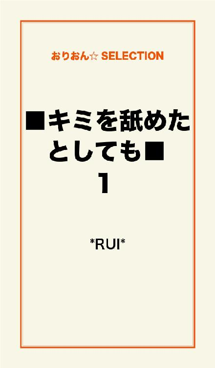
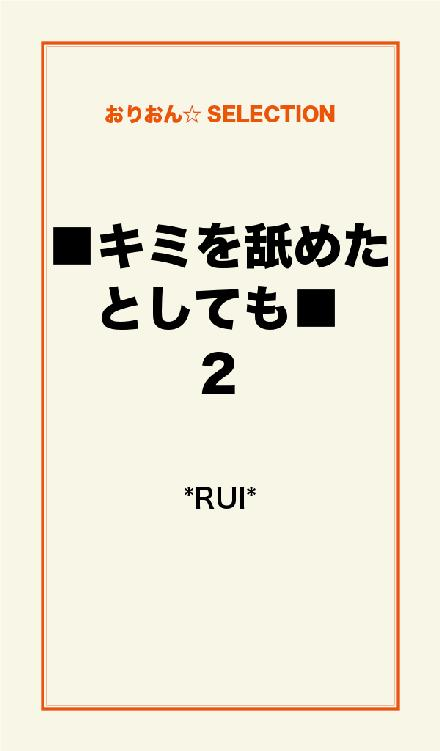

| ■キミを舐めたとしても■ 完全版 | |
| ＊RUI＊ | |
この本は横書きでレイアウトされています。
また、ご覧になる機種により、表示の差が認められることがあります。

第1章 はじまりは
キミは無口なまま細い腕を差し出す。
僕はその意味が分かってる。
舐めろっていうんだろ？
だから僕はその白く華奢な腕に自分の舌を這わせる。
長い前髪の奥で、長い睫毛が微かに揺れて
静かなまま俯きがちに目蓋を閉じ、キミは沈黙の美しさを晒す。
何を思ってる？
僕の舌で何を感じてる？
訊ねてみても無駄。
キミは喋れないもんね。
そんなキミと出逢ったのは、1週間ぐらい前だっただろうか？
僕はそれまで普通の高校生で
次期受験生になってしまう、春を迎えたところだった。
「コン！ 俺の愚痴に付き合ってくれよ」
時村 紺（トキムラ アオイ）
その妙な当て字から、僕はコンと呼ばれている。
友達は多い方だ。
僕は爽やかに繕う天才だからね。
本質は自分でも解らない。
ただ、友達に良い顔してる事だけは自覚があった。
「愚痴？ しょうがないから付き合ってやるよ」
僕が友達にそう言ったのには、ある目的があったんだ。
愚痴を聴くために放課後に寄る喫茶店。
愚痴を聞く事より何より......
その場所こそが、僕の目当てだった。
その喫茶店は、高校から15分程歩いた所にある。
静かで、僕らには少し場違いな感じのお洒落な喫茶店なんだけど
友達の話を真剣に聞くには適した場所で、よく行くんだ。
「俺、コーラ」
「俺もー。コンは？」
愚痴とやらを聞く為に来た今回だって、男3人には場違いだ。
しかもこいつらは、喫茶店なのにコーラを頼む。
「じゃ、僕も同じでいいや」
まぁ、僕も流れで合わせちゃうわけだけど。
「早速だけどさ、俺の彼女が......」
奴等の1人が早々に本題を語りだす。
僕は親身に聞くふりをしながら、そいつの向こう側を気にしていた。
窓際の日陰になっている席。
キミはいつも、極限まで露出しない服を着ていて
大抵、本を読むか何かを書いている。
今日もその細い腕で、俯きがちに何かを書き綴っていた。
腰まで伸びた真っ直ぐな黒髪に、柔らかい光が優しく煌めく。
消えてしまいそうなほど透き通る白肌に、薔薇の様な唇。
現代に白雪姫がいるのなら、きっとあんな感じだ。
なのに、存在を消す様に店内に溶け込む彼女。
僕は......。
僕だけは知っている。
彼女が世界で一番綺麗だという事を。
そう。
僕がわざわざ面倒な愚痴の為に、此処へ訪れる理由......。
それは彼女を見るためだ。
「コン！ 聞いてっか？」
「あぁ、ゴメン。実は寝不足でさ」
おっと、危ない。
僕が彼女をこっそり観察してるなんて、友達には１人としてバレちゃいけない。
弱味を握られては僕が成り立たないからね。
誠実で、真面目で、頼れる。
それが周りから見た僕。
だけど彼女は僕の本質をくすぐるんだ。
あの白い肌が
汚れるところを
見てみたい......。
そんな事を考えてる僕は、やっぱりちょっと変わってるんだろうか？
コーラの上に、溶けた氷の層が出来る時、
奴等の話は終わり、満足そうに明日の話をし始める。
話が逸れたって事が満足した合図だ。
「僕、先に帰っていい？ なんか頭痛くなっちゃって。悪いね」
「マジ大丈夫か？ 付き合わせて悪かったな」
申し訳なさそうな表情を浮かべる友達。
僕は１人、しめた。と思ってる間に解散の許しが出る。
そんなわけで僕らは伝票片手に店の出口へ向かった。
そこへ向かうには、角の席に座る彼女の横を自然に通り過ぎなきゃいけない。
彼女の存在を気にしながらも、その横を通る友達の列の最後を付いていく。
近づく彼女の姿に、僕の胸は高鳴っていた。
すぐ目の前に彼女の姿がある。
ここを出る時は大抵、こんな感じで彼女の横を通るチャンスがあるんだけど......。
この日だけは少し違ったんだ。
ほんのり感じる彼女のシャンプーの香りが、いつも通り僕の何かを掻き立てる。
それは、目前にいた友達が彼女の横を通り過ぎた時だった。
当然僕も、何喰わぬ顔で通り過ぎるつもりだったんだ。
ところが彼女と僕が並んだ瞬間
あの白く細い手がテーブルの端にスルリと動いた。
それは僕のすぐ脇。
反射的にその手に視線を向けると、1枚の紙が置かれていたんだ。
"待ってる"
その1言だけが、綺麗な文字で綴られていた。
平然と通り過ぎながらも、僕は酷く動揺していた。
彼女を見つめていた事に気づかれたのか？
恐らくあれが僕に向けられたメッセージだという事は、間違い無いはずだ。
......さて
どうしようかな？
僕はいわゆる天の邪鬼で、来る者は拒む主義だったりする。
つまり僕の中の彼女は、手の届かない存在だというポイントが魅力でもあったんだ。
果たして、素直に応えてやるべきか......？
喫茶店の外へ出て話し込む友達に相づちをうちながらも僕の頭は上の空だった。
「それよりコン、本当に大丈夫かよ。風邪か？」
「え？ あ、全然平気」
とか返しておきながら、ちょっと辛そうな顔をして見せた。
「俺らはゲーセン寄ってくけど、お前は......帰るか？」
「そうだねー。遠慮しとくわ」
奴等にそう応えたところで僕の迷いは無かった。
彼女の誘いに乗ってやろう。
それが応え。
僕の天の邪鬼な性質よりも、彼女の魅力は遥かに上回っていたんだ。
「あー、僕トイレ寄って帰るから」
「コーラ飲み過ぎ。そんじゃ、俺らは先行くわ。またな」
爽やかに去っていく2人の友人に手を振り、僕は軽く深呼吸をした。
さぁ、行きますか。正直心臓はバクバク言ってる。
だけど、この緊張感もまた心地好い。
彼女がどんな声か
どんな風に笑うか
全てが妄想の中で広がっていく。
そうして再び店内へ戻ると、案の定その視線を受けた。
吸い込まれそうな、どこまでも深い漆黒の瞳......。
そんなブラックホールみたいな彼女に、出来るだけ落ち着き払って近づいていく僕。
「こんにちは」
まず僕は、お得意の爽やか笑顔をぶつけてみた。
なのに彼女は、ピクリとも表情を変えない。
かと思えば、俯いて紙に何かを書き始める。
サラサラとボールペンを走らせる姿にさえ、僕はつい見とれてしまう。
すると、すぐに書き終えたその紙を無言のままに差し出されたんだ。
"とにかく座って私の話を聞いて"
「仰せのままに」
と、軽くお辞儀をして彼女の向かいに座った。
そしてまた、彼女は文字を綴る。
話したくないとか？
いや、誘っといてそれは無いよね？
......なんて、この時の僕は呑気な考えしか思いつかなかったんだ。
片肘をついて彼女を見詰め続ける僕に、次に差し出された紙。
そこには、こう書かれていた。
"私は話せないから、色々と不便なの。
奴隷になってくれない？"
それは僕の予想を遥かに超えていた。
奴隷......って、命令聞いたりするアレだよね？
「理由とか前置きとか、他にないの？」
そんな疑問に応えてくれたのは、たった2文字。
"無い"だけ。
「はぁ......」
そりゃあ、溜め息もつきたくなる。
こんな風にからかわれるのは、さすがに初めてだ。
彼女の話せない理由......。
それをあまりにも安易に考えていた僕は
真実を知ってしまうその時まで、深く考える必要なんか無かったんだ――......。
"本気よ。あなたを奴隷にしたい"
その文字を書いてよこした彼女の顔は真剣で......
何処か哀しげに見えたんだ。
その瞬間から、僕はすっかり虜になっていたのかもね。
「キミ、名前は？」
"日宮 葵"
僕と同じアオイという名の美しい彼女。
僕はその日から葵の奴隷になったんだ。
奴隷になった僕が早速連れていかれたのは、閑静な住宅街に佇むマンションの2階。
葵が1人で暮らすには大きめな部屋だ。
生活感の無い、物が少な過ぎる部屋。
女の子らしい物だって見当たらない。
その中で一番目立っていたのはＣＤコンポぐらいだ。
しかも、ＣＤは全部クラシックときた。
変わった人の枠を、遥かに超える葵だけど
僕はそんな部分さえ魅力に感じている。
話せない、掴めない、孤独で不思議な彼女。
そんな謎めいた全てが、僕の好奇心を煽るんだ。
"好きに過ごしていいけれど、命令は聞いて"
と書かれた言葉に対して
「はいはい。お姫様」
なんて応えてやる。
そんな自分も嫌いじゃなかった。
彼女の命令なら喜んで聞いてやる自信があるし
何よりも葵の本質を探る事を大いに楽しみにしていた。
まぁ、そもそも僕は変わった人間だから
こんな奴隷ごっこみたいな生活も、悪くないと思えるわけ。
こうして始まった僕と葵の生活には、いくつかの規約があった。
1.葵の命令は絶対。
2.電話には出ない。
3.葵を襲わない。
それ以外は自由だと言う。
お金を貰えるわけじゃないけど、葵と一緒に生活する上での出費は彼女持ちだし
葵に引き止められない限りは、帰りたい時に家へ帰れる。
そもそも僕の家には、ぐうたらな酒飲みオヤジしかいないから帰る気も無いけど。
無論、酒臭いジジィを見るよりは
美女を見て暮らす方が良いに決まってる。
まず、一番初めの命令はこれだった。
"私の腕を舐めて"
当然、僕は仰天した。
けれど相変わらず無表情で細い腕を差し出してくる葵に
仕方なく......というか、男としては喜んで舐めてみせた。
始めはそっと
そして葵の表情を窺いながら、徐々に夢中になって舐め上げる。
......彼女は
静かに目を伏せるだけ。
息を殺す様子もなく、ただ目を瞑ってじっとしている。
「くすぐったくないの？」
疑問をそのまま投げ掛けると、彼女は首を横に振った。
僕はその後も行為を続けた。
指先から、その付け根......。
手の平に、手首......。
まるで猫みたいに。
部屋にはベートーベンの交響曲第九番が静かに流れている。
クラシックを滅多に聴かない僕だって知っている曲だ。
その沸き立てる様な響きに、何故か僕の抑えきれない欲望が高ぶっていく。
この肌を汚したい......。
......ダメダメ。
僕は奴隷なんだから。
お姫様に出された規約は守らなきゃね。
そんな葛藤は10分ほど続いた。
そうして、ようやく葵の手が僕の肩をポンと叩く。
"もういいわ"
という合図だ。
――こんな感じで僕らは1週間を共に過ごしてきた。
買い物へ連れて行かれたり、電球を替えろと言われたり......。
殆んどが日常的な事だったけど
腕を舐めろ、との奇抜な命令は毎日の事だった。
何より困ったのは、学校へ行けない事だ。
葵と直接的な出会いをしてからというもの、ここ最近学校へ行っていない。
オヤジは心配なんかしないけど、学校の奴等が煩いんだ。
成績上の点数も減るし。
そろそろ気掛かりになってきた僕は、とうとう彼女に意見してみる事に決めた。
葵と共に生活をするようになって今まで僕は、あえて彼女を探ろうとはしなかった。
そんな今日は葵がその本質を出し始める、興味深い１日になったんだ......。
第2章 生活の中で
「葵ー。そろそろ学校行ってもいいだろ？」
まだ少し、自分と同じ名前の彼女を呼ぶ事に違和感を感じる。
そんな僕を余所に彼女は壁に貼られた数枚の紙の中から、迷わず"駄目"と書かれた紙を指す。
これは僕の提案で始めた新しい意思表示方法だ。
いちいち紙に書くのは面倒でしょ？って事で、よく使う選択肢は壁に貼ってある。
まぁ、見栄えは悪いけど。
学校の話を出すと、決まってコンポの上の紙を指差す葵。
寄りによって"駄目"の紙は、一番でかい文字で書かれている。
困ったもんだ。
「でもさぁ。学校の奴等煩いし、僕が卒業できなくなっちゃうんだよね」
珍しく粘ってみた僕に、葵は冷たい視線を向けた。
何か言いたい事があるらしい。
早々にペンとメモ帳を渡してやると、荒っぽい字でこう書かれた。
"私を置いていくのね！"
聞いた事の無いはずの彼女の声が、荒々しく聞こえてくる様だった。
そっか。
葵は寂しいんだ。
傍にいて欲しいんだな。
......いや、僕の自惚れからくる勘違いか？
考えてみれば、僕が自惚れるのも無理は無いよね。
だって普通、女の肌を舐めるなんて許される事じゃないし。
だけどそろそろ僕が反抗しても良い時期じゃないか？
1週間も学校へ行けないなんて、有り得ないだろ。
「あのさぁ、葵。キミの気持ちを教えてよ」
そう言ってみると、眉をピクッと動かして面倒臭そうな顔をしてくる。
いや。
奴隷とはいえ、ここで負けちゃいけない。
「正直、学校へ行けないと困るんだ。駄目なら駄目なりの理由がないと、了承出来ないよ」
すると彼女は、フゥーっと溜め息をついてペンを握る。
"どうしてもあなたを奴隷にしたかった。それだけじゃ不満なの？"
僕はその文字を見てガックリと肩を落とした。
「普通はさ、そんな事を言われて素直に奴隷になる奴なんていないよ？」
僕の言葉を呑み込めないのか、彼女は疑問符を泳がす様な顔をした。
だから、優しい僕は丁寧に教えてやる。
「葵が話せない事情も、どうして僕を選んだのかって理由も
教えてもらえなきゃ納得出来ない」
すると彼女は、無表情の中に微かな悲しみを含めた。
......そんな風に、僕には見えただけなんだけど。
"いいわよ。学校、行っても"
そう書かれた紙を差し出された時、僕はちょっとだけ残念な気持ちになっていた。
葵に隠された、一番知りたい謎が明かされるチャンスだったのに......
それよりも学校へ行く事を許されるとは。
僕への執着は、その程度ってことだ。
手渡された紙をガラスのテーブルに置いて、僕は颯爽と用意を始めた。
洗面所へ行って葵に買ってもらった洋服を脱ぎ、制服に着替える。
彼女の目の前で着替えると怒られるから、此処で着替えなきゃいけないってわけ。
何となく懐かしい制服に袖を通した時......。
ふと、僕の体は有り得ない温もりに包まれた。
洗面台の鏡越しに僕の背中に顔を埋める彼女の頭だけが映っている。
なんだ。
やっぱ寂しいんじゃん。
僕は後ろを向き返り、その小さな体を抱き締めた。
細くて、ちょっとの力で壊れてしまいそうな儚い体から小さな振動が伝わってくる。
彼女の鼓動は少しだけ速くて
僕の心音は、それを追い越して速くなった。
初めて会った時から感じていた、葵の中の孤独感。
事情なんてちっとも分からないけれど
僕が必要とされている事だけは理解出来た瞬間だった。
初めて見た彼女の可愛らしい一面に
学校なんて、どうでもいいやと思ったんだ。
だから
「明日は行くからね」
と彼女に告げて、僕は今日も学校を休むことにした。
現在のＢＧＭは、ショパンの別れの曲。
ゆっくりと流れていくピアノの旋律に耳を傾けながら
本を読むフリをして、葵の指を見ていた。
彼女はというと、何かをずっと書き綴っている。
それは時々見る光景だったけど
僕が覗くと葵は頑なに嫌がるから、一体どんな事を書いているのかサッパリ掴めない。
そうして書き終わった"何か"を、決まって彼女はポストへ出しに向かう。
その際僕も連れていかれるから、その"何か"が手紙という事だけは知っていた。
......ほら、来ました。
彼女が手紙をポストへ出しに行く合図は、僕の前に手紙を持って立てば直ぐに分かる。
ポストは、僕らの暮らすマンションのすぐ前にある。
葵はそんな場所にも僕を連れ出すんだ。
無論、そんなのはすぐに終わる。
僕は、ポストに突っ込む彼女の手紙を見届けるだけ。
何の変てつも無い、無地の白い便箋。
うまい具合に住所は手で隠れて見えない。
カタンと音を立てて、それは赤い箱の口に吸い込まれていった。
「ねぇ、それ一体誰に出してるの？」
と訊ねても、当然無視。
僕はつまらない顔のまま、颯爽とマンションに戻っていく彼女の後をついていくんだ。
これも含めて葵の謎は、過ごす程増えるばかりだった。
一緒に過ごす事で知った、葵の謎......。
ひとつ。彼女が時折出す手紙は誰に届くのか。
ふたつ。彼女の年齢。
みっつ。働いている気配の無い彼女の生活費は、何処からくるのか。
まぁ、そんなところ。
敢えて訊かない僕も僕だけど......。
正直、 訊いて良いのか悪いのか判らないんだ。
ただでさえ、葵は話す事が出来ない。
その原因だって勿論気になるけど、それだって訊くのを戸惑う。
だってそうだろ？
もしも彼女にとんでもない過去があったなら......。
疑問をぶつけてしまった僕は、いたたまれない気分になるだろう。
それは僕が良い人間だからじゃなくて
彼女の"奴隷"だからって理由なんだけど。
未消化な疑問点を抱えたまま、昼が過ぎた。
空腹を覚えた僕らは、昼食を買いに出掛ける事にしたんだ。
便利な事に、マンションの隣りにはコンビニがある。
ちょっと歩けばスーパーだってすぐそこ。
葵の機嫌がほんのちょっと良い時はスーパーまで買いに行くけど
今日はコンビニへ行く、との御命令が下った。
けれど
生憎今日に限って、この選択肢は間違いだった。
コンビニへ向かった僕らは、寄りによってアイツに会ってしまうんだから......。
それは、コンビニで弁当を選んでいる時のこと。
葵が昼食と夕食分の弁当を抱える隣りで
夕方は何を食べるか......なんて悩んでいた僕。
そんな僕の肩は、突然そいつに小突かれる。
「コンー。お前が彼女連れてるなんて珍しいじゃん」
ニタニタと微笑を浮かべるそいつ......。
左耳と下唇にピアス。
白に近いグレーの髪を逆立たせて
相変わらず、だらしなく制服を着こなしている。
間違える訳がない。
坂本 慶（サカモト ケイ）だ。
「最近学校に来ないと思ったら、コンは女の家に潜り込んでたのかよ」
「別に。彼女じゃないし」
クスクスと笑うケイに、冷めた視線で返してやる。
こいつは友人の中で唯一、僕の本質を知る奴だ。
昔からの腐れ縁で、いわゆる幼馴染みってやつ。
寄りによって面倒な奴に会ったもんだ。
「美人チャンじゃん。さすがモテる男は見る目があるねぇ」
「煩いからどっか消えろよ」
ケイにだけは、僕だって本質で話せる。
それは楽だけど
ケイは僕をからかうのが好きらしいから、顔を合わすと鬱陶しいんだよね。
「で？ どこまでいったんだよ？」
僕の肩に腕を回しながら、耳元で囁くそいつ。
僕はその腕を振りほどいて、いつも通り無表情な葵と共にレジへ向かう。
会計を済ませてコンビニを出ても、ケイは後をついてくる。
しつこい奴だ。
よっぽど気になるらしい。
「いい加減、放っといてくんない？」
威圧してみても、彼はハイハイと流すだけ。
結局、マンションの入口までついて来やがった。
「あのさ。それ、軽くストーカー」
「いいから、ちょっと俺も混ぜろよ。
親友の行く末が気になるじゃん？」
「親友じゃないし」
とか何とか言い争ってる間に、葵は入口を入っていく。
仕方なく後を追う僕は、浮き足立って付いてきたケイに終始イライラの剣幕を放っていた。
そうして辿り着いてしまった葵の部屋。
それでも彼女は、躊躇無く鍵を開けてしまった。
どうやら、存在を無視するほどケイに無関心なようだ。
「お邪魔しま～す」
まさにそいつの言葉通り。
ケイが邪魔で仕方なかった。
「早く帰れ」
「まぁま。ちょっと観察したら帰りますって」
邪魔ではあるけど、正直、ケイを邪険する程は嫌いじゃなかったりする。
見た目はいかにも悪そうだけど
彼は僕の本質を誰かに告げ口する事は無いし
こうやって葵と過ごしていたという事も、言いふらす事は無いはずだ。
長い付き合いだから、僕にはわかる。
ケイは僕に構って欲しいんだ。
自分の出した結論を認めるのは嫌だけど......。
彼は僕に興味があると言っても過言じゃない。
多分それは僕が葵に抱く好奇心と似たところがあるんだと思う。
「なぁ、コレ何？」
部屋に入るなりケイが指差したのは、壁のあちこちに貼られた意思表示の為の紙。
「マイブーム」
と言ってやると
なんだそりゃ。と、呆れた顔で返された。
その呆れ顔を放置して、僕は自分と葵の昼食をテーブルに広げる。
葵は静かに手を合わせて"いただきます"のポーズをし、僕も無言でそれを真似した。
ケイはというと
部屋の端にドカッと腰を下ろして、崩れた胡座をかきながら僕らをじっと観察している。
食事をする僕らはケイを無視して
長い沈黙が続く。
僕はいつもの事だから慣れてるけれど
ケイは落ち着き無く、体勢を何度もかえながら退屈そうにしていた。
静かなまま食事を終えた僕らに、とうとうケイは痺れを切らした。
「お前らさぁ、何か話したりしねぇの？」
別に。と応えてやろうと思った僕の目の前に
不意にそれは差し出された。
細い、葵の腕。
それはつまり、お決まりのアレだ。
ケイを前に躊躇いはあったけど、別に断る気は無い。
僕はその行為にハマってしまっているから。
モーツァルトの穏やかな安らぎのメロディーに浸りながら
僕はその腕に舌を這わせる。
肘の付け根から手首を目指して血管をなぞってみると
ほんのり石鹸の香りが口の中に広がるんだ。
向かい合って座る僕らの仲は
この時間を重ねる程に、深まっていくような気がしていた。
言葉なんて無いし
彼女が何を考えてるのかも解らない。
だけど、僕がこの瞬間に安心感を抱いている事と......。
彼女の手首の脈が穏やかなリズムを刻んでいる事だけは
確信を持って理解していた。
「お前ら、変わってんな」
せっかくの葵との時間は、ケイの難しい顔で遮られた。
まぁ、無理ないか。
「なぁ、美人チャンは照れ屋さんなの？」
葵は表情を動かさないままに、眼孔を冷たいものに変えて奴に向ける。
今やっと、初めてケイを見た彼女。
しばし睨み合う2人の間で
僕はちょっと楽しみながら、その光景を眺めていた。
葵が他の人間にどう接するのか、興味をそそられた気持ちもあるからだ。
「美人ちゃーん？ そんなに俺が嫌い？」
葵はテーブルの下に常備してあるメモ帳を取り出し、文字を書き始めた。
さて、どんなコメントが出るんだろう。
そうして紙は僕に託され、それをケイへ運んでやる。
ケイは終始ボケっとした顔をしていた。
何かを考える前に、奴の思考は停止するんだ。
頭を使うのが苦手ってわけ。
"私の邪魔をするならすぐに消えなさい"
なんて、その紙には書いてあった。
だいたい僕の予想通りの反応だ。
その紙を受け取った当人は、眉をしかめる。
そして言った。
「ほぉー、話したくないほど嫌いって事かよ。
なら、コンは連れて帰るわ」
おいおい。
ちょっと待て。
「よくそんな自分勝手な事が言えるね」
「いいや。間違いなのは美人チャンだろ。
コンは俺の所有物だから、使用するには俺様の許可が必要だ」
呆れて溜め息を洩らす僕は無視で、ケイはくだらない事を語り続けた。
「まっ、俺を拒否るんならコンは今連れて帰るぜ。
学校へ連れて行くように先生諸君に言われてるんでな」
本当かよ、と僕はケイを睨む。
ところが
ふと葵に目を向けると、彼女は大きくひるんだ表情を浮かべていた。
第3章 解明されて
「コンを取られたくなかったら、俺の質問に応えろ」
悪戯な微笑を浮かべるケイ。
一方葵は渋々立ち上がり、壁に貼られた"わかった"の紙を指差した。
「あ？ それは俺の質問に応えるって意味か？」
険しい顔でコクッと頷く葵。
僕の心境は、ちょっと期待を湧かせていた。
これは面白い。
ケイを通して、葵の事情を知れるチャンスだ。
奴隷の僕はしっかり傍にいて、内容に聞き耳を立ててればいいってわけ。
「そんなら。まず、美人チャンの名前......。
それと、いい加減口聞いてくれよ」
語尾に溜め息を含めながらケイは言った。
彼の質問を聞いて
僕は自分を指しながら、葵に合図する。
彼女がそれに頷いた事で、僕が代わりに教えてやる事になった。
「彼女は葵。日宮葵」
コンと同じ名前じゃん！とか、妙に興奮してるそいつに
僕はもっと重要な事を告げてやった。
「葵は話せないんだ。僕だって声を聞いた事はない」
案の定大人しくなったケイは
壁に貼られた紙を見回した後、納得の表情に変わった。
「なるほど。じゃあ、なんで話せなくなったんだよ」
......と、こちらに訊ねられても、僕だってそれは知らない。
「それは、僕も教えてもらった事ないよ」
「はぁ！？ お前、気になんねぇのかよ」
「そう言われてもねぇ」
僕らがそんなやり取りをしている間に
葵は再びテーブルについて、ペンを走らせる。
珍しくペンの動きが遅い。
躊躇いながら書いているように、僕には見えた。
やっぱり
言いづらい事なんだろうな。
それを分かっていても、好奇心に負ける自分。
ケイを追い出すのは簡単だけど、奴を使って葵の事情を聞き出す僕は
......謂わば賢い悪魔か？
僕がそうやって頭を廻らせてる間に、葵は書き終わった紙をこちらによこした。
大抵の事では驚かない僕だったけど
そんな僕の驚愕の日々は、この瞬間から始まる。
彼女の綺麗な文字の１つ１つは、思いもよらない意味を示して並んでいた。
"声帯を奪われたの"
僕は酷く動揺した。
何かの病気とか、事故ならまだ分かる。
だけどそこには"奪われた"とハッキリ綴られていたんだ。
大袈裟に表現するとか、比喩的表現とか、そんなの葵には有り得ない。
という事は、やっぱり文字のそのまんま......。
誰かに奪われたという事なんだろうか？
僕は勿論、ケイも苦い顔で葵を見た。
「冗談じゃ......ねぇよな。なんか、悪かったな」
葵は伏し目がちに、こちらから目を逸らした。
気まずい空気が流れる部屋に、タイミング良く終わったＢＧＭ。
葵は静かに立ち上がって、違うＣＤを選びに向かった。
その背中を見詰めながら、ケイはこちらに耳打ちをしてくる。
「大変だな」
彼の言葉に、何の反応も返さなかった。
正直、彼女の声の事情に満足したから。
予想外な葵の事実は
僕にとって、彼女を引き立たせる飾りに過ぎない。
つまり葵は僕の期待を裏切らなかったってわけ。
部屋には、ベートーベンの"月光"の第1楽章が流れ始めた。
静かに揺らぐ川の様に奏でる旋律は
僕の今の気持ちがそのまま曲になったような、そんな気持ちにさせられる。
そうやって曲に聴き入っていたら......。
「俺帰ろっと。コン、明日は学校来んの？」
伸びをしながらケイが訊ねてきた。
チラッと葵の様子を窺ってみると、いつもの調子で本を読み始めている。
だから僕は
「明日は行くつもり」
と、応えておいた。
「そっか、んじゃ明日学校でな」
「会いたくないけどね」
僕の嫌味を気にも留めず、ケイはダラダラと部屋を出て行った。
再び2人きりになった僕らの間には、ピアノの音色だけが軽快に響く。
ケイがいた時間とのギャップに退屈さを感じた僕は、悪戯心に葵の隣りへ座った。
そうして
本を支える白く端正な指に、自分の指を絡ませてみる。
すると彼女は、読書を遮った僕に目を向けてきた。
漆黒の瞳に、自分の顔が映っている。
それ程に僕は、彼女の顔に近づいていたんだ。
それでも、表情ひとつ変えない葵。
"何？"
とでも言いたそうな顔をしている彼女の頬に、そっと触れてみた。
どこまで
許してくれるだろう？
なんて、ちょっとした悪戯を試みる事にした。
まず、彼女を優しく抱きしめた。
葵は無抵抗に、僕の肩に顔を埋める。
彼女のシャンプーの香りが鼻をくすぐって、同時に僕の鼓動を高揚させていく。
彼女の真っ直ぐな黒髪に指を通していくと、それはスルリと指の間を抜けていって......
自身の中の何かが、呼び起こされる感覚を覚えたんだ。
だけど僕は
衝動に負けるほど単純な男じゃない。
慎重に自分を抑え付けながら、彼女の耳に触れ
そのまま首の筋を目指して指を滑らせる。
葵がいつも着ている、ハイネックの襟元をそっと捲った瞬間......。
僕は、自分の始めた悪戯に
深く後悔を覚えたんだ。
それは調度葵の喉元にあった。
5ｃｍぐらいの、横に真っ直ぐな線。
僕はそれを見た瞬間に直感していたんだ。
それこそが葵の声帯を奪った痕。
彼女はこれを隠す為に、いつもハイネックの服を着ていたんだと解釈できた。
申し訳ないと思う気持ちよりも先に
僕の中には、嫉妬に似た怒りが強く込み上げていたんだ。
つまり......。
彼女に傷をつけた奴に恨みを抱くよりも
羨ましいと思う気持ちの方が、上だってこと。
白い肌によく映えるそれは
まるで僕に挑戦状を叩き付けるみたいな、そんな悠々とした存在感を放っていた。
「ごめんね。見られたくなかったでしょ」
と訊ねてみても、葵は無反応だった。
彼女が何を思っているかなんて、さっぱり解らないけれど
一応、襟元を元通りに戻してから......。
彼女にキスをした。
僕はその痕のせいで、半ば平常心を失っていたんだ。
負けず嫌いなんだよね、僕は。
滅多に開かれる事の無い唇に触れて、勝った気分に浸るつもりだった。
なのに......。
葵は、強かに顔を背けたんだ。
彼女のそれが離れた自分の唇に、感触だけが虚しく残る。
拒否された。
当然、落ち込んだけど
それとは裏腹に、ワクワクしている僕もいる。
簡単に手に入らない方が、やりがいがあるってもんでしょ？
「失礼しました。お姫様」
とか言っておきながら、笑顔は隠しきれなかった。
葵はこちらに見向きもしないまま、再び読書を再開した。
僕は唇の名残を記憶に刻みながら、彼女の首の傷痕を思い返す。
気になって仕方ないんだ。
どんな経緯で彼女の声が奪われたのかが。
「あのさぁ。なんで声帯を取られたのかって、訊いたら怒る？」
なんて、堪らず訊ねてみた。
葵は、やっとこちらに殺那の視線を向け
そしてズカズカとテーブルへ向かう。
こりゃ明らかに怒ってるな。
応えを待っていた僕へすぐ届いた紙には、こう書かれていた。
"私は特別だから"
雑な字から、彼女が面倒臭がってるのはすぐに分かる。
だからそれ以上は訊かないけれど
葵の謎は一向に深まるばかりだった。
その夜......。
僕らは、いつも通り別々に眠る。
当然のごとく、葵はベッドで僕は床だ。
男の僕にとっては一番しんどい時間だけど、今日は特に眠れそうにない。
彼女の傷痕があまりにも強烈だったから。
やがて寝息をたて始めた葵の顔を、こっそり見てみた。
電気の消された暗闇の中でも、色白の彼女の顔はぼんやりと分かる。
長い睫毛をしっかり閉じて、人形みたいに眠っているんだ。
それはさながら、眠れる森の美女。
そんな顔に見とれながら、僕はある計画を企てていた。
葵の事情を探るうえでの、ちょっとした観察。
その計画を綿密に練りながら、僕はのんびり眠りに就くのだった。
朝日が眩しくて目が覚めた。
葵はいつも僕より早起きで、ちゃっかり着替えを済ませてからカーテンを全開に開けるんだ。
だから目覚ましなんて必要無い。
シンプルな丸い壁掛け時計は、朝の７時を差していた。
だらだら用意を始めて、当たり前のように制服を着る。
学校へ行く格好をした僕を見て、葵は一瞬不満そうな表情をしていたけど
結局何も伝えてこなかったって事は、僕が学校へ行くのを許してくれたんだろう。
先生や、多くの友人に何を言われるのかと思うと気分は重かったけど
計画の為だと思えば、そんなの苦じゃない。
しばらく手をつけていなかった学生カバンを抱えて、僕はマンションを後にした。
マンションから学校までは、そんなに遠くない。
むしろ自分の家から歩くより、全然マシな距離。
僕はその道のりの途中、久々に見る自分の携帯のボタンを押してアイツに電話を掛ける。
呼び出し音が数回鳴った後、奴はすぐに出てくれた。
『もしもーし。お前が電話くれるなんて珍しいじゃん。
美人チャンと何かあったか？』
受話器ごしに聞こえるそいつ......ケイの声を無視して、僕は淡々と言う。
「今日の4時限目、早退しようよ」
『早退？ お前から悪い誘いしてくるとは、今日は雪降んだろなー』
「校舎の裏で待ってるから、早めに来てね」
『さては、俺に愛の告白だな？
残念ながら、俺には沢山の彼女が......』
そこで躊躇なく電話を切って、僕は足取り軽やかに学校を目指した。
「コ～ン！ お前、なんで休んでたんだよ」
「時村くん、大丈夫？ 皆心配してたわよ」
「時村ー。休む時はちゃんと先生に連絡しろよー」
友達やら先生やらに散々言葉を浴びせられ、僕は非常に疲れている。
葵との生活から抜け出すと、会話する事じたいが面倒に感じるんだけど
一方で、会話出来る便利さも痛感していた。
葵はよっぽど不便だろうな......。
なんて、改めて彼女の苦労を知るんだ。
その事も含め、学校にいる間も葵の事ばかり考えている僕。
その原因は、この後早退してまで行う計画のせいでもあるんだけど。
懐かしいチャイムの音が耳に響く昼下がり。
既に早退の申請を果たした僕は、都合良く昼食だけ済ませて校舎の裏へ来ていた。
因みに、口実は体調不良。
有りがちっちゃ有りがちだけど、無断でサボるよりは僅かに格が高い。
僕は校舎の裏に散らばった石ころを足で弄りながら、ケイが来るのを待ちわびていた。
そうして5分ほど経った後、そいつはお決まりのダラダラ歩きでやってきた。
「お待たせっコンちゃん！」
ピアスのついた唇を二ッと伸ばして、気色悪い女声を出すケイ。
それを軽くスルーして、僕はさっさと歩き始める。
「おいっ！ 無視かよ」
それでも奴はちゃんと付いてくるのを知っている。
颯爽と校門を抜けた時も、きっちり後ろにケイはいた。
「コンー、何処に連れてってくれんの？」
いつの間にか僕の隣りを歩いていたケイは、顔を覗きながら訊ねてきた。
「葵のところ」
そう応えてやると、やっぱりな。なんて返ってくる。
わかってるなら訊いてくるなと思うけど
既に僕の頭は
この計画によって葵のどんな姿が見れるのか、って事しか考えていなかった。
まぁ、計画って言っても
学校へ行っていると見せかけて、僕のいない間の葵の行動を探ろうってだけなんだけど。
恐らく、この時間帯なら彼女はあの喫茶店にいる。
葵と生活するようになる前までは
僕が友達を連れて喫茶店へ向かう時、いつもそこに彼女がいたからだ。
たぶん葵は、あの喫茶店で昼食を済ませてゆっくり本を読む時間に浸るんだろう......。
ってゆう、根拠の無いただの憶測だけど。
そんな僕の計画の過程をケイに伝える間に、馴染みの喫茶店は見えてきた。
そして僕はピタリと止まる。
ここを通り過ぎる前に、確認しておかなきゃいけないからだ。
もしも本当に葵が喫茶店にいるなら......。
ここを通り過ぎる際に、いつも窓際に座る彼女に気付かれてはまずい。
ケイを連れてきたのはこの為だ。
「さり気無くその喫茶店を通り過ぎて、ついでに葵がいないか確認してきてよ」
「は？ バレたらまずいんじゃねぇの？」
「本当にいたら、気さくに手を振ればいいだけだよ」
そう。
別にケイが見つかったって、僕の計画に支障は無い。
昨日コンビニでケイに出くわした経緯から、葵はこいつがサボり魔だという事を理解しているはずだ。
この時間帯にケイに会ったって、葵は無関心にしているだけだろう。
それから葵が喫茶店に出るまで、外で隠れて見張っていればいいってわけ。
早速ケイを偵察に送った僕は、それを影から監視する。
ケイの背中は少しずつ遠ざかっていって
丁度、葵がいつも座る席の辺りで彼の足取りは遅くなる。
チラッと横を向くケイの動作が確認できた。
その後の反応はというと
彼は、慌てる素振りで僕の元へ戻ってきたんだ。
その結果は勿論......。
「おい！ 美人チャンいねぇぞ」
そうゆうわけだ。
「そっかぁ。ハズレかー」
それなら、やっぱあそこにいるのか？
とか考えながら、僕らは喫茶店を通り過ぎる。
此処にいないなら、マンションかコンビニぐらいしか思い当たらない。
唯でさえ行動範囲の狭そうな彼女だから
きっと、そのどちらかに姿はあるはずだ。
そういった訳で、僕らはマンションの方面を目指す。
葵が使わなそうな、細い脇道をわざわざ通って
さながら刑事ドラマみたいに、影を忍ばせながら目的地へ向かった。
ケイはそんな状況を楽しんで付いてくる。
僕だって、こうゆうのは嫌いじゃない。
そうして辿り着いたコンビニの裏で、僕らは確認をとる。
まずはコンビニ店内の偵察だ。
「今度は、店内入っちゃっていいから。
商品棚で見えない可能性もあるからね」
「了解～」
ケイは手の平をヒラヒラさせて、表通りへ入っていった。
今度はさっきと状況が違う。
葵が何処にいるか解らない限り、僕は慎重に通りの様子を窺わなきゃいけないんだ。
だから表通りに葵がいた場合、彼女に挨拶だけをして戻るようにと言ってある。
ところが
すぐに戻ってきたケイの表情は、妙に焦っていて......。
僕の中の不安が、静かに疼いた。
第4章 その存在と
「ちょっ......コンッ！ あいつ誰だよ」
ケイは小声で喚いて、見てみろと言ってきた。
僕は全く訳が解らず、言われるままにコンビニの角から通りを覗く。
瞬間、唖然とした。
通りからは、コンビニの隣りの葵が住むマンションまで見渡せる。
そのマンションの前で、葵が男と会話をしていたんだ。
それが会話と呼べるのかは分からないけど、葵は男に手話で応対しているらしい。
彼女の顔は斜め後ろから見える形で、相手の男の顔はここからハッキリ見える。
その男はというと背は高く、グレーのスーツを着ていて一見穏やかそうな整った顔立ちをしていた。
いわゆる、優男といったイメージだ。
年齢は......。
20代後半といったところだろうか？
「美人チャン、浮気か？ やるねぇ～」
ケイの言葉が拍車をかけて、僕の嫉妬心は最高潮まで達していた。
葵は、手を流れる様に動かして何かを表現している。
僕には手話なんて全く解らないし、男の話す会話の内容も聞こえないけど
自分の機嫌が非常に悪い事だけは、ハッキリわかる。
何故なら
葵の目元が綻ぶのを、斜め後ろからでもしっかり確認出来たからだ。
彼女は、僕に見せた事の無い笑顔をそいつに見せている。
その現状に納得出来なかった。
僕は彼女と一緒に暮らしている。
例え短い日数とはいえ、ずっと付きっきりだったんだ。
なのに、あいつは何なんだよ？
......そんな文句が言えない事は、理解出来てる。
だって僕は所詮奴隷だから。
僕は通りに背を向けて、その場を後にする。
勿論、葵達に見つからないように......。
「あれ？ あの子に何か言わねぇの？」
「別にいいや。関係無いし」
「関係無いって......彼女だろ？」
ケイに返事を返さないまま、僕は再び喫茶店を目指した。
気分転換に、コーヒーでも飲もう。
そうして葵も店に来たなら、彼女と一緒に帰ってやるんだ。
葵の家へ。
大丈夫。
モヤモヤした気分はすぐに忘れる。
僕はそんなに、女々しい人間じゃないから。
頭の中をリセットしながら喫茶店に向かう間、ケイは何度も葵の話をしてきた。
こいつは葵を、僕の彼女だと思い込んでいるから無理も無い。
しょうがないから教えてやるか。
なんて考えながら、ケイと共に喫茶店へ入った。
馴染みのその店へ入ると
いつもと変わらず、コーヒーの芳ばしい香りが鼻を抜けていく。
そうして僕らは、いつも葵が座っている窓際の席に腰を下ろした。
彼女がここに現れる保証は無いけど、もしも来たなら驚かせたかったんだ。
そうやって、少しでも自分の気持ちを誤魔化そうと思っていた。
「ケイは何がいい？」
「俺はコーヒーでいいや」
ケイと一緒にこの喫茶店へ来るのは初めてだったりする。
幼馴染みとはいえ、友達のグループは全然別だったからだ。
だから彼がコーヒーを頼んだ時、僕はちょっと意表をつかれた。
てっきり、こいつもコーラを頼むのかと思っていたから。
「......じゃ、僕もコーヒーにしよっと」
じゃって何だよ。とか言われたけど、僕はお決まりのスルーで2人分のコーヒーを頼む。
注文したそれが届く前に、僕は話を始めた。
いつも此処には愚痴を聞くために来ていたけど、今日は逆だ。
「理解しといてもらいたい事があるんだけど」
僕が話を始めると、ケイはア？ と間抜けな声を出した。
その顔に呆れながらも、僕は話を続ける。
「実はさ、僕と葵は付き合ってるわけじゃないんだ」
「はぁ！？ お前、普通に美人チャンの部屋に入ってたじゃん」
「それは僕が奴隷だからだよ」
言った瞬間、ケイは固まった。
そして容赦無く、僕は真相を語ってやる。
「葵に頼まれてさ。
美人だからオッケーしちゃったわけ」
「ほんっとにお前は変わった奴だよな。
気持ちは解るが、あの子には裏がありそうだぜ？」
だから良いんだよ。って返してやった時、注文していたコーヒーが運ばれてきた。
ケイはそれを一口啜ってから、制服のポケットに入っていた煙草を取り出す。
ケイが煙草を吸っているのは知っていたから、僕は普通に見ているだけだけど
そいつの吹き出した煙が臭くて、僕は改めて煙草に嫌悪感を抱いた。
しかも未成年。
ケイのくせに生意気な。
「さてと。葵ちゃんの話だっけ？
俺は、今からでも奴隷を辞退した方が良いと思うけどな」
「何を言われても、僕はまだ続けるつもりだよ」
「恋人がいても。か？」
そう言われて、再び蘇る嫉妬心。
まぁ、奪いがいがあるってもんだ。
「僕って、ハードル高い程燃えるんだよね」
「あー。コンはＭか」
......はて、僕はＭなんだろうか？
奴隷の生活を満喫してるけど、内心では葵を汚したい気持ちもある。
「ま。お前ら面白いから、俺はもうしばらく観察させてもらうけど」
「邪魔しないならね」
「それどころか、あの男の正体を突き止めてやるよ」
本当に役に立つかは別として......。
こうして僕には、ケイという頼りがいの無い相棒が出来たってわけだ。
「そういえば......」
僕がコーヒーに砂糖を入れていた時、不意にケイが口を開いた。
そして、とんでもない事を言いやがったんだ。
「葵ちゃんと話してた男、お前に似てたな」
「は？ あの優男に？」
「その目とか、表情の......。
エセ爽やかな感じが」
エセ爽やか。
それは、僕の本質を知るケイだからこその感じ方。
他の皆には、素直な爽やかさを感じてもらってるはずだ。
それに......。
「僕はもっと若いんだけど」
「だからー、お前が何年か経ったらあんな......」
ふと、ケイの台詞が途切れる。
その理由は、彼の目線から直感していた。
振り返ってみると
予想通り、葵の姿がそこにある。
丁度レジのある入口に背を向けていた僕は、葵の入ってきた気配すら感じていなかったんだ。
彼女は既に僕らのすぐ近くまで来ていた。
そのまま真っ直ぐケイの席の横に立ち
"どいて"
という様な顔で彼を睨む。
ケイはタジタジといった具合で、彼女に席を譲った。
向かいに座った葵に、思い切り爽やかな笑顔で言ってやる。
「ビックリした？」
彼女は無表情のままコクッと頷く。
その反応は、少しだけ残念だった。
僕の心にはまだ
あの男に対する葵の表情が消えていなかったからだ。
「俺は帰るわ。お邪魔さま」
ケイは、頑張れ。とでも言う様な具合で僕の肩を叩いて去っていった。
コーヒー代はこちら持ちって意味も込められてるんだろうけど。
「ケイもいなくなったところで、2人で少しお茶でもしない？」
その誘いに、葵は再び頷いた。
だから僕は店員に
「すいませーん。コーヒー追加で」
と注文する。
葵がこの席でいつもコーヒーを飲んでいた事は知っているから、訊ねなくても解るんだ。
するとそれはすぐにテーブルへ運ばれてきて、葵はブラックのままで口をつけた。
コーヒーを飲む彼女の唇を見つめながら
僕はふと、頭を廻らせていた。
赤い唇、白い肌、黒い瞳に、綺麗な髪......。
葵はやっぱり美人。
だけど
もっと違う格好をしたら、更に魅力が引き出されるんじゃないか......ってね。
そこで僕は、ある遊びを思い付いた。
「ねぇ、葵。もしも僕がキミにプレゼントを贈ったら、受け取ってくれる？」
彼女は一瞬、不思議そうな顔をしてから
いつの間にか広げていたメモ帳に返事を書いた。
"別にいらないけど、くれるなら貰うわ"
それを見た僕は、あれやこれやと想像を膨らませる。
簡単に言えば、洋服をプレゼントしようと思ったってわけだ。
何の記念でもない、僕からのプレゼント。
それを贈ったところで、葵の僕に対する気持ちは変わらないはずだ。
それでも僕は
彼女の何かを変えたかったのかもしれない。
自分でも
よく分からないけど。
だけど1つだけ......。
僕の中ではっきり分かるのは
葵の笑顔を独り占めするあの男の存在が、どうしても振り切れないという事。
奴の存在が、頑固なシミみたいに僕の頭にこびり付いているんだ。
初め、葵だけの日常を覗いた事は隠し通すつもりだった。
けれど、どうしても気になってしまう......。
ウジウジしてる自分が気持ち悪くて、我慢出来ない。
結局そうして......。
僕はとうとう、葵に訊ねてしまうんだ。
既に、僕のコーヒーはすっかり冷めていた。
そんなまずいコーヒーを一気に飲み干してから、早速訊ねた。
「さっき見ちゃったんだけどさ。マンションの前で葵と話してた男って、一体誰なの？」
目の前の彼女がピクリと反応した。
そしてこちらに目を向けないまま、文字を綴る。
応えが待ちきれなかった僕は、言葉が記される過程を見つめていた。
"あの人は"
"とても大切な"
"恩人なの"
その文字を書いている葵の表情は
僅かにだけど、優しく綻んでいたんだ。
僕はますます気に入らなくて、更に追求した。
「恩人って、何の恩人なの？」
出来る限り、爽やかに繕ってみる。
すると彼女は
細い両腕を僕に向けて差し出す。
それがいつもの命令じゃない事だけは、はっきりと分かった。
「その腕を......守ってもらったって事？」
葵はゆっくりと頷く。
漠然とした応えに、僕はどうも納得出来ない。
「何かの事故から守ってもらったとか？」
"違う"
「何かの病気を治してもらったとか？」
"違う"
「じゃあっ......」
いつの間にか、僕の表情は険しいものに変わっていた。
これ以上、追求するのは良くない。
そう思って声を止めた。
どんな意味で腕を守ってもらったのか......。
理解も出来ないし、気分はますます悪くなるばかりなんだ。
だって何より......。
あいつによって守られた葵の腕を
僕は毎日の様に
舐めているのだから......。
バッハの"Ｇ線上のアリア"が流れている。
バイオリンが高良かに、けれど柔らかな音色を刻む。
僕らはあの後、すぐにマンションへ帰ってきたんだ。
たった1週間ちょっとを過ごした、葵の部屋。
なのに、この場所に安らぎを感じている。
毎日流れるクラッシックも
僕の声しか響かない空間も......。
全てが2人きりの時間だったからだ。
外へ出てしまったら、僕と葵の関係は崩されてしまうかもしれない......。
自分自身の中に疼く、そんな想いも感じていた。
そう。
僕はいつの間にか、臆病になっていたんだ。
それと同時に僕の中には
葵への独占欲が、深く根付いている事を痛感した。
自分の中に渦巻く感情を再確認する僕。
その一方、葵はベッドの上でいつものように本を読んでいる。
そんな彼女を見て
僕はプレゼントの事を考え、頭を切り換えた。
あれにしようか、これにしようか......。
その事に考えを向けるだけで、少しだけ胸の重圧が楽になった。
因みに、僕の中でだいたいのプレゼント......贈る服は決まっている。
早速、明日買おう。
......って言っても
それは僕には、とても入り難い場所に売っている。
それならこの部屋で買えば良いだけのこと。
だって今は携帯ってゆう、便利な買い物手段があるんだから。
翌朝。
僕は起きるなり、携帯をいじり始める。
はっきり言って
携帯って、僕には必要無い物なんじゃないかと思っていたんだ。
この日までは。
だけど、実際に買い物に使ってみると意外と面白いもので
僕の目的の品は、豊富なバリエーションで売られていた。
それらに葵の姿を重ねながら、一番似合う物を見つけた。
うん。
やっぱり
これが一番似合う。
僕は早速それを購入した。
速達で頼んだから、明日のうちには届くはずだ。
現在バイトをしていない僕の貯金にはちょっと痛いけど...
葵が着てくれたなら、充分満足出来る。
朝から1人ニタニタする不気味な僕を見て、葵は冷めた表情を浮かべていた。
上機嫌の僕が歯を磨く間、葵が朝一番の曲を流す為にコンポへ向かった。
歯ブラシをくわえながら彼女の隣りへ向かって、その手にあるＣＤカバーを覗いてみた。
何やら読めない英文字の下に、シャルル･フランソワ･グノーと片仮名で表記してある。
申し訳ないけど、僕の初めて耳にする名前だ。
コンポはカタカタと機械音を発した後、その曲を流し始めた。
聴いてみると、意外にも聞き覚えのある曲。
......そんな感じで
僕は徐々に、クラシックにも興味を持ち始めていた。
「そういえば、葵って何でクラッシックが好きなの？」
なんて唐突に訊ねると"秘密"と書かれた紙を指した。
これまた彼女がよく使うから、壁に貼ってあるんだよね。
本当に秘密の多い人だ。
因みに、年齢を訊いた時もその紙を指されていた。
実は小学生。とか言われてしまったら、ちょっと驚くけど。
まぁ、見た感じは僕と同い年か少し上だと思う。
僕は童顔と言われる類いの顔だから、何とも言えないのが現状だけどね。
そんなこんなで洗面台で口をすすぎながら、鏡に向かって自分の童顔を再確認する僕。
そんな自分を見て、ふとケイの言葉が過った。
『葵ちゃんと話してた男、お前に似てたな』
今日は気分が良かったのに、またあの優男を思い出しちゃったよ。
そいつに似てるって言われても、自分じゃよく判らない。
鏡から遠ざかって見てみたり、近づいてみたり......。
そうやって、自分の顔にあの男の顔を重ねてみる。
そんなくだらない事をしていた時、突然ドアホンが鳴った。
当然驚いた僕は、同時にそいつの顔を思い出していた。
まさか、あの優男か？
いやいやこの場合、結局ケイだったってオチだろう。
僕と同様に驚いていた葵は、ドアホンを取って来訪者を確認した。
......にしてもドアホンが付いてるなんて、つくづく葵が羨ましいよ。
とか思いながら、僕はその様子を後ろから窺っていた。
来客を写し出す画面には、僕の予測を遥かに越えた姿が映っていた。
ケイでもなければあの優男でもない。
それどころか、むしろ女性。
しかも、綺麗な大人の女性ときた。
『葵ちゃ～んっ！ 来ちゃったぁ～』
そう言ってきた彼女の語尾には、ハートマークが付いてそうな勢いだし
明るい栗色のショートボブに、弾ける様な笑顔。
明らかに、葵とは正反対のタイプだ。
「葵......その人、誰？」
訊ねた僕の声に気付いたのか、その女性は思い切り反応を示した。
『ああっ！ その子？
ちょっとちょっと見せてよ～』
ニヤッと笑う彼女。
葵はというと、当たり前の様な無表情に戻っていて、すんなりその女性を中へ入れた。
つまり、葵の知り合いってことか。
寄りによって繋がりの無さそうなタイプなのに......。
ますます葵が解らなくなってきちゃったよ。
ドアが開いた瞬間
颯爽と入ってきたその人によって、僕は中腰でその胸に埋められた。
「きゃ～ン！！ 可愛いじゃ～ん！」
とっても豊満な胸に埋めて頂いた僕は、苦しいやらキツいやら
もうワケが分からない。
とにかく、この甘い香りは良いとして......。
薄いキャミソールだから、感触がリアルだ。
「あのー、解放してもらえませんか？」
「あ。そうだよねー！ あたしったら、つい。ゴメンなさいね～」
僕を解放し、アハハッと健康的な笑い声を響かせながら
葵の許可も無く、ベッドの上に座って片足を組んだその人。
大人の女性特有の、素敵なスタイルでフェロモンを放出している。
僕には効果無いけど、他の男だったら堪んないだろうね。
因みに僕は、自分が狙った女性意外は興味の対象外だから
そのフェロモンには全く無関心ってわけ。
ベッドに腰掛けるその人に疑問を抱きながらも
僕はテーブルに着き、葵は僕の向かいに座る。
すると女性は、悪戯にニヤつきながら言ってきた。
「キミがコン君だよね？呼び名からして可愛いわぁ。葵ちゃんとお似合いっ」
「そんな事よりも、僕は全く貴女を知らないんですが」
僕は冷静に言ってるのに、その人はまた笑うんだ。
「アハハッ！！ しょうがないよ。葵は、厳重機密だもんね～」
「機密？」
彼女の口から不自然に出てきた言葉が、無性に気になる。
そんな僕に
その人は色っぽい微笑を浮かべて、自己紹介をしてきた。
「あたしは庄童夕子（ショウドウ ユウコ）。葵ちゃんのお世話係をしてるの」
第5章 深まる謎は
「庄童さんが......世話係？」
「ちょっと～、夕子って呼んでよ。
まぁ、葵ちゃんのお姉さんとでも思ってくれればいいから」
お姉さんと言われても......
既に世話係......と聞いた時点で、そっちの方が気になる。
いや、そもそも......。
「機密って何ですか？」
それが余りに馴染みの無い言葉だから、僕の頭は酷く混乱していた。
当人の葵は涼しい顔で聞いてるだけだし、夕子さんは全てを話し切った顔をしている。
さっぱり訳が解らない。
夕子さんの話も
葵の存在も......。
僕は難しい表情で夕子さんを見た。
「あ。コン君、何か言いたそうな顔してる～」
「当たり前ですよ！ そもそも何なんですか！？ 機密とか世話係とか、全くワケわかんないんですけど」
そう言い放つと
夕子さんと葵は顔を見合せ、2人で何やら頷いた。
「知って後悔しないなら、教えてあげてもいいけど？」
相変わらずニヤついた横目で、こちらを逆撫でる様に見てくる夕子さん。
聞かされてもいない事を、後悔するかどうかと訊ねられたって
そんなの、どうとも言えないに決まってる。
単に、僕をからかってるだけとか？
機密がなんちゃらってゆうのも、おちょくる為の嘘か何かか？
......僕は、
しばし考えた。
葵の、不可思議すぎる生活。
声の出ない理由。
彼女の存在そのもの......。
その全てが、夕子さんの言う機密とやらに関わっているとしたら......？
知って後悔したって良い。
葵は葵でしかないんだから。
「教えて下さい。
後悔したとしても、葵の事を知りたいから」
僕は、そう決断した。
「わかった。じゃあ教えてあげる」
夕子さんは急に真剣な眼差しになりながら、足を組みかえて言った。
「葵ちゃんはね。国から認定されてる予言師なのよ」
それを聞いて、ますますからかわれた気分になってしまう。
「予言師？ 何かと思えば、ずいぶん非現実的な事を言うんですね」
半ば呆れ返って夕子さんに言った。
正直、どう返して良いか分からなかったんだ。
やっぱり、からかっているだけなのか......でも2人の表情は真剣そのもの。
すると今度は葵がペンを走らせた。
珍しく長い文を書いているみたいだ。
書き終わったそれには、こう書かれてある。
"信じないならそれでいいわ。
その方がきっと、あなたにとっても私にとっても幸せよ"
それを見て、戸惑った。
葵は今まで、嘘をついた事が無いから。
それが嘘だと、気付かないだけなのかもしれないけど。
そもそも葵が、わざわざ嘘を付くような面倒な事はしない人間だと思っていたんだ。
「葵まで......肯定するんだね」
「なるほどね～。葵ちゃんの言う事も一理ある」
僕はそれから、じっと葵の表情を窺ってみた。
だけど、いつもと何の変化も無い。
よっぽどの嘘常習犯か、彼女の肯定した事が本当に事実だってわけだ。
あれこれ思考を巡らせている僕に、夕子さんがまた言葉を続けた。
「......まぁ、どっちにしたってコン君はどうせ何も出来ないし。
秘密を守ってくれればそれでいっかぁ」
「まるで人を見下すみたいな言い方ですね。
そもそも、夕子さんは何をしに来たんですか？」
夕子さんの台詞に、不快感を抱きながらも訊ねてみた。
すると彼女は持っていたバッグからＡ判の茶封筒を出し、それをこちらに突き付けてくる。
「それ渡しにきたの。
秘密を守ってくれるなら......ね」
眉をしかめながらも受け取った。
「守らなかったらどうなるんですか？」
夕子さんに訊ねたつもりが、応えたのは葵だった。
"奴隷失格よ"
葵の見せてきた紙には、そう書かれてある。
奴隷失格？
冗談じゃない。
葵への好奇心はますます深まるばかりだし
この生活にどっぷりハマっているんだから。
「わかったよ。
お姫様の御命令は絶対だ」
「いい子ね。
キミは葵ちゃんの奴隷として合格よ」
言うなり、夕子さんは立ち上がった。
「それをよく読んで、今後も奴隷として葵ちゃんに尽くして頂戴ね～」
ヒラヒラと手を振って、夕子さんは颯爽と出ていってしまった。
残ったのは、その人の甘い香りと
未だ漠然としたままの謎だけ。
2人きりになった僕らの間には、再び沈黙が戻ってきた。
いつの間にか、ＢＧＭも止まってしまっていたんだ。
葵はそれをベートーヴェンのＣＤに換えた。
そして再び彼女の読書が始まる。
僕は手にあった茶封筒を見て、小さく深呼吸した。
そうして中を出してみる。
厳重機密の側近として
なんて書かれてある。
それにしては質素な作りで、数枚のプリントの角を一ヶ所ホチキスで纏めてあるだけ。
だから何の緊張感も無いままに、それを開いてしまったんだ。
僕はそれを読んでしまった時点から
ようやく、緊張の糸を張り詰める事になってしまう。
日宮葵について――
そこには、堅苦しい文字が整然と並んでいた。
数枚のプリントとはいえ、そこにびっしり書かれている内容が示す事はつまり
僕に対する規約だった。
簡単にまとめればこうだ。
葵の命令を聞く事で満足させてやり
彼女の障害からくるストレスを軽減してやること。
それと、葵に好意を持たない方が身の為ってことと
男女の関係を持つなってこと。
たったそれだけの内容を、遠回しに書いてあるだけだ。
だけど書いてある根拠や、僕を追い詰める様な内容はとても悪戯には思えなくて
途端に変な緊張を覚えてしまう。
「葵を襲っちゃいけないって約束も、実はこの為だったり？」
プリントから顔を上げ、引っ掛かった事を彼女に訊ねると
やっぱり、コクリと頷いてきた。
「...予言師って言うけどさ、どうして、ここまで堅苦しい規約があるわけ？」
すると彼女は本を片手に持ったまま、サラサラとメモに綴った。
"私は、人間とは呼べないから"
そう書かれた紙を持ったまま、僕は殺那固まった。
「なんだよ、それ......」
苦笑い混じりに言ってしまうのも、当然だろう？
葵が、自分自身をそう思ってたなんてさ。
声が出ないから？
性格が変わってるから？
機密上の存在だから？
いずれにしたって......。
「......葵は、ちゃんとした人間だ。
そんな悲しい事言わないでよ」
それでも葵は表情ひとつ変えず僕をじっと見てくる。
何を考えているのかも、さっぱり分からない。
僕はというと
今まで発覚した葵の事実が複雑に絡まり合って、むしろ投げ出したい気分にもなっていた。
そんな僕の何かを感じたのか、葵は再び何かを書き始めた。
"貴方は、やりたいように生きればいいわ"
葵は多分
僕が奴隷を辞退したいと考えている......とでも、受け取ったんだろう。
だけど実際
僕はそんな事、思っちゃいない。
「僕は予定通り、この先も葵の奴隷を務めていくつもりだけどね」
そう言ってやった時、葵の目はほんの少しだけ
笑った様な......。
そんな風に、綻んだんだ。
だから僕は
それが嬉しくて
葵の赤い唇にキスをして
思わず
押し倒していた。
恐らく、葵の微笑みに見えた表情が、僕を制していた鍵を開けたんだ。
まるで、何かから解き放たれる様に
僕は必死でキスをしていた。
床に散った葵の髪をそのままに、彼女の唇、耳や首筋に
キスをおとしていく。
葵はやはり無反応で、僕を受け入れている気がしたんだ。
だから、規約なんて構わないままに
彼女の胸や足に触れ、その柔らかい感触に恍惚を覚えた。
自分を止められない。
そんな僕は、キスを浴びせる最中に
葵の長いスカートも、ハイネックのセーターも
その体を極限まで覆い隠す全てを......。
剥ぎ取るように捲り上げた。
そして彼女の手の平を舐める時も、その感触や石鹸の香りを楽しむように目を瞑る。
指先から手首の筋、それを辿る様に這い上がり
肘や腕の柔らかい皮膚の感触を舌で満喫する。
彼女は時々、フッと淡い吐息を吐いて
それが僕の欲望を追い立てていく。
僕の中に潜んでいた悪魔は
もっと舐めろ
と命令してくるんだ。
だから僕は、天使の様に白い彼女のその胸を目指して顔を埋めた。
それは、
その瞬間だった。
彼女の体の全てを堪能しようと、目蓋を開いた僕の
視界に映ったもの......。
絹の様な肌に、禍々しい存在を放っていたのは
縦や横に、長く伸びた
赤黒い痕。
それはまるで
彼女の腹を切り裂いた痕跡のようにも見えた。
葵の首にあるものが、大きく成長した様な......。
そんな、"痕"だった。
その衝撃に、無意識のまま呆然としてしまっていた僕は
彼女の強い視線によって、我に還った。
葵は、押し倒されたままの格好で無防備に体を晒したまま
どこまでも深い漆黒の瞳を、こちらに向けている。
少し前に見た、あの綻んだ表情は既に無かった。
ただ、無表情で僕を縛りつける様に見詰めているだけ。
「あ......葵？」
その視線に耐えきれなくて彼女の名前を呼んだけど
一向に何の反応もしないままで......。
まるで本当の人形になってしまったみたいに、ただそこに在るだけだった。
「もしかして......」
もしかして、この体の為に規約はあったのかもしれない。
そう思ったけど、それ以上言葉にはならなかったんだ。
何て声を掛けたって
きっと無責任な慰めにしかならないと分かるから。
ただの僕に出来る、限られた事は
これ以上それに目を向けない事と
それを見なかった事にしておくだけ。
だから、乱してしまった彼女を全て元に戻して
体を起こしてあげる。
そして、出来る限り自然な苦笑いで
「ごめんね」
と、言っておいた。
葵は相変わらず表情を変えずに、再び読書を始めるんだ。
悲しかった？
恐かった？
そんな事、僕なんかが訊ける権利なんて無い。
彼女は本当に......。
本当に手の届かない存在なんだと、思い知らされたんだ。
実際に葵が"機密"上の存在かは分からない。
でも、いずれにしろ
僕は結局
奴隷止まりってわけだ。
その夜も
眠れないままにいた。
小さな寝息を立てる、子供の様な彼女なのに
僕とは比べものにならないぐらい、無数の傷""を持っている。
そう思っただけで
胸が裂かれるみたいに痛いんだ。
あの傷も、喉の傷も
一体何を示しているのか......。
もしかしたら、僕の知識を遥かに越える重大な病なのかもしれない。
だからって僕は、奴隷のお役目に悪い気持ちは抱かない。
むしろ逆だ。
彼女の為に、何が出来るのか......。
そんな事を考える楽しみが増えただけのこと。
そんなわけで、僕は頭をさっさと切り替えて
早速明日に迫った、アレが届く日をワクワク妄想しながら眠りに就いた。
春を迎えた鳥の囀りが、妙に煩くて目が覚めた。
鳥も騒がしいはずだ。今日は随分と暖かい。
そんな春の騒がしさと陽射しに、珍しく葵に起こされる前に目覚めた僕。
この日はいよいよアレが届くってゆう事も、寝起きの良さに繋がったのかもしれないけど。
「おはよー」
洗面所から出てきた葵は、案の定驚いた顔をしていた。
そんな彼女に、朝一番の笑顔で言ってやる。
「今日は宅配便が届くから、覚悟しといてね？」
葵は一瞬、はて？と言うような顔をしていたけど
すぐに思い出し、呆れ顔で頷いた。
覚えていたのか。とでも言いたいのかもしれない。
「それと、荷物届くの夕方だし、今日は学校行くつもりだけど
......いいよね？」
そう。
僕はそろそろ真面目に通わなきゃ、卒業が危ない状況だ。
昨日も夕子さんが来たもんだから、学校へ行くタイミングを逃してしまったし。
そんな僕の問いかけに、葵は嫌な顔になりながらも首を縦に振る。
怪訝の顔のままとはいえ、許してくれた葵に向かって満面の笑顔で返す。
「早く帰ってくるからさ」
なんて調子に乗った台詞を吐いてみたら
"どうでもいい"
と書かれた、壁の紙を指されてしまった。
可愛いくないなぁ。
葵ってば。
とはいえ動じない僕は、早々に用意を済ませた。
「それじゃ、行ってきまーす」
思い切り清々しく言ってみた時まで、終始不機嫌そうだった葵。
後ろ髪を引かれる思いで、僕はマンションを後にした。
「はよーッス」
学校の、使い古された独特の下駄箱で上履きに履き替えていた僕は
突然、後ろから抱え込まれる具合に抱きつかれた。
サムライだか何だかの香水の匂い。
間違い無い。ケイだ。
「コンちゃんさー。
あの後どうなったのよ？」
朝から鬱陶しいそいつは、よりによって嫌な事を思い出させる。
未だにハッキリしない、例の優男の事だ。
「別に」
と素っ気ない返事をしてやると、ますますくっついてきやがった。
「何かあんだろ？ 葵ちゃんがいつもと違う様子だったりさー」
「葵はきっと、大抵の事じゃ変わらないよ。
まぁ、詳しい事は休み時間にね」
一応相棒だからね。って事で、僕はケイに昨日までの経緯を話してやることにした。
「さっすが親友～！ 休み時間期待してるぜー」
「はいはい」
さっさと行け。と僕が促すと、ケイはフワフワと教室へ向かっていった。
ケイとはクラスが違う僕は
教室へ入るなり、手慣れた爽やか笑顔で教室の皆に挨拶する。
「おはよぉー」
「あっ。コンじゃん！
お前まぁた学校休んだだろー」
「いやぁ、体調がすぐれなくてさ」
繕われた表面上の僕に皆はまんまと騙され、誰も疑う事無く心配してくる。
僕って人間は、こうゆう時に便利なんだよね。
すると今度は、クラスの女子が2人組で話し掛けてきた。
「コン君が休みの間にいろいろあってさー。今度電話するから、相談に乗ってね？」
時には自分を繕う為に、女子の相談ものってやってる。
でも、本音では結構面倒なんだよね。
それでも僕は、優しく微笑んで言ってやるんだ。
「うん、わかった」
学校へくると、こんな面倒も多いけど
騒がしい学校と、その後に帰る葵との空間のギャップが好きだったりもするんだ。
だから僕は学校で思い切り爽やかを演じる。
そうして帰る葵の部屋で、彼女の腕を舐めたり、ちょっと悪戯してみたり......
自分を解放できる事に充実感を覚えるってわけ。
今まで彼女を作った事は何度もあるけど
どうも自分の本質を晒すまでに至らなかったんだ。
まぁ、僕は葵の彼氏なんかじゃないけど。
葵の前でつい本質を出しちゃうのは
それだけ彼女が魅力的って事なんだろうな。
そうやって僕は
なんだかんだ、授業中までも葵の事ばかりを考えてしまうんだ。
「コ～ンちゃ～ん」
それは、休み時間に僕の教室に現れたケイの台詞。
女でもあるまいし、気色悪い。
「例の話、聞きにきちゃった～ん」
「いいから、その気味悪い喋り方やめろ。
取り敢えず、誰もいない所で話したいんだけど」
「じゃ、ついてこいよ」
そんなわけで、僕はケイの後をついて教室を出る。
目指してる場所の見当はついていた。
3年の僕らの教室からはすぐに辿り着く、立ち入り禁止の屋上だ。
ケイは、そのドアに掛けられた錆びかかった南京錠にピンを刺し込んで
いとも容易く開けてみせる。
ギギッと鈍い音を鳴らして開いたドアの向こうには
狭くも解放感の溢れる、青空とコンクリートの色彩が広がっていた。
第6章 僕のために
屋上の手すりに寄り掛かって、僕とケイは座っている。
屋上は初めてきたけど、なかなか景色も良い。
この先ケイと葵の話をするなら此処だな。なんて密かに考えていた。
「早速教えろよ。美人チャンのこと」
急かすケイは、誰もいないのを良い事に煙草を吸い始める。
僕はその吹き出された煙を見つめながら
例の男の話を、葵に聞いたままに話した。
「――はぁ！？ 何だよ、腕の恩人って。
わけわからん」
「こっちだって訊きたいよ。
事故でも病気でもなく、腕がどうにかなりそうな事ってあるわけ？ 意味不明だよ」
思い出したくない事を思い出したせいで、ついケイに八つ当たりじみた事を言ってしまった。
「いや......俺に訊かれてもなぁ」
そりゃそうだ。
彼に訊いたって分かるわけがない。
だいたいケイは背が高いだけで、脳ミソは僕の方が上質なんだから。
「とにかく、優男について分かった事はそれだけだよ。
他には無い」
「そんなんでいいのかよ。
今頃、また葵ちゃんと奴が会ってるかもしんないぜ？」
それは......。
ちょっと気分が悪い。
だけどそうであったって、僕には何をする権利も無いんだ。
「もういいんだよ。葵がそうしたいならしょうがないんだ」
気持ちを落ち着かせるために深呼吸した僕を見て、ケイは呟いた。
「それが奴隷かぁ」
その時の彼の顔は、なんだか切ないような表情をしていた。
何故か同情されている気分になった僕は
それが嫌だったから言ってやったんだ。
「でも今日は葵に、ちょっと楽しい事をしちゃうんだよね」
ケイは最後まで
「楽しい事って何だよ！？」
なんて言ってきたけど、僕はそれ以上教えてやらなかった。
そうして、しつこいケイと解散した後......。
残りの授業は全て受け流しで済ませた僕は
サヨナラの挨拶も淡々と終わらせて、葵の待つアパートへ向かった。
さて。
荷物は届いているかな？
頭の中は、その事ばかりで埋め尽くされている。
だからマンションまでの地味に面倒な道のりも、今日は妄想する事で費やせた。
足取り軽く帰宅して、いつものドアを開けた僕は
思いがけずにやってきた彼女の行動に刹那、仰天した。
何故なら
何の予告も無く、その石鹸の匂いに包まれたからだ。
「あ......れ？ 寂しかったの？」
一瞬状況が把握出来なかったけど
ちょっと下を向くと、葵の頭が視界に入る。
その髪から香るシャンプーの匂いが、なんとも言えずドキドキとしてしまう。
彼女が、僕の胸に飛び込んできたんだ。
「葵ーってばー、聞いてる？」
僕の問い掛けに、ようやくこちらを見上げた。
その上目遣いが、普段のクールな彼女からは考えられないぐらい可愛いくて
僕は、ヨシヨシと抱き締めた。
そしてそのまま、まさにお姫様抱っこで葵をベッドへ運ぶ。
そっとそこへ座らせて、読みかけになっていた彼女の本を渡してやるんだ。
「着替えてきます。お姫様」
なんて気取って言ってみたりして、僕は洗面所で着替える。
葵とこんな日々を重ねていくうちに
少しずつだけど、彼女との距離が縮まってきたようで......。
僕の表情はまた、こっそり綻んでしまった。
チャイコフスキーの"くるみ割り人形"の曲が
いつもとちょっと違った、楽しげな雰囲気を部屋にもたらしている。
その中でも葵は、前傾姿勢で本を読む。
一体どんな本かと思って見てみた事があるけど
どうも僕には解らない、心理学なんかの本だったりしたっけ。
そんな葵の、長い前髪に見え隠れする整った顔を見詰めながら
テーブルに肘をついて、そろそろ届く"アレ"に葵の顔を重ねながら妄想していた。
......と、思った通り
ようやく待ち兼ねていた物が届いたみたいだ。
ドアホンが、静かなクラシックの曲と混ざって聞こえてきた。
僕らは共に立ち上がって来客を確認する。
やっぱりそれは宅配便の荷物で
僕は颯爽とそれを受け取り、すぐさま葵に手渡した。
可愛いい包装がされてるわけじゃないけど
これこそが僕からのプレゼントだ。
「開けてみてよ」
促してやると、葵は頑丈そうなテープを端から丁寧に剥がした。
そして、なんの飾りっ気も無いダンボールを開いた彼女は
僕のだいたいの予想通りに驚いた。
そりゃ、喜ぶよりは驚くに決まってる。
赤い生地に白と黒のヒラヒラのレース
それから頭に付ける、ベッドドレスだっけ？
そんなセットを買っておいたんだ。
要するに、ゴスロリってやつ。
不思議ちゃんオーラ放ちまくりの葵には、ピッタリだと思ったんだよね。
「それが僕からのプレゼント。
受け取ってくれるって言ったよね？」
葵は眉をしかめながらも頷いた。
「じゃあ、早速着てみてよ」
まずは着てもらわなきゃ、何もかもが台無しだ。
果たして、葵は着てくれるだろうか？
葵は赤いドレスの両肩をつまんで持ち上げ、じっとりと眺める。
初めて目にするのかもしれない。
そういえばテレビなんて滅多に見ることが無いし、ただの置物になってるもんな。
葵はゴスロリを知らないとか
「着てみてよ。絶対似合うから」
躊躇する葵に念を押してみる。
すると葵はそのドレスをつまんだまま、僕の肩に当ててきた。
「ほら似合うでしょ？......じゃなくて！！葵が着るの！」
ついノリツッコミをかましてしまった自分に落ち込みながら、葵を洗面所へ連れていく。
「着替えたら見せてね」
半ば無理矢理な僕ではあったけど、一応葵は頷いてくれたんだ。
そんなこんなで......
試着をしてくれる事になった現状に満足する僕は
洗面所のドアの前で、変身してくる彼女の姿を心弾ませながら待った。
しばらくして
ガラッとそのドアが開いた時、僕は目を輝かせた。
黒い、その髪と瞳に映える深紅のドレス。
そこから覗く、陶器の様に白い肌。
貴族調の襟のお陰で、喉元の傷も綺麗に隠れる。
まさに葵の為に存在しているんじゃないかと思る程、彼女にピッタリ似合っていた。
「凄く可愛いよ！ やっぱり葵に似合ってる」
興奮する僕に、葵はちょっと照れ臭そうに顔を背けた。
そんな彼女を微笑ましく思いながら、片手に用意していた携帯を葵に向けてみる。
彼女はそれを不思議そうに見つめるだけ。
「写真撮るんだよ」
そう教えてあげると、葵は慌てながら首を横に振った。
せっかく便利な携帯を活用しようと思ってたのに......。
「えー駄目？」
どうしても記念に残しておきたい僕は、それでも諦めはしない。
「プレゼントのお礼だと思ってさ。
１枚ぐらい良いでしょ？」
なんて、ちょっと強引な理由を付けてみたら
今度はコンポの上にある"駄目"の紙を指した葵。
......しょうがない。
という訳で、僕は最終手段をとる。
《ピピッ......》
「撮っちゃったもんね」
ちょっと酷いけど、僕は強行突破でカメラにおさめた。
斜め上から、ちょうど目を伏せる感じに写ってるけど
これはこれで綺麗に撮れてる。
葵はというと......。
無論、ご立腹。
携帯を奪おうと、僕の隙をうかがって両手を伸ばしてきた。
こちらだって負けてられない。
すかさず携帯を上に避難させようと、それを持つ手を伸ばした。
ところが、葵にとってはこれが祟ってしまうんだ。
僕はバランスを崩し、襲いかかる葵の体重を受け止めきれずに
思わず後ろに倒れてしまったんだから。
それはまるで、ドラマのワンシーンみたいに
うまい具合に、僕の上でマウントポーズをとる葵。
こんな、おいしいシチュエーションが味わえるとは。
だけどその長い髪が、僕の首や耳にかかってくすぐったい。
だからその髪を、そっと彼女の耳に掛けた。
葵はというと
倒れた衝撃に驚いたのか、未だにボンヤリとした表情を浮かべている。
「葵、大丈夫だった？」
訊ねた僕に対して、彼女は頷いた後にハッとした顔をした。
そうして、今更なのに退こうとする。
僕はそんな彼女の腕を掴んだ。
「もうちょっと、こうしてようよ」
でも、やっぱり首を横に振る葵。
だけど今日の僕は、いつもと違って我が儘なんだ。
「今日ぐらいは、僕のお願い聞いて欲しいな」
すると、少し目を泳がせた後に同意してくれた。
たまには
僕のためってゆうのも悪くないよね？
僕はすぐに、次の注文を突きつけてみた。
「ねぇ、腕を見せてよ」
その意味は、葵もきっと分かってるはずだ。
僕の上に乗る彼女は、すんなりと腕を差し出す。
もしかしたら、僕と同じような事を考えていたのかもしれない。
そして僕らは
いつもの行為を始める。
赤いドレスの袖を捲って、そこに舌を這わせるんだ。
チャイコフスキーのＢＧＭは、いつの間にか"白鳥の湖"に変わっていて
僕を神秘的な気分にさせる。
まるで何かの儀式みたいに、神聖な音楽の中で繰り広げられる"行為"。
それは僕らを、安らぎの世界へ導いてくれるんだ。
例えこの腕が、他の男に守られたものだとしても......
今日の僕は、
優越感に満ちている。
しばらくして、葵はポンと僕の肩を叩いた。
そう。
"おしまい"の合図だ。
同時に彼女は、僕の上から退いてしまう。
名残惜しいけど、さすがにいつまでもくっついている訳にはいかないもんね。
僕は葵を横目に、興奮を冷ます為にも何か飲もうかと、台所にある冷蔵庫を目指す。
何やら葵は、テーブルで何かを書いているみたいだった。
そうして、再びリビングへ戻った時
案の定、葵は僕に1枚の紙を手渡してきたんだ。
"プレゼント有り難う。
たまにはこんな日があっても良いわね"
そう書いてあるもんだから、僕は感激して再び葵を抱きしめる。
どうやら、彼女は本当に満足してくれたみたいだ。
......けれどそこで
僕は重要な疑問に辿り着く。
葵は僕の好意を受け入れてくれるばかりだけど
実際に彼女は、僕をどう思っているんだろう？
好き？
それは友達として？
それとも
実はそんな感情すら抱かれていなかったりして......。
彼女の頭にあごを付けたまま、僕は躊躇いがちに訊ねてみる。
「葵はさ......僕の事をどう思ってるの？」
少し、勇気のいる言葉だった。
だから僕は敢えて、葵がわざわざペンを握らなきゃいけない訊ね方をしたんだ
包み込んでいた葵を解放すると、彼女はゆっくりと、静かにテーブルへ向かった。
僕は遠目にそれを見守るだけ。
何と応えが返ってくるのか......。
じんわりと汗ばんだ手の平を握りしめる。
裁判官の判決を待つ、容疑者みたいな
今まで重ねた事実が、吉と出るか凶と出るか......そんな気分だ。
テーブルから戻ってきた葵は、こちらを真っ直ぐ見つめたままそれを差し出す。
心なしか、小さな文字で書かれていた応えは
"コンは嫌いじゃない。奴隷だもの"
......そんな感じか。
一番無難で当たり障りの無い言葉だ。
結局、僕について回るのは"奴隷"の2文字。
残念ではあるけど、嫌いじゃないなら
まぁ、いっか。
僕の気持ちだって伝えたわけじゃないしね。
葵から受け取ったそれを綺麗に4つ折りにして、ハンガーにかけられた学生服のポケットに仕舞った。
記念にでもとっておこうと思ったんだ。
ここに書かれた今の気持ちが、この先どう変わっていくのか......
そんな、記念の1枚として。
いつまで続くかは分からないけど
この先長いであろう葵との暮らしを、そうやって見つめ返していこう。
なんとなくだけど
そう考えていた。
明くる日。
僕は昨日の葵の姿を思い浮かべながら、傷だらけの机に突っ伏していた。
やっぱり、葵が僕を曖昧な位置で見ているのは、ちょっとショックだったわけで
この先どうやって葵の気持ちを変えていこうか、いろいろ模索していたんだ。
「コン、寝不足か？」
「今日は暗いな」
「随分元気ないね」
そういった友人らの言葉を曖昧に誤魔化していると
中でも一番印象の強い、奴が声を掛けてきた。
「コン！ 大収穫だぜ」
一応顔を向けてやる。
すると奴の下唇のピアスが、口角に引き上げられてキュッと動いた。
それは昼食のチャイムが鳴った後の事だったから
てっきり、売店の滅多に手に入らない弁当でもゲットしたのかと思って、再び机に突っ伏したんだ。
「コン、聞いてんのか～？」
「......」
「例の男の情報、仕入れてきてやったぜ」
その台詞に、勢い良く上半身を起こした。
「例のって、あの優男！？」
明らかに反応の良い僕に、ケイはまたニイッと笑う。
「そ。コン似の優男」
途端、僕はケイの袖をつまんで屋上まで引っ張っていく。
「ちょっ！ 袖が伸びるって」
無駄な言葉には聞く耳持たずに、廊下に点々と広がる生徒の間を縫って進んだ。
うって変わって、屋上までの階段は静かで誰もいない。
かと言って、声の響く廊下で話すわけにはいかないから、やはり屋上への鍵をそいつに開けてもらう。
「早くー」
「そう急かすなっつーの」
そのドアの南京錠に、ピンを刺し込んでカチャカチャと探るケイ。
間もなくカチッと良い音がして、目指す先への扉は開いた。
つい昨日も来たばっかりの屋上には、相変わらず鼠色のコンクリートが広がっている。
今日も僕らは手すりに寄りかかって、いよいよケイの大収穫とやらを聞く態勢は整った。
「さて、ちょっと一服」
のんきに煙草をくわえたケイを、僕はキッと睨む。
そして勢いよくそれを取りあげてやった。
「あっ！ 返せよ」
「話が終わったらね」
チッと舌打ちをしながらも、ケイは話を始めた。
「昨日コンとここで話した後、授業サボってあの男を待ち伏せしたんだよ」
へぇー。
なかなかやるじゃん。
なんて思いながら、そいつに煙草を返してやった。
「で、何かわかった？」
「すげぇ高そうな車に乗ってたぜ？」
「は？」
それだけかよ。
やっぱり使えない相棒だったか。
僕は愕然と肩を落とした。
すると、ケイは煙草に火を点けてから、切れ長の目をエロ目に変えて笑ってきやがる。
「コン、俺を甘く見ちゃいけねぇぜ？」
じらしてくるケイは、どうやら重要な収穫を得たらしい。
僕は期待して耳を向けた。
「あの男、助手席に女連れてたぞ。
しかも綺麗で巨乳の、元気ハツラツなお姉様ときた」
「もしかして、ショートボブの茶髪？」
「あぁ！？なんだ、お前知ってたのかよ」
ケイの話から、単なる直感ではあったけど、夕子さんの顔を思い出していたんだ。
もし僕の勘が当たっているなら......
付き合ってるかは別として、葵に共通するその2人は、お互いも顔見知りってわけだ。
「そいつら、その後どこ行ったか分からない？」
「あ？ お前あの姉ちゃん知ってんなら分かるだろ？
2人とも、葵ちゃんのマンションに入ってったぜ」
なるほどね。
僕の勘は、ほぼ当たったってとこだろう。
あの優男も、機密とやらに関わる人物なのかもしれない。
そして僕のいない間に、2人か3人で密会でもしてるんだろう。
あんまり気分の良いもんじゃないな。それは。
僕はゆっくりと腰を上げる。
「コン、どした？」
「行ってくる」
「は？ どこ行くんだよ」
そんなの決まってるだろ。
葵のマンションだ。
もし僕のいない今日も葵と夕子さん、もしくは優男が会ってるなら......
これは訊いておきたい事が沢山ある。
僕のいない時間に会って何を話しているのか。
なんで教えてくれないのか。
もしかしたら、優男の正体を突き止めるチャンスでもあるかもしれないんだ。
「待てよ、おーいコン！」
「ついてこなくていいよ。邪魔だから」
邪魔と言われて喚き出したケイを後に、屋上を出て階段を駆け降りた。
ケイがいたら、話してくれない事もあるかもしれない。
秘密を守ると約束したのに、教えてもらえない何か......。
となると、問いつめたって無駄かもしれないけど。
奴隷である僕だって、知る権利ぐらいはあるはずだ。
久々に走った。
チャイムの音が聞こえてくる。
午後の授業が始まった校舎はシーンと静まり帰っていて
自分の上履きの音を消すのに苦労した。
長い年月に黒ずんだ校門を横目に通り抜け、馴染みの道路を駆け抜ける。
春とはいえ、真昼の日差しは走る僕には暑くて堪らない。
久々にじっとり汗を掻いた額を拭って
辿り着いた葵のマンション。
その横に設けてある駐車場には、見馴れない車が停めてある。
それがあいつ......優男の車なら、ケイの言っていた通りだ。
なんせ高級車の代表、ベンツなんだから。
ピカピカに磨かれた白い車体を遠目に確認した後、僕はいよいよ葵のマンションへ入る。
今になって妙な緊張感を感じ始めた僕は、深呼吸をして息を整えた。
僕が求める
事実の結論。
それを知るべき事か
そうでないかなんて
この時の僕は
少しも考えては
いなかったんだ。
第7章 繋がる事実
今朝出てきたばかりのドアの前。
いつもは気にした事の無い、その頑丈そうな扉が不思議と大きく感じる。
ダメだ。
ここでひるんじゃいけない。
いつも此処へ帰ってくる時とは気分が全然違うけど
意を決して、ドアの呼鈴を鳴らした。
葵の部屋のドアホンは、中から来客の顔が見えても、外から中は見えない造りになっている。
いつもなら、彼女が僕の顔を確認してからすぐに開けてくれるんだ。
少しして、カチャッと向こうと繋がった音が聞こえた。
何も言わないままだ。
まぁ、葵が出たなら何も言ってこないのは当たり前なんだけど......。
果たして、もしも優男や夕子さんが一緒だったら......？
そんな事を考えているうちに、そのドアは静かに開いた。
驚いたような表情で出迎える葵......
と思っていたら、僕の顔は予想外の圧力と甘い香りに包まれた。
「コ～ンく～ん！」
あぁ。
夕子さんだ。
またしてもその胸に埋められたもんだから、顔なんて見えないけど間違いない。
「や～ん。すぐまた会えると思ってたんだよね～」
「とにかく、放して下さい」
僕の声は、その胸の中で篭って響いた。
夕子さんは笑いながらも僕を解放する。
まぁ思った通り、僕のいない間に葵と会ってたってわけだ。
となると
あの優男もいるのか？
僕は颯爽と部屋の奥へ進んだ。
穏やかに響き渡るのは、軽やかなリズムを刻むピアノのＢＧＭ。
耳に入り込む安らぎのメロディーとは別に
僕の視界には、とても穏やかとは言えない光景が映っていた。
「やぁ。コン君」
そいつは悠々と、葵のベッドの上でコーヒーカップ片手にくつろいでいたんだ。
しかも葵は寄りによって、奴の隣に座って本を読んでいる。
「あの、あなた誰ですか？」
思い切り冷たい口調で、優男に訊ねてやった。
ところがそいつは、ニコニコした顔で返してくる。
「僕が此処にいるのを見て、大して驚いていないようだね。
やっぱり昨日の彼はコン君の友達かな」
昨日の彼......。
友達......。
つまり、ケイが見張っていたのはバレバレだったって事だ。
あいつ、やっぱり使えない相棒だったよ。
「で？ あなたは何者なんですか」
僕は冷たく、そして強い口調で再度訊ねた。
するとその男は、コーヒーを一口含んでから応える。
「僕は、近衛 誠士狼（コノエ セイシロウ）。葵の身体面でのお世話係......と言った方が分かりやすいかな」
そう聞いた僕は、更に機嫌が急降下した。
葵の......しかも身体面のお世話係って何だよ？
さっきから笑ってばっかりだし。
つくづく
気に入らない。
「近衛さんの言った通り、昨日のは僕の友達です。
僕のいない間に密会してるらしいって聞いたんで」
「それで調べにきたんだ？
コン君のヤキモチ妬き～」
からかうように不敵に笑った夕子さんが、僕にカフェオレの入ったカップを差し出しながら言った。
彼女の表情が気に入らないながらも、それを受け取り立ったまま一口飲む。
「僕に内緒で何してるのかと思ったんですよ」
言いながら、チラッと葵を見てみたけど、彼女は慌てる様子無く読書に勤しんでいた。
まぁ、昨日ケイの探りがバレたんだから
僕が突然来るのも想定済みだったんだろうな。
怪訝の僕に対して、今度は優男......近衛さんが口を開いた。
「内緒と言うより、コン君が機密を信じるのか......秘密を守れるのかを確かめてたのさ」
つまり、疑われてたって訳だ。
詳しい話もせずに、信じろって方が無理だと思うけど。
「じゃあ。友達を偵察に使った僕は、信用されてないって事ですよね」
結局そう言いたいんだろ？
と、そう思っていた。
ところが、夕子さんは僕の頭をグシャッと撫でて笑う。
「むしろ逆！ コン君、ナイスプレイよ」
「そう。偵察を行った事は、少なからず信じている証拠だからね。
しかし......」
夕子さんの後に続いた近衛さんの顔は
急に冷ややかな微笑に変わった。
「あの少年に"機密"を少しでも漏らしたらキミも彼も、命は無いと思った方がいい」
僕は悟る。
近衛さんは、やっぱりエセ爽やかなんだと......。
そんな近衛さんに脅迫されなくても、ケイに話すつもりは無かった。
考えるのが苦手なあいつの事だ、難しい話は信じないだろうしね。
「随分恐いこと言ってますけど、どのみち僕は話すつもり無いですから」
「それは良かった。キミは葵の奴隷として逸材だから、勿体無いことはして欲しくないんだ」
奴隷に逸材なんてあんのか？
と、突っ込みたい気持ちをグッと堪えた。
「まぁ。これでコン君は正式に認定されたわけだから。ね、葵ちゃん？」
僕に向かい合う夕子さんは、ベッドを振り返り葵に訊ねた。
それに頷いて返事をする葵。
落ち着き払った3人に対して、僕の頭の中は疑問符が飛び交っている。
そこで、未だに解明しきれない疑問をぶつけてみる事にした。
「一番肝心な事が誤魔化されてる気がするんですけど......」
「肝心なことと言うと？」
悠然と聞き返す近衛さんに狙いを定めて、容赦無く訊ねてやった。
「予言師ってどうゆう事なんですか？」
それでも近衛さんはひるまず、むしろ僕を挑発する様な微笑を浮かべて言ってきた。
「葵の予言についてどんな事を聞いたとしても、キミは機関に手出しをしてはいけない。
そう誓えるかい？」
どこまでも僕を追い詰める奴だ。
だけどもう、ここまで聞いたら後には退けない。
「誓えます」
「それなら良い。じゃあ、まず彼女の予言の影響力について話そうか」
近衛さんはまた爽やかな笑顔に戻っている。
その隣りに座る葵は、未だ本を読みながらもこちらの話を気にしている様だ。
僕は聴く態勢を整えるために
ベッドの上の葵たちとテーブルを挟んで向かいに座り、座布団の上で胡座をかいた。
僕と一緒に立っていた夕子さんも、僕の斜め隣りに腰をおろしたところで
近衛さんによる、その話は始まる。
「葵の予言が認められている理由は、その正確さと的中率。幼い頃から現在までの的中率は、完璧なものなんだ」
「要するに、葵ちゃんの予言的中率は１００％ってこと」
夕子さんのフォローを聞きながらも
僕はそんな事じゃなく、葵が幼い頃からやっていたという事実に驚いていた。
「小さな頃から葵はそんな予言をしてたの？」
葵に向かって訊ねると、彼女は本を見つめたまま俯きがちに頷いた。
「コン君は、葵の年齢を知っているかい？」
不意に近衛さんに訊ねられ
勿論、それを知らない僕は首を横に振った。
すると彼は
更にとんでもない言葉を放ってきたんだ。
「葵の生きた年を数えれば25。
身体は14歳を保たせているんだけどね」
「......は？」
全く意味が解らない。
つまり25歳なのか！？
それとも14歳なのか！？
僕より1、2歳上ぐらいだと思っていたから
どっちにしたって驚きだ。
「14歳の葵は、過去の統計から一番多感だとされているんだ。
だから身体は14歳のままにしてある」
淡々と言う近衛さんの言葉を反芻していた。
"14歳のままにしてある"
それはつまり
葵の何かを維持しているのか？
それとも
何かを故意に変えているのか？
「その意味を、もっと詳しく説明して下さい」
僕は真っ直ぐに近衛さんの目を見た。
彼の表情はいつの間にか、真剣な眼差しになっていたんだ。
近衛さんだけじゃない。
葵も、夕子さんも......。
それまでの3人の空気は、シンミリと湿っぽいものに変わった気がした。
「葵の体は......年を重ねるごとに内臓を別のものと取り替えて、成長を止めているんだ」
それを聞いた瞬間
僕の記憶にある無惨な痕が鮮明に過る。
葵の腹を裂いたような、縦や横に伸びた傷痕。
「なんでそんなこと......」
僕の声は掠れて途切れた。
胸が押し潰されそうに苦しかったんだ。
「コン君の言いたい事は僕だって理解できる。
でも完璧な予言の為には、手抜きは出来ないんだ」
「葵ちゃんの予言は、それだけ世界にとって重要なの」
現実離れし過ぎだろ。
それじゃあまるで
つぎはぎ人形みたいじゃないか。
だけどどれだけ文句を重ねたって
葵の現状が変わらない事は、僕だって理解している。
つまりは......。
葵の身体を多感な時期に留めることで、予言の的中率も上げようって魂胆なんだ。
そんなの時間が存在する限り、無駄に決まってる。
それに脳は？
例えどんなに内臓を取り替えたって、脳は取り替えられないじゃないか。
そんな矛盾を浴びせてやった時は、夕子さんがこう応えてくれた。
「葵ちゃんの生活を出来る限り外部と繋げず無駄な情報を遮る事で、極力脳の疲労を防ぐの」
それは正にその通りで、葵の生活は社会から無縁だ。
テレビもつけないし
流行りの音楽も聴かない。
外出もコンビニと喫茶店ぐらいだし
両親も友達も、僕は見た事が無い。
「葵は、それで辛くないの？」
まるで他人事のように読書を続ける彼女に、僕は訊ねた。
僕の質問に、葵は表情ひとつ変えずに頷くばかり。
それが偽りなのか
それとも、辛いと感じる感情すら失ってしまったのか......。
彼女と暮らす僕にさえ分からない。
「でもね、コン君」
ふと、夕子さんが明るい表情を作って僕に言う。
「コン君は、そんな葵ちゃんの傍にいる事を許された唯一の奴隷なのっ！」
何故かついでに、スパーンと肩を叩かれた。
意外に痛かった肩を押さえていると、今度は近衛さんが
「いやぁ、可愛い葵ちゃんと同居できるなんて羨ましいよ」
なんて言ってくる。
さっきの重たい空気は、その2人によってすっかり消え去っていた。
そのギャップに追い付けないでいる僕は、もう唖然とするしかない。
呆然と宙を仰ぐ僕を呼び戻したのは、近衛さんだった。
「どぉだい？ちょっとは理解してくれたかな」
すかさず僕は応える。
「無理です」
「そっか、無理かぁ～」
ハハハッと笑う近衛さんと夕子さん。
一方葵は、呆れた顔を浮かべている。
馬鹿にされた様な、からかわれている様な気分になって
非常に居心地が悪い。
いや......。
さっきまでの話は、本当にドッキリとか？
そう考えていたら、近衛さんが満面の笑みを湛えて言ってきた。
「それなら、今度施設を案内するよ。そろそろ葵の定期検査も行わなきゃいけないからね」
「定期検査？」
「そう。検査。内臓との相性と脳の疲労範囲を、こまめに観察する為のものだよ」
もしも予言師の話が嘘で
施設の仕掛けまでを用意しているとしたら......
さっきの話は、随分大がかりな嘘だという事になる。
なのに、ちゃんと施設に連れていくって事は......
やっぱり
今までの話は、全て真実だと受け入れる方が自然なんだろうな。
結局、半ば無理矢理だけどそれを受け入れざるを得ないんだ。
「さて、あたし達はそろそろ行きましょうか」
「そうだね。僕もこの後仕事が待っている事だし」
夕子さんと近衛さんは、話が終わった途端にサラッと切り上げて立ち上る。
「それじゃ、またくるよ」
そう残していった近衛さんには申し訳ないけど
今回の事で随分疲れた僕は、ハッキリ言ってもう会いたくない。
ただでさえ彼への敵意は変わらないんだから。
「じゃ～ね～コン君」
玄関まで見送る僕に、夕子さんは抱きつき
近衛さんは葵に何かを耳打ちしていた。
夕子さんの豊満な胸に押し潰されながらも
隣りの2人の行為が気になって仕方なかったんだ。
そうして嵐の去っていった、葵と2人きりの部屋。
僕は再びテーブルに着いて、葵はＣＤを換えにコンポへ向かった。
しばらくして流れてくるのは、バッハの"アヴェ･マリア"。
その高貴な音楽に、さっきまでの僕のストレスが浄化されていく気分だ。
ようやく気持ちが落ち着いてきた僕は、ＣＤケースを仕舞っていた葵に訊ねてみた。
「さっき、近衛さんに何か耳打ちされてなかった？」
すると彼女は僕の隣に座って、紙に文字を綴る。
"僕に負けないように。
それをコンに伝えるように言われたの"
その内容はつまり
近衛さんの、僕に対する宣戦布告？
どこまでも僕を追い詰める人だ。
そんな、挑発してくるような言葉のせいじゃないけど
なんだか無性に
葵を抱き締めたくなってしまった。
だから僕は葵の肩を引いて、その耳に囁く。
「少し抱かせてね」
そしてそっと
蜘蛛の巣みたいな、ひびの入った硝子に触れるように
葵の体を包み込んだ。
細く、小さくても
当たり前のように温もりはあって
雪の様に白い肌でも
当たり前のように血は流れていて
言葉を話さなくたって
穏やかに響く鼓動を感じる。
頭に過ったのは
いつか僕に書いてよこした、あの日の葵の文字......。
"私は、人間とは呼べないから"
綺麗な文字で遠慮がちに小さく綴られたそれは
消え入りそうな彼女の、本心だったのかもしれない。
それなら
葵は......。
「今、幸せなの？」
僕の問いに、肯定も否定もしないまま
葵は静かに腕の中にいる。
だから僕も
それ以上何も言わなかった。
現実というやつは、時に残酷に降りかかる。
それでももし
少しでも葵が、幸せを感じる瞬間が出来たなら
その時僕も
同じ幸せを感じる事が出来るのかもしれない。
それなら僕が
幸せを
紡いであげよう。
葵と僕と
2人の為に。
両手で抱いた彼女の髪を撫でながら
僕は何をすれば良いのか、どうすれば幸せを共有できるのかを考えてみた。
すると不思議と、あれこれ案が浮かんでくるもんだ。
これこそが本当の意味で
人を愛するって事なんだろうか？
僕はまず、次々浮かぶその中の1つを掬いあげ、葵に提案してみることにした。
「ねぇ、葵」
彼女の体を少し離して、目を合わせて言ってみる。
「交換日記って知ってる？」
それは僕の頭の中で、一番最初にやっておこうと思った案だった。
もっと葵を知りたいという身勝手な欲もあるんだけど
僕の学校での出来事やなんかを教えるだけで、葵にも楽しんでもらえるんじゃないかと思ったんだ。
何の変化も無い葵の日常を
少しでも変えられるんじゃないかと......。
そう、考えていた。
交換日記
なんて、今時古風な物になってしまうかもしれないけど
それすら知らなかった葵に、僕は丁寧に教えてやり
早速明日から始める事にした。
お手本として、まずは僕の番だ。
日記帳代わりのノートだったら、葵の部屋には腐るほどある。
その中の、ごく一般的な青い大学ノートを使うことにしたんだ。
その表紙には黒いマジックで
"あおい日記"
と書いてもらった。
その由来は
自分ですら忘れがちだけど、僕も彼女も同じあおいだから。
僕の下手な字が表紙となると、いたたまれない気持ちになるから
表紙はちゃっかり、葵に書いてもらったってわけ。
そうして始まった"交換日記"。
ここにどんな思い出が綴られていくのかと、僕は期待に心を弾ませていたんだ。
僕らの生活の行方を
予想もしないままに......。
第8章 青空の下で
翌日。
今日もまた学校へ行こうと、制服に袖を通す。
今朝の葵もちょっと不機嫌そうにしていたけど、いつもに比べればマシな方だった。
我が私立校は、土曜の今日も授業があるわけだけど
午前中だけだし、すぐに帰ってこれる。
だから今回は気楽に玄関を出る事が出来たんだと思う。
外の日差しは穏やかな気温を保っていて、まるで僕までも光合成しそうな程だ。
だけどいつもに比べてとても清々しい気分を感じるのは、そのせいだけじゃない。
手にぶら下げた黒い学生鞄。
今その中にある、あの交換日記の影響も大きいはずだ。
そんな、爽やかな登校時間を満喫する僕に
相も変わらず近づいてきたのはケイだった。
「珍しく朝からスッキリした顔してんじゃん」
「まぁね」
僕に対して、ケイはいつも通り気だるそうにしていた。
「ケイは最近朝から学校来てるよね。不良のくせに、一体どうしたの？」
と、最近妙に真面目なケイに僕はふと訊ねてみる。
すると彼は、ジトッとした目で言ってきた。
「お前らが気になるからに決まってんだろが」
「なるほど」
どうやらケイは、よっぽど僕の事が好きらしい。
ちっとも嬉しくないけど。
「僕を気にする前に、彼女でも作ったら？」
「アホが。何人もいるっつーの！
俺は、単純に親友を心配してやって......」
クドクド始まったそれを今日も無視して校舎へ入った。
こういった具合で、案外ケイは友達想いらしいんだ。
けれど昨日、近衛さん達から機密について聞いてしまった以上......。
この先ケイに関わってもらっては困る。
またあのエセ爽やかな笑顔で、次こそは殺され兼ねないんだから。
近衛さんといえば、僕の思った通りの優男だったけど
ちゃんと葵の立場も考えてあげている様だった気がする。
そういえば、葵の腕を守ったのも近衛さんだったっけ。
近衛さんが一体どんな経緯で葵の腕を守ったのか......。
それも訊きはぐっちゃったな。
「おーい、時村～」
ハッと我に帰る。
しくじった。
授業中だったんだ。
「珍しくたるんでんな。気を付けろよ～」
ノートの代わりにあおい日記を広げていた僕は、それを然り気無く教科書で隠した。
学校にいる間に日記を書かなきゃ、意味が無いような気がしていたんだ。
だからわざわざ授業中に広げてたってわけ。
いやー。
危なかった。
これがクラスの奴等にバレるのはさすがに避けたいからね。
先生の様子を見ながらも、僕はこっそり今日の分の日記を書いてみた。
って言っても、書く事が無かったから自己紹介みたいになっちゃったんだけど。
葵が楽しんでくれればいいんだけどな。
日記を書き終えてからは授業も無事にこなして
今日は最後まで授業に参加出来た事になる。
葵のお陰で随分僕も不良になってしまっていたから
これからは真面目に通わなきゃね。
そんな事を思いながら、騒がしい下校の人波の中、僕も校門を出る。
と、それは校門からすぐそこにある大通りへ出た時の事......。
何やら重厚な音を響かせて近づいてくるバイクがあった。
通り過ぎると思って、さして気にしてはいなかったけど
バイクは意外にも、僕の歩く少し先で止まったんだ。
その磨かれた赤い車体に光が反射して眩しい。
他の生徒達も通りすがりに見ていく中
降りてきたのは、ぴったりした黒いライダースーツを着た女の人らしかった。
が......。
その人がメットを取った瞬間、僕は唖然とする。
メットから解放された短い髪はサラサラと舞い
その豊満な胸は、ライダースーツによってくっきりと形を露にしていた。
僕は固まっていた。
「コンく～ん、来ちゃった」
語尾にはしっかりハートマークを付ける勢いで、彼女が微笑む。
無論、それは夕子さんに違いなかった。
変な目で見てくる多くの生徒たち......。
流れる嫌な空気......。
その中にクラスの奴がいない事を願って、僕は慌てて夕子さんのもとへ向かった。
そして彼女の耳元で小声で文句をつける。
「こんな目立った事して、僕に恨みでもあるんですか！？」
「あら？ そんなつもりじゃなかったんだけど......まぁ、後ろ乗ってよ」
どういう訳か全く検討がつかなかったけど
その場からすぐに離れたい一心で夕子さんに渡されたメットを被り、彼女の後ろに乗った。
「しっかり掴まっててね～」
「言われなくてもわかってます」
バイクは再び重厚な音を立てて動き出す。
僕はしっかりと夕子さんの細いウエストに手を回した。
バイクの後ろに乗るのは初めてで、思いがけない風圧に最初は驚いたけど
慣れてしまえば楽しいもので、風を切っていく感覚は爽快だった。
何処へ向かうのかと景色を見ていたら、どうやらのどかな道を進んでいくみたいだ。
「夕子さん！ 何処行くんですか！？」
エンジンに負けないぐらい、出来るだけでかい声を出した。
夕子さんもまた、でかい声で返してくる。
「着いてからのお楽しみ～」
訊いた甲斐の無い返事が返ってきたもんだから、僕はますます気になってしまう。
そんな中、バイクは住宅街を抜けて静かな通りへ向かっていく。
そうして見えてきたのは、意外にも川沿いの土手。
若草色に染まる小高いそれを登り、バイクはようやく唸りを静める。
バイクから降りてメットを取ると
川と緑との境界線が僕の視界一面に広がっていた。
広大な緑を見渡すだけで空気が新鮮に感じて
僕は肺いっぱいに酸素を吸っては吐いた。
「こんな地味な場所もなかなか良いでしょ？」
「そうですね。......でも、なんでこんな場所に連れてきたんですか？」
夕子さんと並んで川を眺めたまま僕は訊ねてみる。
彼女は大きく伸びをした後、いつもとどこかか違う表情になっていた。
「ちょっと重い話だからさ、こうゆう爽快な場所で話そうと思ったのよねー」
「重い話？」
そこで思い浮かぶのは、やっぱり葵の事だけだった。
「葵ちゃんと誠士狼さんの関係、聞いたことある？」
「ええ、まぁ。腕を守ってもらったって事だけですけど」
思っていた通り葵の話だったけど
近衛さんの話を出された時点で、夕子さんの目的は解らなくなった。
だから彼女の一句一言に僕は耳を凝らす。
夕子さんはというと、ただただシンミリとした顔をしているんだ。
それは次の瞬間だった。
夕子さんの艶やかな唇から、僕は思いもしなかった話を耳にする事になったんだ。
「葵ちゃんの腕を奪おうとしたのも、声を奪ってしまったのもみんな機密のせいなの」
僕は言葉を呑み込めず、また、それを吐き出す事も出来なかった。
「葵ちゃんの予言は、絶対的に世間に公開してはならない。それはわかるよね？」
それぐらいは解ってる。
だから頷きはしたけど、それと腕や声がどう繋がるのか全く理解出来ずにいた。
「彼女は決して関係者以外に他言する事は無かったんだけどある時期、別件で疑いをかけられた事があるの」
「疑われた...って、どうゆう事ですか？」
すると夕子さんは、ライダースーツのポケットから煙草を取り出した。
「煙草、いい？」
喫煙者は、気持ちを落ち着ける為に喫煙する事があるらしいけど
今の夕子さんもそんな感じなんだろうか？
それ程の話だという事に気付いたのは、その後の事だった。
夕子さんの吸った煙が溜め息の様に吐き出される。
それは温かい風に吹かれて、透明な空気に同化した。
「葵ちゃんの予言は確実に当たるんで彼女の口がもたらす呪いだと疑われたってわけ」
口調は穏やかでも、夕子さんの表情には静かな怒りがこもっている。
それは僕もまた同じで、葵を疑った奴等に底知れない恨みを覚えた。
勘づいたんだ。
もしかして、それのせいなんじゃないかって。
「つまり、呪いを恐れて葵の声を奪ったってことですか？」
「まぁ結論はね」
有り得ない。
それじゃ葵が可哀想すぎる。
なのにどんなに怒りを覚えても、葵の声が戻ることはもう無い。
無力な僕の頭の中は
衝撃と哀しみと怒りとで、既にパンク寸前だ。
夕子さんの指に交差する煙草は、長くなった灰をかろうじて保っていた。
彼女はそれを、キーホルダーに付いていた携帯灰皿へ落とす。
「でもね......葵ちゃんが声を失っても、彼女が書く予言は百発百中だったの」
「やっぱり、声のせいじゃなかったって事ですよね」
そうね。と呟き、再度煙草をふかしてから夕子さんは続けた。
「だから今度は、彼女の腕が疑われて......」
「......ッ！！ 腕まで奪ったら、予言を伝える術すら無くなるじゃないですか！？」
堪えきれずに、つい怒鳴ってしまったんだ。
そんな僕に、夕子さんは悲しげな苦笑いを浮かべて応える。
「そう。だから予言と信じるか、呪いと疑って腕を奪ってしまうかで機関が迷い始めたの」
「もしかして、それで葵を守ったのが近衛さんなんですか？」
そう訊ねると、夕子さんはやっと素直な笑顔を浮かべて言った。
「御名答。誠士狼さんは葵ちゃんに、予言を微妙に食い違わせるように伝えたのよ」
その後に夕子さんの教えてくれた誠士狼さんの計画に
僕は、なるほど。と納得していた。
要するに......。
葵の予言的中率を少しでも下げることで
逆に信憑性を高め、呪いという疑いを晴らそうとしたんだ。
つまりは人間の真相心理。
うまい話には裏が在る
そんな言葉はよく普及してるけど
人ってやつは出来すぎた内容に対して、逆に疑いを持つ生き物なんだ。
誠士狼さんはそれを逆に利用したってわけ。
「それで葵の腕は守られて、予言として受け入れられたんですね」
「そうゆうこと。人間って、賢い余りに馬鹿な生き物だわね」
矛盾した台詞を吐いた夕子さんの表情は、また少し曇ったようだった。
「葵ちゃんの声も......馬鹿な疑いに奪われる前に、守ってあげたかったなぁ」
川を見つめる夕子さんの瞳は
僕の抱く想いと同じように、疼く無力さを湛えていた。
「そんなわけだから誠士狼さんに負けないように、葵ちゃんに愛情を注いであげてね？」
今度の夕子さんは、いつも通りのニヤニヤ顔で振り向いた。
暗くなったり明るくなったり、忙しい人だ。
「近衛さんに負けないようにって言われても......僕は結局、ただの奴隷ですから」
すると、そぉ？なんて肘で小突いてくる。
「あたしは長いこと彼女の世話係をしてるけど最近のあの子は、明るくなった気がするの」
「あれでですか？僕は殆ど、無表情の葵しか見てないですけど」
そう......。
葵は近衛さんに笑顔を見せていたけど
僕なんかは、微妙な微笑みしか見たことが無い。
悔しいけれど、それが現状だ。
「大丈夫だって！あたしのためにも頑張ってよ」
と、その言葉を聞いた僕はしばし考えた。
夕子さんのためにも？
それは一体どんな意味なんだろう？
夕子さんの謎の発言に、僕の思考が行き着くものはひとつだけだった。
「夕子さん、もしかして近衛さんのこと好きなんですか？」
そう訊ねてみると、彼女は空を仰いで呟いた。
「あの太陽に手が届けばいいのになぁ」
それは誤魔化すようでいて、ちゃんとした応えだったんだと思う。
だから、夕子さんと同じ気持ちの僕も空を仰ぐ。
「太陽に届いちゃったら、ヤケドしますよ」
「それもそうだわね～」
空は何処までも蒼く深くて、その彼方にある宇宙なんて見えやしない。
そんな青空を
僕は何となく葵と重ねながら見上げていた。
夕子さんと別れた後
僕はマンションへ帰るなり、出迎えた葵を抱きしめた。
「葵ー！ ただいまっ」
夕子さんと話した時間の間に、すっかり彼女の抱きつきグセがうつったみたいだ。
「遅くなってごめん。寂しかった？」
葵はハイテンションな僕に追い付けないようで、戸惑いながら首を振るだけだった。
「交換日記書いたんだ。読んでみてよ」
鞄から出したあおい日記を見て、彼女は少しだけ嬉しそうな顔をする。
日記を渡してやると、それを見つめたまま真っ直ぐにテーブルのもとへ向かって座った。
よっぽど興味があるのか、後からテーブルに向かう僕が待ちきれないみたいだ。
その仕草がなんとも愛らしくて、つい悪戯したくなってしまう。
だから、ちょっとした好奇心から提案してみるんだ。
「髪を結んでから読んでよ。いつも邪魔そうだなぁと思ってたんだよね」
因みに、葵が髪を結んだところは何回か見た事がある。
でもそれは、既に結んである状態を見ただけなわけで......。
僕の好奇心をくすぐるのは、葵が髪を結んでいる仕草なんだ。
これはある枠の男にとって、重要な萌え要素なんだと熱く思う。
「さぁさぁ。早く髪結んでよ」
当然、僕の思う事を理解していない葵は変な表情を浮かべる。
だけど、何だかんだで輪ゴムを持ってきてくれた。
再びテーブルに着いた彼女は、両手で髪を束ね始めたんだけど
ちょっと口元が違う。
「はい」
と、僕は葵に輪ゴムをくわえさせる。
一瞬怪訝な顔をされたけど、これで僕のツボはますます刺激されるわけだ。
そうそう、この感じ。
細い腕を上げているところや、俯きがちのアングル。
キュッと結んだ口元もまた可愛い。
僕の変なこだわりが詰め込まれた葵の姿を
こっそり出した携帯のカメラにおさめた。
《ピピッ...》
「はい、大成功。
コレクションが1つ増えちゃった」
こちらに冷ややかな目を向けた後、小さく溜め息をついた葵。
だけど前みたいに抵抗する事はないし、諦めてくれているのかもしれない。
「しっかり保存させてもらいます。お姫様」
そう言った僕を無視して彼女は俯き、日記を開く。
結び目からおりてしまった髪が、ちょっと色っぽい。
「日記って言っても、今日は書くこと無かったから......」
と、一応言い訳をつけておいた。
正直僕も交換日記なんて初めてだし
書く事も思い付かなかったから、単なる僕と学校の紹介になってるんだ。
うちの学校は規則がゆるいから、ケイみたいな不良が多いとか
僕は皆に、真面目で爽やかな少年だと思われているとか。
粗末で下手くそな、ケイの似顔絵なんかも描いてある。
そんな日記を見た葵はというと
その目は下目蓋をほんのり持ち上げて、微笑んでいるような瞳をしていた。
口元も時折ピクッと上がるもんだから、僕は終始葵の顔から目が離せなかったんだ。
日記を読み終えたらしい葵は、顔を上げて僕を見てくる。
「どぉだった？」
身を乗り出して訊ねると、彼女は僕が書いたページを捲る。
罫線だけになったページの一番上の行に、葵はペンを走らせた。
"コンの学校を覗いたみたいで面白かったわ"
その感想に、胸の底から熱く高揚した感覚を覚える。
葵はちゃんと楽しんでくれたようだ。
僕はそんな感動を残しておきたくて
葵に話すつもりで、彼女の書いた文字の下に自分の気持ちを綴ってみた。
"凄く嬉しいよ！
葵がちょっと笑った顔してたし。気分は最高！"
すると今度は、葵がその下に文字を返してくる。
"笑ってた？気付かなかった"
すかさず、そのまた下に自分の文字を綴った。
"ほんのりだけど、絶対笑ってた！"
僕らはその後も、しばらくノートの中で対話したんだ。
そしてそれが終わる頃には、1ページ分が小さな文字で埋め尽くされていた。
「こうやって会話するのも楽しいもんだね」
黒く小さな文字に塗り潰されたノートを見ながら、充実感に浸る僕。
すると
またいつもの葵の御命令を受けたんだ。
彼女は僕に腕を見せて、じっと見詰めてくる。
「仰せのままに。お姫様」
袖に隠れた白い腕を露にさせ、そっと口元を寄せた。
舌から伝わる体温、香り、感触を
神経を研ぎ澄ませながら感じ取る。
押し付けるように舐めあげると、皮膚の奥に潜んだ筋までも分かってしまうんだ。
僕の舌は行為を重ねるほどに敏感になっていて
僅かに反応する彼女の心地好ささえ、しっかり感じ取れるまでになっていた。
その繊細な腕を舐める間、時折葵の顔を覗いてみる。
今日はいつもと違って髪を結んでいるから、なんだか僕も新鮮な気分だ。
普段は長い髪に隠れてしまう表情もハッキリ見えるし
耳の下の首筋が腕の反応と同時に動くのが、僕の欲望を高めさせていく。
自我を保つ一方で、僕の手は勝手に彼女の首筋を伝う。
そのまま肩へ手を滑らせて、華奢な肩を掴んだ時......。
堪え切れずに押し倒してしまった。
目前にあるのは、目を丸くした葵の顔。
よっぽど驚いたのか、慌てて僕の肩を叩いて"おしまい"の合図をする彼女。
白くて、綺麗で、繊細で......。
つい、このまま汚したい欲望が疼いてしまうけど
それをぐっと我慢して、僕は笑顔を作った。
「葵の腕の事、聞かせてよ」
葵の腕を舐めるたびに
その行為について、訊ねてみたい気持ちが渦巻いていたんだ。
僕は欲望を抑える代わりに、とうとうそれを訊ねてしまった。
特に夕子さんの話を耳にした今日は、どうしても訊きたくてしょうがなかったから。
本当はまだまだ葵の上に乗っていたかったけど
彼女の話を聞くには、テーブルで紙に綴ってもらわなきゃいけない。
仕方なく葵の上から退いて、彼女を起こした。
そして改めて、具体的に訊ねてみたんだ。
「葵はさ、どうして腕だけを舐めさせるの？
初めて命令された時からずっと気になってたんだよね」
僕の疑問に、応えてくれるのかくれないのか
葵は乱れてしまった髪の為に、輪ゴムをほどいてしまう。
そしてペンを持ち、ゆっくりと動かす。
書き記される文字の１つ１つに、僕は注目していた。
"腕の"
"神経が"
"最も正常だから"
第9章 心と身体と
葵の身体にまつわる真実には、毎度驚かされる。
今回だってそうだ。
僕は唖然として、尚且つ内容が掴めなかった。
「ごめん葵、全く分からないや。どうゆう事なの？」
すると葵は、黙々と文章を作り始める。
難しい内容なのか、時折文字を選ぶようにペンが止まっていた。
そうして、こちらへ向けられた紙には長い文字が列を成していたんだ。
"これまで2回臓器を交換した。
その際移植した臓器が多かった事によって、神経が異常を来したと思われる。
腕は意思の伝達に使う為に、リハビリとして反映された。
他の皮膚組織は、痛感や温度感知に鈍い"
淡々と書かれた文章は、葵が書いたものとは思えないほど冷たく感じた。
内容も内容だ。
彼女の残酷な身分が、これでもかと伝わってきて
胸の辺りに、ザワザワと気持ち悪い何かが蠢く感覚を覚えた。
葵の全ては、自らの予知の力のせいで狂わされてしまったんだ。
力に頼るだけの、無力な人間によって......。
もしかしたら葵は
唯一現状を留める自分の腕を、大切な何かだと考えているのかもしれない。
それなら......
「僕に腕を差し出すのは、どうゆう意味が込められてるの？」
訊ねた僕に返ってきたのは、たった一言。
"コンを感じるためよ"
そんな、そのままの応えが返ってきて
結果的にどうして僕を感じようと思うのか......。
なんて、分からないままに終わってしまう。
勿論気になった僕は、その後すぐに訊ねた。
だけど葵が指したのは、壁に貼られた"内緒"の紙。
その時点で、僕の質問タイムは終わりってわけだ。
根本的な事が聞けなかったのは残念だけど
また新しい葵の真実を知ることは出来た。
けれどそれも、僕にとっては嬉しい内容じゃない。
機関の人間に対する恨みが悪化しただけだった。
尋常じゃない機関の行いに、僕はそれからずっと悶々としていた。
案の定、そんなモヤモヤした気分でせっかくの日曜日もダラダラと潰してしまったんだ。
そうして休日が明けてもその思いは変わらなくて
どす黒い圧力を引っさげたまま登校し、昼休みに至る。
「コン、お前なんかいつもと違うぞ」
なんてクラスメイトに言われても、爽やかさを取り繕うのはキツかった。
頭にあるのは
葵を助けたい想いと、何も出来ないもどかしさ。
鈍感になってしまった神経を治すなんて、高校生の僕に出来るわけも無い。
「コンー、美人チャンと喧嘩でもしたか？」
と、相も変わらず僕らの仲が気になるらしいケイがこちらに話し掛けてきた。
「喧嘩はしてないけど、教室で葵の話出すのは禁止」
「だよなぁ。女と同居してるなんて聞いたら、コンのイメージ丸潰れだもんな」
クククッと笑うケイ。
からかいに来のか？
暇人め。
ケイの暇潰しに付き合う気は無いから、こんな時は無視に限る。
他の友達のもとへ行こうと、席を立ち上がった時
ケイは言葉で僕を引き止めた。
「おととい、見たぜ～。綺麗な姉ちゃんとツーリングしてただろ」
瞬間、僕は疲れを感じた。
こいつのタイミングの良さは、僕にとって最悪なタイミングとなって返ってくる。
「やるなぁコン。今度はお前が二股か？」
面倒なやつに見られてしまったもんだ。
説明する気力も失せてくる。
「見間違いじゃん？」
そう言ってみても、バッチリ顔を見られたらしく
ケイは納得してくれない。
かと言って、本当の事を話すわけにはいかないから
僕は苦し紛れの嘘をついた。
「あれ、親戚なんだよ」
「ほぅ......。そういやぁ、この前優男と一緒だった女も同じ顔してたなぁ」
勉強出来ないくせに、そぉゆう記憶力は並外れて良いんだ、ケイは。
嘘をつくのはあんまり好きじゃないんだけど
しょうがないから、嘘に嘘を重ねる事にした。
「あの優男、その親戚の婚約者だったんだよね。凄い偶然だと思わない？」
「は！？そうなのか！？ そのうえ優男と葵ちゃんも偶然知り合いだったって事だよな」
「そうゆうこと。世間は狭いねー」
......なんて、普通は信憑性の薄い嘘なんだけど
ケイは別だ。
「すげぇな！ 運命じゃん」
口にピアス付けた奴から、そんな言葉が出てきたのは意外だけど
まぁいい。
ケイ、キミが馬鹿で良かったよ。
ケイを上手く追い払った僕は、奴の切り出した夕子さんの事を思い返していた。
夕子さんは僕を応援してくれていたけど......。
果たして、世話係が規約を破るような事を誘発して良いんだろうか？
夕子さんの世話係という立場も不明だ。
勿論、近衛さんも同様に意味不明の塊みたいな存在だけど。
そもそも
機関の全貌って何なんだ？
葵の複数の臓器を、新しい物に取り替えられるぐらいだから
やっぱり、お偉い立場なんだろうな。
そう考えると
葵を振り向かせるのも相当な罪に値するんじゃないか？
なんで夕子さんは、単なる奴隷の僕にそんな事をさせるのか......。
もし葵を振り向かせたらどうなるのか......。
考える程に頭が混乱した僕は、やっぱり何も考えない事にした。
そう。
考えたって無駄だ。
誰に何と言われても
少なくとも僕は、自分の気持ちを誤魔化すような事は出来ない。
だから今は、やりたいようにやるまでだ。
そんなわけで僕は
今度は葵にどんな悪戯をしようか、どうやって楽しませてやろうか
......と、思考を廻らせながら彼女の待つマンションへ帰る。
何をしようか、いくつか思いついていた事はあったんだ。
ただ、規約に反してないかは心配だけど......。
結局......。
早速今日にでも実行してしまおうかと考えていた。
そうしてマンションの見える大通りに差し掛かった時
なんとも偶然な事に、ポストの前にいた葵と出くわしたんだ。
「葵～！ ただいま。手紙出しにきてたんだね」
彼女は時折手紙を出す。
それは僕も前々から知っていた事だけど
その手紙がどんな内容か、誰に宛てているのかは未だに分かっていない。
こうして2人でマンションへ帰った僕らは
バッハの"メヌエット"が静かに流れる空間の中、テーブルに向かい合って座った。
「じゃあ早速だけど、交換日記は書いてくれた？」
そう訊ねると、葵は頷く代わりに日記を出した。
どうやらちゃんと書いてくれたみたいだ。
何が書かれているのか期待しながら、僕はページを捲ってみた。
するとそこには、手紙のような感覚で綺麗に整頓された文字が並んでいた。
けれど内容はというと、僕が知ってしまって良いのかも分からないほど重大な事だったんだ。
"―――――――――
4月30日、晴れ
コンへ。
書くことが思い当たらないから、今日は私の予言について書くわ。
私は夢に未来を視る。
それは見ようと思って見れるものじゃなくて、突然視えてしまう。
とても現実的で、画面を見ている感覚よ。
その中に私は存在しないのだけど、その場にいるような、そんな感覚。
災害や事件などの夢を視る時もあれば、見知らぬ誰かが死んでいく未来も視る。
何か重大な未来を視た時は、それを手紙に書いて機関へ送らなければいけない規則になっているの。
いつかコンが私の書く手紙を覗こうとした時があったわね。
他人に教えてはいけない事になっているから、見せる訳にはいかないのよ。
過去に、私の予言を現実と照らし合わせる調査を行ったことがあった。
その結果は全て当たっていたという事になっているけれど
私は怖い。
自分の視た夢は未来なんかじゃなくて、私自身の呪いなんじゃないかって。
これを読んで、コンはどう思うのかしら。
―――――――――"
よっぽど書く事が見付からなかったのか、そこには予言についての説明と......。
そして少しの不安が綴られている。
予言について、僕がここまで詳しく知って良いのかは別として
それよりも率直に感じたのは、葵の切実な想いだった。
だから僕は葵の書いたページを捲り、そこにメッセージを残す。
"きっと呪いなんかじゃない。
例え呪いだとしたって現状は変わらないし、葵に対する僕の気持ちも変わらないよ"
葵はこちらをチラッと見てから、僕の書いた文字の下にこう綴る。
"それなら、コンは私にどんな気持ちを抱いているの？"
つい、自分で自分を追い詰める様な事を書いてしまっていた。
そしてまんまと応えに躊躇う僕。
葵に抱く気持ち......か。
さてと。
何て応えるべきかな。
僕は再びペンを握り、葵の質問の下に応えを書く。
"僕は最近、葵のことを"
......本当は許されないのかもしれない。
だけど僕は――......
"愛してるって気付いちゃったんだ"
それは今の僕の正直な気持ち。
初めはただの好奇心だった。
好きは好きだったけど、果たしてそれが愛と呼べるかは別だったんだ。
ただ、美しい葵を独り占めしたいだけなんだと思っていたのに
今はすっかりハマッてる。
あぁ......。
こんな事、告白するつもりなんか無かったのにな。
それこそが
奴隷という立場だから。
ただ、変に誤魔化すよりは
葵を励ます事ができると考えていたんだ。
葵はというと、僕の書いた文字を見て戸惑っているようだ。
なんせ何も返事を返してこない。
だから僕は大きな後悔を覚えた。
この先の僕らの関係に、支障が出てしまうかもしれないから。
せめて冗談でいいから
"聞かなかった事にするわ"
なんて返してくれれば良かったのに。
彼女は僕の気持ちに応えないまま、ノートを閉じて僕に差し出す。
「あ......今度は僕の番だね」
自分1人で、何も無かった様に繕うのはいくら僕でも辛かった。
だけど
いつまでも悔やんではいられない。
「そういえば、僕はちょっと出掛けたいんだけど。いい？」
早速、気分転換も兼ねて今日の計画を実行しようと思ったんだ。
葵は訝しげな顔をして、メモ帳にペンを走らせる。
"何処へ行くの？"
「家に忘れ物を取りにね。大事な物なんだ」
"仕方ないわね。いいわよ"
大事な物の一言に、なんとか葵の許しをもらえた。
これでひとまず、関門はクリアってこと。
「じゃ、いってきまーす」
へこんでいた気持ちを吹き飛ばすように、葵に満面の笑みを残して玄関を出た。
そして僕は大切な物を取りに行く為に、久しぶりに家へ帰る。
その"大切な物"は、僕の計画には必須な物だ。
正直、家には帰りたくないけど
葵を楽しませるためなら、なんてことは無い。
特に今日は僕が失敗をしてしまったから
それも穴埋め出来るぐらい、彼女が喜んでくれたら良いのにな。
そんな淡い期待を妄想しながら
足早に、懐かしい家路を辿った。
住宅街の一角に佇む、ごく普通の一戸建て。
そこが僕の本当の家なんだけど
住んでるのは、酒と煙草と女が好きな最低オヤジだけだ。
「ただいまー」
なんて一応言ってみるけど、返ってくる言葉は無い。
ヤニと酒の匂いが混ざった臭いリビングを覗いてみると
案の定、オヤジは酒のビンに埋まって眠っていた。
いつも通りそれを無視して、僕は目的の物を取りに向かう。
まずは鍵だ。
それを持ったまま、家と塀の隅に止めてある目的の物の鍵を開けた。
つまりは自転車。
これを使って、葵を外に連れ出す計画ってわけ。
本当は葵を外へ連れ出すのは"機関"にとっては良くない事なんだろうけど
僕は自分のやりたい事をやり通すと決めたんだ。
だから悪い事をするなんて自覚は無い。
全ては、葵が楽しんでくれればそれで良いだけのこと。
愛車のママチャリに股がって、颯爽と葵のもとへ向かった。
自転車に乗る事じたい久々だったけど、乗ってみると意外と爽快なんだ。
まぁ、夕子さんのバイクには敵わないんだけど。
そうしてすぐに辿り着いた葵のマンションで、ひとまずは待たなきゃいけない。
行動は夜に実行するから。
陽が沈み始めた薄暗い空を見上げて
太陽や雲の様子を確認してから、僕はマンションの中へ入った。
「ただいまー。早かったでしょ？」
彼女の想像以上に到着が早かったらしく、玄関で出迎えた葵はちょっと驚いていた。
因みに、自転車の爽快感のお陰で気分がすっかり元通りになっている僕。
そんなわけで
今度は素直な笑顔で、葵をコンビニへ誘う事が出来た。
そして夕飯を済ませれば、きっと丁度良い時間帯になるはずだ。
ヴィバルディーの"四季"を聴きながら、僕らは夕飯を済ませる。
のんびりとした僕らのこの時間とは対称的に
時折緊張感の走るようなバイオリンの旋律が、不釣り合いで面白い。
「葵、今日はしっかり食べておいてね」
唐突に脈略無く僕が話しかけると、葵は不思議そうな顔を向けてきた。
彼女はいつも夕飯を残すんだ。
今日はしっかり食べておいてくれないと、夜になって腹が減ってしまうからね。
だけどまだ、僕が葵を連れ出そうとしている事は話していない。
事前に言ったら、きっと断られると思ったからだ。
そうして僕は、窓の外を横目で見てみる。
外の景色は群青色のフィルムを覆ったようにほの暗い。
順調だ。
葵の食事が終わった頃、僕は立ち上がる。
「ごちそうさま。葵も食事終わりそうだね」
言いながら、説明をはぶいて彼女の華奢な手を握った。
「ついてきて欲しい場所があるんだ」
唖然とする葵に脇目もふれず、僕はそのまま彼女を外へ連れ出した。
そして、マンションの駐車場の片隅に設けてある駐輪場へ辿り着いた時
自転車を見た葵は、ますます状況が呑み込めずに首を傾げる。
「これ、僕の愛車」
なんて説明してやると
"それがどうしたの"
とでも言いたげな顔になっていた。
そんな彼女に、僕の後ろに乗るように告げる。
鈍くなってしまった神経のせいなのか、自転車は乗れないと粘っていたけど
しっかり掴まれば大丈夫と説得したら、なんとか了解してくれた。
こうして僕らの乗る自転車は、夜の中を駆け抜ける。
闇にぼんやりと滲んだ街灯が規則的に通り過ぎていき
それらが少なくなっていく方角に向かって、僕はハンドルを切った。
目指す先は決して賑やかな場所じゃないけど、葵にはピッタリだと思うんだ。
僕らが辿り着いたのは、虫の音が静かに響き渡る薄暗い場所。
昨日夕子さんと来た土手だ。
あの時とは違って夜の土手は、どこか影を持つ様にひっそりとしている。
この妖しくも静かな感じがまた良いんだけど......。
僕が葵に見せたかったのは、もっと良いモノなんだ。
「どお？ クラシックも良いけど、自然に触れるのも癒されるでしょ」
そして僕は葵に携帯を渡す。
外じゃ字も書けないし、手話だって僕には解らない。
そこで、携帯に葵の言葉を打ってもらうことにしたんだ。
彼女の携帯さばきは非常に遅いけど
それを待ちながら、液晶画面の光に照らされた葵の顔を見詰めてる時間もなかなか良い。
そうして返ってきた内容にはこう書いてある。
"とても癒されるわ。
でも、明るい時間の方が景色は良さそうね"
まぁ、そんな感想だろうとは思っていた。
だから僕は上を指差してやる。
指す方角に視点を合わせた葵は、目を見開いた後
優しい表情になったような気がした。
僕が見せたかったものに、葵は満足してくれたみたいだ。
それは天に散る星。
住宅街を隔てたこの場所は人工的な光も洩れないから、闇が映える。
そこに散りばめられた小さな星はより鮮明に、けれど凛とした存在感で瞬いているんだ。
特に今日はタイミングも良くて、白く浮かぶ月は美しい満月を迎えていた。
"夜空ってこんなに綺麗なのね。
とても嬉しい気持ちだわ"
葵はそんな感想を僕に伝えた後、ゆっくりと表情を確かめながら......。
笑顔を作ってくれたんだ。
安堵する気持ちよりも先に湧いたのは、葵への愛しさだった。
僕は彼女に微笑み返して、そっと体を抱き寄せる。
やっと葵が
微笑んでくれた。
この事を決して忘れないように
僕は心と身体に、彼女を刻みたかったんだ。
だから微笑む葵にキスをして、強く抱きしめてみる。
心臓の奥から何かが絞り出されるみたいに
キュッとなる感覚が走った。
僕らは星空の下で、寄り添って座る。
そして、2人で初めてツーショット写真を撮ってみた。
葵が笑顔を見せてくれた事で
僕の中にはいつの間にか、不思議な自信が生まれていたんだ。
それ故の事なのか......。
葵との微妙な関係に、どうにか決着をつけたい想いがざわついている。
キスをしても
抱きしめても
腕を舐めても
彼女は僕を許してくれる。
なのに、僕の告白に応えてくれなかったのは何故だろう？
確かに、応えて欲しいなんて言ってはいない。
それなら......。
たった今、応えを求めたら返事をくれるんだろうか？
どうしてももどかしさが抑えられなくて、僕は口を開く。
「......もしも僕らの生活が変わらないなら、教えて欲しいんだ」
葵はこちらを向いて耳を傾ける。
なるべくちゃんと伝わるように、その耳元に口を寄せた。
「僕は葵のことを愛してる。その気持ちを聞いてどう思うのか、正直に教えて欲しいんだ」
〈２巻につづく〉

第10章 結ぶ現実は
葵はこちらに耳を向けたまま静止してしまう
何を考えているのかは全く解らない。
けれど次の瞬間
手に持っていた携帯電話に、ゆっくりと文字を打ち始めた。
それが完成するまで、僕はじっと夜空を仰ぐ。
耳に入る虫の音とその美しい景色に、不思議と緊張は感じない。
しばらくして
ボタンを押す音は鳴りやんだ。
そして葵は僕に携帯の画面を見せてきた。
それを見た僕は
やっぱり......というか正直、落ち込んだ。
"コンは奴隷として気に入っているわ。
出来ればこれからは、前の気持ちに戻して続けて欲しいの。
私は近衛さんが好きだから"
つまりは、ふられたってわけだ。
愛情を持つ前の、最初に出会った時の気持ちに戻って
従順に、奴隷だけを続けろと言いたいらしい。
僕は負けてしまったんだ。
時々現れるだけの、あの優男に。
気持ちを戻すなんて、今更難しいことなのに......。
奴隷業に勤しめって？
女ってやつは、時に優柔不断で恐ろしい生き物だと思ってたけど
結局葵も、同じだったってわけか。
僕の頭に、無数の文句が浮かんでは消えていくけど......。
本当は分かってるんだ。
葵には、僕を拒む程の力も声も無いって事を。
全ては自分が勝手に押し付けてしまっただけ
だからせめて、気持ちを押し殺してでも
葵の奴隷だけは続けていこうと決断した。
「応えを頂けて光栄です。お姫様」
出来る限りの笑顔を彼女に向け、再び空を仰ぐ。
澄んでいたはずの夜空には
薄く澱んだ雲の筋が、天の色をくすませていた。
それは、僕がショックを受けた次の朝の事。
昨日なかなか寝付けなかったせいか起きるのもだるくて
葵がカーテンを開けた瞬間にも、僕は眠り続けていたんだ。
こうしてまた学校をサボる気満々なわけ。
ところが......。
それからどれぐらい経ったのかは分からないけれど
夢うつつに、何かが頬に触れる感覚を覚えて目を開けた。
そんな僕の視界に入ってきたのは
間近にあったそいつの笑顔だった。
「おはよう。コン君」
「......ぇ？ ......あﾞぁ！？」
それは昨日、その存在で散々僕の心臓を痛め付けた、近衛さんに違いなかった。
「お寝坊さんだね。コン君は」
「別に。今日は特別です」
「まぁ、いい。それよりも早く用意をしてくれるかい？」
近衛さんは突然、意味の分からない発言をしてきた。
「用意って、何の用意ですか？」
訊ねた僕に、近衛さんはいつもの爽やか笑顔で応えてきた。
「今日は葵の定期検査の日なんだ。ついでに施設を見せてあげるよ」
......そうか。
そういえば、そんな事を聞いた覚えはある。
「キミの用意が終わり次第出発するから、急いでね」
近衛さんに煽られながらも
施設を見る為に、僕はだるい体を無理やり起こした。
もしかしたらこれは、機関について知れるチャンスかもしれない。
知ってどうなる訳じゃないけど
葵の奴隷として、僕は知っておく必要がある気がしたんだ。
葵と近衛さんが、のんびりとコーヒーを啜る中
僕は早々に準備を済ませた。
近衛さんの白いベンツは、僕らを乗せて高速道路を走っている。
高級感漂う車内は、ほんのり爽やかなムスクの香りがしていて
自然と緊張が高鳴っていく。
因みに、僕と葵は後部座席に座ってるんだけど......。
葵が運転席の後ろに座っているのは、万が一事故が起きた場合に一番安全な席だからってわけだ。
それ程大事な葵を運ぶにしては、近衛さんの緊張は感じない。
だって、時々バックミラーに映る近衛さんは常にニコニコしているんだから。
こんな怪しい奴に負けるとは、僕もまだまだだな。
「もう少しで着くけど、コン君はくれぐれも粗相の無いようにね」
「はいはい。奴隷の身分はわきまえてますから」
近衛さんに言われて、悔し紛れに冷たく返してしまった。
こんなところが、僕の減点ポイントなのか？
そんな様々な思いと僕らを乗せたまま
車は高速道路を抜けた。
高速を出た途端目の前に広がるのは、四方八方に並ぶ高層ビルの山々。
それらは太陽を反射させて、ギラギラと輝いていた。
高速道路を走っている間にも気付いていたけど、この辺りはとにかく都心だ。
偉そうにそびえ建つビルは、威嚇するように僕を見下している。
その中で、僕らの目的地は何処なのかと
フロントガラスをじっと見ていた。
すると、とあるビルに向けて近衛さんはハンドルを切る。
そこはさほど高いビルではないけれど、それよりも幅の広いビルだ。
その地下にある駐車場で車は静かに止まり、僕らはそれを降りた。
「葵、体は大丈夫かい？」
葵の隣へ駆け寄るなり、近衛さんは優しい言葉を掛ける。
彼女は頷き、近衛さんに腰を支えられたまま歩いていくんだ。
僕は無論イライラしながらその光景を見つめ、後をついていった。
まず初めに見えたのは、大きなエレベーター。
葵と近衛さんはそれに乗り、僕も中へ入る。
普通、エレベーターの扉の脇にボタンがあるけど
近衛さんはそのボタンの下に設置された、変な装置の黒い部分に指をあてる。
するとエレベーターは静かなまま下へと下っていくんだ。
指紋認証？
よく解らないけど、これがハイテクってやつか。
耳が微かに気圧の変化を感じるほど地下へ入っていき
そして大きな扉は不気味に開く。
僕の前に広がっていたのは、眩しいほど白い病院らしい廊下だった。
「ここが......葵の定期検査をする場所ですか？」
エレベーターから出て歩みだす近衛さんについていきながら、僕は小声で訊ねた。
「特定医療専用施設。
ある特定の人物は、常にここで管理されるんだ」
「つまり、葵の他にも特別な人間がいるってわけですよね？」
そう訊ねると、近衛さんはこちらを向いて人差し指を立ててきた。
「それはまた別の機密だから......ね」
なんとも怪しい近衛さんは、妙にここに似合っていると思った。
白く綺麗な場所なのに、奥へ入ると何をやってるか分からない。
近衛さんもこの施設も、そんなイメージだ。
その上、果たして機関は、どれだけの金額を設備に注ぎ込んでいることか。
葵がこんな場所と関わっていたなんて......。
なるほど。
葵が金を気にする必要は無いはずだよな。
きっと僕らの生活費も、ここと直属する機関から流れてきてるんだろうから。
当の葵はというと
いつも通りの無表情で近衛さんの隣りを歩いている。
そうして長い廊下を歩いていくと、英語の書かれた扉が見えてきた。
「コン君と僕はこの部屋で待機だ。
葵、頑張ってくるんだよ？」
彼女は近衛さんに深々とお辞儀をして、僕には軽く手を降って行ってしまう。
そして近衛さんと2人で、何が書いてあるのか読めない英語が掲げられた部屋へ入る。
意外にも手動で開けるドアだ。
ドアの向こうは薄暗く、正面に備えつけられた大きな窓の向こうには
白く明るい隣りの部屋が見える。
そして何とも禍々しい手術台や、訳の分からない器械の数々。
白衣を着た人間だって5人程いる。
「ずいぶん徹底してますね」
「そうだね。葵は重要な存在だから。それと......どうしてさっきから小声なんだい？」
「いや......なんとなく」
「この施設はそれぞれ防音になっているから、声を張ってくれても支障はないよ」
近衛さんはクスクス笑う。
笑われて更に苛立ちを感じていると
窓の向こうの部屋のドアが開いて、葵が入ってきた。
本当に患者みたいな、薄手で真っ白い衣服を着ている。
それはさすがにハイネックじゃないから、彼女の喉元の傷が見え隠れしてしまう。
「葵の声帯も、ここで奪われたんですか？」
「まぁ、そんなところだよ」
恐ろしい場所だ。
僕は独り、そう思っていた。
近衛さんも同じ思いなのかもしれないけど。
一方、葵のいる部屋では早速"検査"とやらが始まった。
見てみると、台の上で横になった葵は
体のいたるところに、管の繋がった針のような物を刺されていくんだ。
「ちょっ......！ あれ、痛くないんですか！？」
「少なくとも葵は、痛みを感じていないはずだ」
それは確かに近衛さんの言う通りなのかもしれない。
だけど、見ているだけで可哀想な姿だ。
管に繋がれた葵は、まるで操り人形みたいに僕の目に映ってしまう。
「酷いですね。こんな事を定期的にやってるんですか」
「それが葵のためだからね。もし何か異変が見つかったら、すぐに対処できるんだ」
淡々と語る近衛さん。
僕はとうとう押し黙って、その光景を見つめるしかなくなってしまった。
それから数十分ほど経っただろうか？
ふと、向こうにいる白衣を着た人物の1人が
壁に取り付けてある受話器のような物を手にとった。
すると、こちらの部屋にあるスピーカーの様な物に付いたボタンを近衛さんが押す。
スピーカーの様な物から聞こえてきたのは
どうやら隣りの、電話を掛けた人物の声らしい。
『多少、内臓の老化が見られます。
前回よりも早いペースかと思いますが』
「そうですか。今回は早めの移植が必要かもしれませんね」
『了解しました。検討しておきます』
随分凄い会話をしてるもんだ。
つまりは、葵はまた移植しなきゃならないってわけか。
「近衛さん、またそんな事を繰り返すつもりなんですか」
思い切りそいつを睨んでやった。
だけど近衛さんは、動じる様子無く言ってくる。
「葵はこうやって生きていくんだ。何年も、何百年も、葵を越える予言師が現れるまで」
僕は爆発しそうな怒りを懸命に堪えた。
勝手すぎるだろ。
葵だって人間なのに......。
「葵は機械じゃないんです」
出来るだけ落ち着いた声で言ってやったつもりなのに
近衛さんはそんな僕の気遣いを無駄にするんだ。
「そう、葵は機械じゃない。死ねないだけの人間だ」
次の瞬間、僕の拳には痛みが走っていた。
とうとう殴ってしまったんだ、そいつを。
その瞬間までは、清々した気分だった。
だけど拳の痛みが広がっていく程に、僕の後悔も大きくなっていく。
それは、近衛さんのせいじゃないと気付いていたから。
これはあくまで機関の命令であって、近衛さんだけの責任じゃないんだ。
その証拠に、左頬を押さえたままの彼の顔は
悔しそうにはにかんでいた。
「殴ってもらえて、スッキリしたよ。けれど、どうしようもない事だけは理解してくれ」
「......すいません」
怒りに負けて手が出るなんて、僕はまだまだ子供だという証拠。
所詮、目の前の人間を殴る事しか出来ない
無能なクソガキなんだ。
「殴るのは僕だけにしておいてくれよ。医師も助手も、皆命令で動いているんだ」
葵が近衛さんを選んだ理由が、少しだけ解った気がする。
大人で、決断力もあって、思いやりもある......。
僕は奴隷ぐらいで丁度良いんだと、痛感した瞬間だった。
近衛さんは深呼吸をして、またいつもの微笑みに戻った。
「気分転換に、飲み物でも飲まないかい？
自販機コーナーの物で良ければだけど」
「でも、葵は？」
「彼女は、まだしばらくかかるよ」
気まずいながらも、僕は誘いに頷いたんだ。
その自販機コーナーという場所は、僕らがいた部屋の角を曲がってすぐの所にあって
無料で買える自動販売機と、灰皿や長椅子が並べられている。
「煙草、いいかい？」
「どうぞ」
灰皿にいる近衛さんと、長椅子に座る僕の間に妙な沈黙が流れていく。
それを誤魔化すように、自販機から選んだ緑茶に口をつけた。
「いやぁ、さっきのは効いたなぁ」
唐突に沈黙を破る彼。
そしてお決まりの爽やかな笑い声を響かせた。
すると今度は、近衛さんの表情が妖艶な微笑みに変わる。
「......冷静沈着に見えるキミがあれだけ怒るという事はやはり、葵に特別な感情を持ち合わせているのかな？」
唐突にそんな質問を向けられ、僕は一瞬硬直してしまった。
恐らく、偽っても無駄だろう。
だから僕は、正直に話すことにした。
「近衛さんの思ってる通りですよ。ふられちゃいましたけど」
すると、近衛さんは刹那驚いた顔をして
再び元の爽やかな笑顔で言ってくる。
「そうか。まぁキミならまだチャンスはあるはずだから、頑張るんだよ？」
どこか余裕を感じる彼の台詞に、僕は疑問をぶつけてやった。
「頑張れって言いますけど、近衛さんは僕に葵を奪われても平気なんですか？」
「勿論。むしろそうなって欲しいからね」
ますます理解出来ない。
だってもし
僕が葵を奪ってしまったら......。
「機関にとってはマズイ事なんじゃないですか？」
それに対して近衛さんは、煙草の煙を吹いて呟いた。
「キミが葵を自由にしてあげられるなら、機関なんて関係ないよ」
漂う煙の向こうに見える近衛さんの微笑。
それはどこまでも掴みどころの無い、彼の本質のような気がした。
「僕も夕子も、キミの努力に期待しているよ。葵を自由にするためにね」
「つまり、2人ともどこまでも葵の事を大切に思ってるんですね。でも......」
僕には疑問があった。
そんなに葵を想うのも、身分の関係上何も出来ないのも分かる。
だけど......。
「......どうして僕なんですか？単なる奴隷に過ぎないのに」
近衛さんは、短くなった煙草を灰皿に押し当てて言う。
「コン君はまだ教えられていないようだね。きっと、そのうち分かるさ」
疑問が疑問を呼んだに過ぎない応えだ。
まったく、葵に絡む人達は謎が多くて困る。
そのうちって、一体いつなんだよ。
そんな怪しい会話に、ぎこちなくも他愛ない会話を交えて
僕と近衛さんは、葵の検査が終わるまでの時間を潰したんだ。
戻ってきた葵は、やはりいつもと変わらぬ無表情で
何も無かったような顔をしていた。
そんな彼女の顔を時折覗き見ては、近衛さんの言葉を反芻させる。
『僕も夕子も、キミの努力に期待しているよ。葵を自由にするためにね』
そんな期待をされたって......。
葵は近衛さんが好きなんだから、しょうがないじゃないか。
だけど彼はこうも言っていた。
『コン君はまだ教えられていないようだね。まぁ、そのうち分かるさ』
それって一体何なんだ？
つはりは、葵はまだ僕に何かを隠しているってことで......。
その何かが分かったら
近衛さんや夕子さんが、僕を選んだ理由も理解出来るのだろうか？
だいたい、いつまで奴隷をやっているのかさえ曖昧なのに......。
自分独り、新しい疑問符を抱えたまま
僕らは馴染みのマンションへ帰った。
「葵もコン君もお疲れさま。僕はこれで失礼するよ」
白い歯を覗かせた笑顔で去っていく近衛さんを見送って
静まり返る部屋に、2人きりになった僕と葵。
昼食も済ませてしまったからやる事も無く、僕はテーブルに肘をついてボーっとしていた。
葵はモーツァルトのＢＧＭをかけたまま
ベッドの上で、ぼんやりとした表情で本を読み始める。
今日の検査で、だいぶ疲れたのかもしれない。
そんな彼女を観察していたら、ふと目が合ってしまった。
すると葵は小さく手招きをして僕を呼ぶんだ。
「どうしたの？」
言いながらベッドへ駆け寄ってみると
葵は本を閉じて両腕を僕に差し出す。
それは、あの時間の始まりの合図だ。
僕は葵の右手の指を舐め、それから左手の指を舐めていく。
綺麗に整えられた、飾り気の無い爪を通って
それから手の平の線をなぞる。
手首の筋にくちづけしてみたり、肘の裏に浮き出る血管をくすぐる様に舐めてみたり。
特に、白く柔らかい二の腕を舐め上げる時は
僕の感情はそれだけで恍惚を覚えるんだ。
だけどこの腕は
近衛さんが守ったものであって、それでいて僕を感じている。
その矛盾した想いが、僕の胸を締め付けた。
そして、僕はいったい
いつまで葵とこうしていられるのだろう？
先の見えない未来までも、僕は奴隷のままなんだろうか？
僕はチラッと葵の顔を覗き見た。
いつものように、じっと目をふせている。
こうして葵の腕を舐めたとしても
彼女の気持ちは変わらないんだろうか？
それなら僕は──......。
奴隷を辞めてしまおうか？
そんな事を考えながら
しばらく彼女の腕に舌を這わせながら表情を窺っていると
不意に、カクッと葵の頭が下がった。
......もしかして
「葵？」
頭を下げたまま、時々体がカクッと倒れそうに動く。
やっぱり、
寝てるみたいだ。
僕は葵の体をゆっくりとベッドに倒して、布団を掛けてあげた。
やがて、スースーと寝息を立てて子供の様な寝顔に変わる。
年齢上は僕よりも大人なのに、時折子供みたいな仕草をして
掴めないけど、可愛いくて......。
僕は、
もう少しだけ
葵の"奴隷"を続けてみようと、改めて決意した。
この瞬間の僕は
まだ気付くはずもなかったんだ。
自分に与えられた
本当の運命に──......。
第11章 この時間を
葵の眠るベッドを横目に、テーブルにあおい日記を広げた。
今回は僕の番だ。
今日、葵の定期検査を見て感じたことは沢山ある。
検査は辛くないのかというのも心配だし
近衛さんの言っていた次の移植も気になる。
僕はそれを日記に綴った後に、今の自分の想いを残してみた。
"僕はこのまま、葵の奴隷を続けるか少し悩んだんだ"
だけど余りに重い内容の日記になっちゃったもんだから
書いた文字をグシャグシャと塗りつぶしてしまった。
勿論、それだけじゃ違和感がある。
だから僕は、そこに今まで撮った写真を貼ることにしたんだ。
それらはちゃっかり、学校の行き帰りに現像しておいた。
2人で撮ったツーショット写真まではまだ現像出来てないけど
葵のゴスロリ写真と、髪を結う姿の写真。
まずはその2枚の写真を、なんとなく日記に残しておこうと思ったんだ。
けれど写真を貼る為には、糊か何かが無いといけない。
それを探す為に、僕は葵の部屋を見渡した。
家具の少ないこの部屋に、文具が入っている可能性が高いのは......
木目調のローチェストぐらいか。
そんなわけで、僕はローチェストの引き出しを開けてみた。
見てみると、新しいノートの束と一緒に使い古しのノートも数冊入っている。
その中身が気になりながらも、僕はノートの下に糊が入っていないかと
その下をあさってみた。
その時だった。
僕の肩を強かに掴む力に制止されてしまったんだ。
それに驚いて振り返ると、そこにあった葵の顔から
焦りの表情が見てとれた。
「あっ......ゴメン。糊か何か無いかなぁと思って」
すると葵は僕を後ろへ退けて、サッと糊を取って僕に差し出す。
何か、見ちゃまずい物でもあったんだろうか？
そう思うと、ふと過るのは
葵がいつも、何処へ行く時も僕を連れ出す事だった。
彼女のそんな行動は、もしかしたら
僕に、何かを見られない為の対策に過ぎなかったってわけか？
愕然とする想いに、僕の気持ちは堕ちていく。
葵はというと、何事も無かったように再びベッドへ戻って本を読み始めるんだ。
そんな彼女に背を向けて、日記に糊で写真を貼り付けた。
未だ、モヤモヤとする想いが体中に疼いている。
ピアノの旋律だけが静かに流れる部屋......。
僕は何も言葉に出来ないまま、長い時間を沈黙と共に過ごした。
夕飯の時間を迎えるまで、僕は葵と会話をせずにいた。
それは、彼女が隠し事をした事に対して不満に思ったのも正直事実だけど。
僕に隠している何かは、実は僕自身の事なんじゃないか......。
なんていう想いがあったんだ。
葵があれだけ焦っていたんだから、よほどの秘密があるに違いない。
無論、気になる事ではあるけれど
訊くにきけずに、妙な沈黙を挟んでしまった。
このままの空気は非常に居心地が悪い。
そこで僕は意を決して
日記の今日のページの下に、自分の想いを綴る。
"僕に関する大切なことを隠してるとしたら、教えて欲しいんだ"
これで応えを貰えるかは解らないけど
書き終わった"あおい日記"を、読書に勤しむ彼女に渡した。
日記を受け取った葵はというと
本をベッドの上に置き、テーブルに座って日記を読み始めたんだ。
今日の僕の日記には、2枚の写真とその時の感想を綴ってある。
"これ凄く似合ってた"
とか
"この仕草好きなんだ"
とか、その程度のものだけど。
それを読んでいる時点での葵は、ちょっと恥ずかしそうに
けれど嬉しい様な表情で読んでいた。
そして、その下......。
僕がたった今綴った想いを見た瞬間、葵は再び無表情に戻ってしまう。
「ごめんね。凄く気になっちゃってさ」
なんて、気遣って苦笑いを浮かべてみたけど
正直、どんな反応が返ってくるのか心配でもあったんだ。
こんな事で奴隷失格にされちゃ堪らないからね。
一方の葵はというと
僕の書いた日記とは別のページにコメントを綴り始めた。
それはすぐに書き終わったようで、僕はそっと覗き込んだ。
葵の綴ったページには、こう書いてある。
"明日、日記に書くわ"
「それは、明日日記で教えてくれるってこと？」
そう訊ねると、彼女は控えめに頷いた。
僕に話すべきか、まだ悩んでいるのかもしれない。
とはいえ、話す気になってくれただけでも僕は満足だった。
だから今度は、このジットリした空気を立て直そうと、葵の手の甲にキスをしてみる。
「有り難う御座います、お姫様」
そして少しのお詫びとして、夕飯を手作りしようと考えたんだ。
「今日のお詫びに夕飯は僕が手作りするよ。今から材料買いに行ってくる」
ニッと笑って見せてから、買い物へ行こうと立ち上がった時
僕の袖を掴む、小さな力に止められた。
振り向くと、葵が僕の袖を掴んだまま自分の顔を指している。
どうやら
"私も行く"
と言いたいらしい。
その仕草が無性に可愛くて、僕はしきりに頷いた。
こうしてスーパーへ向かうことになった僕らは、街灯の光のもとを歩いていく。
夕闇の中で
葵の顔は蒼白く浮かんで、妖艶な美しさを孕むんだ。
本当は、手を繋ぎたい衝動が押し寄せていたんだけど
僕は既に、葵の気持ちを聞いているから
敢えて自分の気持ちを押し付けるような事はしない。
ただ隣りを歩いて、奴隷の任務を果たせばいい。
そんな事を密やかに思っていると、スーパーはすぐに見えてきた。
小ぢんまりとした、下町らしいスーパーだ。
葵と何度か来た事はあるけど......。
今日は弁当を買うんじゃなく材料を買いにきたわけだから
僕らにはちょっと不似合いな、買い物カゴを持ってみた。
因みに、作る物は決まっていた
......というか、僕の作れる料理なんか限られてしまう訳だけど。
まずは玉ねぎに人参、それからジャガイモと肉、カレー粉。
そう。
男の料理の定番、カレーを作ろうと思っていたんだ。
葵は終始、不思議そうに陳列棚を見ているもんだから
必要の無い物までついつい買ってしまった。
玩具のネックレス付きお菓子だとか
復刻版のキャラメル。
果てには、缶詰のおでんなんかも買ってしまう始末だ。
ついつい余計な物を買ってしまうけど、意外に面白いと思ってしまった。
葵も葵で、満更でもないらしい。
むしろ目を輝かせているように、僕には見えたんだから。
結局大量になってしまったビニール袋を2人で抱えて、僕らは再び家路を辿る。
こうしてスーパーで買い物をすると、何だか結婚生活を連想させて
僕はちょっとだけ浮き足だってしまう。
だけどちょっとだけ不便だったのは、外では文字で会話出来ない事だ。
葵の思う事をその場で率直に知ることが出来たら、倍以上楽しめるのかもしれない。
僕も手話を覚えてみようか？
なんて、本気で思った時間だった。
マンションに帰るなり、買ってきた物を冷蔵庫に整理しながら入れてみた。
我ながら、自分の几帳面さに感服だ。
一方で、葵はというと
買ってきたお菓子のオマケを、目を凝らして見つめている。
意外にも乙女な一面があって、ネックレスや指輪のオマケには随分食い付いて見ているんだ。
そんな微笑ましい光景をチラチラと見ながら、僕は早速料理を始める事にした。
スーパーで予想外の時間を潰してしまったもんだから
既に７時を回っている時間。
簡単に野菜を洗ってから、豪快に野菜の皮を剥いていると
ふと、葵が様子を覗きにきた。
「どしたの？ 葵もやる？」
訊ねてみると、葵はコクッと頷いて僕の隣りに立つ。
そんな愛らしい彼女に、野菜を切る作業をお願いしてみた。
すると、繊細な指からは想像もつかない手付きで
両手で包丁を使いながら、人参を正方形に整えていく葵。
「あ─......葵さん？」
慌てて彼女を止め
葵の後ろからその手を持って、包丁の使い方を丁寧に教えてやった。
「包丁はこうやって持って、左手はこう。人参は正方形にしなくてもいいから」
初歩的な事を納得いかない様子で見つめながらも
彼女は何だかんだ従ってくれた。
こうゆう時の葵も、まるで子供みたいで好きだ。
でも少し、長い髪が邪魔そう。
そんなわけで、葵には作業を続けてもらって
その間僕は彼女の髪を2つに縛ってあげた。
すると、その仔犬みたいな髪型のお陰で、葵は何歳も若く見えるんだ。
だから記念に1枚......
《ピピッ》
「バッチリ保存しました」
こうしてまた1枚、僕らの思い出が増えたところで
後の料理の作業は、僕が手早く済ませる。
葵は傍でじっと観察しては、興味深そうに何度も頷いていた。
そして、2時間もかけて出来上がったカレー。
男の料理には相応しく、具は異様な程でかい。
それを盛り付けてテーブルへ運び、いつものように2人で向かい合って座った。
カレーの味はというと、思っていたより数段旨かった。
あくまで、火の通っていない具を除いての話だけど。
葵も時々、歯応えの良い人参に当たっては難しい顔をしていたけど
自分で作ったこと自体に満足していたみたいだ。
その証拠に、食事が終わった後で
"料理って不思議で興味深いわ"
なんて言っていた。
その理由は
"科学者になった気分だったから"
らしいけど。
とにかく
お互いに良い経験が出来たってわけだ。
僕も今日を機に、奴隷を続ける希望が湧いたような
そんな気がしていた。
奴隷としてのやりがいを再び感じる事が出来た次の日。
学校帰りに、僕は本屋へ寄ったんだ。
手話の本を探しに来たってわけ。
それは勿論、葵の為。
本屋独特の匂いを僅かに感じながら、手話のテキストを探し出すと
それは一番奥まった場所に５冊ほど置かれていた。
その中の一番初歩的で手軽に使える、ハンドブックサイズの本を立ち読みしてみる。
思っていた以上に難しそうだ。
それでも何となく解りやすそうに書かれている本だったから
それを手に、レジへ向かおうと振り返った。
すると
なんと僕の背後に立っていた、ニタニタしたそいつと目が合ったんだ。
「コン、健気よのぅ」
鞄を肩に掲げたケイだ。
いっつも面倒な時に会っちゃうんだよな。
「何処から涌いてきたわけ？」
「ヒトをゴキブリみたいに呼ぶなって。
外からコンが見えたからさー」
言いながら、僕の手にある本を覗きこんでくる。
「それ、やっぱり美人チャンのため？」
取り敢えず僕はケイをシカトして購入を済ませた。
自動ドアを抜ける瞬間も、がっちり隣りについてくるケイ。
「久しぶりに、俺もマンションにお邪魔しようかな～っと」
「本当に邪魔だから来んな」
「冷てぇなぁ、コン」
うざったいそいつを振り切ろうと思っても、何処までもついて来やがる。
そして結局、ケイと一緒に葵のマンションの通りまで来てしまった時──......。
「あれ、美人チャンじゃん？」
なんというタイミングだろうか、葵が2人組の男に絡まれていたんだ。
彼女の手には、昨日2人で行ったスーパーの袋がある。
きっとあのスーパーへ行った帰りなんだろう。
ここでやっと、ケイが一緒だった事に感謝を覚える。
「ケイ、いくよ」
「りょーかい」
僕は争い事が嫌いだけど、ケイは見た目通りそうゆうのが得意だからだ。
こいつがいれば、だいたい怖いモノは無いってわけ。
葵に絡む男らは、見た感じ20代。
いかにも軽そうな金髪男と、模様の入ったボーズ頭。
まず僕は、その2人に声をかけた。
「すいませんけど、僕の彼女に手出さないでもらえます？」
「あ。そう」
とか言いつつ、金髪男の方は僕らを無視する。
葵は僕らに
"早く助けて"
というような目を向けてきたから
とうとうケイが口を開く。
「お兄さん達、俺と遊ぼうぜ」
なんて言いながら、ケイは金髪男の耳をつまんだ。
それは軽くつまんでいる様に見えて......。
「イッ......てぇっ！！！」
涙目になった金髪男を見て、今度はボーズ頭が不意うちで拳を振ったけど
ケイはそれを軽くかわして、ボーズ頭の鼻先で拳を寸どめ。
僕はポケットに両手を突っ込んで見てるだけで、こうやって全てが片付くってわけだ。
「クソッ......」
そんな有りがちな格好悪さで、ナンパ男らはさっさと去っていった。
そうした訳で、無事に葵を救出できた僕らだけど
同時に、ケイをマンションへ入れなければならない事になってしまった。
「葵ちゃん助けたわけだし、いいだろ？」
「しょうがないなぁ」
そう言い合うこちらを余所に
相変わらずケイに対して無関心な葵は、スタスタとマンションへ入っていく。
僕らは彼女の後について、同様にマンションへ入った。
まぁ。ケイがいる時間も葵にとっては新鮮だと信じて
たまには3人でつるむとしようか。
部屋へ入るなり、葵はＢＧＭとしてプッチーニの"トゥーランドット"を流す。
ケイは部屋の隅にだらしなく腰をおろして僕らを観察し始めた。
「そういえば、さっき何を買いに行ってたの？」
ケイを横目に、テーブルの上にあるビニール袋を指して葵に訊ねると
彼女はそれを真っ逆さまにして中身を出した。
そこから流れるように出てきたのは、大量のオマケ付きお菓子。
どうやら、よっぽど気に入ったらしい。
それを目にしたケイも、興味津々に近付いてきた。
「すげー！ 懐かしい」
歓喜するケイに、僕は悪戯心で玩具のアクセサリーを有るだけ付けてやった。
小さな王冠やら妙に宝石のでかいネックレス、指輪、ついでにリボン。
気色悪く出来上がったケイは、ノリノリでオカマポーズをとって見せた。
すると
冷めた顔をする僕の隣りで、葵が小さく吹き出したんだ。
その光景に、僕もケイも目を丸くした。
「おぃ。美人チャン今笑っただろ！」
特にケイは衝撃を受け、同時に感動しているようでもあった。
葵はすぐに無表情に戻っていたけど
これを記念に、葵と僕とケイとで何枚も写真を撮ったんだ。
こんな物はきっと、他の人間から見たら何でもない写真かもしれない。
だけど最近の僕には解る
葵の表情が、前の写真に比べて随分変わったことを。
彼女は、ほんの少しずつだけど
柔らかな顔になってきた気がするんだ。
この前土手で夕子さんが話していたように、確実に葵は変化している。
僕はそれからずっと、写真を撮ることに夢中だった。
葵が僕以外の誰かと接する表情も興味深かったし
たまにはケイが一緒も良いな、なんて......。
そう思ったひとときだった。
ケイが帰った後は、嵐が去ったように部屋に静けさが戻る。
その中で、僕は携帯に収めた写真を見ながらニコニコとしていた。
これもまた現像しに行かなきゃな。
なんて思っていた時、ふと葵が肩を叩いてきた。
振り返ると、彼女は"あおい日記"をこちらに差し出す。
すっかり忘れてたけど
今日の葵の日記には、注目すべき事が書かれているはずだったんだ。
彼女が僕に隠している"何か"。
それを教えてくれるはずだから、少しの緊張を感じながらも日記を開いてみた。
向かいに座る葵が見守る中
僕の目に飛び込んできた内容は、僕自身を愕然させるものだったんだ。
─────────
5月2日、晴れ
コンへ。
コンが気になっていた事を書くわ。
正直に書くから、落ち着いて読んでほしいの。
私がコンを奴隷にした本当の理由は、貴方がいなくなる予言を夢に視たからよ。
コンはあと1ヵ月ほどで死ぬ。
私が視た夢の中で、貴方は登校か下校の途中に事故に遭うの。
私はコンを喫茶店で見かける事があったから、奴隷にと声を掛けた。
少しでもコンの運命を変えられるならと思うのだけど
きっと未来は、どんなに手を加えても最終的に同じ結果に辿り着く。
こんな事を貴方に知られるのは嫌だったから
部屋に隠していたコンに関する予言の資料を、見られるわけにはいかなかったの。
不安にさせてしまってごめんなさい。
教えるべきかどうか、ずっと悩んでいた。
─────────
日記を読んだ僕は、しばらく状況が掴めなくて頭がぼんやりとしていた。
けれど、何度も読み返すうちに
文字は現実となって僕の頭に衝撃を与える。
途端に背筋に悪寒が走った。
僕はたった今
"1ヵ月程で死ぬ"
と、宣告を受けたんだ。
しかもそれは、既に分かっていた事だったという。
でもあくまで予言であって、決定的な核心は無いし
実際、僕は予言を信用していない気持ちもあった。
だいたい僕は、葵の予言を目の当たりにした訳じゃないし
どうも信じられない気持ちはあったんだ。
それに未来が分かるなら、それを変える事だって絶対に出来るとも思っていた。
僕は葵の日記を捲って、白紙にコメントを残す。
"まだ生きていたいし、絶対に未来を変えてみせるよ"
ところが、葵はその下にこう書いた。
"今まで沢山の人の未来を視てきたけれど
誰も最終的な未来は変えられなかった"
そう言われると
逆にやる気が出るのが僕の性分だ。
第12章 切なる時へ
不安そうに眉を歪めて、葵はこちらを見つめていた。
だから僕は逆に、笑顔で返す。
そして彼女のコメントの下に綴った。
"やっぱ実感がわかないや。
どっちみち、僕の生活は変わらないと思うし"
この時僕は、葵が予言師だと初めて知った日の事を思い出していた。
あの日葵は
"貴方は、やりたいように生きればいいわ"
そう言ってくれていたんだ。
僕はその意味をたった今理解したわけだけど
やっぱり気持ちは変わらない。
葵の奴隷を続けていきたいと思うから。
僕は自分の書いたコメントに続きを付け足すんだ。
"だからこれからも宜しく"
すると葵は優しい顔になって文字を綴った。
"よかった。嬉しい"
その言葉に感激した僕は
今まで失っていた自信の、大半を取り戻したんだと思う。
「じゃあ、舐めてもいい？」
......だから僕は自ら、それを志願したんだ。
目の前に差し出された腕に手を添え
指の間を縫うように舌を這わせた。
既に馴染みのある石鹸の香りは、舌先から鼻へ抜けていく。
彼女の手の平から、手首へ巡ってゆく血管を舐めていくと
やがてその脈に辿り着き、脈打つ鼓動を舌先から感じることが出来る。
それは葵の命であり
生きている証だ。
僕は、その小さく儚い命の響きを
優しく包み込むようにそっと舌で触れた。
その一点から
重なるのは
葵と僕の体温。
もしかしたら葵はこうして
残り少ないはずの僕の命を、感じているのかもしれない。
体温
動き
感触
そのすべてを
葵に残された腕のみの神経を使って
彼女は僕を記憶に残してくれているんだ。
伝わっているだろうか？
僕の生きている証が。
閉ざされた彼女の瞳は、全神経をこの舌に集中させているような
そんな様に僕には見えた。
不思議と僕は
自分の命が残り少ないと知っても、怖くはなかった。
現実味を感じないのも事実だけど
何よりも、僕を記憶に刻もうとする葵のお陰が大きかったんだ。
それ故なのか、恐怖より前に出るのは寂しさで
今まで適当に生きてきた自分の時間を、充実に変えたい気持ちが湧いている。
だから翌朝を迎えた時
僕は、朝から降っていた雨すらも
その湿気と独特の匂いや音を、じっくりと体に染み込ませて登校したんだ。
......って、本来はゴールデンウィークなのに
長い間学校をサボった僕は、特別に補習ってわけ。
そんな僕の傘に、ふと後ろから何かがぶつかってきた。
振り返ると、そこにはいつもの顔。
「はよーッス。雨うぜぇ」
当たり前のように、こいつも補習ってわけだ。
「なぁ、手話覚えたか？」
そう言われて、ハッと思い出した。
日葵の日記を見てから、すっかりそれを忘れていたんだ。
「あー。手話、全然覚えてないや」
手話のテキストは袋に入ったまま、今も僕の持つ鞄の中に入っている。
すると何を思ったか、ケイは軽い口調で言ってきた。
「そんなら、一緒に覚えようぜ」
ポカンと口を開けたまま固まった僕。
そりゃ、唇にピアスしたグレーのツンツン頭が言うんだから仕方ないことだ。
「一緒にって......ケイも覚えんの？ なんでだよ？」
「だって、この先お前らが手話で会話し始めたら
俺も解んなきゃ意味無いじゃん」
なんだか根拠の分からない理由だけど
恐らく、仲間外れになりたくないだけなんだと思う。
案外寂しがりやなんだよな、ケイって。
「まぁいいけど。それなら早速、補習の合間にやろうか」
「おう。やってやるぜ」
そんなこんなで
僕らは早々と、この日から手話を学ぶ事になったんだ。
補習とはいえ、勉強はチャイム通りに進む。
そして休み時間、ケイはちゃんと僕のクラスへやってきたんだ。
「コ～ンちゃんっ」
隣りの席の椅子を借り、背もたれを前にしてケイは座った。
それじゃあ始めますか。という訳で、僕はテキストを取り出す。
まぁ、覚えるって言っても
葵が使う手話を、理解出来る程度に記憶しておけばいいだけだ。
「まずは一番使いそうなのから見てみようか」
言いながら僕はページを捲っていく。
まず目についたのは
"有り難う"。
垂直に立てた右手で、左手の甲を軽く打つ。
じっくり見てみると意外に簡単な動作で、これならすぐに覚えられそうだ。
「こう、か？」
「いや、垂直にって書いてあるから、こう......」
結局、僕がケイに教えなきゃいけないわけだけど
そうする事で僕はすぐに覚えられた。
......と、次の単語を探していた僕は
何とも画期的なページを見つけたんだ。
それは指文字というやつで
あ行から全ての文字の1つ1つが手で表せるらしい。
「それ覚えときゃいいんじゃん！」
ケイは閃いた様に言うけど
さすがに指文字だけで会話するのは、時間が掛かり過ぎると思う。
だから単語の間に合わせとして使える程度だけど
これを優先的に覚えれば、かろうじて会話は出来るってわけだ。
そんなわけで
残りの休み時間で、指文字の途中までを覚えた僕とケイ。
まだまだ先は長そうだけど、こうして僕らの手話時間は始まった。
残り1ヶ月の命だと考えると、これも充実した時間の1つだ。
唯一、ケイと一緒ってゆうのはあんまり喜べないけど。
鬱陶しい補習が終わった後も、まだ雨は降り続いていた。
パタパタと響く雨音に耳を済ませながら校門を抜けると
嫌な予感と同時に、通りに駐車してある赤い車が目についた。
この展開は......。
と、思っていたら
案の定、その人は車の窓を全開にして大きな声を放つ。
「コ～ンく～ん！！ 早く早くぅ」
思った通り
夕子さんだ。
大胆な登場しか出来ないものかと、どっと疲れを感じた。
慌てて車へ駆け寄り、すぐさま助手席に乗る。
「恥ずかしいからやめて下さい」
「や～ん、照れちゃって可愛いんだからぁ」
運転席から身を乗り出し、僕を胸に埋めるのはお決まりらしい。
30秒程の抱擁を受けた後、彼女に呆れ顔で訊ねてやった。
「今日は何の用なんですか？」
ところが夕子さんは僕を無視してハンドルを握る。
「行くわよ～ん」
素晴らしいハンドルさばきで車道へ動く反動に
僕は冷や汗を掻きながら、慌ててシートベルトをしめた。
夕子さんの荒い運転で連れてこられたのは、駅から程近いコーヒーショップ。
いつも行く喫茶店よりも客は多いけど、なかなか静かな店なんだ。
「コン君、何がいい？
ここのモカは最高なの。モカでいい？」
訊ねておいて、勝手に決めつける夕子さん。
面倒だし、僕は素直に頷いておいた。
「じゃ、モカ2つでー」
......というわけで
夕子さんと僕は、間もなく出されたモカを片手に窓際のカウンター席へ座った。
外の景色は雨で薄暗い。
そんな窓の外を見つめながら、夕子さんが呟く。
「さっきまで葵ちゃんの所にいたんだけど
コン君もあの話聞いたんだって？」
彼女の言う"あの話"とは、勿論僕に関する予言のことに違いない。
「夕子さんも知ってたんですね。
もうすぐ僕が死ぬこと」
すると彼女は、はにかんで返してくる。
「ごめんね。時には、未来を知らない方が幸せな場合もあるから」
夕子さんにそんな顔をされても、別に僕は落ち込んでなんかいない。
「謝らないで下さい。それに僕は、未来を変えようと思ってますから」
とはいえ、さして何かをするつもりは無いんだけど
僕は自信満々に言っておいた。
ところが
こちらに返ってきたのは、夕子さんの悲しそうな笑顔だった。
「コン君なら、未来を変えられるかもね」
言葉とは裏腹なその表情は、一体どんな意味が込められているのだろうか？
僕はモカ特有のほろ苦さを口に含んでから彼女に訊ねた。
「なんで......
そんな悲しそうな顔してるんですか？」
夕子さんは一瞬、戸惑ったように目を逸らしてから
雨の景色の向こう側に目を向けた。
「他にもいるのよ。葵ちゃんの予言を受けた、あたしの知り合いが」
「それって僕みたいに、死ぬ予言を受けた人って事ですよね」
彼女は応える前に煙草に火をつけた。
窓に向かって吹かれた煙は、窓ガラスにあたってフワリと広がっていく。
僕は時々、夕子さんの表情を視界の端に捉えて窺っていた。
「当時、誠士狼さんには奥様がいたの」
僕はその事にさえ驚いていた。
近衛さんに奥さんがいたとは。
けれど、ここでその話が出るという事は
要するに──......。
「近衛さんの奥さんが、葵の予言を受けたんですか？」
「そう。病気で亡くなるという予言を受けて必死で病院へ通ったらしいんだけど」
彼女は再び煙草に口をつけ、灰皿に灰を落としてはそれを煙草で寄せる。
「病気は治ったのに、予告されていた死亡日時を過ぎて数日後突然亡くなってしまったのよ」
それを聞いた僕は、不気味な衝撃を受けていた。
それはつまり
原因不明で亡くなったという事なんだろう。
それほどに、葵の予言は確実だという事が示されたわけだ。
同時に僕の残り1ヵ月の命は、現実の出来事へと確定された。
「未来を変えようとしても、最終的な結果は同じだってわけですね」
夕子さんは窓から僕に視線を戻し
何を思っているのか読み取れない笑顔を向ける。
「コン君だったら、予言を変えられる気がするの。応援してる」
彼女の笑顔の向こうには、降り続く雨の背景が虚しく広がっている。
だからといって、その笑顔を信用してない訳じゃないけど
僕は単に、頑張る気持ちを捨てていたんだ。
その代わりに湧いてきたのは、今を大切にしたい気持ち。
「......僕はもう、未来を変える気持ちは捨てますよ」
夕子さんは驚いたように目を見開く。
そんな彼女に、僕はいつもの清々しい笑顔で言ってやる。
「死に翻弄されるより、生きてる時間を存分に満喫したいし」
僕はそう決断していたんだ......。
葵との残り僅かな時間だけを、体に刻もうと。
僕の決意を聞いた夕子さんは、煙草を灰皿に押し付けて消した。
「コン君がそう決めたなら、それでもいいとあたしは思うわ」
口紅の付いたカップを持ち、彼女はモカを一口含んだ。
「あたしは、コン君がどんな選択をしても応援するから」
頷く事だけをして
ガラスの向こうに広がる雨の景色を眺めながら、僕はまたモカを啜る。
シトシトと降る雨は、哀しく見えて綺麗だ。
泥を流して、草花に命を与えるんだから。
きっと、こうして自分の命の長さを実感しなければ
僕はそんな事にすら、一生気付かなかったかもしれない。
だから
良かったと思うんだ。
自分の命の短さを知って、良かったと思えるんだ。
そんな、シンミリと変わるばかりの雰囲気のせいか
夕子さんはその後すぐに、帰ろっか。と言い出した。
それによって僕はゆっくりする暇も無く、再び赤い車に乗り込み
荒い運転に振り回されながら、葵の待つマンションへと帰ることになってしまったんだ。
マンションへはすぐに到着して
既にいつもの笑顔に戻っていた夕子さんに別れを告げた。
そして僕は馴染み深い部屋に入る。
と......部屋に入った途端、違和感を感じた。
葵の姿は見当たらない。
「葵ー？ ただいまー」
その空間に響いていたのはショパンの"ポロネーズ"、英雄だ。
その弾むような高貴な音色と共に
部屋には甘い匂いが広がっていたんだ。
不思議に思って、匂いの元であろうキッチンを覗いてみる。
するとやっぱり
そこに葵の姿はあった。
「どうしたの？ それ」
彼女の目線の先にあるのは、オーブンレンジの中で回る......
ケーキの様な物体。
そのうえ葵の服は小麦粉か何かで真っ白だ。
「もしかして、それ作ったの？」
陶器みたいな頬にまで、真っ白な粉を付けて
葵は無表情のままコクッと頷いた。
なんて可愛いんだろう。
僕はすぐさま、ポケットから携帯を取り出し......。
《ピピッ》
早々に写真に収めておいた。
写真を撮った後、僕は葵の頬についた小麦粉をナフキンで拭いてやる。
「そんなに料理気に入ったの？」
粉の取れた顔で、素直に頷く葵。
キッチンを見渡すとシンクは綺麗に片付けてあって
ケーキ作りのレシピ本だけが、ちょこんと置いてある。
ここまで彼女が料理に興味を持ったとは。
もしも結婚したら、良い奥さんになるんだろうな。
なんて、こっそり考えていた。
その時......。
《チンッ》
オーブンレンジが音を立てて完成を知らせる。
すると葵はそれを開け
僕が止める間もなく、彼女は素手でケーキに手を伸ばしてしまったんだ。
「葵っ！！」
彼女は刹那身をびくつかせて、次の瞬間には人差し指を押さえて険しい顔をした。
火傷をしてしまったかもしれない。
咄嗟に、水道の水で彼女の人差し指を冷やした。
「今氷出すから、そこで指冷やしてて」
「大丈夫？ まだ痛いでしょ」
ベッドの上に座らせた葵の指へ、袋に入れた氷を当てながら訊ねてみた。
すると彼女は首を横に振る。
もう痛くないって事は、そんなに大した火傷じゃなかったんだろうか？
もう一度その指を見てみると、しっかり赤く腫れていて
痛くないとは思えない状態に見える。
もしかしたら
葵の腕の神経までもが、鈍くなりつつあるんじゃないか？
そんな疑いを孕みつつ、彼女の指から視線を外した。
もしも実際に
葵が腕の神経までもを失ってしまったら......。
僕を感じてくれる手段は無くなってしまうんだろうか。
そんな想いが駆け巡り
僕は何も伝えないまま、彼女が火傷した指に舌を当てた。
葵は一瞬だけビクッと体を反応させ、顔を歪めたけど
すぐにいつもの無表情に戻って目蓋を伏せる。
強引にでも、自分を感じて貰おうという気持ちが
僕の中にはあったのかもしれない。
何度も何度も
葵に痛みが伝わるようにと、彼女の指を舐めあげた。
数秒舐め続けると
葵はようやく僕の肩を叩いた。
「痛い？」
訊ねると、彼女は2回頷いた。
やっと痛みが伝わったみたいだ。
「痛くしてごめんね」
意地になっていた自分自身を反省する想いもあって、葵に頭を下げる。
葵は首を傾げていたけれど、詳しい事は話さないでおくことにした。
腕の神経さえも、鈍りつつあるってことを。
僕はそれを誤魔化すのも兼ねて、再びキッチンへ向かい
ケーキを取りに行く。
オーブンレンジに未だ収まったままのケーキは
チョコレート色の山が噴火したように中央が盛り上がっていて
僕はちょっと吹き出してしまった。
葵の料理に関しては
彼女の意外にドジな一面が垣間見えて、なかなか楽しい。
んな葵の傑作であるチョコレートケーキをテーブルへ運んであげた。
「僕も食べてみていい？」
とか訊いておいて、ちゃっかり2人分の取り皿は持ってきてある。
葵の了解を得て、噴火したチョコレートケーキを取り分けた。
2人分に分けたケーキではあったけど、僕はお茶目心で葵へ食べさせてやる。
「はい、あーん」
彼女は戸惑いながらも、その小さな口を開けた。
そして僕も一口いただく。
甘くほろ苦い、ビターチョコレートの味が口の中に広がっていった。
こうして僕らは、それぞれのケーキを食べ始める。
レシピを見ながら
初めてであろうケーキ作りに、苦戦しながら仕上げた葵。
そんな彼女の姿を頭に描きながら食べていると、愛しい気持ちを強く感じるんだ。
だから僕は
堪えきれずに、葵の唇にキスをしてしまった。
葵が近衛さんを好きだと知ってから
こんな事はもうしないと決めていたのに──......。
解放された僕の欲望は、理性を無視して大胆さを増していく。
葵の唇を奪った僕は、そのまま舌を絡めていった。
葵はかろうじて、僕の裾を掴んで抵抗しているようでもある。
けれど僕は止められなかった。
葵の舌と絡まりあうと、ほんのりとチョコレートの味が混ざり合っていくんだ。
それはまるで
僕らの生活みたいに
甘くもあり
苦くもある。
気持ちは繋がり合わないけれど
僕は葵に安らぎを貰い
葵もまた、笑顔をくれるまでになった。
だけど現実は
僕にとっては限られた時間であり
葵にとっては永遠に続く時間だ。
そんな両極端な僕らの生活は、残り僅か。
こうして今日が終わると同時に
葵の肌に触れられる時間も減ってしまう。
すると急に、胸が締め付けられるように苦しくなった。
僕はこんなにも
寂しがりやだったのか。
深いくちづけを交わしながら、僕はベッドへと葵を押し倒した。
僕らの体が布団に埋まると、それはサワサワと音を立てる。
僕が唇を離すと、彼女はフッと息を洩らした。
残ったのは、微かなチョコレートの味と
未だ胸を締め付ける、苦しさだけ。
彼女の顔の両脇に腕を立てた僕は
目前にある葵の表情を窺ってみる。
ところが、僕の顔を見た葵は──......。
ハッキリと見てとれる程に、悲しそうな顔に変わったんだ。
「葵、どうしたの？」
それはきっと、僕が掛ける言葉じゃなかったんだ。
だって葵の漆黒の瞳に映った僕は......。
泣きそうな顔をしていたんだから。
みっともない自分を目の当たりにして
僕は思わず、葵から顔をそむけてしまう。
こんなの僕らしくない。
なんて情けないんだ。
僕はギュッと目を瞑り
もう一度、今度は葵に笑顔を見せようと彼女に顔を向ける。
すると、その時
自分の両頬に温かい体温が触れた。
それは葵の手の平で
彼女はそのまま、その胸へと僕を引き寄せたんだ。
柔らかくて温かくて甘い匂いがして......。
なんだかとても懐かしい。
今度は僕の髪に葵の手が触れて、優しく撫でてくれている。
そう。これは......。
母親に抱かれる懐かしさだっけ。
僕は葵の、母親のような包容力に癒されて
次第に落ち着きを取り戻していった。
第13章 命を奏でて
一体どれだけの時間をそうしていたんだろう？
僕はいつの間にか、葵の胸の中でウトウトしてしまっていたんだ。
「......あ。いま半分寝てた」
ムクッと体を起こして、再び葵の顔を見てみる。
すると、彼女は既に眠ってしまっていて
人形の様なその姿で、静かなままに深く呼吸を繰り返していた。
そんな葵に布団をかけてやり、僕は大きな伸びをして立ち上がる。
凄くスッキリした気分だ。
いつの間にか止まっていたＣＤは、部屋に静寂の時をもたらす。
その中で、しばらくボーッとしていた僕だけど
不意に日記を思い出して、鞄からそれを取り出した。
まだ半分までしか書いてない。
ケイと手話を覚え始めた事を書こうかとも思ったけど
それはまだ内緒にしておこうと考えたんだ。
だから今日は、雨を染々と体感したことや
学校にいる時間を存分に味わった事を、ページの半分まで書いてある。
そこに書かれた内容は、自分の死期を知ったからこそ気付けたことばかりだった。
雨が傘に当たる音は、時々ポップなリズムを鳴らす事や
学校の僕が使う机の木目は、遠目に見ると夕日の落ちる海の景色みたいだとか。
読み返すと、どれもくだらないんだけど
ひとつとして、知って後悔した発見は無い。
だから僕はそれらの内容の後に、葵に向けて
"ありがとう"
と書いておいた。
お陰で、死ぬ前に少しだけ立派になれた気がしたからだ
そしてその後の残り半分の空白には
葵と僕の2人が写った、あの星空を見に行った日の写真を貼る事にしたんだ。
因みに糊は、前回の事があってからというもの
葵がローチェストの上に置いてくれる様になったから、すぐに貼る事が出来た。
貼った写真の下には、さっき葵が僕を慰めてくれた事に関しての感謝の気持ち......。
"ありがとう"
と書いておいた。
そうして2つ目の"ありがとう"を書いたところで、今日の日記は完成だ。
日記を書き終えた僕は、夕飯を買いに行こうとテーブルから立ち上がる。
その時、ちょうど葵はムクッと起き上がった。
「おはよう」
僕が声をかけると、葵はまだ心配そうにこちらを窺っている。
「僕はもう大丈夫だよ」
そう笑顔を見せると、彼女もまた、ほんのりと笑顔を返してくれた。
葵もタイミング良く起きたところで、2人で夕飯を買いに行くことになったわけだ。
そこで僕は、彼女に提案する。
「今日は駅まで食事しに行ってみようよ」
葵は抵抗無く、それに頷いてくれた。
駅まで葵と一緒に行くのは初めてだ。
とはいえ、そこまでは結構な距離がある。
雨はまだ降っているし、濡れないまま自転車で2人乗りは難しいから
僕らはのんびり歩いていく事にした。
因みに傘は2人分あるけれど
せっかくだからと、僕は相合い傘をしようと葵にねだる。
「......どうせ短い命なんだし、僕のワガママ聞いてやってよ」
せこいけど、こんな時に自分の短い命を理由にするのは便利なものだ。
葵も渋々だけど、承諾してくれたしね。
そして、降りしきる雨の中
大きな黒い傘に入った僕らは、寄り添って歩いていく。
斜め下に見える葵の顔は、雨の背景ともよく似合う。
まぁ彼女みたいな美人は、何でも似合っちゃうんだろうけど。
そうして僕はまた
《ピピッ》
彼女を写真に収めた。
葵の何気ない仕草やその背景が、僕にとっては貴重なワンシーン。
いつの間にか僕の中には
あおい日記を葵の写真で埋めつくそうという野望が根付いていたんだ。
残り1ヵ月で達成するのは難しいけど
だからこそ、やりがいも感じる。
僕は駅までを歩く道のりで、何度も葵の写真を撮った。
きっと彼女は、さぞ鬱陶しかったに違いない。
駅前まで辿り着いた僕らは、早速レストランを探してみた。
ところが、思いもよらない場所でピタリと葵が立ち止まる。
それは、とある楽器屋。
店先にはギターやらベースやら、様々な楽器が並んでいた。
「興味あるの？」
彼女の顔を覗き込むと、その視線は真っ直ぐエレクトーンを見つめていたんだ。
見兼ねた僕は、葵の手を引いてエレクトーンの前まで連れていってやった。
すると彼女は
人差し指を使って、音を確認する様にポンポンと鍵盤の音を鳴らし始める。
すると今度は、両手を鍵盤の上に乗せて目を瞑ったんだ。
どうしたの？と声を掛けようとしたその時
彼女は器用な手つきで音を奏で始めた。
彼女の指先から奏でられる曲......。
優しくも
穏やかでいて
そして切ない旋律。
......それは僕も聴いた事がある。
ショパンの別れの曲だ。
ピアノの音色が響いている間
僕と葵の周りに流れる時間だけが、まるで別の空間へと隔離された様だった。
ピアノを弾く葵は
美しい。
多分今まで見た中で、一番美しい姿だと思う。
肩や指先の動き。
なびく長い黒髪。
伏し目がちの瞳。
僕はそれを、写真に収める余裕も無いほど真剣に見つめていた。
街中の雑踏も、雨音でさえも
彼女の美しさを汚すことは無い。
儚さを湛えた旋律と、その姿はとても似合っていて
僕は初めて
音に感動を覚えたんだ。
葵の弾く曲は、途中で止んでしまった。
恐らく彼女は、気紛れだけで弾いていたんだと思うけど
僕は充分過ぎる程の感動を抱いていたんだ。
「葵、凄く綺麗だったよ」
そう掛けた声に、彼女はこちらを向かずに俯いた。
照れ臭かったのかもしれない。
そのまま何の反応も返さずにエレクトーンから離れて、楽器屋の店先から道端に出ようとする。
葵が濡れないようにと、僕も傘をさして道端に出た。
そこでようやく、葵の演奏に見とれ過ぎていた自分に後悔したんだ。
あぁ。
写真に残しておきたかったーって。
「もう1回弾いてみない？」
とか訊ねてみたら、案の定シカトされちゃったし。
気を取り直して
僕は夕飯をどこで食べようかと再び辺りを探してみた。
そして見つけた、バーのような趣（オモムキ）ある小さなレストラン。
外観からして静かそうな雰囲気だったし、なかなか理想的だ。
葵の賛同も受けたところで、僕らはその店へ入った。
店内は思った通り静かで、橙色の照明が柔らかく僕らを包む。
その窓際にしつらえてあるソファー席に向かい合って座り、メニューを眺めた。
小洒落た品々が並んでいる。
何がいい？と訊ねようと、葵の方を向いてみたら
彼女がじっと見つめていたのは、カクテルの写真が載ったメニュー表。
色とりどりなラインナップに、葵の目は釘付けのようだ。
だから僕は訊いてみた。
「酒飲めるの？」
葵はポケットから持参のメモ帳とペンを取り出し、こう書く。
"綺麗ね。どんな味がするのか、飲でみたい"
飲んだこと無いのか。
因みに僕は、1回だけ飲んだ事がある。
小さい頃、あの酒飲みオヤジに無理やり飲まされたんだ。
それは酷く不味かったし、吐き気を伴う程だったから
その日以来、絶対に酒は飲まないと決めていた。
そもそも未成年だしさ。
「やめておいた方がいいと思うよ？」
と、僕は言っておいた。
ところが葵はひるまなかったんだ。
ジーっとカクテルのメニュー表を見つめたまま、びくともしなくなってしまった。
僕は何度か
「後悔するよ？」
なんて言っておいたけど、それでも状況は変わらず。
そんなに興味あるのか......。
「初めは小さいやつにしといた方がいいと思う」
と、僕は仕方なく折れる事にした。
まぁ、一応彼女は大人だしね。
けれどこれが
大きな間違いだったんだ。
葵が注文したのは、フローズンストロベリーダイキリというやつで
見た目に、苺のシャーベットみたいな色合いはまさに女心をくすぐるであろうカクテルだ。
2人で頼んだピザが届く前にそれは出てきて、彼女の前に置かれた。
グラスの縁には苺が飾ってあるし、僕でさえちょっと旨そうだと思ってしまう。
「こんな酒があるんだね」
なんせ僕は学生だし、カクテルに関して全くの無知だ。
だから彼女がどんどん口に含んでいく赤いそれを、僕はただ眺めているだけだった。
そうして食事を終えたところまでは良かったんだけど......。
ピザを食べ終えて一呼吸置いた時、葵の様子は明らかに変わっていた。
「もしかして......酔ってる？」
どう見てもいつもと違う。
赤い頬はまぁ分かる。
だけどその据わった目は、ちょっと怖い。
よく見ると、時々微かにフラッと頭が揺れている。
「大丈夫？」
一応訊ねてはみたけど、どう見ても大丈夫そうじゃない。
その返事すら返ってこないもんな。
「もう帰ろうか」
そう言ってみた時、やっと葵は頷いた。
けれど、彼女は立とうとしない。
いや......。
立てないって表現の方が正しいか。
きっとフラフラして足が上手く動かせないんだ。
ただでさえ、腕の神経以外は鈍いんだもんね。
僕は1人レジで会計を済ませた後
葵の席に向かってかがみ、彼女に背中を差し出す。
「僕の背中に乗って下さい。お姫様」
とか気取ってみせたけど、葵は既にそれどころじゃないらしい。
目が据わったまま僕の背中にすがってきたんだ。
そんな彼女を背中におぶって立ち上がる。
だけど
なんだか思っていた以上に軽い。
あんまり人を背負った経験は無いけど
女って、これほどまでに軽かっただろうか？
切なくなるほど軽い葵を背に、僕は店を出た。
相変わらず雨は降っていたから、彼女に傘を持ってもらった。
密着した体に、5月の雨と湿気。
それらは僕の汗をジワジワと促すけど
不思議と嫌な暑さじゃない。
通行人は時折僕らを変な目で見てきたけど、自分は密かに優越感を抱いていた。
僕はこんな美人を背負えるんだぞっ、てね。
それに、背中にあたる彼女の体の柔らかさにも大満足だ。
こんな状況をオイシイと思ってしまうのは
男の性ってやつなんだろうか？
マンションまでの道のりは長かったけど
運動する機会の少ない僕にとっては良い筋トレになったわけだ。
自分的には大満足の1日になったけど
マンションへ帰った後の葵は、非常にグロッキーだった。
可哀相な事に、トイレへ駆け込んでは何度も吐いてしまって
背中を撫でて介抱する僕の手さえも、わずらわしそうにしていたんだ。
よっぽどアルコールとの相性が悪かったんだろう。
きっと彼女は、もう一生酒を飲まないと心に決めたはずだ。
次の朝。
本当ならまだ連休中のはずなのに、カレンダー通りに補習は行われる。
なのに僕は、まんまと寝坊したんだ。
理由は、葵が2日酔いのせいでなかなか起きられなかったから。
って、彼女のせいじゃないんだけど。
ハッと目覚めた時にも、葵は眠っていた。
だから僕は起こさないように、そっと用意をして学校へ向かう。
マンションへ出る前には、テーブルの上にあおい日記を置いておいた。
昨日渡しはぐってしまったからだ。
そんな昨日は雨が降っていたけど、比べて今日の天気は突き抜ける様な晴天。
その日向の匂いに癒されながら
静かな昼さがりの通学路を踏みしめた。
教室へ着いた時には、先生の説教が面倒だったけど
少し授業を受ければすぐに帰れるってゆうのは、遅刻のささやかな醍醐味だ。
そうしてちょっと勉強すれば、すぐに休み時間。
この時間は昨日から実施する事になった手話の勉強に勤しむ。
「うぃーっす」
ケイは、今日も真面目に僕のもとへやってきた。
下唇のピアスが、今日は随分といかつい。
重たそうなドクロがぶら下がってる。
「それさ、食事の時とか邪魔じゃないの？」
「今は別に。開けたばっかりん時は味噌汁が滲みるんだぜ」
何の役にも立たない知識を得たところで
僕は早速、手話のテキストを開いた。
「そんじゃ、昨日の復習から。
あって指文字やってみて」
「はい、"あ"」
人差し指を使って"あ"の字を空中で書くそいつ。
ふざけてんのか？
「もういい。帰れ」
「や～冗談だって。で、どうやるんだっけか？」
やっぱり覚えてないらしい。
そして僕は、またそいつに１から教えることになる。
だから嫌なんだよな、ケイと勉強するのは。
余計な時間が掛かったお陰で、指文字は最後まで覚えきれず......。
もうしばらく、休み時間は手話漬けになりそうだ。
「覚える気あんならコレ持って帰っていいから、復習してこいよ」
呆れつつ、手話のテキストをケイに渡す。
「悪ぃね。借りてくわ」
そいつは苦笑を浮かべてテキストを受け取っり、逃げるように立ち去った。
まぁ、あいつとの付き合いもあと少しだし。
手がかかる程カワイイ奴だと思っといてやるか。
そんな、広い心でケイの背中を見つめながら
残り僅かな時間を数えていた。
今日は5月4日。
あと4週間近く、僕の命はあるんだろうか？
未だに現実味のカケラも感じないけど
そろそろ、やっておきたい事は終わらせていかなきゃな。
しかしいざとなるとやっておきたい事というのは見つからないもんだ。
あるとしても、葵に関する事ぐらい？
きっと死ぬ寸前になって
アレやっときゃ良かった。とか、正に走馬灯のように流れていくんだろうな。
まずは思いつくだけの、"葵にやってみたい事"を実行してみようか。
これまでいろいろやってきたつもりではあるけど
昨日の事があってから
どうしても、葵がちゃんとピアノを弾く姿を見たいと思っていたんだ。
かと言って、ピアノを買ってやるのはさすがに無理がある。
......と、僕はここで思いついた。
夕子さんや近衛さんは持っているんじゃないか？
あれだけ高級な車を乗りこなす人達だ。
可能性が無いわけじゃない。
思い立ったら吉日。ってわけで
遅刻してきたにも関わらず、僕は颯爽と早退することにした。
補習をみっちり受けて帰りが遅くなったら、あの人達が葵のマンションにいる確率が下がるしね。
僕がよっぽどの悪運の持ち主じゃない限り
今の時間なら、彼らのどちらかはそこにいるはずだと思うんだ。
まったく僕は不真面目な生徒になったもんだ。
ごめんよ、先生。
......と、心の片隅で謝ってから教室を飛び出した。
最近では、クラスメイトも僕の異変に気付いているはずだ。
だけど僕は
今まで培ってきた自分という存在が崩れたとしても
残り僅かな中で
僕自身が後悔しない時間を得たいと思っていた。
......そんな事しか
考えていなかったんだ。
自分自信の
運命の意味を知るまでは。
午後に差し掛かるチャイムが聞こえる。
僕はその中を小走りで駆け抜け、下駄箱へと到着していた。
それはちょうど、上履きから靴へ履き替えた時の事......。
昇降口のガラスのドアの向こう側から、今更登校してくる女子と
ピタリと目が合ってしまったんだ。
葵の髪型とよく似ていたから、つい視線がいってしまったんだけど
眼鏡をかけてるし
葵より遥かに幼い顔立ちだった。
無論、僕は無視して通り過ぎるつもりだったんだ。
ところが予想外な事に
丁度すれ違いざま、彼女は僕に声を掛けてきた。
「あのっ......」
蚊の鳴く様な小さな声だったから、一瞬気のせいかと思ったけど
その視線は痛いほど感じたから、仕方なく振り向いてやったんだ。
近くでまじまじと見ると、中学生なんじゃないかと思うほど小さい。
そんな彼女は
やはり小さな手で、ポケットから取り出したそれを差し出してきた。
「これ、落としませんでしたか？」
差し出されたのは4つ折りにした紙。
けれど紙なんて、葵との生活で飽きる程見ているし
念のため、それを受け取ってみた。
「この前、貴方が校門の外の通りを走っている時に、落としていったので......」
彼女はそう言った。
けど、僕が学校以外で走る事なんてあっただろうか？
気になって、紙を開いてみた瞬間
僕は冷や汗をかいた。
"コンは嫌いじゃない。奴隷だもの"
それはいつだったか
僕がまだ、葵の背負ってきた過去すらも知らなかった時のものだ。
彼女が僕の好意を受け入れてくれるもんだから
気に掛かり、僕にどんな感情を抱いているのかを葵に訊ね......
その返事がこの紙。
僕は確か、ちょっとした記念にと何気なく制服のポケットに仕舞ったはず。
と、同時に思い出す。
その後の事......。
僕がいない間に、葵のマンションで夕子さんや近衛さんが密会をしていると知った僕は
学校を早退して
走って葵のマンションへ確認しに行ったんだ。
きっと、走った僕は無意識にブレザーを脱いだんだろう。
この紙はその時に落ちてしまったのかもしれない。
......いやいや
そんな事よりも
「もしかして、コレ読んじゃった？」
僕が冷や汗をかく理由はこれだ。
ところが僕の懇願も叶わず、眼鏡の彼女は申し訳なさそうに頷く。
「御免......なさい。
大切なものかどうかだけ確認させて貰いました」
この内容を見て、一体どんな想像をされてしまったんだろう。
普通、遊びの一貫だと思ってくれるよね？
「謝ること無いって。
友達とふざけて書いたやつだからさ」
そんな事を言って念をおしてみる。
するとそのコは
「そぉなんですか。ちょっと安心しました」
なんて笑った。
間に受けてたのか。
危ない危ない。
僕は白々しく手を振って、早々に場を立ち去った。
補習なのに、こんな時間から遅刻してくるなんて変わったコだと思ったけど
手を振り返すそのコの笑顔は
ちょっとだけ
可愛いかったな。
第14章 変えてゆく
ちょっとした足止めを喰らった僕は
それから急いで葵のマンションへ向かった。
またしても汗をかく今日だけど
さっき返してもらった紙だけは、しっかり鞄の中に入れておいた。
軽く息を調えたところで呼鈴を押す。
すると次の瞬間
案の定、ドアを開けたその人の胸に僕の顔は埋まってしまった。
「随分早いお帰りだわね。この不良息子」
甘ったるい声で言う夕子さん。
そもそも貴女に産んでもらった覚えはありませんが。
そう思いつつも、僕は無言のまま彼女を引き離し、早速本題に入った。
「夕子さん、ピアノ持ってます？」
「は？ いきなりどしたの？」
「貸して欲しいんです」
夕子さんは不思議そうな表情を変えないままに、ウーンと目を泳がせた。
それはすぐに、思い付いた顔に変わる。
「そう！誠士狼さんなら持ってるはず。キッチンにいるから聞いてみて」
というわけで、僕は部屋に入ってキッチンを覗いてみた。
そこで僕はなんとも不愉快な光景を目にしてしまったんだ。
「やぁ、コン君。早退してきたのかい？」
近衛さんは葵の腕と肩に手を回して、何やら教えてやっていた。
無性にイライラする。
嫉妬ってやつだ。
正に手取り足取りといった具合で、葵は何かを教わっていたんだろう
2人は密着したままこちらを振り返ったんだ。
「何......やってるんですか？」
心の内をひた隠して、僕は普段通りの顔で訊ねた。
わざとらしく見える程にこやかな近衛さん。
あの笑顔は未だに好きになれないんだよな。
「葵に泡立て器の使い方を教えていたんだよ」
「そうですか」
葵は泡立て器に視線を戻しちゃうし。
やたら面白くない。
......いや、違った。
ヤキモチを妬きに早退したわけじゃなくて。
「近衛さん、ピアノ持ってませんか？ 出来ればデカイやつ」
「ピアノか。......葵のためだね？」
「まぁ、そうですけど」
そう返すと、近衛さんは葵の頭を撫でながら不敵な笑みを浮かべた。
「葵のピアノ、僕もちょうど聴きたくなったところだし次の休日にでも此処へ運んでもらおうか」
その口振りは、以前にも葵のピアノを聴いたって事なんだろうか？
僕の繕っていた平常心がザワザワと掻きむしられる。
「お願いします」
何気ないその一言を言うのに抵抗すら感じるほど、僕は近衛さんが苦手だ。
一体何なんだよ。
僕を応援してるのか、ヤキモチを妬かせたいだけなのか
近衛さんは謎の固まりのようで、やっぱり僕は好きになれない。
「誠士狼さーん！ そろそろ会議の時間なんだけど、料理終わりそお？」
いきなり夕子さんがキッチンに顔を出したかと思えば
彼女は大量の資料を抱えて腕時計を彼に見せる。
「あぁ、そうだったね。コン君、代わりに手伝ってあげてくれるかい？」
「いいですけど。会議って何ですか？」
よっぽどギリギリなのか、近衛さんは僕の前を通り過ぎてから応えた。
「ごめん、葵に聞いてくれるかな。バタバタしてしまってすまないね」
まったくだ。
いっつもやっかいな疑問を置いて去っていくんだから。
「ピアノは日曜ってことで。それじゃ頑張れよ、コン君」
ツッコミどころ満載な言葉を残して、彼らは部屋を出て行った。
葵を我が物顔で触りまくってたくせに。
溜息を吐きつつ、僕は彼女の隣りへ向かう。
「今日は何作ってるの？」
葵の手元を見ると、ボウルに入った生クリームがある。
その横にはスポンジケーキ。
「ショートケーキ？ これを泡立てて塗り固めればいいんだね？」
彼女は頷きながら、カシャカシャとそれを混ぜ始める。
僕が教えるまでも無く、しっかり泡立てられるみたいだ。
悔しいけど、それだけ近衛さんは親身に教えてやったんだろう。
そんなわけで
僕はただ、スポンジケーキがショートケーキに進化していく過程を見つめるだけに終わった。
葵の料理の手つきとは違って、その美的センスはなかなか抜群なもので
長時間を要して仕上がったショートケーキだけど、随分美味しそうだ。
それをテーブルへ持って行って、僕が取り分けてやる。
確か昨日も同じ作業をしたような......？
自分の分のショートケーキを頬張りながら、僕は訪ねた。
「そういえば、昨日のチョコレートケーキは？ まだ残ってたよね？」
僕の質問に、葵はさっとメモ帳を取り出し応えてくれた。
"近衛さんと夕子さんにあげた"
そうか。
近衛さんも食べたんだ。
今日の僕は、やたら近衛さんという存在や言葉に敏感になっている。
そこでふと、ついさっきの事を思い出した。
「そういえば、あの人達が言ってた会議ってなんなの？」
と訊ねると
葵は立ち上がって、ローチェストからあおい日記を取り出す。
そしてテーブルへ帰ってくるついでに、止まっていたＣＤを再生させた。
僕等の空間に、ベートーヴェンの"エリーゼのために"が流れ始めた。
馴染み深いその曲は
ピアノの可憐で儚げな音の流れによって、耳の奥に染み渡っていく。
そんな中で葵は
再び僕の向かいに座って、日記をこちらへ滑らせてきた。
「とりあえずコレを読めって事？」
彼女が頷いたのを確認して、日記を開いてみた。
始めに目に入ったのは、僕の昨日の日記に対するコメント。
そこには、僕が日記に残したように
2つの"ありがとう"が綴られていた。
"これを読んで、私も雨の美しさを知る事が出来たわ。有難う"
"初めて人を励ます事が出来て、嬉しい。有難う"
僕が葵に対して残した"ありがとう"に、彼女もまた喜んでくれたわけだ。
それを読んだ瞬間までは、心穏やかに、安堵の気持ちでいっぱいだった。
だけど
肝心な葵の今日の日記を読んだ時
それまでの安心感は、すぐさま消え去ってしまったんだ。
─────────
5月4日、晴れ
コンへ。
この前、私の定期検査へ行った時の事を覚えているかしら？
その時に聞いていたのだけれど、なかなか言い出せなかった事があるの。
私は再来週、3回目の移植をすることになったわ。
早速今日、近衛さん達はその会議に向かうから、既に決定事項よ。
けれど、怖いの。
再び神経に障害が出てしまったら、コンを感じる事は出来なくなるかもしれない。
予言って不便。
知りたい未来は視れないのに、知りたくない未来ばかり視てしまう。
次の移植をしても、せめて私の腕の神経だけは無事でいて欲しいのに。
こんな時は、どうすれば良いの？
─────────
また葵が
移植されてしまう。
憤慨する想いと不安や心配が、脳を中心に渦を巻いて全身に駆け巡る。
僕は日記のページを捲って、そこに日記のコメントを書いた。
"移植って断れないの？"
もし失敗したら命に関わるんじゃないか、とか
手術は具体的にどんなものだ、とか
気になる事は沢山ある。
だけど、出来るだけ葵の不安を逆撫でない為にも訊かないでおくことにした。
そんな僕の質問の下に、葵は綴る。
"私に断れる権利なんて無いわ"
彼女は俯きがちに、僕の手元をじっと見つめているだけ。
僕の励ましを待っているのかは分からないけれど
少しでも葵を楽にさせたいと思っていた。
"もしも僕が今の葵の立場だったら
移植するまでの間に、後悔が無いように過ごす"
僕はそれを書いた後、少し考えてから文を付け足した。
"そしてもしも変えられるものがあれば
変えていく"
それは僕の、たった今の現状とよく似ている。
僕だって死ぬまでの数週間、どれだけ満足に生き抜くか
そして何を変えていきたいかを、後悔しないように考えて生きているわけだ。
葵は、ずっと目を向けていた僕の手元から視線を外し
こちらの顔を窺ってから、日記を引き寄せ文字を綴る。
"それなら私は、コンと自分の未来が変わるように毎日願う"
彼女の手はそれで止まらず、続きを書き始めたんだ。
ちょうどＢＧＭの曲が終わり、次の曲へと移る沈黙が流れて
葵の走らせるペン先と紙との擦れる音が、こちらまで聞こえてくる。
そうして彼女がペンを置いた時
僕はそこに書かれた内容に、少し驚いていた。
"もしも移植をして、私の体の自由が利かなくなってしまったら
私の願いをコンが叶えて"
それは大きめの文字で書かれていた。
果たして僕は
葵の願いを叶えてやる事が出来るだろうか？
その内容を、固唾を飲んで目に焼き付ける。
葵が移植をするのは再来週。
大量の臓器を交換するなら、それは数日かかるんだろう。
僕の命の時間も、その頃にはあるか無いかの瀬戸際だ。
となれば、今目の前にあるのは
最期の使命。
僕は、それを絶対に果たしてやりたいと強く決意して
葵の文字の下に返事を書いた。
"葵の願いを
絶対に叶えてあげる"
自信も、確信も無い。
むしろそれは僕自身の願いでもあった。
死んでしまう僕が
死ねない葵と交わす
最期の約束だから。
僕の残した文字を見た後、葵は自分の食べ掛けのケーキにフォークを刺した。
そして一口分に取ったそれを、おもむろに僕へ差し出す。
それは、葵としては信じられない行為で
僕は戸惑いながらも口を開け、満面の笑みで受け入れたんだ。
そうして
ありがとう。と言おうとした瞬間......。
思いもよらない状況に、殺那自分の目を疑った。
目前にあるのは
彼女の滑らかな肌。
長い睫毛と、閉じられた瞳の曲線。
少し遅れて僕の鼻を刺激するのは、その石鹸の香り。
葵の舌は僕の唇を舐め、その後にやってきたくちづけ。
そして躊躇いがちに
けれど大胆に舌を絡めてくる。
口に残っていた生クリームの甘さを、かき混ぜるように。
やがてベートーヴェンの"テンペスト"が流れ始めると
その突き上げる様に感情的な旋律が、僕の気分を煽っていく。
黙々と続けられる、初めての彼女からのキス。
自分の鼓動が急激に加速していくのを、血肉を伝って感じられる。
数秒の間隔で、コクッと葵の喉が鳴るのが分かった。
僕もまた同様に、2人の混じり合ったものを飲み干しては
その温度や感触に陶酔する。
それはどれぐらい続いただろう？
時間さえも忘れて酔っていたけど、短い時間じゃなかった事は確かだと思う。
そっと離れて、微小の吐息を洩らした葵。
その頬は、ほんの少し赤みを帯びている気がした。
「これは御礼のつもり？」
悪戯に訊ねてみると、彼女は応えずに目を逸らした。
照れてるのか？
それがまた可愛いもんだから、僕は更に意地悪をしたくなる。
「どうせなら、もっと先までしてくれないと。我慢するのって大変なんだよ？」
葵は目を見開いてこちらを向いた。
無表情の中に滲み出る、ほんの少しの動揺。
どうしたらいい？ とでも言いたいのか、すがる様な上目遣いに
ここまでで勘弁してやる事にした。
あんまり苛めちゃ可哀想だしね。
優しい僕は、笑顔で言ってやるんだ。
「嘘だよ。ちょっと苛めたかっただけ」
悔しそうな表情を秘めていた葵だったけど
それからは何も無かったかのように、いつも通りに読書をしていた。
こうして約束を交わした僕らの1日は早くも過ぎてしまう。
果たして本当に彼女の願いを叶えてやれるのかは、全く予測出来ない状況だ。
宣告された自分の命を延命させる方法も
葵が望む、彼女本人の未来すらも分からないんだから。
この先の自分の責任を重く受け止めたまま
夜は、掴めない闇と共にやってきて
朝を迎えては闇を隠して去っていく。
必ず叶えてやるという決意は、空に浮かぶ太陽みたいに
眩し過ぎて、核心は見えないんだ。
ゴールデンウィーク最後の補習が終わろうとしている。
休み時間にはちょくちょくケイと手話を覚えたぐらいで
授業となると、ずっと上の空だった。
結局、どうやって運命を変えようかっていう応えなんか出なくて
容赦無く鳴るチャイムは、授業の終わりを告げてしまう。
そんな時、同じく補習を受けていたクラスメイトの女子が声を掛けてきた。
「コン君。今日の放課後、空いてる？」
そういや、最近クラスメイトとも疎遠だな。
なんて思いながら用件を訊ねた。
すると、彼女はニヤッとした顔で応える。
「私の友達の友達がね、コン君に告白したいんだって！」
キャー。とか、テンション良くはしゃぐそのコに
「それって誰？」
と訊いてみたけど
可愛いから安心して。とだけ返し、場所だけを告げて勝手に去ってしまう彼女。
無論、僕は来る者を拒む主義なわけで
そのうえ葵の存在がある限り、告白してくる人の望みは限りなく薄いってこと。
補習の課題が全て終わって、僕はいま校庭の裏にいる。
ここは、様々な樹木が説明のプレート付きで植わっていて
樹木園と呼ばれる一角になっているんだ。
ベンチも点々としつらえてあるんだけど
せいぜい昼食の場所に使うぐらいで、普段は生徒の出入りが滅多に無い。
そんな場所に早く着いてしまい、僕は退屈しのぎに手話のテキストを読む事にした。
ケイに貸してたけど、今日は返してもらって自分が復習する番だったし。
木製の小汚いベンチに座って、ページを捲っていく。
指文字は、半分ぐらいまで完璧に覚えたから
気紛れに、単語の表現の仕方に目を通してみた。
ふと目に留まったのは愛してるの表現。
グーにした左手の甲を上に向け、その上で右手の平を下に向けて回す。
僕はこれを、葵にやってやりたいと思っていた。
見たら驚いてくれるだろうか？
僕の一方通行の想いだとしたって
そうする事で、少しずつ変えていけるだろうか？
その表現を、じっくりと見て覚えておいた。
僕の変えたい未来へと変化させる、手段のひとつとして。
ところが突然、眺めるテキストに影がおちた。
同時に降ってくる、小さな声。
「愛してるって、そうやって表現するんですね」
振り返るとそこには、非常に見覚えのある顔があった。
長い黒髪に、縁の無い眼鏡。
そして小さな体......。
そのコは、昨日見たばかりの女子。
僕の落とした紙を拾った、あのコだ。
「あぁ。昨日はどうも」
なんて適当にあしらって再びテキストに目を向けると、今度は僕の目の前に立って
「時村先輩」
と呼んできたそのコ。
どうして名前を知っているのか
......ってゆうか、やっぱ後輩なのか。
とか思いながら顔を向けてやると
彼女は俯いたまま手を胸の位置まで上げた。
そして左手をグーにして、右手でぎこちなくその表現をやって見せたんだ。
「これで......私の時村先輩への気持ち、伝わりますか？」
しばらく無言で硬直した。
そういや僕は、告白を受けに此処へきたんだっけ？
ちょっと待てよ。
もしかしてこのコ？
固まった瞬間に、無数の言葉が頭の中でザワつく。
ってゆうか、そもそも......。
「キミ、名前は？」
そうだよ。
名前すら知らない。
そんな状況で告白してくるって、有り得るわけ？
怪訝の表情の僕を見てオロオロしだす彼女。
口篭りながら、こちらに顔を向けて言った。
「辻本沙雪（ツジモト サユキ）です。あの......」
今度はギュッと目を瞑って、両手をおろして重ねる。
そしてこちらにクイッと頭を下げた。
「好き、です。つ......付き合って下さい」
そんな深々と頭を下げるなんて。
まるで僕が酷い男みたいじゃないか。
ますます言いづらくなる前に、僕はなるべく優しい声で言ってやった。
「ごめんね。他に好きな人がいるからさ」
正直、告白されたのは初めてじゃない。
こういった場合
優しく、そしてサックリ切ってやるのが最善だと考えている僕。
だから大抵こんな感じで、後は場を立ち去るんだ。
ところが今回だけは、酷く申し訳ない気持ちになってしまう。
だって彼女は、頭を下げた体勢のまま小刻みに震え出したんだから。
「はい......。すいま......せん、でした。」
どうやら理解はしてくれたみたいだけど
ここからはよく見えないものの、彼女は明らかに泣いている。
「本当にごめんね。大丈夫？もう頭上げてよ」
「は、い......」
僕がこんな罪悪感に駆られたのは、他にも理由があった。
俯いた彼女は、その髪型のせいで葵を連想させるんだ。
さっさと立ち去る予定だったのに......
あちらに聞こえないように、静かに溜め息をついた。
「途中まで送るよ」
少しでも泣き止んでもらおうと思って言ったつもりだったのに
余計泣いちゃうし。
僕はベンチから立ち上がり
ズボンのポケットから出した、深い青色のハンカチを彼女に差し出した。
「あの......すっ......すいません」
さっきからそればっかり。
謝るぐらいなら泣くなよ、とか思う。
でもそこはグッと堪えて、グスグス聞こえてくる音が落ち着くのを待ってやった。
その間、僕は樹木園の木洩れ日や風に揺れる葉を仰ぎながら
必死に涙を拭うそのコに、心の中だけで伝えておいた。
もうじき死ぬ僕と付き合うよりも、早くイイ奴探せよ......って。
彼女を見てると、どうしても葵が頭に浮かんで
なんだか
放っておけなかったんだ。
第15章 暗がりの中
彼女......辻本さんは、それからしばらくして顔を上げた。
「もう大丈夫です」
言う割りに、鼻は真っ赤だし眉は垂れ下がっている。
それは目を瞑る事にして、僕ははにかんで見せた。
「じゃあ、帰ろうか」
いかにも泣きはらした顔の辻本さんを、横に連れて帰るのは気が引けるけど
助かった事に、校門を抜けた時まで他の生徒は見当たらなかった。
だから安心しきっていたんだけど
ここでまさかの......。
いや、こうゆう時に限って出くわす奴と、やっぱり会ってしまったんだ。
「あれっ、コン？」
いつもいつもやっかいな奴。
ケイは校門を出てすぐの通りで
同じ様な身なりの4人組の生徒達と、どうやらつるんでいたみたいだ。
別にいいのに、わざわざそいつはグループに別れを告げて、こちらに近寄ってくる。
間近にきたケイはそこで初めて
僕の隣りの女子が泣きはらした顔をしている事に気付く。
「おいっ！ お前何やったんだよ！？」
肩を小突いてきたかと思えば、辻本さんに聞こえないように耳元で囁いてきた。
「やっぱ浮気か？ 今度は可愛い系のおチビちゃん」
ケイをシカトするのも飽きたから、股間に膝蹴りをかましてやったんだ。
「～～......」
声も出ない程効いたか。ザマぁ見ろ。
うずくまるそいつを置き去りにして、再び歩みを進める事にした。
辻本さんはまたオロオロして振り返りながらも、僕についてくる。
「だ......大丈夫なんでしょうか？」
「平気だよ。アイツ、あーゆうの好きだから」
だってケイはＭだし。
とまでは声にしなかったけど
辻本さんは、変わった方なんですね。と鵜呑みにしていた。
もしかして天然？
まぁ、そんな感じはしてたけど。
校門から繋がる通りは、すぐに大通りと突き当たる。
夕子さんが派手に現れる、あの通りだ。
幸い今日は夕子さんの姿は見当たらないけど
そこに差し掛かった時、辻本さんはピタッと立ち止まった。
「わざわざ有り難う御座いました。私はここで迎えを待ちますので」
「あ。そうなの？ それじゃ、ここで失礼するよ」
半ば救われた思いになりながらも
繕い慣れた爽やかな笑顔で、軽く手を振って別れを告げた。
それに返してくる屈託の無い笑顔は、やっぱり可愛くて
もしも葵と出逢っていなかったら、付き合ってたかもなぁ。なんて思いながら
マンションを目指して、歩みを速めた。
「ただいまー」
マンションへ着くなり、僕は葵の姿を探した。
部屋に流れているのは、チャイコフスキーの曲。
くるみ割り人形の金平糖の精の踊りだっけ。
そんな不思議感溢れる音色の中で
随分賑やかなテーブルを前に、彼女はじっとそれらを観察していた。
テーブルの上に何列にも並べて敷き詰められていた物......。
大量のお菓子のオマケだ。
今までこっそり集めてたんだろう。
僕の見た事が無い物まで綺麗に並べられている。
小さい車や電車のレプリカ。
ミニチュアの家電やら動物の置物。
そして葵の1番のお気に入り、玩具のアクセサリー。
「どれが1番のお気に入りなの？」
と訊ねると、アクセサリーの列の中からひとつを掬い上げてこちらに見せてきた。
「へぇー！ 久々に見たよ、ソレ」
葵が指先でつまんでいるのは、カラフルな１本のヒモ。
幼稚園？小学校？
とにかく僕がそれぐらいの時期に、女子の間で流行っていた"ミサンガ"ってやつ。
確か、それは願掛けがどうとか......。
「葵はソレ知ってる？
腕に付けて願掛けすると、願いが叶った時に切れるらしいよ」
すると彼女はコクリと頷いた。
葵でも知ってるとは。
さすが一代ブームを巻き起こしただけある。
「付けてみたら？ 願いが叶うかもよ」
すると葵は、もう1本のミサンガを掬い上げて差し出してきた。
「もらって良いの？」
これはつまりお揃いってやつか。
勿論、僕は喜んでそれを左手首に巻いた。
ところが、1人でそれを結ぶのは困難で
葵に甘えてみたり。
「これ、結んでくれる？」
彼女は無表情のまま了承してくれ
僕もまた葵のミサンガを彼女の左手首に結んでやった。
葵が何を願掛けしたのかは分からないけど
僕は密かに、命の延命を願っておいたんだ。
とはいえ、願いが叶うなんて信じてはいなかった。
ただ、葵との約束の証のようで
大切にしようとは思っていたんだ。
ミサンガからテーブルに目を向けた僕は、せっかく葵が集めた品々を見て
仕舞っておくのは勿体無い、と考えていた。
だからそれらをいくつか掴んで
葵が不思議そうに見守る中、ローチェストやコンポの上に並べてみる。
たちまち部屋の雰囲気が変わっていく。
殺風景だった空間に彩りが加えられ
モノクロ写真がカラーになった具合に、部屋は鮮やかに見違えた。
「こんな感じ？」
こーゆう事に几帳面な僕は、ちゃんと配置も考えて並べたんだ。
葵はそれを見て、感心の様子を顔で淡く表現しながら
パチパチと拍手をした。
気に入ってもらえたらしい。
こうして、彼女の部屋も......そして表情までもが変化している現状に
自分のしてきたことは間違いじゃなかったと確信を覚えた。
そこで僕は日記を思い出し、早速鞄から出したあおい日記を彼女に渡した。
今日の日記には、まさに葵の変化に対する内容が書かれている。
最近になって初めて微笑を見た事の感動が、長々と綴ってあるんだ。
因みに、告白された事は書いてない。
いつも授業中に書いてるわけだから、書けなかったとも言えるけど
葵に話すまでも無い事だと思うし、どっちみち書かなかっただろうな。
前傾姿勢で日記を読む彼女を見ていると、自ずと辻本さんの事が頭に過った。
もしも葵の声帯が今もあったなら......。
あんな可愛くか弱い声で
あんな笑顔を見せてくれたんだろうか？
ボケッとしていた僕を余所に、葵は日記のコメントを綴り始めた。
"私、そんなに変わったかしら？"
僕は頷きながら、その下にコメントを残す。
"ケイが来た時に撮りまくった写真を現像したから、見てみなよ"
鞄の中から、さっき帰り際にコンビニで現像した写真を出して見せたけど
それでも葵は無表情でそれを見つめ
"自分じゃよく分からないわ"
なんていう。
"僕が分かればそれでいいじゃん。
一緒にこれ貼ろうよ"
僕の提案によって
コメントを書いた次のページから、十数枚ある写真を2人で貼っていく。
こうして、日に日に重たくなっていく日記に、僕は充実感を抱いていた。
その重みは、確実に"僕らの想い出"として記録されている証拠だ。
同時に日記の書きづらさを伴うのは否めないけどね。
"くるみ割り人形"のＢＧＭはラストの"花のワルツ"の章へと移行していく。
連弾のピアノは華麗な音色を造り上げていた。
僕らはその美しい音楽に包み込まれながら
いつもの"行為"を始める。
肘の裏から、白い肌に透けた血管を優しく辿って舐め
キメ細やかな肌の滑らかな感触を舌で堪能した。
僕の舌よりも少しぬるい、彼女の温度が伝わってくる。
それは生きている証明。
心臓が働き
血は巡り......。
そして生まれていく温度。
なのに葵の腕の神経は、やっぱり狂い始めているんだろうか？
僕を感じてくれてる？
葵──......。
目を瞑り、ただじっとして
本当の人形になってしまったみたいで、何故だか僕は焦りを感じたんだ。
その瞬間、優しく舐めあげていたはずの僕は
彼女の腕に、歯をたてて噛みついてしまっていた。
それはほんの一瞬だったけど、きっと強い力で噛み付いてしまったはずだ。
柔らかな皮膚に食い込んだ時の弾力が、まだ口の中に残ってる。
一方で葵は、一呼吸置いてからゆっくりと身体を屈めて悶え始めていた。
無意識にしてしまった行動に僕自身が怯え
頭が混乱してしばらく声が出なかったんだ。
「......っごごめん......ごめんね......」
無責任な台詞。
僕は......
おかしくなったのか？
「痛かったよね、ほんとごめん......」
状況が呑み込めるはずも無い葵は
気を遣ってくれているのか、首を横に振るだけだった。
軽く歯形が残ってしまった葵の腕。
本当に、悪気があったわけじゃないんだ。
だけどそんな言葉を口にするほど胡散臭くなるような気がして
僕はそれから1日中、ずっと大人しくしていた。
そして更けていく沈黙の夜。
暗闇の中でボンヤリ明るい窓の外を見つめながら
熟睡する葵のベッドの脇で、僕は静かに頭を巡らせる。
この溝をどうやって埋めようか？
葵は気にしてない感じだったけど
自分の気持ちを楽にする為にも、せめて何か詫びたい。
しばらく考えた後、ちょっとした案は浮かんだ。
自然の写真を撮って見せたら、喜ぶだろうか？
ある意味、勝手な自己満足でもあるけど
それで葵が喜んでくれたなら、僕の気持ちも晴れる気がするから。
丁度明日は休日って事で、早速予定を頭に整理しながら
やがて僕は深い眠りに就いた。
翌朝目覚めると、自分が汗ばんでいる事に気付くほど暑い日だった。
妙にジメジメした空気も感じる。
そんなわけで、のんびりとシャワーを浴びてから用意を始めた。
すっかりお出掛けモードの僕を見て葵はというと、訝しげな顔でメモを渡してくる。
"何処へ行くの？"
「帰ってきたら教えるよ。今日はちょっと遅くなるかもしれないけど」
今日は自然を撮影しに行くのが目的だから
田舎でも都会でもないこの場所での撮影は難しい。
電車に乗ってちょっと行けば何かあるだろ。
なんて適当な考えで出発するから、遅くなるとだけ伝えておいたんだ。
再び差し出されたメモには
"気をつけて"
とだけ書かれていた。
心配してくれてるのかと思うと無性に嬉しくて
その細い体をギュッと抱きしめる。
昨日噛み付いたくせに。なんて思われてないだろうか？
まぁ、それは置いといて......。
用意を済ませた僕は
「夕飯は先に食べちゃっていいから」
と、笑顔でマンションを後にした。
自転車に股がり、意気揚々と出発した僕だったけど
場所を考えていなかった事はさすがに失敗だった。
辿り着いた駅の構内。
切符売り場の前で頭を悩ませた僕は
掲げられた路線の表示を見て呆然とするしかない。
困り果てていた時
不意に、切符売場の脇に貼られた湖のポスターを見て
僕の頭に過去の思い出が過った。
幼い頃......オヤジが単なる酒飲みオヤジじゃなかった頃
僕は父の顔をした彼に連れられて、湖に行ったんだ。
釣りをするオヤジの横で、植物や虫で遊んでいた無邪気な僕......。
あの美しい湖。
しかも此処から3駅程で行ける。
となると帰る時間は予定より大分早まるけど
それはそれで、良い意味で驚いてくれるだろう。
僕は目的地をそこに決め、早速向かった。
これが後悔に繋がるなんて気付かない僕は
急遽決めた目的地で、大量の写真を撮ったんだ。
純粋に、葵を喜ばせる事だけを考えて。
いつの間にか、予定の時間を大幅に短縮してしまった事も忘れ
現像された写真に優越感を抱いたまま、僕はマンションへの帰路を目指して電車に乗った。
因みに多めに撮った写真は、途中で買ったアルバムの中に収めてある。
僕が幼少時代に見た、感性豊かな視点で捉えたつもりだったから
どれも良い出来だと自負していた。
葵も気に入ってくれたなら、いつか連れていってやろうかな？
なんて事を思っていたら
馴染みの駅へ着いた時には、ポツポツと雨が降り始めていたんだ。
今朝の湿った空気の感じから何となく察してたけど、もう降り始めたか。
遠くまで行ってたら、写真どころじゃなかったな。
未来を予知出来ない僕は、そんな単純な思考を巡らせたまま
自転車のある駐輪場からひとっ走りでマンションへ向かった。
その時点で僕はビシャビシャに濡れてしまったけど
小脇に抱えたビニールの中にあるアルバムは無事なはずだ。
灰黒い雲が空を覆って、強まっていく雨に地上を湿らせていく。
砂ぼこりの匂いは、湿っぽい匂いが混ざって僕の鼻を抜けた。
濡れてしまった衣服は身体に貼り付いて、気持ちが悪い。
条件は最悪だった。
マンションのドアを開けた瞬間には
僕は更なる最悪に見舞われるんだ。
開けた瞬間から、様子がおかしい事は気付いていた。
午後４時を回った時間だというのに、電気はついていないし
けれど、嗅ぎ馴れた香水の匂いが漂っている。
リビングを見渡すと、圧迫感があるほど立派なピアノ。
そうか。
今日は近衛さんのピアノが届く日だった。
2人で食事に行ったとか？
それにしては中途半端な時間帯だし、そもそも近衛さんの靴はある。
その時
サワサワとした音と気配を感じた。
それはリビングの奥......
入口のここからじゃ見えない、仕切りの向こう側のベッドのある空間。
間違いなくそこで気配を感じる。
僕は考え無しに、そこを覗いてしまったんだ。
次の瞬間には、頭の中が真っ白だった。
ムシムシした空気。
鼻をつくムスクの香り。
上半身の端正な筋肉のライン。
「やぁ、コン君」
暗がりの中、そいつは上半身の汗ばんだ肌を露出させたまま
こちらに、はにかむ様な笑顔を向ける。
「な......んで」
抱えていたはずのアルバムの入った袋は、脇からスルリと落ちていった。
単なる勘違いじゃないんだという事は
ベッドに眠る葵の姿を見て理解出来ていた。
かろうじて布団が掛けられていたって
そこからはみ出る肩や足は、衣服を纏っていなかったんだから......。
すぐにわかるさ。
どうせそーゆう事なんだろ？
吐き気を覚えた。
胸の底からムカムカと沸き上がる黒い泥。
やがてそれは頭を侵して煮えたぎる。
こんな時、僕はむしろ冷静になるタイプの人間で
何も無かったように目を逸らす事ができる。
「失礼しました」
無感情の声でそれだけを残して、僕は情事の現場に背を向けた。
おしまいだ。
2人の生活は僕だけの勘違いで終わった。
ずぶ濡れの服から滴り落ちる雫が、床に点々と落ちて汚していく。
髪も顔も雨でグシャグシャだ。
惨めな負け犬みたいに。
脱いだばかりの靴を履き直して、再び玄関を出る。
さっきまで乗っていた自転車のハンドルには
自分の温もりだけが虚しく残っていた。
20分後。
僕は少しゆるめのジャージを着て、畳貼りの部屋の片隅で漫画を読んでいた。
「メシどーすんの？」
「いらない」
あの後、しばらく自転車とにらめっこをしていた僕は
丁度コンビニ帰りだったケイに拾われたんだ。
で、八つ当たりのごとくふて腐れてるってわけ。
悪いね、ケイ。
とは思いつつも、拾ったケイが悪いって事で辛抱してもらおう。
「お前さ、何があったんだよ」
「別に」
「どうせ美人チャンとなんかあったんだろ？」
「別に」
そんな会話が長々と続いた後、ケイは珍しく頭を使ってきやがったんだ。
「じゃ、美人チャンに直接訊いてくるわ」
「......ちょッ！！」
そうきやがったか。
ケイが葵に訊ねでもしたら、僕が仕向けたと思われる。
そんな女々しい男には思われたくないから
僕は渋々、当たり障りの無い部分だけを話した。
「要するに、濡れ場を目撃したってわけ」
「はぁ？ つーか濡れ場って何？」
アホが。
「愛し合ってたシーンに遭遇したんだよ」
ケイはあんぐりと口を開けて止まった。
「まぁ、どうせ奴隷だからいいけどさ」
再び漫画に浸ろうとしたら、それはサッと取り上げられてしまう。
「お前さ、どうすんだよ」
「葵には他に好きな人がいるって知ってたし。別に何もしないよ」
「そうじゃなくて。奴隷は続けんの？」
冷やかしているのかと思ったら、ケイの眼差しは真剣だった。
「僕は──......。」
きっと
葵の傍にいたって傷つけるだけだ。
近くにいたら、どうしても彼女を求めてしまう。
精神的にも
身体的にも......。
それに昨日噛みついちゃったし。
丁度いいタイミングじゃん。
「......辞めるよ。奴隷なんて」
「お前が決めたんなら何も言わねぇけどさ......」
無関係のケイが、何故か悔しそうな顔をしていた。
まぁ、見た目と違って優しいヤツだからな。
だけどそんな同情すら、今の僕には怒りの炎を逆撫でる油に過ぎない。
ケイはそれ以上、決して葵の話をする事は無かった。
漫画を読んでも、テレビを見ても
自然と視界に入るミサンガが、僕の胸を縛りつけるようで堪らない。
葵との約束──......。
どっちみち
守れるはずなんか
なかったんだ。
なのに臆病で未練がましい僕は、ミサンガを外す事が出来なかった。
ケイの部屋にいたって僕の意識だけは
葵と近衛さんがいた、あの暗がりの中に置き去りのままだった。
第16章 盲目のまま
次の日は、学校へ行くつもりだった。
だけど困った事に、制服も鞄も葵のマンションにある。
昨日の夜中に気付いた僕は、わざわざ携帯のアラームをセットしてそれによって早朝に目覚めた。
昨日とはうって変わって清々しくカラッとした晴天の日差しが、ケイの部屋の窓から溢れている。
なのに気分は相変わらず最悪。
昨日は何も喰わなかったし、ケイのイビキのせいで殆んど眠れなかった。
いや、イビキが無くても眠れなかったのかもしれないけど。
非常にコンディションの悪い体を引き摺りケイに借りたジャージのまま、ママチャリを走らせた。
とはいえ、葵のマンションまでは自転車を使うまでもない距離でそこへは、気持ちの準備が整う前に辿り着いてしまったんだ。
部屋へ繋がるドアの前で、じーっと悩んだ挙げ句......僕はやっぱり
笑顔で葵と接する事にした。
呼鈴を鳴らすとすぐに、無言のままドアは開いた。
その向こうから見えた葵は、刹那僕と目が合うもすぐに逸らして、頷くように小さく頭を下げる。
「おはよう」のつもりなのかもしれないけど目を逸らされた僕にとっては、その行動自体が他人行儀みたいで......
繕っておいた笑顔は、思わず苦笑いに変わってしまう。
「おはよう。制服と鞄を取りにきたんだけど」
それだけ告げて葵の横を通り過ぎた。
見馴れた部屋には、昨日と変わらずピアノが威圧感を放って存在している。
同時にフラッシュバックする、暗がりの中の男女の姿。
心臓のあたりに重圧が掛かって、物凄く気分が悪い。
葵に毒を吐く前に、とっとと去るとしよう。
僕は、背後にいる彼女に顔を向けないまま淡々と言い放った。
「奴隷辞めるから僕が使ってた物は捨てちゃっていいや。ごめんね」
そもそも、僕の物なんて制服と鞄ぐらい。
みんな、葵に入り込んでくる"機関"の金で買ってもらった物だから未練なんて無い。
「ありがとう。元気でね」それだけは、葵の顔を見て言ったんだ。
彼女はただ無表情のままこちらをじっと見つめ返し、そしてゆっくりと頷いた。
胸から喉にかけて、熱い痛みが走る。
これ以上此処にいるのは、どうも堪えられそうになかったから僕は無視して玄関へ急いだ。
だらしなく垂れた制服と鞄を抱えて、靴も履ききらないままにそのドアを閉める。
そうして、部屋の外の酸素を胸いっぱいに吸い込んでは吐いた。
一向に治まらない胸と喉の引きつりを落ち着かせようとしていた、その時に僕の背後にあったドアは、再び開いたんだ。
振り返るとそこには、日記をこちらに差し出す葵の姿。
読む勇気なんて、その瞬間には無かったけど僅かに悲しそうな葵の目を見て、僕はつい受け取ってしまう。
それも一緒に抱えた僕は見送る葵の気配を背中に感じながら、思わずその場を走り去ってしまった。
格好悪い。最低だ。惨めで女々しくて未練がましい。
自分自身を罵る脳ミソは、やたら煩くてムシャクシャする。
持ってきた荷物を乱暴にママチャリのカゴに押し込んだ。
憂さ晴らしに街中を突っ走って、わざわざ土手を目指した。
負け犬らしい、馬鹿な選択だ。
着いた途端に、葵との事を思い出す結果になったんだから。
結局自転車からは降りずにフラフラ走って出来る限り体力を消耗させた。
家に帰ったらすぐに寝れるように。
つまりは、学校へ行くつもりなんて既に無かったんだ。
傷心には睡眠が一番。そう決め込んで、再び家路についた。
けれどその途中......。
自分の家が見えるか見えないかの細い脇道で、その姿に遭遇したんだ。
僕はそれに驚いて、思わず気が抜けたんだと思う。
同時に、目前が黒い粒子に埋められていき間もなく視界は黒一色に染められた。
それは、たぶん貧血ってやつ。
最後に聞いた音だけは覚えている。
きっと派手にコケたんだろう、自転車がアスファルトにぶつかる乾いた音だった。
意識を失っていたのは、恐らくほんの一瞬。
左手足の激痛を感じながらの、最低な目覚めだった。
最低続きの僕は徐々に開けていく視界に、更なる不運を感じた。
「先輩っ！！ よかった......生きてて......」
いやいや。死なないから。
そこには天然......じゃなくて、辻本さんが目に涙を溜めて覗き込む顔がある。
「素敵な先輩」で通しておきたかったのに、辻本さんの前でコケたとは。
しかも貧血で。
厄日だ。と痛感しながら立ち上がろうとしたら、辻本さんは泣きそうな顔ですがり付いてきた。
「どこへ行くんですか？！ 無理は良くないです」
「でも、家に帰らないと......」
すると、辻本さんは困った顔のまま笑ってみせた。
「私の家、すぐそこなんです。ちょっと休んでいかれませんか？」
辻本さんの誘いを、当然のように断った。
ところが辻本さんはこんな時、最強の武器を出してくるんだ。
「ごめんなさい。迷惑でしたね」
涙顔に、困った眉。
俯きがちに下を向いて、長い前髪に見え隠れする潤んだ瞳。
女はずるい。
「......じゃぁちょっとだけならね」
僕の頭はクラクラしていたし、とにかく体を休ませたかったのも事実だった。
「本当ですか！？ じゃあ、自転車引いていきますね」
「いいよ。自分で運ぶから」
「よくないです！！ 運ばせて下さい」
途端に明るい表情に変わった辻本さんに、結局僕は丸められる。
なんとなく、彼女には敵わないような気がした。
ハンドルやカゴがボロボロになった自転車を引き摺る、小さな体についていき直ぐに辿り着いたその場所......。
休日で締まってはいるけど、どうやら花屋を経営しているらしい。
その裏にある新築っぽい建物から、僕はお邪魔させてもらったんだ。
こうして僕は、ピンクを基調とした可愛らしい部屋にいる。
まさに女の子らしい部屋だ。
玄関に入った時に、気さくな感じの両親に挨拶されたけどいかにも幸せそうな家庭。というのが印象だった。
葵とちょっとだけ似ているのに、彼女とは正反対なそんなイメージ。
「先輩、傷見せて下さい」
「いいよ。帰ったら自分で手当てするから」
すると、プッと頬を膨らませて怒った表情をしてみせた。
「お願いです」
──って言われても......。
戸惑っていると、今度は無理やり袖や裾を捲ってくる。
意外に強引な面があるんだな。
と、仕方なく手当てしてもらう事にした。
「有り難う。簡単でいいから」
「そうゆう訳にはいきません！プロを目指してますから」
「プロ？」
訊ねると、丁寧に傷口を消毒しながら彼女は応える。
「看護婦さんになりたいんです」
しっかりした未来を目指している彼女に思わず自分の未来を思い出してしまった。
今日は5月7日。
これで今月は1週間が過ぎてしまった。
僕の命は、あと3週間ちょっとってところか？
残り僅かな僕の人生に対して、辻本さんは未来を抱いて輝いている。
「看護婦か。辻本さんなら絶対になれるよ」
笑顔を作って、彼女に言った。
ところが辻本さんは、急にしぼんだ様に大人しくなってしまう。
「......ただの夢です」
その一言に、初めて彼女の裏側を見た気がしていた。
「ただの......？ 辻本さんなら、きっと看護婦になれるって」
励ますつもりで言った言葉に、彼女は顔を俯かせて気を紛らわすように手当てに専念する。
辻本さんには、何か影の部分があるみたいだ。
僕は敢えて訊かない事にしておいた。
辻本さんの手当ては完璧で、足にはわざわざ包帯まで巻いてくれた。
それはいいとして......つい、帰るタイミングを逃してしまったんだ。
突然に食事が運ばれきた事が、一番の原因なんだけど。
「食事までご馳走になっちゃって......なんか御免ね」
食欲が無いにも関わらず、僕はそれを胃に押し込むように平らげたんだ。
それからというもの、妙な沈黙だけがずっと続いている。
話す事が無い僕は、何を切り出すことも出来ないし辻本さんは、なんだか将来の話をした後からずっと大人しい。
こっそり表情を覗きこんでみると、一点を見つめてボーッとしているみたいだ。
そんな静かな雰囲気が、僕の眠気を増幅させている。
時間を刻むごとに頭の意識が遠のいていった。
そんな時辻本さんは突然口を開く。
「時村先輩、お願いがあるんです」
唐突な言葉に叩き起こされ、頭も冴える。
「お願い......って、何？」
辻本さんは、ギュッと目を瞑ったまま言った。
「彼氏になって下さい！ほんの......少しの間だけ......1日でもいいんです」
「......えっ？」
大人しかったと思ったら、そんな事を考えていたのか。
だけど、たった1日でも良いなんてそんなに僕は気に入ってもらえてるんだろうか？
「辻本さん、僕はキミが思ってるほど良い人間じゃないよ？ それに......」
たった今だってあのシーンが頭の片隅に根付いてる。
そのくせ諦めきれない、しつこい男なんだ。
「......他に好きな人がいるって、言ったよね？」
眼鏡の向こうにある辻本さんの瞳は、揺るがずに僕を見た。
「分かってます。ただ、思い出が出来ればそれでいいんです」
彼女の言葉に、断る気を削がれてしまう。
だってそれは、少し前の僕も同じように思っていた事だから。
僕はいつの間にか辻本さんの眼鏡の向こうに映える、大きな瞳に吸い込まれていた。
純粋で、真っ直ぐで綺麗な瞳。
葵とは違った美しさを感じたんだ。
「今日1日だけでいいなら、彼氏になるよ」
そう笑顔で言ってやると、また泣きそうな顔をする辻本さん。
「有り難う......ございます」
「あ。でも泣かれるのは困る。嬉しいなら笑ってよ」
すると辻本さんは一度俯いてそれから一呼吸置いて顔を上げた。
ほんのり赤らめた頬。
濁りのない、無垢な笑顔。
「やっぱり、笑ってた方が可愛いよ」
なんて、つい言ってしまったら彼女は顔を隠して身悶えた。
「かっ......可愛い......だなんて」
「え？僕、そんな事言ったっけ？」
そう。あんまり期待させちゃいけない。
たった1日の彼氏だからね。
とぼけた僕にショックを受けた辻本さんは、見てとれる程沈んでいた。
しかし1日彼氏となると、どうすれば良いのか分からない。
だからただ、寄り添って占いの本を読んだり心理テストをやったりするぐらい。
辻本さんは、そういった物が好きらしい。
「先輩、右手見せて下さい」
「右手？ ......はい」
何かと思ったら、手相まで分かるらしい。
どんな判定が下るのかと思ったら
「先輩！長生きしますよ！？」だそうだ。
信憑性は薄いな。
すると彼女は僕の右手を持ったまま、左手までもを見つめてきた。
「......ミサンガですよね」
「あぁ。やっぱ知ってる？」
それは女の勘というやつなんだろうか？
「先輩の好きな人からのプレゼント......ですよね。願いが叶うといいですね」
何を理由にそう察したのかは分からないけど
彼女はとても悲しそうな目になったんだ。
僕は、そんな表情を見たくなくて辻本さんに言う。
「今は彼氏なんだから。どうせなら変な事考える前に、今したい事をすれば？」
別に、深い意味を込めて言ったわけじゃない。
ただ元気な顔が見れればそれで良いと思っただけ......なのに
「つじッ──......」
僕は見事に、不意討ちをくらってしまった。
彼女を止めようとした声は遅くそれが途切れた時には、彼女の柔らかい唇が僕の唇と重なっていたんだ。
葵とは違った、花の様に爽やかな香りが後から押し寄せた。
思いきり目を閉じて、ちょっとだけ震えている彼女。
意中の存在じゃないとはいえ、僕だって男だ。
可愛いコにキスされたら緊張だってする。
自然と鼓動は高鳴ってしまうけど同時に胸が痛かった。
これでもう僕と葵は戻れなくなってしまう気がしたから。
長いように感じて短かかった、一瞬のくちづけ。
僕から離れていった彼女は、恥ずかしそうに口元を押さえた。
「あのっ......えーっと......」
だんだん顔が赤くなっていく。
可愛いから許してやるか。
「意外に大胆だよね。沙雪って」
仕返しのつもりで名前で呼んでやると案の定、顔の赤みを強くさせてヒャーとか叫びながらうずくまった。
「さっ......サッ......沙雪ですぅ」
意味不明な返事が返ってくるし。
天然の固まりみたいな人だな。
「それとも、名字で呼んだ方がいい？」
「駄目、です！」
戸惑いながらも強く否定するなんて、器用な人だ。
こんなコに意地悪するのも楽しいもんだな。
と、僕は更にからかってみる。
「サッちゃん？ サユちゃん？ 何て呼ばれたい？」
ところが今度は、急に強気になってきた。
「サユがいいです！」
言った後になって、キャーキャー喚いてる。
ほんとに葵とは正反対だ。
それから辻本さん......サユとは、他愛ない時間だけを過ごした。
彼女の緊張も解れたのか、慣れてくると随分お喋りなんだ。
「先輩の好きな食べ物って何ですか？」
「別に、これと言って無いけど。サユは？」
「ケーキが好きです！」
そう言われて思い出してしまうのは、葵の作ったケーキぐらいで......。
誤魔化す笑顔を繕うのに、結構な労力が必要だった。
そしてふと、サユは呟く。
「死ぬ前には、ホールのケーキを1人で食べてみたい」
なんとなく、然り気無く言った言葉には聞こえなかった。
それはまさに、僕の人生の残りが少ないから？
僕だったら何を食べるだろう？
いや......。
食べる暇があったら、もっと他の事をしておきたいな。
「ホールのケーキなんて、食べようと思えばいつだって食べれるじゃん」
「いえ！ 楽しみはその時までとっておくんです」
女の子って、そーゆうもの？
......とまぁ、そんな何気ない会話をするうちに徐々に陽は落ちていた。
それは1日彼氏をしたとは思えない、普通の友達同士のような時間だった。
会話をして、トランプで遊んで、夕飯を食べて......そんな有りがちな1日。
キスされたこと意外はね。
僕はおもむろに立ち上がり、その一声をかけた。
「そろそろ帰ろうかな」
サユは一瞬だけ寂しそうな顔をしたけど
すぐに屈託の無い笑顔に戻った。
「......また、会えたら嬉しいです」
「学校で会えるじゃん。僕も明日はちゃんと学校行くし」
にこやかに言った僕だったけど、サユは目を逸らして応えるんだ。
「明日からしばらく学校は行けません」
「何か大事な用事？ もしかして引っ越しちゃうとか？」
「いいえ。大した事ではないんですがまた、会えるはずですよね」
適当にはぐらかされた気分。
それでも僕は、微笑みを崩さずに頷いた。
「また会おう」
ところどころが剥げて、見すぼらしくなってしまった愛車に股がり閉ざされた花屋の前で、僕はサユに別れを告げる。
「世話になっちゃって、悪かったね」
「いえ、むしろ嬉しかったので気にしないで下さい」
そして彼女は、小さな手の平を顔の位置まであげた。
「体に気をつけて下さい」
「うん。じゃぁね」
何の気なしに僕は手を振り返した。
自転車で遠ざかっていく間も、振り返る度に彼女はこちらに手を振っていてサユの小さな体が更に小さく見えた時にも、彼女が手を振る姿は変わらなかったんだ。
群青の景色に、遠まる彼女の姿が消えた時僕も少し、寂しく切ない気分を覚えた。
こうして長い1日を終えた僕は、自宅に辿り着いた時に自分を悔やんだ。
携帯......ケイんちに忘れた。
よっぽど慌ててたんだな、僕は。
ついでにジャージも返そう。
そしてまた余計な距離を自転車で駆け抜ける。
ケイの家に到着した時クタクタの僕は、シワだらけの制服と鞄を抱え込んだまま「ケイ、今日も泊めて」なんて申し出た。
携帯を忘れた事を告げた時には「お前、そんなドジだったか？」なんて言われる始末。
分かってるどうも本調子になれない原因は。
葵との別れ方が納得いってない。......違う。離れたくなかったんだ。
玄関先で変な顔をしたままのケイを前に僕の脳裏に、最後に見た葵の顔が過る。
と同時に、僕は日記の事を思い出したんだ。
「コン？おーいコンちゃ～ん」
間抜けな呼び掛けを無視して、焦りながら鞄の中をあさった。
その中に、日記があるはずもなかった。
だって僕は、日記を鞄に入れないままにカゴに突っ込んだんだから。
自転車を遠目に見てみても、それが入っているわけがない。
サユの家に上がった時までは持っていたはずだ。
つまり......「忘れてきた」
「は？お前、また忘れもんかよ」
僕に対して呆れるケイを見るのは珍しい事だ。
「荷物ウチに置いといてやるから、取りに行ってこいよ」
「はぁ......。行ってくるわ」
ケイに荷物を渡し、僕は肩を落として再び自転車に乗った。
そんなに遠い距離じゃない事だけは、唯一の幸運か。
なんて思っていたけど、そんな些細な幸運もサユの家へ辿り着いた瞬間に消えた。
さっきまで僕自身も居たばかりだというのにサユの家は真っ暗だったんだ。
出掛けてしまったのかもしれない。
僕は、なんて不幸なんだろう。
もしもサユに日記を見られてしまったら......おしまいだ。
でも「あおい日記」って書いてあるし、間違えて開く事は無いはずだよな？
その表紙を見られただけで恥ずかしいものがあるけど
いないんじゃどうしようもないわけで......しばらく待ってみたものの、一向に誰かが帰ってくる気配は無かったから大きな後悔と、どんよりした気持ちに染まった僕は重たい空気を引っさげて、再びケイの家へと向かうのだった。
第17章 見失っても
ゲームに付き合えと、ケイに振り回された寝不足の朝。
結局ゆっくり眠れなかったせいで、今日も気分は悪い。
「昨日はご苦労だったなぁ、コン！お陰でボスも倒せたしさー」
「あーそぅ」
隣りでは、煩いヤツがゲームの話に1人盛り上がってるし。
登校する時間ぐらい静かに歩いとけよ。
「寝不足なんだから放っといてくんない？」
「あ。やっぱり？どうりで疲れた顔してるわけだ」
わかってんなら気遣ってくれと言いたいもんだ。
「お陰で今日はぐっすり寝れるな、コン」
「は？」
「素直に寝れるまで遊びで紛らわさなきゃ、身が持たねぇじゃん」
その台詞からやっと気付いた。
つまりケイは、ちゃんと僕を気遣ってくれていたわけだ。
「ゲーム......また今度付き合ってやるよ」
ケイに対して「有り難う」なんて口にしないけどその言葉だけで、彼には伝わってくれたはずだ。
ケイは、おぅ。とだけ返して真っ直ぐ前を向いていた。
今日は久々に、授業に専念してみた。
というより、無理やり授業に集中しようとする気持ちの方が大きかったんだ。
正直、そりゃ居眠りをした時間もあった。
ノートに落書きした時間もあった。
だけど実際に一番多かったのは
結局、葵の事を考えてしまっていた時間なんだ。
ボロい机に肘をついて窓の外を眺めると果てしなく青い空が広がっているのにその彼方にある宇宙は見えやしない。
僕はどうだろう？
本当に葵の、宇宙の様に深く謎に満ちた本心を見たのか？
やっぱり、見えなかっただけなんじゃないのか？
それはただ、自分に希望を見い出す為の都合の良い解釈なのかもしれないけど......。
僕には、見えていない気がしたんだ。
近衛さんと葵の真実の想いと関係が。
下校の時間になっても、拭いされない想いがモヤモヤしていた僕は葵のマンションへ行くか、やっぱり辞めようかと迷っていた。
ところが、学校から続く通路の突き当たりでその迷いは一掃される。
大通りと突き当たるその場所は、何かが起こる魔の地点だと僕は最近思っていた。
まさしくその場所にいたのは白いベンツを背景に、煙草をふかす近衛さん。
その甘くも妖しい顔が、こちらに気付いてニッコリと微笑んだ。
「お帰り。待っていたよ」
そいつに負けない様に僕は冷静を装う。
「こんにちは。どうしたんですか、こんな所で」
「連れていきたい場所があるんだ。乗っていかないかい？」
その誘いを冷ややかに受け入れながらも内心では、蒸し返される怒りを抑えるのに必死だった。
助手席の黒いシートに座った。
ほんのりムスクと煙草が混ざった匂いを感じる。
外車特有の左ハンドルに違和感を感じながらも緊張と怒りを落ち着かせるために、僕は車窓にだけ気を向けていた。
車が一定のスピードに乗ったところで、近衛さんは口を開く。
「昨日はすまなかったね」
「別に気にしてませんけど」
「......というのは、葵の事はもう諦めたと解釈して良いのかな？」
いちいちムカつく話し方をしやがる。
けれど、それに崩されるほど僕の冷静は脆くはない。
「僕は奴隷にしか過ぎませんから。お気遣いなく」
「しかし今は奴隷じゃない。そうだよね、コン君」
当然のごとく、近衛さんは僕以上に手強い相手だ。
まんまと挙げ足を取られてしまった。
「何が言いたいんですか？」
「葵の事をどう思っているのか、正直に教えて欲しい」
近衛さんの顔を見るといつもの微笑はそこに無く、鋭くも冷淡な眼差しで前方を見ている。
ここで素直に話してしまうものか、僕は戸惑った。
でも、きっと本心を語らない限りは近衛さんの本心も聞けない。
僕の目的はそこだ。
近衛さんと、そして葵の本心を知ること。
「正直、僕は......まだ葵を諦めきれません」
目前の信号が赤に変わった。
車にゆっくりとブレーキがかかった後、近衛さんはこちらに顔を向ける。
「よかった。キミにはまだ、葵にやり残している事があるはずだから」
葵を奪っといてよく言えるもんだな。
最初に思ったのはそれだった。
再び車が走り出すと、細い脇道を曲がり始める。
さっきから、同じような道を遠回りしているだけだと思うのは気のせいなんだろうか？
近衛さんは何処かへ連れて行くと言っていたけど僕には、目的も無く走っているだけのように感じた。
「昨日は、本当に悪い事をしてしまったね。キミにも、葵にも」
そいつの言葉に僕は、しれっと言ってやった。
「葵は良かったんじゃないですか？近衛さんの事好きなんだし」
すると、彼は意外にも悲しそうな顔をする。
運転する横顔でしか確認出来ないけど昨日の事を後悔しているようにも受け取れる表情だったんだ。
「僕に妻がいた事は知っているかい？」
「チラッと聞いた事はありますけど。確か、葵の予言を受けたんですよね」
こんな時に、何故近衛さんの奥さんの話が出るのかは分からなかった。
単に彼が話を誤魔化したいだけだ。と解釈した僕は流れていく住宅街の景色をボーっと眺める。
しばらく、車窓を通り過ぎる平和な景色を見ていた僕の耳に唐突に、強烈な事実が飛び込んできたんだ。
「葵の臓器の一部には、僕の妻の臓器が使われているんだ」
その内容は、何度も僕の中で反芻され言葉を返すどころじゃなかった。
「あのピアノは妻が使っていた物でね。昨日ピアノを見た僕は、つい思い出してしまったのかもしれない」
近衛さんの顔を見る事は出来ない。
彼に同情してしまいそうだったから。
同情しちゃいけない。
葵は葵であって例え他の人間の内臓を使っていたって、その事実は変わらないんだ。
「じゃあ近衛さんは......」
無意識に、握っていた拳に力がこもる。
「葵の事をどう思ってるんですか？！好きでもないのにあんな事──......」
近衛さんの声は、至って穏やかだった。
「妻の葬儀で、葵は僕にピアノを弾いてくれたんだ。とても美しい音色だったよ」
応えになっていない返事が返ってきて、僕は再び苛立ちを覚えた。
その拍子に、そいつの顔に向き直って静かな怒りをぶつけるかのごとく再度訊ねる。
「葵を......どう思ってるんですかっ？！」
彼の表情は、穏やかなものではなかった。
「葵の移植が終われば、妻の臓器も破棄される。僕は寂しさの穴埋めに、葵を利用してしまったんだ」
近衛さんは前方を向いたままはにかむ。
「葵の腕を守ったのは、あのピアノがもう一度聴きたかったから。それだけの事さ」
僕の怒りは頂点に達していたけどもう殴るなんて事はしない。
初めて、近衛さんの弱い部分を見たような気がしたから。
「勝手な哀しみに負けて僕は、無理やり葵を傷つけてしまった」
「そんなの......葵が、一番可哀想じゃないですか」
悔しさを堪えて、葵を想った。
どんな気持ちだったんだろう......。
怖かった？ 悲しかった？
その頃僕は逃げ出して、葵を救ってやれなかったんだから結局僕だって近衛さんと同等だ。
一方で、車は徐々にスピードを下げていた。
そしてゆっくりと見慣れた、思い出深い通りで停車した。
そこは葵のマンションの前。
「コン君には、まだまだ使命が残ってるんだ。奴隷を......続けてくれるね？」
連れてきたい所って、ここだったのか。
近衛さんに返答する前に、僕は車を降りた。
「言われなくても、奴隷は続けようと思ってましたから」
わざわざ冷たく返してやると、彼は元の妖しい微笑に戻って言った。
「それは良かった。奴隷を辞めたら、キミを殺さなきゃいけないところだったから」
近衛さんは、物凄く爽やかな笑顔でそう言い放ったんだ。
恐ろしい人め。
危うく僕は、葵の宣告より3週間以上も早く死ぬところだった。
ってゆうか、それぐらいで殺すか？！
まぁそれは冗談として受け止めておいて近衛さんに雑なお辞儀を返した僕は、白いベンツから離れた。
気を取り直して、葵のもとへ急がなければ。
事情も訊かずに、結果的に酷いことをしてしまったから僕はもう許されないかもしれない。
だけどせめて謝らせてくれるだろうか？
せめてもう一度顔を合わせてくれるだろうか？
ねぇ、葵──......。
葵の部屋に続くドアを目前に佇み、呼鈴を押す前に深呼吸をした。
昨日の今日で、どんな顔を向ければ良いものか......。
僕は笑顔の繕い方しか知らない。
今日は、ありのままでいよう。
そう決めて呼鈴を押した。
ドアホンに出た様子はあったけど
当然、葵は何も言わない。
しばらくして開かれたドアの向こうには俯きがちな葵の姿がある。
「ごめん。昨日奴隷やめるって──......」
謝罪の言葉は途切れ僕の胸に、今やよく馴染む温もりが飛び込んできた。
優しく鼻に抜ける、シャンプーと石鹸の香り。
真下にある彼女の顔は窺えないけれど少なくとも僕は彼女の苦しみが伝わって、悲痛な表情になっているはずだ。
せめて強く抱きしめてやる事しか、今の僕には出来ない。
僕が葵の苦しみを悪化させた張本人でもあるから。
「疑う事しか出来なくてごめん。葵が、幸せになったのかと思ってたんだ」
情けない慰めの言葉しかかけられない僕に、複雑な想いが交差した。
近衛さんは葵を、奥さんと重ねていたのかもしれない。
葵の中で生きる、奥さんの臓器を感じようと思ったのかもしれない。
僕には、そんな行為をする奴の気持ちなんか分からないけど
近衛さんは、葵の移植が行われる事で奥さんの臓器が破棄される事実が寂しかったんだと言っていた。
それだけ近衛さんは奥さんを愛していたんだろうけどそれを押し付けられた葵は、きっと辛かったはずだ。
好きなのに、違う人間と重ねて愛されたって嬉しくなんか無いに決まってる。
「奴隷を続けてもいい？」
腕の中に埋まる彼女の髪を撫でながら、出来るだけ穏やかな声で訊ねた。
葵はゆっくりと顔を上げ、こちらを向く。
深く漆黒の瞳が、僅かに潤んで見えた。
「葵が許してくれるなら、傍にいたいんだ」
悲しそうな顔を変えてあげたくて、僕は笑顔で続ける。
「また舐めたいしさ」
葵の手を引いて、部屋の奥へと進んだ。
リビングには、まだあのピアノが威圧的に佇んでいるけど僕はもう、負けたりせずに通り過ぎる事が出来る。
壁際のベッドに彼女を座らせて、僕はもう一度訊ねた。
「僕がまたここに居ても、葵は許してくれる？」
彼女はようやくおもむろに頷いてから、左手を差し出す。
そこには、僕が結んであげたミサンガが付けてあって白い肌には、その鮮やかな赤い色彩が映える。
その時点で、葵が僕を受け入れる気持ちに疑う理由なんて無い。
彼女の人差し指から舌を這わせ、丹念に舐めあげていった。
華奢な指に絡める舌を、時には優しく、時にはくすぐる様に滑らせて節々の筋や少し冷たい体温、広がる石鹸の香りを全神経で感じとる。
過敏になった舌先を彼女の手首まで運んだ時僕の頬は、そのひんやりとした２つの手の平に包まれた。
葵は僕を誘導させるように、頬に触れた手をその目元まで運ぶ。
吐息が混ざり合うほど間近にある彼女の唇に僕は、吸い込まれるようにくちづけをした。
同時に胸がキュッと伸縮する、心地好い苦しさが駆け抜ける。
いつものクラッシックが響かない部屋には速まっていく心音が彼女の耳まで伝わってしまう気がして、少しだけ照れくさい。
2人の体温が口の中で混ざり合い、恍惚を思い出した僕の体は止められず葵の体を抱きしめながら、何度も唇を重ね合わせた。
抱きしめた葵の体から、ほんの微かに伝わってくる鼓動。
僕のそれと同様に、彼女の心音も速く脈打つのが分かる。
ただの奴隷の僕に葵の苦痛を和らげる事は出来ているだろうか？
唇を離してその顔を覗くと、彼女の閉じていた目蓋がゆっくりと開く。
雪の様に白く繊細な肌。
長く、しなやかなカーブを描く睫毛。
未知の哀しみを秘めた、果てしなく深く美しい黒い瞳。
やっぱり......葵に敵う美しさは、僕の中には存在しない。
改めてそう感じた。
すると不意に、葵は立ち上がる。
ローチェストへ何かを取りに向かったみたいだ。
彼女がそこから持ち出してきたのは、水色の......。
僕が自然の写真を収めたアルバムだ。
その存在すらすっかり忘れていたから、落としてしまった事も今になって思い出した。
「それ、葵にプレゼントとしようと思ってたんだ」
葵はテーブルに着いてから、メモ用紙に文字を綴り始めた。
僕もまた彼女の隣に座り、その内容を覗き込む。
"コンが落としていったと、近衛さんが言っていたわ。中の写真も貴方が撮ったの？"
「そう。僕が撮ったんだけど、どう思う？」
"とても素敵よ。感動した。一生の宝物にする"
葵はこちらを向いて、そしてぎこちなくだけど笑顔を作ってくれたんだ。
それが物凄く可愛いくて、僕は照れ隠しに彼女の頬をつまむ。
「葵って、なんでそんなに可愛いんだよ。苛めたくなる」
ムギュムギュッと摘まんだ頬を動かすと、葵は不思議そうな顔で受け入れる。
そうやって僕はしばらくの間、葵の愛くるしい表情で遊んでいた。
他愛ない時間でお互いの距離を戻した僕らはベッドに座りながら2人でアルバムを眺めていた。
湖に浮かぶ小枝。
芽吹く新緑の色彩。
スニーカーの上を這うアリやモグラが掘った穴に、蓋をする様に落ちていた葉。
花が空を仰ぐ様に撮影した写真や水辺で休んでいたシロサギが羽ばたく、一瞬のシーン。
どれも貴重な写真とは言えないけれど僕が幼い頃に見た情景を思い出しながら撮ったものだ。
葵は凝視する様にそれらを見ているもんだから、僕も大満足だった。
「今度葵も連れてってあげるよ。凄く綺麗な場所だから」
葵は2回ほど頷いて、僕の左肘に触れる。
それは非常に可愛い行動だったんだけど僕の体は意思に反してビクッと強張った。
葵の触れたそこは、ちょうど昨日貧血でコケた時の傷があったから。
僕の反応に戸惑う彼女に、慌てて訳を話す。
「ごめん。そこ、昨日転んで怪我したんだ」
今日は薄手のロンティーを着ていたから袖を捲って肘の傷を葵に見せた。
ケイに借りた、でっかい肌色のバンソウコウを貼っておいたんだ。
そういえば、最初はサユが手当てしてくれたんだっけ。
......キスされちゃった事は言うべきなんだろうか？
葵は心配そうな顔をして、僕の傷のバンソウコウを見つめている。
......どうせ彼氏じゃないし言う必要は無いかな。
そう判断して、葵との貴重な時間だけに浸る事にした。
僕の命の時間は葵だけで満たしておきたいと思ったから。
だからサユの事なんて、そんなに深くは考えていなかったんだ。
......──僕がちゃんと気づいてあげられたら彼女の運命は変わっていたんだろうか？
その翌日。
強い雨と風の吹き乱れる、嵐の様な日だった。
学校はかろうじて休校にはならず、サボろうかとも思ったんだけど僕個人にとっては残り少ない学校生活だし、頑張って行く事にしたんだ。
傘は危うく壊れるところだったし、制服の裾はビショビショ。
5月なのに寒いし、嫌な天気だ。
案の定、生徒の3分の1程は休みで、いつもより静かな中で授業は始まった。
窓がガタガタと鳴ってはいたものの、授業に支障は無く僕は時々手話のテキストを覗き見ながらも、授業と手話との両立をこなしていた。
そういえば、ケイは来てるんだろうか？
サユは、しばらく学校へ来れないとか言ってたっけな。
とか何とか頭の隅で考えていた時間が終わると
休み時間になって、ニュースは突然に飛び込んできた。
〈３巻につづく〉

第18章 淡い希望を
「コンッ！！」
何故か顔面蒼白で教室へ入ってきたのはケイだった。
僕はのんきに「ケイも来てたんだ」なんて言ったけどそいつの慌ただしさは異様なもので、その理由を僕が訊ねる前にケイは語る。
「この前お前と一緒にいたコ、入院してるらしいぞ」
混乱と同時に固まった。
「それ......どうゆう事だよ」
「よくわかんねぇけど一昨日から、何とかかんとかって言う治療を受けてるらしい」
「はぁ？」
肝心な部分を忘れやがって。
そいつがあんまりにも適当な言い方をするもんだから僕はそれを疑った。
「どっから仕入れた情報？」
「俺の女の情報。2年の、辻本っつーんだろ？ 同級生の間では有名なコらしいぞ」
「なんで？」
重ねて訊ねると、ケイは口籠もりながら応える。
「ずっと入退院を繰り返してるらしいから」
それを聞いて、僕は気が気じゃなかった。
そんなに重い病気なのか？
あんなに元気そうだったのに、治療を始めるって......？
きっと、サユの家に忘れた日記を取りに行った時あの真っ暗なサユの家は、彼女の入院を意味していたんだ。
同時に過ぎる、サユとの時間。
彼女は、看護婦になりたいと断言したくせに悲しげな表情をしていた。
そして僕をたった1日だけでも彼氏にしたいと。
僕がちゃんと気づいてあげられたら......
彼女の望んだ時間は変わっていたんだろうか？
「サユの理由」に気付いてあげられたらその運命を、ほんの一瞬でも楽しめるものに変えられたんだろうか？
握った手の平に、じんわりと汗が滲んだ。
その帰り、僕はマンションへ帰る前にサユの家へ出向いてみた。
彼女の入院先を訊こうと思ったんだ。
この嵐にも関わらず、今日は花屋も開いていたからそこで作業をしていたサユの両親に挨拶をしてみる。
「こんにちは。この間はお世話になりました」
「あら。時村くん！」
初めに気付いてくれたのはサユと同じ様なノンビリとした雰囲気を放つ、彼女のお母さん。
後に続いてお父さんも僕のもとへ寄ってきた。
「あぁ！ また来てくれたんだね」
2人とも前回と変わらず気さくな笑顔でとてもサユが入院しているなんて思えない。
だから僕は、少し遠回しに尋ねたんだ。
「実は、沙雪さんが入院していると聞いたので様子を伺いにきたんです」
すると彼らははにかんで、あっさりと彼女の入院先を教えてくれた。
そして店の奥から持ち出した小さな花束を差し出して、お母さんは言う。
「もし時間があったら、是非お見舞いに行ってあげてほしいの」
勿論僕は了承し、花束を受け取った。
教えてもらった病院は、電車を乗り継いで1駅先にある。
僕は1度自転車を取りにマンションの駐輪場へ行き、そのまま駅へ直行した。
強い雨風の中、花束だけは崩れないようにと懸命に傘で守っていたけど無情にも何枚かの花びらは散ってしまった。
駅に着いて真っ先に電車に乗り、病院の場所を確認しながら車窓を眺める。
すると、サユの入院する病院というやつは辿り着いた駅からでもしっかり見えるほど大きな病院だったんだ。
その建物の大きさに、僕の不安はむしろ大きくなるばかりだった。
実際に近くへ行ってみても、白い建物は縦にも横にも長くて非常に立派な病院だ。
この嵐にはビクともしない様な、堂々とした存在感を放っている。
年期が入った院内は清潔そのもので、実力の高さを表しているようでもあった。
大勢の患者がいる中崩れかけた小さな花束を持った学生の僕は、随分ちっぽけな存在だったけど、サユの病室を見つけた時は顔見知りが居るという状況に少しだけ安堵したんだ。
淡く水色がかった、白い2人部屋の病室だった。
けれどサユの向かいのベッドは布団がピンと張っていて、誰も使っていない様子だ。
彼女はというと、すぐに僕に気づいて口元に両手を当てながら驚愕の表情を浮かべる。
「先輩っ......！？」
「こんにちは。見舞いに来たよ。これ、サユのお母さんから」
預かっていた花束はボロボロになっていたけどそれを渡すと、嬉しそうに受け取ってくれた。
「わざわざ来てもらって申し訳ないです......」
「1日彼氏やった仲なんだから、そんなに改まんないでよ」
気を利かせたつもりで言ったら、サユは押し黙ってしまう。
「どうかした？」
「いえ......その......」
彼女のおかしな挙動の原因はすぐに解明した。
ベッドの脇にしつらえてある小さな棚から、要因であるそれを取り出したからだ。
つまりは「あおい日記」
きっとサユは、それを読んでしまったんだ。
「御免なさい。見ちゃいけないとは思ってたんですけど......ついつい」
やっぱりか。
まぁ、忘れて帰った僕が悪い。
にしても、どうにも誤魔化せない状況になってしまった。
葵が謎の予言師だという事も、僕がその奴隷だという事も、リアルに日記に書いてある。
そのうえ僕が落とした紙も、サユは見てしまっていた。
確かアレには"コンは奴隷だから"なんて文字が綴ってあったわけで......。
全く誤魔化しようが無いってこと。
「いや、サユが謝る事は無いんだけどその内容信じて......る？」
恐る恐る訊ねてみたけど、彼女やっぱり頷いてしまう。
「先輩の命が短いなんて信じられないけど先輩と日記に書いてある葵さんは、以前から知っていました」
「え？」
思いもよらないサユの言葉。
なんで？と続けて訊ねると、サユはニッコリとした笑顔で言う。
「葵さんって、髪の長い綺麗な人ですよね？」
「そうだけど。見たことあるの？」
「実は、先輩の事を好きになったのはつい最近なんですよ」
手をモジモジさせながら、彼女は照れ臭そうに続けた。
「先輩と葵さんが一緒に歩いているのを何度も見かけて。2人に憧れてたんです」
いつの間に見られていたんだろう。コンビニへ行く時？ スーパーへ行く時？
「先輩......葵さんを背負ってた事もありましたよね。凄く素敵でした」
......よりによって、そのシーンを見られたか。
「それを知ってて告白するなんて、サユは度胸あるね」
「そ......そうですか？
葵さんに尽くす先輩の姿を見て、奴隷も納得出来るのですが......」
まだ何か言いたいらしい。
なぁに？と促すとサユは日記を両手で持ち、コチラに差し出した。
「どうか、葵さんの本心に気づいてあげて下さいっ」
ギュッと目を瞑り、日記を持つ手を震わせている。
精一杯の彼女の台詞ではあったけど僕はいまいち呑み込めない部分があった。
「ゴメン、どうも意味が解らないんだけど」
「よく読んで下さい。お2人が幸せになってもらいたいんです」
躊躇いながらも「あおい日記」を受け取った。
やっぱり女って生き物は分からない。
好きな男の恋を応援して、何が良いんだろうか？
僕の想いは、葵に向いてるっていうのに。
それとも......。
「サユは、僕の事を諦めたってこと？」
一番当たりそうな予想だったんだけど、どうやら違うらしい。
サユは何度も首を横に振った。
「先輩は私と似てるんです。だから先輩が幸せになってくれたら、私も勇気がもらえる気がして」
「......似てる？」
疑問続きの僕に、彼女は確信を突き付けた。
「私、白血病なんです。また再発して入院だし、希望は薄いかもしれないけど」困ったように笑うサユ。
その表情からは、病気が事実だなんて思えない。
「でも、お2人の幸せを思い浮かべると私もやる気出ます！葵さんみたいな美人目指すぞって」
そう話すサユは明るくて、僕は疑ってしまった。
いや。本当は信じたくなかっただけなのかもしれない。
「冗談だろ！？ だってサユは元気だし、この間まで学校来てたじゃん」
「先生に無理を言って、化学療法の開始ギリギリまで通わせてもらったんですよ」
白血病に関して殆んど無知だった僕は、疑念の表情をしていたんだろう。
彼女は人差し指を口元にあてて言う。
「恥ずかしいから、あんまり大勢には言っちゃダメですよ？」
そして何故か、自身の髪をいじり始めた。
「前回の治療から、なかなか髪が伸びなくて......」
その時葵に似たサユの長い黒髪は、その生え際からカチッと音を立てて切れた。
......というより、外れたといった方が正しいのかもしれない。
「これ、ウィッグなんです。葵さんに憧れて、付けちゃってました」
長い髪の外れたサユは、少年みたいな短い髪型をしていた。
でも僕は、明るい印象が増してそれはそれで良いと思ったんだ。
その髪に隠せない大きな瞳が映えて、より可愛らしく見える。
僕は素直に言ったつもりだった。
「そっちの方がサユに似合う気がする。凄く可愛いよ」
ところが、サユは言葉を失くしたかと思うと涙をいっぱいに溜めて目を潤ませてしまう。
「あ...ごめんっ！ 嫌だった！？ つい考え無しに......」
慌てふためく僕にもサユは目元を拭いつつ、笑みを絶やさずに言う。
「先輩がそんな事を言ってくれるなんて、嬉しすぎますっ！！」
サユの笑顔に安堵した。
同時に湧きあがる、切ない気持ち。
同情してるわけじゃなくて、自分の未熟さが悲しかったんだ。
僕はサユみたいに、闘う事もせずいつの間にか、人生を単純に過ごすだけになっているってゆうのに......。
こんなに小さなサユだって、いつも笑顔を浮かべて未来を変えようとしている。
僕と少し似た境遇の命でも、その価値は全く違うんだ。
彼女の背景にある窓には、嵐の景色が広がっているのにその笑顔は、太陽みたいに眩しかった。
サユの真実を知って......。
様々な衝撃を受けた僕は「あおい日記」を押し込んだ鞄片手に、電車に揺られていた。
僕が目撃した、暗がりの中の近衛さんと葵のシーン。
あんな事があってから日記は見ていない。
結局近衛さんは、葵を愛して抱いたわけじゃないんだろうけど葵自身はどう思っているんだろう？
サユは日記を読んで、葵の本心を知ってほしいとか言ってたっけ。
そして僕らが幸せになって欲しいと言っていた。
鞄の中にある日記が気になったもんだからマンションへ帰る途中、駅から少し自転車を走らせた高架線の下で雨をしのぎながら自転車に股がったまま、僕は日記を開く。
一番最後の葵の日記は、僕がショックを受けたあの忌々しい日付のまま止まっている。
それを読んだ僕は次の瞬間には、猛スピードで自転車を走らせていた。
─────────
5月6日、雨
コンへ。
壊れかけた鳩時計は、時計の針よりも早い時間を知らせてしまう。
鳩時計の鳩は飛び立てず、電池を換えられては狂った時間に鳴いてばかり。
飛び立つ力も無ければ、他に居場所も無くて希望を知らない鳩は、狂ったまま鳴き続ける。
私はそんな鳩時計の様だと、コンに出逢う前、夕子さんが言っていた。
私は希望を信じる事が怖くて、コンに嘘をついてしまったわ。
今日はその報いがきた日だと思うの。
私の好きな人は、近衛さんじゃない。
近衛さんは私に何度も謝った。
そしてコンにも謝っていた。
コン。
貴方が奴隷なんて、本当は嫌なの。
私の気持ちは、貴方を奴隷にした日から変わってしまった。
今の想いを認めてしまったら貴方がいなくなった時に、きっと私は悲しみの中で生き続けると思ったから嘘をついてしまった。
もしもコンがこれを読んでくれたなら鳩時計の私は、鳩の様に飛び立てるの？
─────────
吹き荒ぶ雨の中。
日記の入った鞄だけを、腕にしっかりと抱えて疾走した。
過ぎていく景色も、雨に濡れた視界に曇って滲む。
こんな嵐じゃなくたって、単純な僕には葵の本心は見えていなかったんだ。
星空の下で、僕の告白に応えた葵のあの言葉......。
"コンは奴隷として気に入ってるわ。出来ればこれからは、前の気持ちに戻して続けて欲しいの。私は近衛さんが好きだから"
嘘に気付いてやれなかった。
葵は僕の好意を受け入れてくれてたってゆうのに......。
遠回しではあったけど、彼女は僕を好きだと伝えてくれたんだと思う。
けれどそれを認めてしまうと間近に迫った僕の死に、悲しみが深まってしまうと葵は感じたのかもしれない。
それが......。
怖かったのかもしれない。
何としても僕は、未来を変えてあげなきゃいけないんだ。
今更未来を変えるなんて遅いとするなら、せめて彼女を助け出してあげたい。
僕の頭には、1つの手段しか思い付いていなかった。
「葵......」
葵の部屋の玄関で、僕は彼女と向かい合っている。
何から話すべきかと悩んで、その先の言葉が出ないままにいたんだ。
そんな僕に、葵はタオルを差し出してくれる。
滴る水を雑に拭いながら、まずは風呂か。と考えを改めた。
葵の様子はというと、相変わらず無表情。
彼女はまだ、僕が「あおい日記」を読んでいないと思ってるはずだ。
昨日「奴隷を続けたい」なんて言ってしまったから......。
そんな事を思いながら、浴室でシャワーの水圧に顔をあてた。
雨に冷やされた体が温まって徐々に解れていくけど気持ちは緊張したままだ。
日記を見ずに、葵の気持ちを裏切ってしまった僕がこれから実行しようとしている事......。
彼女はそれに頷いてくれるんだろうか？
浴室に充満する息苦しい程の空気は、きっと湯気のせいだけじゃないと思う。
それだけ重大な事を、僕は決行しようとしているんだから。
リビングには、聞き覚えのある曲が流れていた。
その曲名を知らなかった僕は、濡れた髪を拭きながら葵に訊ねる。
「珍しく合唱の入った曲聴いてるんだね。その曲、何て言うの？」
テーブルに座っていた葵は、メモを出して応えを綴った。
"主よ人の望みの喜びよ。バッハの曲なの"
繰り返す様に流れるメロディーは、聖なる歌声と共に耳に深く残る。
部屋が教会になった様な、神聖な気分だ。
その曲を耳に記憶しながらも、緊張を呑み込むかのごとく喉が鳴る。
「実は......今日やっと日記を読んだんだ。遅くなってごめん」
葵はゆっくりとこちらを見つめ、少し強ばった表情をしていた。
それはほんの一瞬だったけど、彼女の緊張は続いているはずだ。
「気付いてあげられなくて本当にごめんね。もしまだ葵の気持ちが変わってなかったら、提案があるんだ」
僕は既に、覚悟を決めていた。
「逃げよう。2人で。機関なんか関係無い場所で、2人きりで暮らそう」
それが葵の為の、決断だった。
この場所にいるよりも、僕の寿命に対する変化に繋がるんじゃないかと思ったし何よりも、葵を自由にしてあげたかったんだ。
そして純粋に奴隷なんかじゃなく恋人として......。
葵と2人きりでいたかった。
それがどんなに、無謀な計画だとしても。
応えは、すぐに返ってはこなかった。
葵はこちらを向いたまま、長い間僕の目を見つめている。
何を想っているのかは分からないけれど僕は決して、彼女から目を逸らさなかった。
しばらくして彼女はメモ用紙に文字を綴る。
緊迫感の中、ラストを迎えようとする聖なる音楽だけが澄んだ歌声と共に流れていた。
"コンが一緒なら怖くない。どうか私を連れていって"
葵の書いた文字を見て、僕の緊張は自信に変わった。
大丈夫。きっと2人なら大丈夫。
葵の手を引いて、彼女を抱きしめた。
僕が解放してあげるんだ。
鳩時計の鳩を、きっと空に飛ばせてみせる。
密着した体から伝わってくる体温。
葵もまた、躊躇いながら僕を抱き返した。
やっと通じ合えた想いに、胸の奥から熱く込み上げる僕の鼓動。
ちっぽけだし学生だし、特別得意な事があるわけじゃないけどたった今、得たものがある。
守りたい人がいるからこその強さ。
怖いものなんて無い。
葵が隣りにいてくれるなら。
僕らは早速、ボストンバックに最低限必要な物だけを詰め込んだ。
金はある。
機関から注ぎ込まれる金を、この際利用してやるんだ。
行く当ては無いけど、初めに連れていきたい場所はあった。
葵にプレゼントした写真を撮った場所......あの湖だ。
早々にマンションを出て、電車を使わずに自転車で湖を目指す。
嵐は去っていたし、公共の場所に出るのは極力避けようと思ったんだ。
群青に染まった景色の中、車や街並みの光をくぐり抜け嵐の後の澄んだ夜風を切る。
僕の背中に、しっかりと掴まる葵の温もりを感じながら不思議な高揚を抱いたまま、必死でペダルをこぐ。
僕と葵と淡い希望を乗せた自転車は、やがて僕らの小さな街を抜けた。
僕の頭の中には、神聖なる曲が流れていた。
"主よ人の望みの喜びよ"
その意味なんて僕には分からないけど綺麗な言葉だと思ったから、大切にしようと思ったんだ。
葵と2人で夜を駆け抜ける、この時間と共に。
湖に辿り着いた僕らは虫や蛙の鳴き声が響き渡る中、星空の映る湖を前に肩を寄せ合い座っていた。
その時、不意に葵は自分のトートバッグから何かを取り出す。
「それ......持ってきてたんだ？」
彼女の手にあったのは、僕があげたアルバムだった。
葵はそれを開き、風景と重ねるように写真を見る。
そんな彼女の今の感想を訊こうとした時、ふと"指文字"を思い出した。
今日の学校にいた時間を使って、みっちり頭に叩き込んだんだ。
"今の感想は？"
それを指文字だけで伝えたのは意外と時間がかかったけど僕が指文字を覚えた事じたいに、葵は驚いた表情を浮かべる。
「まだ指文字しか覚えてないけど、伝わった？」
すると葵は優しい顔になって、指文字で返事を返してくれた。
"とても幸せ"
僕の身体中に、感動の身震いが駆け抜ける。
そして葵と同様に、大きな幸せを感じた。
第19章 光に変えて
風が草木を揺らし、湖を撫でる音が僕らを包んだ。
星空が見守る果てしない薄闇の片隅で奴隷を辞めた今、「儀式」に変わった行為を僕らは始める。
ほの暗い色彩に映える、細く蒼白い腕。
肘の裏からキスをおとす様に唇で触れ滑らかな肌に舌をすべらせていく。
緑の匂いと混ざった石鹸の香りは僕の体内に流れ自分の心音は、そよ風と同化した。
珍しく、葵は時折ピクッと反応して、短い吐息を洩らす。
そっと顔を覗くと、悩ましげに目を伏せているんだ。
その姿が色っぽくて、僕の欲望を激しく煽る。
大胆さを増した僕は、優しく噛み付く様に彼女の腕にくちづけた。
口に含んだ葵の肌は柔らかくて、鼓動が心地好い痛みを伴って熱くなる。
誰もいない暗闇で繰り広げられる「儀式」はまるで葵が僕だけのものになったかの様な気分にさせた。
「葵、僕を感じる？」
訊ねると彼女は目蓋を開いて僕を見た。
半分だけ開かれた瞳が艶っぽさに拍車をかける。
やがてゆっくりと頷いた葵は、自ら僕にキスをしてきたんだ。
同時に僕の理性は消え、彼女を草むらに押し倒す。
雨水の乾ききらない茂みは手をつくと濡れてしまったけどそんな事すら気付かない程、僕は夢中だった。
倒した葵の腕を尚も舐めて、彼女の反応を確かめる。
けれど葵の反応は無くて代わりに、微かな震えを僕は感じ取ったんだ。
自分が情けなかった。
彼女は硬く瞳を閉ざして何かを堪えている。
僕の頭は、そこでようやく理解したんだ。
葵は......恐怖を引き摺っているんだと。
きっと近衛さんに刻まれた体の記憶が、僕のせいで蘇ってしまったんだ。
なんて事をしてしまったんだろう......。
まだ葵の中に鮮明に残る恐怖を、無理やり掘り返すなんて。
僕は最低だ。
謝る言葉すら無情なものに感じて、声が出なかった。
葵の体を抱き起こして、再び彼女を両腕で包む。
未だ微かな震えの残る葵の頭を、そっと撫でる事しか出来ない。
僕が押し倒したせいで、草露に濡れてしまった彼女の体は冷たくて思わず自分を責め立てた。
愛するからこそ大切にしなきゃいけないのに......。
すると葵は僕の腕から少しだけ離れて、指文字を作った。
"ごめんなさい"
悲しそうに眉をしかめる彼女。
僕はその肩を優しく掴んで、困った様な笑顔で言った。
「違うんだ。謝るのは僕だよ。2人で、ゆっくり忘れていこう？」
僕の言葉に対して、葵は少しだけ穏やかな表情になってくれた。
そうして葵の震えが落ち着いた頃。
僕のせいで湿ってしまった衣服を着替える彼女に背を向け自分は水辺で笹の葉を探していた。
長く立派な1枚の笹の葉を見つけ、その両端を折ってから切り込みを入れたり差し込んだりして、笹舟を作ってみる。
昔、この湖でオヤジに教えてもらったんだ。
意外と覚えていた方法で笹舟は出来上がり、僕はそれを湖に浮かべる。
と、そこへ着替えを終えた葵も覗きにきた。
"どうやって作ったの？"
指文字で訊ねる彼女に、綺麗な笹の葉を探し出して手渡してやる。
「この両端を折って、平行に2箇所の切り込みを入れて......」
僕の説明が悪かったのか、少しだけ不恰好な笹舟に出来上がった。
それでも葵は感激したようで、様々な方向からそれを観察している。
その間に、僕はもう1つの笹舟を作ってみた。
「一緒に浮かべてみようよ」
ほんのりと笑顔になった彼女は、嬉しそうに頷く。
一緒に浮かべた2つの笹舟は、湖の緩やかな流れに乗って星空の映る水面を進んでいく。
それはまるで、天の川をかける舟の様で僕らの希望を星屑の光に変えて運ぶようでもあった。
けれど
現実は、そんなに甘いものじゃない。
目前に迫っていた残酷な現実に、間もなく囚われてしまうとも知らずに僕らは2人でこの時間を忘れないようにと、美しい湖を目に焼き付けていた。
既に夜は深くなっていた。
湖を見つめていた僕らはいつの間にか眠っていて空腹と共に目覚めた時には、静寂も深まっていたんだ。
僕の肩に寄り掛かって眠る葵を起こすのは気が引けたけどここで風邪をひくよりはマシだと、彼女に声をかける。
「葵ー。起きて～」
非常に眠そうな葵は、目を擦りながら虚ろな顔で目蓋を開いた。
「泊まる場所を探しに行こう。夕飯も喰ってないし」
寝ぼけ眼で頷いた葵の肩を引きながら立ち上がる。
大きく伸びをすると、新鮮な酸素のお陰で頭が冴えた。
葵は一向に眠そうだけど。
止めておいた自転車を引いて、僕らは湖から道路に繋がる道のりを目指す。
足場の悪い道を、時々葵の手を引きながら乗り越えていった。
こんな何気ない事で恋人気分を味わえてしまうんだから
僕は案外、単純な人間なのかもしれないな。
淡い幸せを噛み締めていた僕の前に、芝生と道路の境界線が現れた。
境界線っていっても、砂利道がアスファルトに変わる境目だけど。
丁度その道の通り口を挟んだ両脇には蔦や細木が絡まって、鬱蒼とした鉄線が張り巡らせてある。
だから僕らは気付かなかったんだ。
そして、そこを通り過ぎてしまった時両脇の暗闇から現れたそいつらに、とうとう僕らは取り囲まれてしまった。
「コン君、抵抗しないでちょうだいね」
「キミにこんな事をして欲しくて奴隷を続けさせた訳じゃないんだ」
黒いライダースーツに身を包んだ夕子さんと黒いスーツの近衛さん。
2人は悲し気な表情のくせに、冷たい口調で言ったんだ。
そんな彼らの他にも、黒っぽいスーツを着た男が2人いる。
僕と葵は、4人のそいつらに囲まれてしまった。
僕は密かに息を呑んだ。
僕らの付近で鳴いていた虫の声だけが止む。
睨み合う沈黙の中で、葵と繋いでいた手を強く握ると葵もまた、ギュッと握り返してきた。
それは、意を決する事を無言のまま承諾した合図。
体を強張らせる程の緊張に堪えながら僕らは手を繋いだまま、同時に走り出す。
葵が出来るだけスムーズに走れるように、手を引いて導いてやったんだ。
けれどそれは奴等から20メートル程離れた時だった。
葵と手を繋ぐ反対側......僕の右足のすぐ横に、乾いた音を立てて何かが弾ける。
それが何なのかを思い浮かべた瞬間僕は振り返り、確信した。
近衛さんと2人の男は、片手をこちらに向けている。
それはイメージしていたよりも非常に小さく、奴等の手の平に収まるサイズの
...恐らく拳銃。
僕の右足の横で弾けたのは、その弾に違いない。
そいつらの中でただ1人夕子さんは自分の体を抱く様に腕を組んで、僕らから目を逸らしていた。
「お願いだから、抵抗しないでこっちへ来て」
物騒な奴等の中で、夕子さんは訴えかける様に言う。
言われなくたって、不気味に光る黒い塊を向けられちゃ、他に選択肢は無い。
強がって楯突こうとする意思に反して全身に走る悪寒と鳥肌。
あと1発でも発射されたら、この場に崩れ落ちそうな程の足の震え。
この瞬間に機関にとっての、葵の存在の大きさを理解したといっても過言じゃなかった。
「葵を返してくれ。キミを殺したくないから、上の人間にはまだ報告してないんだ」
銃口を向けたまま話す近衛さんを見て、暑くもないのに嫌な汗が滲む。
僕は葵と手を繋いだまま、渋々そいつらのもとへ歩み寄った。
現実とは思えない状況に口の中が渇き、胸の奥には圧力がかかって酷く不快だ。
こうして囚われた僕らは、怪しげな黒いワゴン車に乗せられてしまった。
運転席の近衛さんの隣りには夕子さんが乗り僕と葵は前後に別れて座らされる。
僕らの隣りにはそれぞれ、怖い目つきのスーツ男が見張っているんだ。
1番後ろの僕から見ると、それは非常に物々しい眺めだった。
やがて車が大通りに流れ出ると、近衛さんが沈黙を破る。
「葵の体には、ミクロのチップが埋められているんだ。それは発信器の役割を果たすから、無駄な事はしない方が良い」
強い悔しさが込み上げた。
結局、どうしたって状況は変わらなかったって事だ。
「ったく悪い子なんだから。あたしが最初に気付かなかったら、コン君は今頃穴だらけよ」
夕子さんは場の空気を変えようと明るく言ったけど紙一重の奇跡に、足がすくんだに過ぎない。
最終的には何も変えられやしないんだ。
良くも悪くも僕の命は、あと3週間って事なんだろう。
僕が今日死ななくて済んだのは奇跡なんかじゃなく......
それが宿命だっただけなのかもしれない。
何処まで連れていかれるのかと思ったら到着した場所は、意外にも葵のマンション。
「もう怪しい行動は控えて欲しいわ」
部屋に辿り着く前に、夕子さんは呟いていた。
葵の部屋の玄関先へ着くと、僕らをそこへ解放する前に近衛さんは僕だけを掴まえて耳元で囁いてくる。
「僕がキミに期待している事はこんな事じゃない。よく考えてくれ」
定番となった近衛さんの謎......。
僕は一体何を期待されているんだか。
僕の中に後味の悪い思いを残して、そいつらは去っていった。
慌てて去った形跡の残っていたリビングには"主よ人の望みの喜びよ"がリピート再生されたままになっている。
僕は葵の肩を抱いて何度も謝った。
彼女は首を横に振っていたけど無念の想いは、僕と同じように抱えていたんだと思う。
葵の無表情には、僕が奴隷になる前よりも暗い影が落ちている気がした。
実らなかった希望が心残りのまま、間もなく夜は明け日付は5月10日。
今日もしっかり学校へ出向き、休み時間にケイと手話を覚えている。
「お前すげぇな。いつの間に指文字制覇したんだよ」
「ケイが一緒じゃなかったら、もっと早く覚えられたんだけどね」
からかうつもりで嫌味を仕掛けたら、そいつは反撃してきやがった。
「ヨリ戻せて良かったなぁ、コンちゃんよ。あんなに落ち込んでたもんなぁ」
「うるさい」
「で？ あのコはどうしたんだよ。辻本ちゃん」
ケイはニタッと笑って下唇のピアスを揺らす。
「サユは意外に元気そうだったよ」
「サユ！？ その呼び方からして、お前ら怪しい関係だな」
「は？」
意味わかんないし。
呼び方で関係を疑われるのか？
怪しい関係じゃないけど......。
そういえば、まだ葵にサユの話をしてないや。
「女は怖ぇぞ。浮気は堪えんのが身のためだ」
ホラー映画でも見る様な顔つきになるケイ。
くだらない。
「ケイと同類にしないでくれる？僕はお前とは違うよ」
......とはいえ
葵と想いが通じ合った今、サユの話はしとかなきゃな。
彼女がどんな反応をするのか、むしろ楽しみだ。
ヤキモチを妬いて膨れるのか、それとも悲しんで抱きついてくるか......。
そんなお楽しみを抱えたまま授業を終えた僕は浮き足だって葵のマンションへ帰った。
葵の部屋にはショパンの"仔犬のワルツ"が穏やかで平和な雰囲気を醸し出していた。
僕は早速、葵にサユの話をしようと彼女と向かい合わせに座り葵の読書する本を、そっと閉じさせた。
「実は、なかなか話せなかった事があるんだけど。聴いてくれる？」
彼女はキョトンとした顔で首を傾げる。
「学校で告白されたんだ。沙雪ってコなんだけど......」
ちょっとドキドキしながらも、順を追ってサユの話をしたんだ。
サユの家で手当てしてもらったこと。
1日彼氏をしたこと。
キスされたこと。
日記を見られたこと。
そして、白血病で入院していること......。
どんな反応をするのかと思ったら殺那唖然とした後で、悲しそうな目をした葵。
そして彼女は、紙に文字を綴り始める。
それはあまりに予想外のコメントだった。
"私も、その子に会ってみたいわ"
「えっ！？ 本当に？」ヤキモチを妬いて抱きついてくるのを期待してたんだけど......。
これはこれで、僕にとっては嬉しい反応だったんだ。
僕と葵の今の関係はサユのお陰でもあるし、サユ自身も喜んでくれるような気がしたから。
「じゃあ、今日見舞いに行ってみる？」
すると葵は、優しい表情で頷いてくれた。
そこで僕には、ちょっとした考えがある。
「それなら、ケーキ作ってくれない？」
サユが、ホールのケーキを1人で食べたいと言っていた事を僕は覚えていたんだ。
葵は作るのが好きみたいだし、丁度良いんじゃないかと思ったってわけ。
思った通り、葵は快く了解してくれた。
そんなわけで、僕が助手となってケーキ作りにとりかかった。
サユが何のケーキが良いかまでは分からなかったんだけど
やっぱり、定番のショートケーキを作る事になったんだ。
相変わらず葵の手付きにはハラハラさせられたもののだいぶ上達したみたいで、スポンジが噴火する様な事は無かった。
出来上がったショートケーキ。
それは決して大きな物ではなかったけど、丸く作った綺麗なケーキだ。
仕上がりまでに結構な時間がかかってしまったから空は夕焼けがかって、赤と青のグラデーションを作っている。
僕らはそれを持って、早々にサユのいる病院へ向かった。
病院は相変わらずデカイし自分が小さく感じたけど今日は葵が一緒だったから、虚しい想いは無かった。
広い廊下に並ぶ病室の中からサユの部屋を探し、中へ入る。
勿論僕が期待していたのは、サユの満面の笑みだった。
だけど
サユのベッドを覗いた時......。
僕の期待は、不安へと変わったんだ。
「サユ......？」
彼女は横になったままで、僕らを視界に捉えると弱々しく微笑んだ。
「葵さん......ですよね。すっごく嬉しいです」
サユはウィッグを付けていなくて短い、少年の様な髪を力無く押さえながら言う。
「でも、こんな頭で、恥ずかしいですぅ」
かろうじて笑ってはいるけど、息遣いからして凄く辛そうだ。
隣りにいる葵の顔を窺うと無理矢理はにかんだ表情を浮かべ、じっとサユを見つめていた。
僕は葵の気持ちも込めてサユに言う。
「辛そう......だね。ごめん、すぐに帰るから」
ところがサユは、横になったまま首を横に振る。
そして起き上がろうとするもんだから、僕も葵も慌てて彼女を止めた。
「寝てていいから。葵の作ったケーキ持ってきただけなんだ」
「え......あ......有り難う御座います......」
目を潤ませて、葵の腕にしがみつくサユ。
葵はちょっと戸惑いながらも、ウンウンと頷いた。
葵が僕の知り合いの、しかも女と絡むのは不思議な感覚だった。
だけど微笑ましくて、僕の目元は勝手に綻んだ。
「せっかく、来て頂いたのに、寝っきりでスミマセン......」
「病人なんだから当たり前だろ。こっちこそ急に来ちゃってごめんね」
サユは、いえいえ。と言うけど
次の瞬間
突然、口元を押さえて苦しそうに悶えてしまう。
慌てて、彼女の背中を擦る事しか出来なかった僕に対して葵はベッドの下に置いてあった洗面器をサユのもとへ出してあげた。
サユは凄く苦しそうだ......。
何度も吐いては目に涙を浮かべている。
体は小刻みに震えているし、顔色も悪い。
白血病は薬の副作用が酷いと聞いた事はあったけどそれを目の当たりにして、苦しいぐらい胸が痛かった。
初めて知ったのは、葵はこうゆう時に冷静だということ。
あたふたする僕に対して、彼女は顔色を変えずにサユを介抱してやっていたんだ。
「ごめんなさいっ......ほんと、申しわけ、無いです」
少し落ち着いた様子のサユだったけど、すっかり困った眉になってしまっていた。
「謝るなって。気軽に頼ってよ」
いつも良かれと思って声を掛けるのにそんな僕の言葉は、大抵サユを泣きそうな顔にさせてしまう。
「有り難う、御座います」
泣きそうな顔で笑みを作るサユを見て急に、葵は何を思ったのか......。
そっとサユの体を抱きしめたんだ。
すると、堪えきれずに泣いてしまうサユ。
葵は静かにサユを抱きしめたまま、目を閉じる。
頭と頭をくっ付け、優しく髪を撫でてまるでサユの涙に共感して、不安を吸いとってやるような、穏やかな表情の葵。
その光景を見ていた僕はなんとなく、葵が子供を抱く母親の様に思えて......。
心臓の奥に、温かいものが広がった。
しばらくして、サユの泣き顔がいつもの笑みに戻った後少し悪い気もしたけど、僕と葵が幸せになったという事を告げた。
実際は未来を変えられないもどかしさを抱えてはいるけどきちんと礼を言っておきたかったんだ。
当然の様にサユは喜んでくれたし、その顔を見れて僕らも満足だった。
そして僕らはサユに、また来る、と告げて病院を後にしたんだ。
でも、ケーキを持ってきたのは失敗だったかもしれない。
食事じゃなく、点滴で栄養を摂ってると言っていたから。
......なんて事を葵と話しながら、僕らは家路を辿る。
サユの闘病生活の厳しさは、見ていた僕すらも辛かったけどきっとサユなら......。
サユの笑顔があれば、絶対に乗り越えられるんじゃないかと思えた。
いや、信じてやらなきゃいけないんだ。
サユの運命も
僕らの運命も
希望を信じなきゃいけないんだと、僕は改めて痛感していた。
第20章 きっと君を
外はすっかり夜のとばりで、蒼黒の空に静かな三日月を浮かべていた。
マンションへ帰ると、時計は既に夜の8時を差している。
帰路の途中で買ったコンビニの弁当を胃へ掻き込みサユの話をしながらも、食後のまったりとした時間を寛いでいた。
すると突然、部屋のドアホンが鳴った。
平和な時間を乱す来訪者を確認しようと、葵はそれに出る。
僕もまた、彼女の後ろから覗き込むかたちでドアホンに目をやった。
夕子さんか？
近衛さんか？
どっちにしたって、昨日の今日じゃ良い気はしないな。
とか何とか思っていたけど、その画面に映し出されたのは予想外の奴だった。
『葵ちゃ～ん。コンいるー？』
なんだか情けない顔したケイの姿。
思わず、葵に代わって言ってやる。
「僕はいないよ。邪魔だから帰って」
『いんじゃん！！ コ～ン、俺を慰めてくれよー』
どうやら何かあったらしい。
僕は葵の承諾を得てから、渋々ケイを入れてやった。
何やら荷物を抱えていたケイは部屋へ入るなり、荷物と一緒にドサッと音を立てて座る。
因みに、部屋の片隅が彼の指定席だ。
「どうかしたの？」
「フラれたわ。2人の女に」
アホか。自業自得だ。
でも落ち込んでるみたいだし、僕は仕方なく元気づけてやる。
「いいキッカケになったんじゃん？ これを期に真面目な恋愛すれば」
「滅相もねぇ！もう女なんて懲り懲り」
相当ダメージを受けたらしいけど長い付き合いの僕は、どうせコイツはすぐ新しい彼女を作る事を知っている。
「それで本当に懲りれば、ケイのアホな頭も救われるんだけどね」
「相変わらず冷てぇな。今日はココに泊まってやるから、俺を慰めてくれよ」
然り気無く上目線なのが気に食わない。
「さっさと帰れ」
更に冷たく言い放つと、そいつは嘘泣きでしがみついてきた。
「コンちゃ～ん。恩を仇で返すなよー」
そこで僕は思い出す。
コイツには借があるって事を。
僕は葵の顔を窺ってみた。
それに気付いた彼女は、目が合うと僕にゆっくりと頷いて見せる。
葵はだいぶ変わった。
ケイなんか、空中を飛ぶハエ程度にしか思っていなかったはずなのに。
昔の葵だったら、きっとケイの宿泊なんて許さなかったはずだ。
でも今は違う。
変かもしれないけど、良い意味で人間らしくなったような気がする。
僕はそれが嬉しく思えた。
「しょーがないから勝手にどうぞ。葵に礼言っとけ」
「うぉー！マジか！？ 有り難う葵ちゃんっ」
無表情で頷いて返した葵は、ベッドへ戻って読書を始める。
一方でケイはというと、何やら荷物をあさり始めた。
何気なく見ていた僕の視界に入ったのは......。
「じゃーん！ 一杯付き合えよ」
......酒だ。
チューハイっぽい缶。
有り得ない。
「嫌いだって昔言っただろ？ 1人で飲めよ」
「つまんねぇ奴」
ブツブツ言うなり、それをがぶ飲みし始めた。
ウチのオヤジと変わらないな。
あっという間に1缶飲み干したケイは、不意に話しかけてきた。
「コン、変わったよな」
「は？」
「昔は俺と大差無かったじゃん。むしろ、笑顔で女に別れを告げるお前の方がタチ悪かったのにさ」
葵を前に、よく言ってくれるもんだな。
確かに僕はタチが悪かったかもしれない。
彼女を作っては、コイツはやっぱり違う。なんて思っては捨てた。
だけど今の僕がそうでないとするなら葵のお陰に違いない。
「ケイも本当の恋愛すれば変わるんじゃん」
なんて、葵に聞こえない程度の声でケイに言ってやった。
恥ずかしいし。
するとケイは、はにかんだ様に笑う。
「俺みたいな臆病者はさ、そーゆうのが怖いわけよ」
「怖い？」
「人間、遅かれ早かれ死ぬだろ？ 残された方だって残した方だって辛いだろうが」
そいつは缶のプルタブをいじりながら、俯き加減に話す。
「本気になった相手と付き合えねぇのも辛いけどな一緒になった後の方が怖ぇや」
意外に繊細なケイの本音。
無意識に話してるんだろうけどそれはまさに今の僕と葵の様で、少しだけ共感してしまった。「ケイもちょっとは進化したじゃん」
冗談まじりに返すと、そいつは伸びをしながら言う。
「ま、結局考えてるだけじゃ進化も何もねぇけどな」
珍しくまともな発言をするな。
と思っていると、彼は急に話を切り替えた。
「そういや、そのピアノいつからあったんだよ！？」
「あぁ、これはつい最近知り合いに借りて」
敢えて近衛さんだとは言わない。
名前を出すだけで嫌な気分になるから。
するとケイは、その威圧的なピアノに食い付いたんだ。
「俺を癒す1曲を弾いてくれ」
「しょうがないなぁ......」
面倒臭さいっぱいに立ち上がり、鍵盤を覆っていた葢を開いた。
そして僕は、軽やかにそれを奏でる。
ケイに捧ぐ猫ふんじゃった。
「おぃ、ふざけてんのか！？」
「ふざけてるよ」
ケイは大きな溜め息をついた
「葵ちゃ～ん。コイツどうにかしてくれよ」
失礼な。せっかく弾いてやったのに。
「代わりに葵ちゃんがピアノ弾いてくんない？」
僕を置き去りにして、ケイは葵にすがりつく。
意外な事に、葵はケイの希望に応えるべくピアノへと足を運んだ。
「お！ 何弾いてくれんの！？」
興奮するケイに、ピアノへ向かう途中の葵はついでにテーブルで文字を綴った。
"モーツァルトの孤独の花"
それは僕も聞いた事が無いタイトルで、どんな曲かと期待しながら彼女を見守る。
丸椅子に座り、背筋を正して鍵盤に華奢な指を置く。
それだけでも美しい、葵の姿。
実はそのピアノが届いた日から、僕は葵の演奏を聴けずにいたんだ。
あの日の、近衛さんと葵のシーンを思い出してしまいそうだったから。
それは一種のトラウマに似たものだったのかもしれないけど葵がピアノを奏でた瞬間、僕の僅かな嫌悪感は吹き飛んだ。
葵の指先から紡ぎ出される、切なく悲しげな旋律。
目を瞑り、音色と、そして作曲者の気持ちに想いを重ねるように鍵盤を打つ。
音楽に合わせて舞う様に奏でるその姿に、僕はまた見とれてしまうんだ。
孤独の花......。
まるで葵自身のよう。
新しい命の為に、次々と枯れていく花の中でただいつまでも咲き誇る、美しい一輪の花。
彼女は例え僕が死んでも、1人孤独に生きていくんだろうか？
僕は葵を孤独にさせたくない。
きっと葵を幸せにしてみせるんだ。
いつか死んでしまう僕だとしても、葵の孤独を埋める何かが出来たら......。
離れ離れになったって、辛くなんかないのかもしれない。
儚く美しい葵から、刹那も目が離せない僕の横でそれは酒のせいなのか......。
ケイはいつの間にか目元を拭っていた。
ケイって、あんなに涙脆かったっけ？
久々に、ケイの地を見た気分だった。
葵はピアノを最後まで弾き終え、おもむろに瞳を開いた葵。
「やっぱり、葵のピアノは良いね。コイツなんか泣いちゃったし」
「泣いてねぇし」
横のケイをからかうと、そいつは荒く顔を拭って誤魔化す。
ケイのくせに、なかなか可愛いところがあるもんだ。
その後もケイは1人、酒を飲み始める。
一向にそれが終わらないようだったから僕らはその間に風呂を済ませて、さっさと寝る支度をしたんだ。
すると寂しさを感じたのか、酔っ払いが文句を言い始めた。
「もう寝んのかよ」
「僕らは規則正しい生活なんで。ケイも早く寝ろよ。電気消すから」
容赦無く言うと、酷くガッカリした顔をする。
もう泊まりに来ないように、ちょっと厳しくしといたわけ。
早々に電気を消し、いつも通り葵はベッドへ、僕は床に敷いた布団へ横になる。
「おい！ 俺の寝る場所ねぇじゃん」
「当たり前だろ。突然来たんだから」
「あーそうかい」
電気が消え、暗くなった部屋の中で何故か不気味な笑顔で、ケイはこちらへ近づいてくる。
寝る場所が無い事が気に食わないのかと思ったから「冗談だよ。布団はそこの押し入れに入ってるみたいだから、自分で勝手に出して」
なんて言ってやったけど、どうやら目的は違うらしく
布団から無理やり引き摺り出された僕は、ついでに葵のベッドへ放り込まれてしまった。
「ちょっ、急に何すんだよ」
「布団出すの面倒だから、俺はここで寝るわ。おやすみ～」
......なんてヤツだ。
もはや単なる酔っ払いだな。
ベッドに放り込まれた勢いでぶつかってしまった葵に謝りつつ仕方なく布団を出そうと僕は立ち上がった。
ところが押し入れへ向かおうとした僕の腕は、か弱い力に掴まれる。
「......葵、どしたの？」
そう疑問を投げ掛けると、彼女はじっと見つめて腕を引く。
......つまり
一緒に寝ようってこと？
ちょっと照れ臭くもなりながら、僕は葵の寝る横に自分の体を倒した。
「珍しいね。どうかしたの？」
訊ねてはみたけど、彼女は反応を返さないままに目を閉じる。
無論、僕はすっかり目が冴えてしまった。
ケイは煩いイビキをかき始めるしすぐ横には葵の顔。
寝れるわけが無い。
仕方なく、天井を見つめたまま睡魔の波を待つことにした。
薄ら闇に、押し潰されそうな静寂。
どれぐらいの時間天井を見つめていただろう？
ある瞬間突如葵が上半身を起こしたんだ。
「あれっ、起きてたの？」
爆睡するケイに一応気遣って、小声で葵に訊ねた。
すると葵は、僕に腕を差し出してきたんだ。
"舐めて"
という合図。
今は奴隷じゃないけれど、僕は喜んでその命令を受け入れた。
いつものように、葵の綺麗な腕に舌を這わせる。
昨日2人で逃げ出した時は、押し倒したりして申し訳ない事をしたけどそんな事をしてしまったからこそ、今日は自分の欲望をセーブ出来る。
純粋に彼女の中に流れる血液や温度を感じて従順に舐める事だけに尽くした。
着々とにじみ寄る、僕の死。
そのギリギリまで、僕を感じていて欲しい。
来週になれば葵は移植を受け始めもしかしたら、彼女の全神経は何も感じなくなってしまうかもしれない。
そうなってしまえば歩く事も、ピアノを弾く事も出来ないんだと思う。
勿論、僕を感じてもらう事だって出来ない。
もしも僕が偉大な力を持っていたらきっと葵を救いだしてやるのに......。
高校生の僕の存在は、余りにも小さすぎる。
それが悔しくて、もがくように必死で葵の腕を舐め続けた。
風呂あがりの葵の腕は、いつも以上に石鹸の香りがした。
シャンプーと、湯気の様な香りも鼻を抜けていく。
普段は冷たい手も、湯に浸かったせいなのか今は温かい。
僕は、二の腕から肘、そして前腕のラインを舌先で丹念になぞっていく。
そして手首から指先へ舌を這わせるうちに葵の弾くピアノの旋律が頭に過った。
僕の舐めるこの指は、あれ程に美しく切ない曲を奏でる。
ケイだって、葵のピアノを聴いて感動していた。
あの瞬間、僕の中では葵のピアノを聴かせたい人物が過っていたんだ。
それはサユ。
彼女もきっと、感動してくれるはずだと考えていた。
だけど、サユを病院から連れてくるなんて出来ない。
そこで僕は、ちょっとした事を思い付いていた。
その為にも、と葵が僕の肩を叩き行為を終えた後に提案してみる。
「突然なんだけど、明日もピアノ弾いてくれないかな？ サユのために」
"どうやって？"
葵が指文字で訊ねてきた。
僕は、彼女に分かりやすいように応えてやる。
「携帯のムービーに葵のピアノを録るわけ。いわゆるＳＤカードってやつに収めれば、ノートパソコンでも見れるしさ」
本当に時代は進化したもんだ。
今の携帯ってやつは、そんな事が出来ちゃうんだから。
ノートパソコンはケイにでも持ってこさせようかな。
そして3人で見舞いに行ってあげよう。
少しでも、元気が湧くように......。
「サユに弾いてあげる曲、決めておいてね」
葵は優しい顔で頷いてくれた。
僕自身楽しみでもあったんだ。
葵のピアノを聴くのは好きだし、彼女を美しく撮影する自信があったから。
今度は明日への期待で眠れなくなってしまった僕は眠りにつくまでの間同じ布団の中で、葵とずっと手を繋いでいた。
翌日。
僕は早速、学校に向かうまでの道のりでケイに計画を話した。
「それ、良い考えだな」と、ケイもやる気満々だ。
それから僕らは授業の休み時間を利用して、手話の勉強のついでに軽く計画を練った。
どのアングルが良いかとか、ＳＤカードはどこで買おうかとか、大半がどうでもいい話ばっかりだったけど最近すっかりケイとも打ち解けて、話しているだけでも楽しかったんだ。
なかなか深い友達って作らない僕だったけど親友も良いもんだな、なんて思えた程だからやっぱり、僕自身も確実に変化しているのかもしれない。
認めたくないけど、少なからずケイの影響もあるんだと思う。
放課後、僕らはそれぞれの役割のために解散した。
ケイはパソコンを取りに、僕は葵を撮影しに行くわけだ。
因みに今日から日記も再開し、授業の合間に書いてきた。
ケイやサユの話ばかりだけど、共通の友達の話題ってやつは尽きないものでシンプルな罫線のページにびっしりと文字を綴ってある。
そして勿論、今日の演奏のことも。
葵がどんな曲を弾いてくれるのか、大いに期待して僕はマンションへ帰った。
馴染みのドアを開けると、"ボッチェリーニのメヌエット"が部屋を華やかな雰囲気にさせている。
葵は、またお菓子のオマケをいじりながら趣味の時間を満喫しているようだ。
そんな彼女に今日書いた日記を渡すと、テーブルに着いてそれを読み始めた。
ちょっと綻んだ表情で、終始日記を見つめる彼女を観察しながら幸せなひとときに浸る僕。
"ケイも沙雪も私の友達と呼べるのかしら？"
それは、日記を呼んだ葵のコメントだった。
正直僕も少し悩んだけど、友達に契約やルールなんか無いし少なくともケイやサユは、葵を友達だと思っているはずだ。
「葵が友達だと思うなら、2人とも友達だよ」
そう言ってあげると、葵はほんのり微笑みを浮かべた。
"それなら友達ね。なんだか嬉しい"
やっぱり、今まで葵には友達なんかいなかったんだろうな。
彼女は見て分かるほど、嬉しそうな顔をしている。
そこで僕は訊ねてみた。
"じゃあ、僕は？"
ちょっと意地悪な質問を葵のコメントの下に綴ってみた。
彼女は躊躇いがちに答える。
"大好きよ。これは彼氏というもの？"
訊ねた自分が照れてみたり。
"葵は僕の彼女。僕は葵の彼氏。僕自身はそう思ってるよ"
そして葵も恥ずかしそうに笑った。
ちょっとだけ甘い時間を過ごした後、僕は早速本題を切り出した。
「ところで、サユに聴かせたい曲は決まった？」
葵はその返事を、日記の端に書いた。
"ベートーヴェンの月光"
それは時々、葵の部屋でも流れる曲だった。
僕の好きな1曲でもある。
「早速、弾いてみてよ」
僕の指示通りに彼女はピアノへ向かい、鍵盤によく似合う指を置く。
そして神秘的で美しく、穏やかでいて切ない旋律を奏で始める。
今度こそはと、僕はしっかり携帯を構えていた。
その小さな画面から葵の姿を覗くのは勿体無い気分だったけどパソコンで見れば、何度でも美しい葵の姿が見れるわけだ。
彼女の奏でる"月光"の音色もまた、葵のイメージを思わせる。
葵は太陽というよりは、やっぱり月のイメージの方が強いから。
物悲しく、静寂の中で浮かぶ輝く月を頭に描きながら演奏が終わるまで、僕は葵の作り出す世界に浸っていた。
葵の演奏を録画した僕らは、駅でケイと待ち合わせてからサユの病院へ向かった。
その薄水色の病室で、突然出向いた僕ら3人を見たサユは横になったまま驚いた顔をしていたけど......。
今日は体を動かす事すらもだるそうにしている。
「凄い......皆さんで、来て頂けるなんて、感激です」
サユは嬉しそうではあったけど、弱々しく笑う事しかなかった。
相当きついのかもしれない。
「あ。そういえばコイツ見た事はあるよね？ケイってゆうんだ」
「ケイさんも、先輩......ですよね？わざわざ、有り難う御座います」
「いやいや、気にすんなって！ってか髪切ったんだな。可愛いじゃん」
鈍感なケイの台詞に、サユは一瞬目を丸くしてから微笑んだ。
「良かったです。病気が治ったら、葵さん、みたいな髪型を、目指します」
それを聞いた葵は、ウンウンと頷いている。
こんなに辛そうでも、ちゃんと希望を持っているサユが健気で切ない。
「今日はサユにプレゼントを持ってきたんだ」
「ぷ......ぷれぜんと、ですか！？」
そこでケイが、ケースから取り出したノートパソコンをサユに見せた。
「じゃじゃーん！って、パソコンじゃねぇけど」
ニッと笑うケイ。
サユはきょとんとしている。
「へ......どうゆう、ことですか？」
「まぁ、皆で見よう」
早速パソコンを起動して、それを再生してみせた。
画面の中で舞う様にピアノを弾く葵の姿。
瞬間に皆は口をつぐんで、音色やその姿に惹き込まれていく。
病室の雰囲気はガラリと変わった。
病院特有の淡白な冷たさは消え、安らぎと癒しとそして優雅ではあるけれど、言い様の無い切なさを感じる。
不思議な感覚だった。
葵の部屋に住み始めてから、なんとなく気付いていたけどクラシックには不思議な魔力がある。
例え唄が無くたって、音楽だけで美しい風景が頭に浮かぶし作曲者の気持ちまで流れ込んでくる気がするんだ。
僕らはすっかり、ベートーヴェンと葵の作り出す世界の虜になっていた。
ケイはまた鼻をすすり始めるしいつの間にかサユは泣いている。
一方で葵は照れているのか、こちらには背を向けて窓の外を眺めていた。
その後ろ姿は蒼白い色彩と藤色を滲ませた様なグラデーションが広がる窓を背景に淡く、神秘的な情景を醸し出している。
僕はそれをこっそり携帯に収めた。
その音に気付いた葵はこちらを振り返って、優しい微笑を見せてくれたからそのシーンも撮っておいたんだ。
《ピピッ》
その後も、サユを交えて代わる代わる皆で写真を撮っておいた。
こうして、僕らの思い出は増えていく。
残された僕の命の時間と反比例しながら──......。
第21章 僕の生命と
それから3日間、僕らはサユの病室へ通った。
迷惑も考えて、毎回チラッと顔を出す程度だったんだけど......
病院へ通い続けた次の日。
なんと僕は、酷い風邪をひいてしまったんだ。
今朝からずっと腹は下ってるし吐き気はするし、熱だってなかなか下がらない。
無防備に病院を訪れ続けた見返りがこの結果ってわけ。
"何か食べたい物は無い？"
葵は心配そうに、そう書かれたメモを見せてきた。
ずっと僕に付き添ってくれているんだ。
うつしちゃマズイから近寄るなって言っても、健気に僕の看病をしてくれている。
ごめん、葵。
風邪なんかひいてる場合じゃないのにさ......。
今日は5月15日。
つまり、葵の移植が行われるまで、日にちが僅かしか無いんだ。
風邪をひいたからには葵の腕だって舐めるわけにはいかないしこんなんじゃ何もしてやれない。
「気遣ってくれて有り難う。でも、僕はいいから、葵の食事だけ買ってきなよ」
一緒に食事をする事も出来ない。
申し訳ないけど、本当は匂いだけで吐き気がするぐらいだから。
こんな時期に風邪ひくなんて、自分のアホさ加減にがっかりする。
それとも実はこれは風邪じゃなく、とんでもない病気で僕の命はこの病に崩れ去るとか？
......くだらない。
僕の脳ミソは熱にやられて可笑しくなったみたいで、変な思考しか働かないようだ。
朦朧とする頭を押さえながら、夕食の買い物へ出ていく葵の姿を見送った。
その間に、僕は日記を書くことにしたんだ。
再開してから今日まで「あおい日記」は順調に続いてるわけだけど風邪なんかでサボりたくはない。
時間はもう、間近に迫っているんだ。
あと3日後には葵の移植が始まってしまうしその後2週間の間に、僕は死ぬと宣告されている。
葵の手術だって、どれ程の時間を要するのかなんて全く解らないんだ。
とか何とか思いつつ、日記を書き終えた僕はいつの間にか眠りに就いていた。
やっぱり体調には敵わなかったわけでどれだけの時間眠っていたのか分からないけど目覚めたのは、その冷たさがきっかけだった。
高熱を受けて少し痛い目蓋をゆっくりと開けてみる。
視界の上に僅かに被る冷たい濡れタオルと目の前にあるのは、不安げな葵の顔。
もしかしたら、何度もタオルを換えてくれたのかもしれない。
現代には冷却シートってやつがあるんだけど......。
葵はその存在を知らないんだろうか？
だけど、こうして丁寧に看病してもらえるのは嬉しいしすぐ傍に葵の気配を感じる事で、安心して熟睡できるんだ。
"少しでも食べて"
そんなメモを付けて彼女が差し出してくれたのは、果物のゼリーだった。
これなら胃が受け付けると思ったけど手に力が入らず、なかなか開かない。
まるでお子ちゃまだな。
なんて自身にガッカリする僕を見て、葵はゼリーを食べさせてくれた
口へゼリーを運んでもらいつつ、僕の体には少しのエネルギーが充電された。
口の中もスッキリだし、何より葵の看病が心強くて嬉しい。
「有り難う。なんか、いつも世話になってばっかりだね」
彼女は少し微笑んで首を横に振る。
そんな彼女に、日記を見せた。
さっき書いたばっかりの、葵への感謝の気持ちが綴ってある。
今日の日記はそんなに長くは書けなかったけど葵にはちゃんと伝わってくれたはずだ。
すると日記の感想に、彼女はこう残した。
"早く元気になってね。またコンと一緒に出掛けたいの"
僕はそれに対して"何処へ行きたい？"と書いて返した。
葵の応えは"コンと沙雪と慶と、4人で湖へ行きたい"だったけど......。
正直、サユが退院出来るまでには、僕の命は終わっていると思ってしまった。
マイナス思考。
僕はそれを打ち消すように、葵のコメントに返事を書く。
"きっと行こう。4人で、あの湖へ"
葵は、はっきりと分かるほどの笑顔で返してくれたんだ。
それを見た僕も自信が湧いた。
と、葵はまたペンを走らせる。
"それじゃ、早く治さないといけないわね"
そして何故か、僕のパジャマの肩を掴む。
「どうしたの？」
返ってきたのは、彼女の指文字だった。
"脱いで"
ますます意味が呑み込めない。
けれど抵抗する理由も無いから、僕はパジャマを脱いだ。
すると葵が何をしたいのかはすぐに分かったんだ。
熱を帯びた僕の背中に、温かいタオルが伝う。
風呂に入れない僕の体を、わざわざ拭いてくれているんだ。
「そんな事までしなくて大丈夫だよ」
非常に申し訳ない気分に駆られて投げ掛けると彼女はまた指文字で応えてくれる。
"私、きっと世話好きなの"
さすがにそれには頷けた僕は、素直に体を拭いてもらうことにした。
確かに、母親のように世話をしてくれる葵をよく目撃していたから。
葵によって綺麗にしてもらった僕の体は何故か急に、背後から抱きしめられた。
露な僕の背中に、葵の服を通した温もりが伝わってくる。
「僕の背中って、そんなに魅力的？」
と冗談を交えて返したけど、葵は何の反応も見せなかった。
急に、怖くなったんだろうか？
移植の事や僕が死ぬ事が。
初めは躊躇いがちだったものの、抱く力は徐々に強くなってくる。
それ程に、彼女の不安も痛いほど伝わってきた。
愛する人が死ぬのと、愛する人を残すのと、どっちが辛いだろう？
死んでしまう僕は、残された葵の哀しみも分からないような"無"の世界へ行くのだろうか？
だとしたら、やっぱり残された人の方が辛いよな。
葵自身、移植でどうなるかも分からないし。
そんな、悔しさやもどかしさを痛感しているうちに
無情にも夜は過ぎていく。
せめて"夜"が、僕らを置いてきぼりにしてくれたら
いつまでも2人きりでいられるのに...。
次の日になっても、酷い風邪は治る事もなく
僕は昼過ぎまでグダグダ眠り続けていた。
そんな僕を覚ましたのは、ドアホンの鳴る音。
嫌な予感はしていた。
明後日は葵の移植の日だったから。
眠気眼で来訪者の様子を窺っていると案の定、それは夕子さんと近衛さんだった。
「コン君風邪なんだってぇ！？ 逃亡の罰があたったわね」
間近にやってきた、元気溢れる夕子さんの声が頭に響く。
「頭痛いんで音量下げて話して下さい」
嫌な顔をする僕に、今度は近衛さんが近付いてきた。
「今日は1日葵を借りていくから」
「事前検査みたいなもんですか？」
「慎重に行わないといけないからね。代わりに夕子に看病してもらってくれ」
僕の気分は更に下降する。
夕子さんに看病してもらうなんて、逆に気を遣って休んでられない。
「あからさまに嫌な顔しないでよ～。あたしこれでも頼りになるんだから」
「遠慮します。だったら1人にさせて下さい」
僕の嘆きは、近衛さんによってあっさり却下される。
「本当は葵と病人を一緒にさせるわけにはいかないんだ。夕子に看病してもらって治してくれるかな」
「葵ちゃんの移植に関して、知らせなきゃいけない事もあるのよ」
僕は大きな溜め息をついた後、渋々頷いた。
すると近衛さんは、葵を連れて颯爽と出ていき残されたのは僕と夕子さんの2人きり。
「じゃ早速なんだけど、葵ちゃんの移植について話すから......」
葵がいなくて、ＢＧＭも終わってしまった部屋の中不気味な沈黙と共に、夕子さんの明るさは消えた。
「......よく、覚悟を決めてちょうだい」
僕には、それを了承する手段しか無かった。
何を言われるのかと緊張を張り詰めていると夕子さんの言葉は、僕を奈落の底へ突き落とす。
「恐らく、葵ちゃんの神経障害は確実に悪化する。そして動けなくなれば、むしろ都合が良いというのが機関の見解よ」
「なんで......だって葵が動けなくなったら......」
「逃げ出す事も無いし、入院によって隔離している限り安心出来るという考えなの」
呆れて、怒鳴りたい気持ちすら萎える。
だけど僕は、1度葵に聞いた事があった。
前回の手術で神経麻痺になりかけても腕だけは、リハビリのお陰で正常を保てたって......。
「そうっ！リハビリすれば回復するんじゃないですか！？」
「あたし達は腕以外のリハビリを禁止されてるけどコン君なら許されると思う」
その瞬間、僕には希望が見えかけたのにそれは夕子さんの追加の言葉によって、脆くも崩れ去る。
「どうしてかは解るでしょ？ リハビリをする時間なんて、コン君には残ってないんだから」
つまりそうゆう事だ。
移植が終わっても、葵の安静の時間を含めたらリハビリに付き合ってやる前に、僕は死ぬはずなんだから。
絶望的な葵の運命......。
それを認めたくはなくて、希望を探すように訊ねる。
「葵の感覚神経がこれ以上悪化する可能性は、どれぐらいなんですか？」
夕子さんは真剣な表情で応えた。
「極めて......高いかもね」
途端に頭痛が悪化した。
これ以上、何も聞きたくはない。
情けないけど、僕は逃げる様に夕子さんに背を向けて横になった。
「だるいんで寝ます」
夕子さんは僕に何も返さず、静かになってしまう。
横になったって結局寝つけない僕は横で無言になった彼女の気配を、背中で感じていた。
長い沈黙は続いた。
動かない夕子さんが気になるし寝れないしで僕は痺れを切らして起き上がる。
その時に見た夕子さんの顔には、一筋の涙が伝っていた。
どうして泣いているのか、全く理解出来ない。
だけど女の涙ってやつは、やっぱり苦手だ。
「どうしたんですか？」
僕は思わず訊ねてしまった。
夕子さんは涙を拭うこともせずに、無言のまま僕を包んだ。
いつものふざけた抱擁じゃなく、物悲しさだけが伝わってくる。
「ごめんね。男を落とす武器に、とっておいた涙なのに」
「そうですよ。僕の前で泣くなんて、人違いじゃないですか」
なんか最近よく、人の泣き顔を目にするな。
僕は呑気に、そんな事を考えていたんだ。
けれど夕子さんは頬をひと拭いすると、それ以上涙は流さなかった。
「葵ちゃんとコン君の運命が変えられない事も、悔しいわ」
悔しい時だって人間泣くよな。
夕子さんの涙も、それと同様の理由なんだと思う。
当人の僕は泣く余裕すら無いってゆうのに。
結局その日葵は帰らず僕は夜まで夕子さんに看病をされ、熱は大分下がった。
それでも微熱は続いていたけど僕の強靭な治癒力も手伝って、食事が出来るまでに回復したんだ。
次の朝。
気付くと夕子さんの姿は無く、代わりに葵が帰ってきた。
彼女は早速、リストの"ラ・カンパネラ"を流して寛ぎ始める。
高音が木霊する様に響き渡る、美しい曲だ。
繊細で芸術的な音色に耳を傾けながら、僕は葵に意外に元気そうだね、と投げ掛ける。
彼女はスッキリした顔で応えてくれたんだ。
どうやら、施設の完璧なプログラムで栄養も睡眠も良い状態に保たれた結果らしい。
とはいえ今日は、念のためにも部屋で絶対安静なんだとか。
そう......。
葵の移植はいよいよ明日。
なのに僕は病み上がりだし、葵も外出禁止だしで何も出来やしない。
落ち込む僕に、彼女ははにかんで「あおい日記」を差し出してきた。
テーブルに着いて渡された日記を開くと、葵はその僕の隣りに座ってくる。
そんな然り気無い行動がなんとも可愛い。
こうして僕らは、2人寄り添って日記を読んだ。
─────────
5月16日、晴れ
コンへ。
これが最後の日記になるかもしれない。
移植が終わったら、1ヵ月以上は入院しなくてはいけないから。
大切な事を書くから、驚かないで。
移植が終わって、もしも私が動けない体になっていたら、コンは願いを叶えてくれると言っていたわね。
何となく分かるの。
私はきっと、ただの人形になってしまう。
だからどうか、約束してくれると誓って。
私の願いは死ぬ事よ。
動けなくなってまで、機関に従い続けたくはないの。
コンがいなくなる日まで、生きていたくもないわ。
そして、私の呪いの様な予言で亡くしてしまった命のためにも罪を償いたい。
お願い。
移植が終わったら、コンが私の命を拐って。
愛する貴方の中で生き続けるためにも。
─────────
それを読んでしまった僕は、隣りに座る葵の顔さえも見れなかった。
だって......。
葵を殺すなんて、出来るわけが無いじゃないか。
僕の愛する葵なんだから。
力を失くした僕の手を、葵はそっと握った。
彼女のその手には、鮮やかな赤いミサンガがあって僕を縛り付ける様に存在している。
葵の願いが死ぬことなんて......。
「ごめん、出来ない。その願いは叶えられないよ」
すると葵は、メモ用紙に文字を書いてよこす。
"死なずに生き続けるよりはマシなの。どうか許して"
見てみると、彼女はあんまりにも切ない顔をしていたもんだから僕は思わず頷いてしまった。
でもそれは、一時的に了承したにすぎない。
葵には悪いけどこればっかりは、僕にだって考える時間が必要だと思うから。
頷いた僕の頬に、葵はキスを残した。
シャンプーの香りと共に、柔らかな感触だけが頬に触れては離れていく。
彼女の顔を振り向いた僕の目に映ったのは葵の屈託の無い微笑み。
キラキラと輝くような、純粋で愛らしい笑顔だった。
嬉しいのか、それとも僕を元気づけようとしたのか、ハッキリとは分からないけど少なくとも偽りの表情ではない気がするんだ。
"コンは生きて。貴方の周りには、貴方を大切に思う人達が沢山いるのだから"
そんな彼女の言葉を見た時には、どんな表情を返すべきなのか戸惑った。
だから僕は、代わりにちょっとしたお願いを持ちかける。
「葵のピアノ、僕の為だけに弾いてもらいたいな」
彼女は素直に承諾してくれ、ゆっくりとピアノへ向かった。
長い黒髪をなびかせて丸椅子に座り小さく深呼吸をした後で、葵の華奢な指先はモノクロの鍵盤に触れる。
葵が奏でるのは、ショパンの別れの曲。
細い体がリズムに揺れて、漆黒の瞳は目蓋の奥に隠れる。
いつ聴いても、胸を打つ曲だ。
あの雨の日初めて聞いた彼女のピアノも"別れの曲"だった。
でも、感動を覚えたあの時とは違う。
まるで僕に向けられた別れの様な......そんな気分にさせられるから。
それを認めるつもりは無いけど葵のピアノの音色とその姿を、僕の中に刻み込む様に感じ取った。
葵──......。
キミは本当に
僕の前で命絶えてしまうのか？
共に生き続ける事は
叶わないんだろうか？
葵のピアノの旋律が止むまで、じっと彼女を見つめていた。
そっと目蓋が開くと、切れ長で大きな瞳は僕を捉える。
深い深い彼女の瞳の奥に吸い込まれそうになった時葵はまた、目を細めて笑みを見せた。
"食欲はあるの？"
ふと示された彼女の指文字に、僕もまた笑顔で応える。
「もう大丈夫。また一緒にカレーでも作ろうか」
悩む暇なんて無い。
今はただ、葵との楽しいひとときを過ごそう。
時間ってやつは、誰も止められないから1分1秒を、充実して生きなければ。
久しぶりに2人でスーパーへ行く時も時間を惜しむ様に何度も葵を携帯のカメラに収めたんだ。
手を繋いで温もりを確かめ合ったし道端に映る僕らの影と重ねて、互いの存在を見つめた。
温かい風に乗って、鼻をくすぐるシャンプーの香りや僕の目の位置よりちょっと低い彼女の身長。
肌の白さや、芯から滲み出るその美しさ......。
写真だけでは残らない物を、僕の体に染み込ませた。
買い物を済ませた僕らは、2人で料理と格闘していた。
葵の包丁使いは大分進歩していたけど野菜の皮を剥かせた時には、僕はハラハラさせられっぱなし。
まぁ、僕もあんまり得意じゃないけど。
「あ......ジャガイモの芽はちゃんと取ってね」
すると"ジャガイモに目なんてあるの？"なんて、指文字で疑問を示す葵。
知らなくても無理は無い......か？
料理に興味があるくせに無知な彼女に、丁寧に教えたけど冷や汗をかく程、凄い手付きで芽を取ろうとするもんだから結局僕が、細かいフォローを強いられた。
ちょっと手が掛かるいじらしさも、これが最後になると思うと寂しいもんだ。
そんな僕の想いが込められたカレーは前回の失敗を糧に、見事な出来映えで完成した。
"美味しい。コンのカレー大好きよ"
そんな嬉しい感想をもらえた僕もまた、自画自賛する。
「カレー屋でも経営しようかな」
......まぁ、冗談だけど。
カレーを食べた後には今日の僕の日記を書く代わりに、2人でページに文字を綴って語り合った。
初めて奴隷になった日の事や、クラシックの話。
それから、ケイやサユの話も......。
葵はケイの下唇のピアスを初め見た時は、新種の入れ歯だと思っていたらしい事はウケたけどサユに対しては、自分の子供の様で可愛いという印象を受けているみたいで、やっぱり葵にも、母性ってやつがあるんだなぁ。なんて感心した。
考えてみれば、実年齢は25歳なわけだし葵の包容力には頷けるな。
そんな彼女と一緒に、僕の撮り続けた写真も見返したりして僕らは長くも短い時間に思い出を振り返った。
窓に映る午後の陽射しも傾いて空を染めるは橙の光。
燃える様な太陽の色彩はやがて影を落として寂しい闇は、僕らを呑み込む様に包んでいった。夜を連れた静寂の中で、僕らは最後になるであろう行為──......。
儀式を始めた。
限りなくお互いを感じる為にクラシックを響かせず、電気もつけない沈黙の中......。
葵は腕を差し出す。
ベッドに座る彼女の前に膝まづいて、その白く細い腕に自分の手を添えた。
陶器の様に滑らかな手の甲にくちづけをしてそこから、指の間へ舌を滑らせていく。
筋張った細い指と、軟らかな自身の舌が絡み合う感触を何度も繰り返し感じとった。
手の平へとなぞっていくと、指先よりも温かい体温が伝わってくる。
時折唇を這わせてみたりして、優しく舐めあげた。
その時ふと、彼女の視線を感じたんだ。
いつもは目蓋を伏せているのに、艶やかに潤んだ瞳をこちらに向けている。
僕は葵の手を引いて、その壊れそうに細い体を抱いた。
いろんな人の涙を見たけど絶望を目先に見ているはずの今も、葵は僕に涙なんか見せない。
結局、葵の弱さを知る事も無く、無情な時間に呑まれていく。
壊れそうでいて、秘めた強さを持った彼女を僕はいつまでも抱きしめていた。
第22章 繋ぎとめる
移植当日。
今朝、葵は近衛さんに連れられて部屋から消えてしまった。
マンションの外で見送る僕に見せてくれた、彼女の優しい笑顔が頭から離れない。
去っていく葵に振り続けた手を虚しく握って僕はそのまま学校へ向かった。
悔しいぐらい晴れ渡った空には、雲1つ無くてこんな日に4人で湖へ行けたら最高だったのに......なんて、つい皮肉が洩れる。
自分の死を見つめてから、鋭く感じられるようになった日向の匂いも風の心地好さもそよぐ緑の美しさも全てが僕を嘲笑うような気がして、良い気分は感じない。
教室へ辿り着いた時だって、重たい気持ちに堪えきれず、ずっと机に突っ伏していた。
「まだ風邪治ってねぇの？」
休み時間になって現れたケイにも、自分を偽れずに暗い顔で迎えてしまう。
「いや......治ったつもりなんだけどね」
真相を知るよしも無いケイは、不思議そうな顔でこちらを覗き込んできた。
「また何かあったのか？」
無論、そいつに応えられる訳がない。
なんでもない、と伝えるのが精一杯なんだ。
「まぁいいや。手話やろうぜ」
未だに続いていた手話の勉強を持ち掛けられ気は乗らないけど、頷いてやった。
「俺、指文字制覇したぜ。見てろよな！これが"あ"だろ、"い"はこう......」
頬づえをついて、瞬きすら呆けながらケイの指先を見つめる。
こいつは葵の移植なんか知らずに、苦手な暗記さえしてきたってゆうのに彼女の真相を知って無気力な僕は......。
単なる落ちこぼれだな。
「......どうよ！俺って凄くね！？」
「あぁ。ほんと凄いよな」
「あん？お前に認められると調子出ねぇな」
ブツブツ言いながら頭を掻くケイは何も考えて無さそうでいて、いつもちゃんとした考えを持ってる。
こいつと仲を深めるようになって初めて知った事実だ。
良かったな。ケイと仲良くなれて。僕は染々とそう思った。
「ケイ、今日の放課後は暇？」彼を誘ってみた。
風邪をひいてから、すっかり顔を合わせていない彼女に会いに行くために。
「辻本ちゃんの見舞いだろ？ そう言われると思ってバッチリ空けてあるぜ」
「御名答。なかなか優秀になったじゃん」
「俺は昔から優秀だっつーの！」
自称、昔から優秀。な彼と約束をしたところで僕らは放課後に待ち合わせてサユの入院する病院へと向かった。
そこへ行きしな、ケイとの会話によって僕が風邪をひいている間にも、彼はサユの見舞いへ行っていた事を知った。
自ずと思うのは......
「......ケイ、もしかしてサユを気に入っちゃった？」
そいつはあからさまに慌て始める。
「はぁ！？ いや、女はもう懲り懲りだって」
本当かどうか、敢えて核心は追及しなかったけど微笑ましく思いながらも、心の中だけでケイを応援してやった。
相変わらず、清潔だけど淡白な病室で見舞いに顔を出した僕らを見るなり、サユの表情はパッと明るくなった。
だけど......。
気のせいだろうか？
彼女の髪はだいぶ薄くなってしまった気がする。
やっぱり横になったままではあるけど、かろうじて笑顔を見せてくれたサユに僕ははにかんで返す事しか出来なかった。
「今日は、コンがいて嬉しいだろ？」
ニカッと悪戯に笑いながら、サユをからかうつもりで言ったらしいケイ。
ところがサユは「はいっ！」なんて、素直に言ってしまう。
そして後から気付いたのか
「......はっ！！」と言いながら口元を隠した。
当然、ケイは分かりやすく落ち込んでいた。
自分で墓穴を掘るとは馬鹿なヤツ。
場を取り繕う為にも、僕はケイにジュースを買ってこい、と命令した。
......それは、他にも理由があったからなんだけど。
「人使い荒いよな、お前は。いいや、ついでに煙草吸ってくるわ」
ケイが病室を出た後、先に口を開いたのはサユだった。
「すいません......坂本先輩に、悪い事を、言ってしまって」
「それは本人に言ってやって。僕は個人的にサユに話す事があったからさ」
要するに、ケイを追い出した1番の理由はそれだ。
僕が軽く切り出したところで、サユはすぐに気付いた。
「葵さんの事ですね」
サユは「あおい日記」を見てしまったから、僕と葵の全てを知っている。
だから移植の事も知っている訳で、心配しているんじゃないかと思ったんだ。
それは思っていた通りのようで、サユは不安そうに訊ねてくる。
「葵さんの移植って、始まってしまったのですか？」
「今朝手術の為に出ていったよ」
「そんな......葵さん、可哀想です」
辛そうな面持ちで言うけど、葵の実のところは違かった。
だって彼女は......。
「......見送る僕に笑ってくれたよ。葵は、つかえが取れたみたいな顔してた」
落ち込む僕を余所にあの時の葵は、澄んだ笑顔を見せてくれたんだ。
そこまで話した僕が、一体どんな顔をしていたのかは分からないけどサユはケイと同じような質問を投げ掛けてきた。
「葵さんと......何か、あったんですか？」
話すべきか、刹那躊躇った。
葵が僕に、死なせてくれと頼んだ事を。
相談したってどうしようも無いじゃないか。
これは、葵に頼まれた僕自身が決めなきゃいけない事なんだから。
「別に......」
言葉を濁しつつ、サユへ曖昧に応えておいた。
納得のいかない様な顔つきになったサユ。
けれどすぐに、いつもの表情になって言う。
「先輩と葵さんのミサンガが、自然と切れる日が来たら良いですね」
それが叶うのは僕の寿命が延びた時と葵が死んだ時だ。
「もし願いが叶ったら、ミサンガって本当に切れちゃうのかな？」
それは僕と葵の繋がりまでもが絶ち切られるようで......。
無性に、底知れない寂しさを感じた。
それから間もなくしてケイは帰ってきた。
少しのヤニ臭さを引き連れたそいつは、口角を二ッと引いたままそれを差し出してくる。「あいよー。ジュース」
何を買ってきてくれたのかと思ったら差し出された缶には、黄色いトウモロコシの絵が載っている。
「ジュースじゃないだろ」
コーンスープじゃん。使えないヤツめ。
「ジュースって言われて、スープ買ってくるか？ 普通」
「いいだろ。俺が飲みたかったんだしよー」
くだらない僕らのやり取りを見て、サユはクスクス笑ってるし。
「もういいよ。ケイにやる」
「マジで！？さーんきゅー」
大袈裟に喜んでみせるケイに、サユが然り気無く言う。
「坂本先輩って、天然ですよね」
......サユに言われたらオシマイだぞ？ ケイ。
まぁ、口には出せないけど。
「あ。そういえば葵ちゃんは今日忙しいの？」
思い出したように言ったケイの言葉で、自然にサユと目が合ってしまった。
僕は目の合ったサユに然り気無く頷いて返して、ケイに葵の話をする。
「葵は......ちょっと体調崩してて」
ケイに対してはその程度の嘘しかつけなかったけど、もしもケイと葵を会わせられる機会があった時の為に、一番無難な嘘をついたつもりだ。
本当の事を言えないのは悪い気がするけど、仕方ない。
「......でも、私が退院できたら、いつか、皆で遊びに行きたいです」
フォローする様に言ったサユの言葉が胸に刺さった。
サユの事を考えても、実現出来るか分からない希望だと僕は思ってしまったから。
ところがそれを素直に受け入れたのはケイだった。
「行こうぜ！ 葵ちゃんも一緒にさ。どこが良いだろなぁ？」
疑いも無くサユを信じれるケイがちょっとだけ格好良く見えた。
たまには、こいつを見習わなきゃな......。
「僕は湖がいい。良い場所知ってるんだよね」
葵を想いながら言った僕の意見に、2人は目を輝かせながら賛成してくれたんだ。
「おっ。イイじゃん！ 釣りやろうぜ釣り～」
「でも女子は喜ばないだろ？」
「そんな事、無いですよ！ お魚釣り、やりましょうっ」
そんな2人の明るさに触れて、自分が恥ずかしいぐらいに暗かった事を思い知らされた。
信じてやらなきゃ"今"ってゆう時間すら、勿体無いだけのものになってしまう。
それを、一番理解しておかなきゃいけない僕が見失ってちゃ駄目なんだ。
僕らはそれから少しの間サユとの会話を楽しんで彼女の体の為にもと、早めに病室を後にした。
再びケイと2人になってからは、久しぶりにゲーセンへ寄り道してしばらく遊んだ。
格闘ゲームなんかは腕が落ちたと思ったけど、久々だと夢中になれるもんだな。
存分に堪能した後、僕らは爽快な気分で外へ出た。
既に夕陽は沈んで、涼しさを含んだ暗闇が広がっている。
あちこちから夕飯の匂いも漂ってきていた。
「ウチで飯喰ってくか？」
ケイは誘ってくれたけど、僕はそれを断った。
1人で物思いに浸りたい気分だったから。
「そっか。んじゃ、また明日な」
満足気に別れを告げたケイに小さく手を振って、街灯の並ぶ帰路を辿る。
葵はいないけど、僕は彼女のアパートへ帰るつもりだ。
鍵も預かってあるし、何だか無性にクラシックを聴きたい気分だった。
葵のマンションへ到着して、自分で鍵を開ける作業はやけに虚しいものを感じる。
ところが鍵を捻った後にドアを引いても、何故か開かない。
再び鍵を差し込んでノブを回すと、今度はちゃんとドアが開いた。
今朝、絶対に鍵は閉めたはず。
そんな確信があった時点で、それは決定的なものになる。
......既に誰かいるってわけだ。
部屋へ入りリビングを覗くと、やっぱり彼はいた。
「遅かったね。キミを待っていたよ」
ベッドに腰掛け、穏やかな表情で声をかけてくる。
瞬間的に、奇妙な悪寒を感じた。
ショパンの"革命"をＢＧＭにその吹き荒ぶ様な旋律とは不釣り合いな、落ち着き払った近衛さんが微笑む。
僕の気分は途端に冷めて、彼と目を合わせること無く訊ねた。
「葵の手術は......終わったんですか？」
「予定の部位までは移植したらしい。相当の負担が掛かるだろうに......」
葵に同情する資格も無いくせに、そいつは俯きがちに呟いていた。
やり場の無い怒りを堪えて、僕は訊ねた。
「いつになったら葵と会えますか」
「今日の手術の経過が順調なら2ヵ月後に2回目の移植を行う。全て終わるまで、部外者と会わせる事は出来ない」
それを聞いて、絶望を感じた僕は固まった。
嫌な目眩を覚える。
すると近衛さんは次に、はにかんだ様な顔で言ったんだ。
「本来喜ぶべき事じゃないが、術後の不安要素があれば以降の移植は中止される。見舞いは許されるだろうから......」
台詞の途中で彼は立ち上がり、僕の肩に手を置く。
「......その時こそ、キミが使命を果たすチャンスだ」
呟かれた時は理解出来なかった。
肩に置かれた彼の手が離れた瞬間になって、僕はようやく気付いたんだ。
「もしかして近衛さんが僕に期待してた事って......」
「キミが葵を自由にしてやるんだろう？コン君に殺されるなら本望だ、と言っていたよ」
考えついた通りだった。
彼がいつの間に葵から聞いたのかは分からない。
いつからか近衛さんは僕に期待を寄せている、と言うようになっていたんだ。
つまり、そんな前から葵は死を望んでいた事になる。
僕は静かに深呼吸をしてから近衛さんに言ってやった。
「無理です。葵を殺すなんて出来ません」
すると困った顔で彼は返してくるんだ。
「僕はコン君と同じ考えなのさ。葵を自由にしてやりたいからキミに頼んでる」
「だからって、死を選ぶ理由なんて無いじゃないですか！きっと他に方法が......」
思わず強い口調になってしまう声は、近衛さんによって遮られた。
「他に方法があったら、とっくに試しているよ」
近衛さんからは想像もつかない、静かな怒りを含んだ声だった。
「......でももっと考えたら、何か方法があるはずですよ」
「無いに決まってるだろ。国を敵にするんだから」
それは、僕の脳ミソが拒絶しようとしていた事実だった。
「葵がいるからこそ、災害の被害だって最小限に済んでいるんだ。彼女がいなくなれば、どうなるか解るだろう」
悔しいけど、納得せざるを得ない事だ。
今まで葵が身近過ぎて、実感なんて無かったけどそれだけ葵の力は大きい。
つまりは葵を選ぶか平和を選ぶかだ。
「キミには責任がある。葵が死にたいと言ったのは、コン君が大きな原因の1つだからね」
あまりの衝撃に、頭の中が暗闇に染め上げられていく。
ＣＤすらも止まってしまい、重い空気と沈黙が僕を責め立てた。
すると厳しかった近衛さんの表情は、急に和らぐ。
「コン君は迷う必要なんて無いはずだ。死んでしまうキミに、国なんて関係無いからね」
悪魔の様な微笑を浮かべて、サラッと凄い事を言い放った彼。
そのまま玄関へ向かったと思うと、無責任な捨て台詞を残していくんだ。
「少ない命だ。キミ自身がゆっくり決めなさい」
ドアは静かに閉まり、近衛さんの姿は見えなくなった。
僕以外の気配が無くなった部屋に、未だ重い沈黙だけが流れている。
空虚感を抱いたまま、僕はテーブルに着く。
空腹はいつの間にか消え去り、せっかくケイ達にもらった気力は萎えてしまった。
こんな時は寝るに限る。
何をやってもマイナス思考しか働かないし。
風呂を済ませてしばらくクラシックに浸った後、床に敷いた布団に横たわる。
どうやら葵と生活するうちに、僕はすっかり寂しがりやになったらしい。
久しぶりに1人で寝たら、随分と人恋しさを感じた。
次の日。
午前中だけの授業を終えた後、僕はケイに誘われて再びサユの見舞いへ行った。
本当に毎日のように通ってて迷惑なんじゃないかと思ってたけど病室へ顔を出す度に、凄く嬉しそうな顔をしてくれるんだ。
「来て下さって、嬉しいですっ！」
「ごめん。辛そうなのに押し掛けちゃって」
「むしろ、嬉しいです！ お2人に、元気をもらってますから」
そう言われちゃうと悪い気はしなくて、つい長居してしまう。
そう思いつつベッドの脇のパイプ椅子に腰掛けると、それが視界に入った。
小さな棚に収まったノートパソコン。
そこには、葵のピアノを弾く姿が入っているはずだ。
「葵のピアノ、時々聴いてるの？」
「もう、毎日聴いてますよ！ とても、良い気持ちに、なれるんです」
サユは横になったまま明るい笑顔で言った。
薬のせいなのか、顔がむくんでしまって目も虚ろなのに彼女の芯の明るさは濁らない。
僕はいつも、サユの明るさだけを見つめて話す事にしているんだ。
それが彼女の本来の姿だから。
「それ、また見てもいい？」
「あっ！ 俺も葵ちゃん見てぇ」
僕は2日目にして葵が恋しくて仕方ないわけでついつい姿が見たくてお願いしたんだ。
そんな僕は......葵依存症？
うーん、ちょっと有り得るかもな。
僕らはパソコンに映る葵にしばし魅入った。
無言でパソコンの画面を見つめる僕らの姿は
もし他の人が見たら、さぞ可笑しな光景だっただろう。
つまりは、サユもケイも葵依存症。
彼女は、それぐらい魅力的で不思議な引力があるから。
こうして画面の中でピアノを弾く姿も、見ているだけで惹き込まれる。
そして僕はもう......。
葵に会いたくて仕方なくなってしまった。
結局その日1日......
サユの見舞い以外、僕は特別何もしなかったんだ。
葵の部屋に1人、ただクラシックを聴くぐらいで......。
自分の命が残り少ないってゆうのに無駄な時間を過ごしているもどかしさだけが胸に疼くばかり。
葵がいないってだけで、随分ダメな男になったもんだ。
パッヘルベルのカノンは、美しく部屋を彩るけど、僕にとってこの部屋は、中心の無い風景にしか見えなかった......。
テーブルで頬づえをついて、何か出来る事は無いかと頭を廻らせてみる。
文字の紙が張り巡らされた壁。
お菓子のオマケが並んだコンポ台。
威圧的にでかいピアノ。
......全てに、葵との思い出が詰まっている。
それに気付いた僕は、何気なく携帯を構えた。
《ピピッ》
例え葵の姿が無くても
この部屋には、彼女との時間が染み付いているんだ。
部屋の思い出をかき集める様に写真を撮っているとある考えが浮かんできた。
また、葵のために写真を撮ってみようか......。
そして葵の見舞いに行ったら、見せてあげよう。
日常の美しさや愛着を写真で見せればもしかしたら、死にたいという葵の考えも変わるかもしれない。
それが、僕に出来る最後のことだ。
早速、入念に計画を立てながら独り、静寂の夜を明かした。
暗闇から薄闇に変わる頃、計画を練るうちに自信が湧いてくる。
死を目前にして、やっと感じる事の出来た自然の本当の情景や人の温もりや大切さ、たった1人でも人間の存在は大きいという事......。
ど素人の僕が、写真だけでそんな事を伝えられるのかは分からない。
だけど例え葵の考えを変えられなくたって、変えられる何かがあれば良い。
努力ってやつは無駄になんてならないはずだから
日付は、5月20日にかわった。
今日は日曜日だし、僕は朝から写真のためのちょっとした旅に出る。
出来るだけ様々な場所での写真を撮っておきたいからだ。
前回の失敗を踏まえて、昨日計画を練った時点で場所も決めてあった。
ちょっと遠いけど、今日は海。
葵は、さすがに海は見た事があるだろうけど僕自身の為にも見ておきたい景色の1つだった。
死が迫っていると実感すると、いろんな場所に行きたいと思うんだ。
不思議だな。
何の気なしに過ごしていた頃は、面倒だし行く考えすら起きなかったのに。
長時間掛かった電車やバスを乗り継いでの移動すら変わっていく景色に物思いを馳せて、むしろ良い気分だった。
移動中の景色も、勿論携帯に収めてある。
ちゃんとしたカメラで撮りたいとも思ったけど、贅沢言ってる暇は無いもんね。
蒼く深く、何処までも広い海。
波のせせらぎと、潮風の香りに心が安らぐ。
思いきり酸素を吸い込むと、澄んだ涼しさが肺を満たしていった。
壮大な瑠璃色のキャンバスに白い油絵の具を塗った様な景色を、僕は携帯に繰り返し収める。
岩に弾ける波や、砂浜に埋まった貝。
海と空の境界線に、時折滑る様に通る船。
足や手を海へ浸らせ、水の透明度を確かめる感じで撮ってみたり......。
何をとっても生命の海は神秘的で、僕の気持ちは高鳴っていくけど、葵と一緒に来れたらもっと楽しかったんだろうと思うと寂しさは増すばかりだった。
僕はそれから、撮影した写真を帰り際に現像して天使の模様が入った白いアルバムにまとめる。
表紙にはマジックで"葵へ"と書いておいた。
その字はちょっと汚いけど、このアルバムの写真は僕の最高傑作にしなくちゃいけない。
僕の生きてきた証明でもあるし
葵の命を繋ぎとめる、大切な物になるかもしれないから──......。
第23章 だから君は
葵の見舞いには、無理やりにでも行く予定だった。
だから何も疑う事無く、写真を撮り続けたんだ。
近衛さんか夕子さんは、それから毎日のように僕のもとへ訪ねてきたし、途中経過の報告を聞かされていたから、もし見舞いに行けないような事があっても無理やりついて行く予定だったから。
葵に見せたい風景は、順調にアルバムへ追加されていった。
海の他にも、山や土手や繁華街や学校......。
様々な場所を写真に残してある。
天使の模様のアルバムは、徐々に重みを増していき、同時に僕の満足感も充たされていった。
そんな5日間を過ごし、いよいよ葵の入院から1週間が過ぎた事になる。
僕の命は、今週が終わる頃......。
もしくは今週中に消えてしまう予定だ。
未だに殆んど実感は無い。
寝る前になると、底知れない寂しさは感じるけど、僕のやりたい事はほぼ済ませたつもりだったから、心残りなんて感じない。
葵が生きる選択さえしてくれれば──......。
5月25日の今日。
真面目に学校の授業を済ませた後でマンションへ帰った僕は今日も来るであろう、彼らのどちらかの姿を待っていた。
ヘンデルのハレルヤを流して、僕の作ったアルバムを見返す。
部屋に響く神聖で盛大な曲を聞いているとまるで僕のアルバムを誉め称えられている様な気分にさせられた。
そんな優越感に浸っていた時、その人は突然現れる。
来訪者を知らせるドアホンに出ると、画面には困った様にはにかんだ表情の近衛さんの姿。
僕は何も返さないままにドアを開けた。
玄関に入ってきた近衛さんのスーツから、煙草の匂いが僅かに漂う。
何となく、近衛さんの目は虚ろで不思議に思う僕に、容赦なくその声を掛けてくる。
「すぐに行こう」
「え......？」
「今すぐに、葵のもとへ行こう」
過る不安。
ただ事じゃないのか？
僕は近衛さんに言われるままに、彼に連れられて葵のもとへ向かう事にした。
久々に見た施設は、相変わらず物々しい雰囲気で静まり返っている。
前回来た時に葵が検査を受けた部屋とは別らしくどんどん奥へ進んでいく近衛さんに、緊張をひた隠しながらついていく。
マンションを出た時からずっと彼とは会話が無い。
僕の言葉を寄せ付けないような、冷ややかな圧力を彼は醸し出しているから。
無言のまま、コツコツと響き渡る足音だけが木霊する。
僕らの他に、人なんかいないんじゃないか......なんて思えるぐらい不気味な沈黙と鼻をつく薬品っぽい臭い。
嫌な気分のまま白一色の通路をひたすら進んでいくとしばらくして突き当たりに辿り着いた。
そこにある、大きな両開きの二枚扉の前でこちらに振り返った近衛さんは、ようやく口を開く。
「よく聞いて欲しい......」
僕は緊張の息を呑んだ。
次の瞬間、彼の冷静な声に突き刺された。
「移植は成功したが、神経系に重大な損傷を与えてしまった。葵はもう、起き上がる事すら難しい」
硬直してしまう僕を、彼は立て続けに攻撃してくる。
「次回の移植は取消されて見舞いの許可が降りたが......会う勇気はあるかい？」
頭を叩き割られた感覚だ。
衝撃と無念な想いで、息が苦しい。
だけど僕は、断るつもりなんか無かった。
「当然、会いますよ。僕の大切な彼女なんです」
「キミは純粋だね。僕は席を外してやるから、くれぐれも気遣ってやって欲しいんだ」
そんなの、言われなくても分かってる。
葵の事は僕が一番理解してるつもりだ。
少なくとも、僕が傷つけるなんて有り得ないはず......。
そう思っていた。
彼女のその姿を目の当たりにするまでは──......。
その扉の向こうは手術室の様になっていた。
ひんやり冷たく鋭い空気と、強烈な薬品臭。
手術台を目にすると自ずと体が強張った。
その空間の入って更に突き当たりに、それはあった。
個室へと繋がるドア。
まさにそこに葵がいると近衛さんは言う。
横に流して開けるドアを開いた瞬間に、僕は彼女と目が合った。
衝撃的だった。
初めは、前と何ら変わらない様子に感じていた。
今まで以上に痩せてしまってはいるけど、その美しさは変わらない。
だけど......。
点滴は打ったままだし、華奢な手足は黒いバンドでベッドへ固定されていて目も虚ろげで......。
それに、こちらに気付いても表情ひとつ変えないんだ。
葵に近寄ってみたって、僕を追うのは彼女の瞳だけ。
「......ひさしぶり」
そんな言葉を掛けるのが精一杯だった。
それでも葵の顔は綻ぶ事もしなくて......。
言葉に迷ううちに、ベッドへ固定された掌がピクッと動く。
"ごめん。何も動かない"
それは、かろうじて指文字で示された言葉だった。
よっぽどの力を要するのか、手を強く震わせながら必死に動かしてくれたんだ。
葵が示したたったそれだけの言葉で、徐々に僕の目は熱くなってしまって危うく泣いてしまいそうだった。
自分の手をきつく握って、懸命に涙を堪える。
ここで僕が泣いてしまったら、葵を傷つけるだけだと思ったから。
「葵は相変わらず美人だね。動かなくたって綺麗だ」
平然を装って、そんな台詞しか返してやれなかった。
葵は全く表情を変えず、こちらに強い視線を送ってくるばかり。
表情すら......。
動かなくなってしまったのか......。
僕の中に底知れぬ絶望が疼く。
すると葵はまた、震える手で1つ1つ言葉を紡ぎ出した。
"辛くさせてごめん"
もしかしたら葵は、こんな姿を僕に見られる事じたい辛いのかもしれない。
葵の指からそれを汲み取ったんだ。
「お互い謝るのはやめよう。せっかく会えたんだからもっと違う話をしようよ」
「ごめん」って言葉は時に辛さを増幅させる。
僕だって、今はそんな言葉を聞きたいわけじゃないから。
「そうだ！ これ見てよ」
早速、持ってきたアルバムを出してみた。
でも、葵の手は固定されていてアルバムの中身は見れない。
どうして固定されているのかが分からなかったもんだから、僕はつい訊ねてしまったんだ。
「手を固定してるバンド、外してもいい？」
ところが葵から返ってきたのは
"駄目"
という指文字。
何か理由があるのかもしれない......。
そう思った僕は、葵の顔の前でアルバムを開いて見せてやった。
彼女は1枚1枚じっと写真を見つめている。
何を思っているのか、動かない表情からは分からないけど写真を見つめ続ける視線から、嫌な気分は感じない。
「なかなか良く撮れてると思わない？」
"とても素敵"
「気に入ってくれた？」
"うん"
彼女が気に入ってくれた事は安心出来た。
でも......。
それで葵の選択が変わったのかどうか......。
僕は訊ねる事が出来なかった。
正直、辛くて仕方なかったんだ。
葵の体も顔も硬直したままで、本当に......。
可哀想だと思ってしまった。
もしも僕が葵だったら......。
やっぱり、死を選んだかもしれない。
様々な場所を撮ったアルバムを見せたところで僕は結局、葵の苦痛を悪化させてしまった気がするんだ。
自由の利かない体なのに、出掛けたくなるような写真を見せたって叶わない無念さを実感させるだけ。
酷い事をしたとようやく気付いた僕は、気分を換える為にも葵に訊ねる。
「舐めてもいい？」
僕に許されるのは、そんな事ぐらいだった。
こちらの言葉に、彼女は初め躊躇っていた。
"何も感じないから"
そんな事を訴えてきたけど、僕はそれでも構わないと言ったんだ。
そして、固定されている腕に舌を這わせた。
その瞬間に僕の舌が捉えた違和感......。
彼女の肌は、以前に比べると僅かに硬直していたんだ。
石鹸の匂いも違う。
薬品と混ざった様な、苦い味がした。
体温も脈も感じ取れるのに、それは以前の葵とは違うもので胸が苦しくて、頭がザワザワして堪らない気持ちだった。
それでも僕は、丹念に舐めあげる。
彼女の全てを感じるように......。
例え葵に伝わらなくてもいいんだ。
僕らは、短い間に沢山のものを共有したから。
充分なんだ。
僕自身が葵を感じる事が出来れば。
細い指は更に細くなってしまったけど雪の様な白さは変わらない。
腕は柔らかさを失ってしまったけど温もりは変わらない。
ほら、ミサンガだってまだちゃんと繋がっているんだから......。
目の前にいるのは、間違い無く葵だ。
僕らの"儀式"を見守るように葵の脇に立つ点滴の雫が、まるで2人の涙のように落ちては波紋を立てて広がっていった。
結局この日葵の願いを叶えてやる事も、想いを変えてやる事も出来なかった。
「またくるよ」
その一言だけを残して、僕は近衛さんのもとへ戻った。
「決心はついたかい？」
彼は同情するような眼差しで見つめてくる。
「決心......？」
「葵を死なせてやる決心さ。あの状態を見たんだから、彼女の辛さは解ってやれたはずだ」
近衛さんはそう話し、元来た廊下を歩み始める。
僕は後について行きながらそれに応えた。
「葵の辛さはわかります。手足まで縛り付けられて......酷すぎる」
自分が歩む白い廊下を見つめながら、悔しさを押し殺して冷静に話した。
それに対する近衛さんの応えは、僕の気付かなかった葵の辛さを更に痛感させる。
「麻痺した葵の手足は、定期的に重度の痙攣を起こすんだ。固定しておかなければ、彼女自身を傷つけ兼ねないからね」
葵を固定していたあのバンドには、そんな理由が込められていたわけだ。
それからアパートへ帰った後も、僕は悩み続けていた。
近衛さんは帰り際明後日には決断するようにと告げて去っていったんだ。
葵を殺すなんて出来ない......。
だけど彼女本人には、僕にだって分からない辛さがあるはずなんだ。
応えも見つからないままに、こうして僕の寿命もまた削られていく。
恐らく今週中......。
僕は死ぬ。
葵の事を考えると同時に、やり残した事を考えなきゃいけないんだ。
せめて世話になった人ぐらいには、死ぬ前に会っておかなきゃな。
ケイやクラスの奴等は学校で会ってるけど、別れを告げるわけにもいかないしサユに挨拶しておくぐらいか？
あとは......。
1回ぐらい、実家に帰っておくか。
どうせ酒飲みオヤジしかいないけど、それでも僕は少なからず世話になったわけだし。
もしかして僕の存在すら忘れられていたりして？
まぁ、それはそれでいい。
むしろ酒臭いオヤジに泣き付かれたら、堪ったもんじゃないからね。
仕方なく......
翌日僕は、学校が終わった後に実家へ帰ってやった。
家の中へ入るのは久しぶりだな。
ドアを開けた途端に押し寄せる、酒とヤニの臭いは相変わらずだ。
オヤジはまだ帰ってない。
あんな呑んだくれでも、一応真面目な会社で働いているから夕飯の時間には帰るだろう。
薄暗い玄関で靴を脱ぎ、キッチンへ入ってみる。
小腹を満たそうと冷蔵庫を開けたけど、ビールやらチューハイ......。
食い物はつまみ類ぐらいしか無い。
どーゆう生活してんだか。
チーズをつまみ食いして小腹を満たした後、自分の部屋へ向かった。
部屋も懐かしい。
机も本棚もホコリだらけだけど、僕の幼少時代からずっと過ごした壁も床も変わらないままだ。
それも今日でお別れ。
だからオヤジが帰ってくるまでの間この部屋を惜しむ気持ちで、綺麗に掃除しておいた。
それでも時間が余ったから......。
なんとなく、夕飯にカレーも作ってみた。
1人買い物へ行って、葵との思い出に浸りながら作ったけど一味足りないカレーになってしまったんだ。
彼女の不器用な包丁さばきが見れなかったのが、物足りなさの原因なんだろうか？
そんな寂しがりのカレーを、酒のビンで散らかった床間で食べる事にした。
ビンはちゃんと片付け、テーブルも綺麗に拭いてから僕は独り食事を済ませる。
昔......。
まだ母さんがいた頃は、此処で食卓を囲んだっけ。
そんな淡い記憶を廻らせながら、満腹感の後にきた眠気に吸い込まれていき僕はその場で転た寝をしてしまったんだ。
きっと、疲れが溜まっていたのかもしれない。
目覚めた時には既にオヤジが横にいた。
「紺、布団で寝ろ」
久々に聞く本当の呼び名。
いつも葵を呼んでいたから、自分の名前じゃないような気がしてしまう。
その違和感を呑み込んでオヤジに言った。
「カレーあるから喰えば」
「あぁ、食った」
相変わらずぶっきらぼうなオヤジの口調。
ちょっと前までは聞く度に苛つく時期もあったのに今は、オヤジにもこの家にも名残惜しさを感じる。
「......アレだったぞ」
不意に呟くオヤジ。
全く意味が通じないけど。
この人はよくこーゆう言い方するんだよな。適当に誤魔化すような言い方をさ。
「何？アレって」
とまぁ、僕は当然のように訊ねる。
すると、オヤジは僕から逃げる様に背中を向けて言った。
「......旨かった」
それだけ残して、彼は風呂場へと姿を消してしまう。
意外だった。
オヤジが僕に礼を言うような......いや、感想？
どっちにしたって、僕らは干渉し合わない家族だったから。
オヤジも老けたからなのか......。
いつの間にか丸くなりやがって。
互いにいがみ合った日が懐かしいけど、僕は今日でオヤジともサヨナラだ。
これ以上此処に居座ってしまったら僕がいなくなった日にオヤジを悲しませるかもしれないから。
オヤジへの愛着を初めて感じた日の翌朝。
学校は休日だけど、僕は朝から写真を撮りに出掛けようと思っていた。
制服もしっかり持って、帰りは直接葵のマンションへ帰るつもりだ。
早朝に起きるとキッチンから漂う、トーストやウィンナーの焼ける匂いが空腹を煽った。
何故か、オヤジは既に起きてるらしい。
「今日って会社休みじゃないの？」
キッチンに立ったままトーストを頬張る彼の背中に訊ねた。
「休みだ、休み」
「それにしては早起きじゃん。出掛けんの？」
「いや......」
なんて、あやふやな返事が返ってくる。
それがオヤジらしさだし、然して気にする事なく僕は玄関へ向かった。
ところがそこで靴を履こうとしていた時、ふと背後に気配を感じて振り返ると、オヤジがリビングへ続くドアから顔を出していた。
「何か用？」
「いや......」
「あ。そう」
昨日からオヤジは何か変だ。
だからってもう僕には関係無いし、気にせず靴を履いた。
......と、その時になってやっとオヤジは本音じみた事を言ったんだ。
「また、帰ってくるだろ？」
もしかしてずっと寂しかったんだろうか？
僕は少し迷ってから応えた。
「また帰ってくるよ」
するとオヤジは、無言のまま手招きしてリビングへ入っていく。
履いたばかりの靴を脱ぎ、そこへ行ってみるとテーブルの上にあったのは、２皿並べられた朝食だった。
トーストとゆで卵とウィンナーぐらいだけど、ちゃんとオヤジが用意してくれたらしい。
これを用意するために早起きしてたんだろうな。
いつもグーグー寝てんのに。
「有り難う」
僕は軽く礼を言っておいた。
一応......。
今まで世話になった分も感謝の気持ちを込めたつもりだ。
そして僕とオヤジは、ちょっとの世間話を交わしながら朝食を共にした。
親不孝な僕は、その時初めてオヤジの有り難みを実感したんだ。
二人三脚で暮らしてきた記憶も、振り返ってみると楽しい思い出だったな。
その後僕は写真を撮りに出掛けた。
この街の風景を撮ろうとブラブラしたんだ。
携帯片手にスーパーやコンビニなんかを撮影している僕は通行人から見れば、さぞ滑稽な青年に見えたことだろう。
愛着ある風景を満足いくまで写真に収めた後、僕はサユの病院へ向かった。
病院も携帯に収めておこうと思ったしサユには、葵の話をしておかなきゃいけないからだ。
学校帰りじゃどうしてもケイがついてくるから、休日のうちに行っておかなきゃね。
そんなわけで、僕1人向かった病院でサユの病室を覗いてみると彼女はちょうど、葵のピアノを聴いていたみたいだった。
ドアを開けた途端に、ベートーヴェンの"月光"の旋律が僕の体を包み込む。
「あ！ 先輩っ」
枕元に置いたパソコンを横になって見つめていたサユはこちらに気付くと、いつもの屈託の無い笑顔を向けてくれた。
「化学療法は順調なの？」
と訊ねると、彼女は右手でピースを作ってみせる。
「実は、ドナーが、見つかったそうなんです。コーディネートとか、これから時間は、掛かりますけど」
サユは凄く嬉しそうにそれを話してくれたんだ。
「そっか......良かった」
僕も安堵のあまり、思わず溜め息混じりに言った。
まだまだ安心出来ない部分はあるのかもしれないけど、多少なりともサユの勇気に繋がったはずだ。
「あの......」
ふと、彼女の表情に影が落ちる。
「葵さんは......どうしてますか？」
まさに僕はそれを話しに来たんだけどせっかくサユに嬉しい知らせがあったのに、葵の事で落ち込ませるわけにはいかない。
「葵は意外と元気そうだったよ」
「へ！？ 本当ですか！ 嬉しいですっ」
僕を疑いもしないサユは、パッと明るい顔になった。
その表情が僕を申し訳ない気分にさせるけど、暗い顔にさせるよりはいい。
「実は葵の為に写真撮っててさ。サユの写真も撮って見せたいんだけど、いい？」
「もちろんですっ！」
そして僕は、サユの満面の笑顔を携帯に収めた。
写真のためにわざわざ体を起こしてくれたサユは、見ているだけで強さを分けてもらえる。
僕はついでに、サユから葵へのメッセージを「あおい日記」に残してもらったんだ。
これを見て、葵を傷つけてしまうはずは無い。
彼女の生きる選択へと導いてくれる気がするんだ。
......と、その時
病室のドアをノックする音が聞こえた。
サユがどうぞ、と応えるとそのドアは静かに開く。
そこから現れたのはケイだ。
まぁ、彼が来る事は何となく予想できていた。
「あれっ！？ コンも来てたのかよ」
「あ。邪魔だった？。ケイはサユと2人きりが良かったんだもんね」
からかってやると、そいつは慌て始める。
「ちっ......違っ！ んなコト一言も言ってねーし！！」
分かりやすいヤツ。
でもまぁ、ケイが来たのは好都合だ。
サユだけじゃなく、ケイの写真とメッセージも葵に見せようと思っていたから。
「ケイ、笑ってー」
「は？ 何だよ急に......」
《ピピッ》
いきなり撮ったもんだから、非常に不細工な仕上がりになった。
面白い顔だ。上出来。
「オィ！ お前どうせなら撮り直せよっ」
「撮り直したって同じだって。普段のケイの顔と大差無いよ？」
「てめェ......」
とまぁ、ケイで遊ぶのはこのへんにして、メッセージを書いてもらわなきゃ。
さすがに「あおい日記」なんて表紙は見せられないから
ノートを無理に反対折りして、罫線だけのページを向ける。
「ここに葵へのメッセージ書いてくれる？」
「葵ちゃん、まだ具合悪いのか？」
「まぁ......ね。元気づけるためにさ」
ケイも快く了承してメッセージを残してくれた。
これで準備は整ったわけだ。
僕は最後の賭けに出る。
僕とサユとケイ......皆のメッセージを見れば、葵の選択を変えられる気がするんだ。
葵は皆にとって大切な存在。
だから葵は生きなきゃいけないんだって──......。
第24章 僕とともに
2人の写真とメッセージを受け取った僕はケイのためにも、早々に病室を出る事にした。
「じゃあ僕は用事があるから、2人でゆっくりして」
「何だよその言い方！」
「もう、帰っちゃうんですかっ！？」
もしかしたら、これで2人ともお別れかもしれない。
アバウトな死亡予告ってやつは、ハッキリしないから困るよな。
でも僕は、少なくとも明日までには生きていなきゃいけないんだ。
葵に僕らのメッセージを届けるために......。
「じゃ......元気でね」
出来るだけいつも通りの顔で言ってみせた。
ところが......
「時村先輩っ！」
サユは何かに勘づいたのか、僕が病室を出るギリギリで呼びとめる。
「あの......先輩も、絶対に元気でいて下さいっ」
無理にはにかむサユの横で、ケイは附に落ちない顔をしていた。
バレる前に立ち去らなきゃな。
「うん。またね」
それだけ残して、2人に手を振った。
サユ、ケイ......幸せになれよ。
病院を後にした僕は、葵のマンションへ向かった。
見馴れた閑静な住宅街......。
葵と出逢った喫茶店。
葵と行ったコンビニ。
それらも写真に撮ってある。
道のりの途中で全ての写真を現像しておいた僕はマンションへ帰った後バッハのＧ線上のアリアを聴きながら日記を読み返していた。
葵と一緒に聴いた綺麗な旋律のこの曲も交換日記を読みながら聴いていると、寂しい音色にも聴こえてくる。
クラシックの不思議な魅力を知る事が出来たのも、葵のお陰だった。
そんな思い出を回想しながら「あおい日記」に今日の事を綴る。
僕の力じゃ伝えきれないかもしれないけれど、葵には知って欲しい事が沢山あったんだ。
どうか彼女に伝わってくれますように......。
それだけを強く願って懸命に書いた日記は何度も修正したもんだから、修正ペンの色が目立つけど上手くまとめられた気がした。
─────────
5月27日、晴れ
葵へ。
今日はサユの見舞いに行ったんだ。
ケイも途中で顔出したから、2人から葵へメッセージを預かってきたよ。
2人とも、凄く葵が恋しいみたいなんだ。
だって葵のピアノをさ、葵が入院した後も僕とサユとケイとで何度も見たんだよ。
いつも葵の話が出るし、今度4人で湖へ行こうって話もでた。
葵も行きたがってたよね？
絶対にいつか行こうよ。
葵は皆にとって、なくちゃならない存在なんだ。
葵が動けなくなったって、皆受け入れて助けてくれるに決まってる。
僕がそうであるように、葵だって皆にとっては大切な葵なんだ。
だから葵、僕とともに生きよう。
例え僕が死んだとしたって、大切な人達のために僕の分も生きて欲しいんだ。
もしも僕が死んだって、葵の中で生き続けているから。
─────────
"葵"という文字ばかりが多い自分の綴ったページを捲るとそこにはサユとケイのメッセージが書いてある。
それぞれのメッセージの上に、今日撮った顔写真を貼っておいた。
これで僕の最後の作業は終わりだ。
そして僕はまた、日記を読み返す。
初めて葵に秘められていた真実を知ってから始まった「あおい日記」
彼女のゴスロリ写真や、髪を結う写真......
この頃はまだ僕自身の寿命も知らずに、無邪気に葵で遊んでいたっけ。
土手へ行って、夜景の中で撮った2人の写真......。
この時は葵に告白して、彼女のついた嘘に随分と落ち込んだもんだ。
一番最初に一緒にカレーを作った日には、葵の髪を2つに結った写真を撮ってたな。
葵が初めて、趣味を持った1日だった。
ケイと3人で撮った写真もあれば、葵がピアノを弾く写真だってある。
そして病室で撮った、僕ら4人の写真も......。
葵の表情は、携帯を向ける度に変わっていったんだ。
最後の葵の写真は、サユの病室でのシーンだった。
彼女が僕に振り返って見せてくれた......。
あの優しい微笑み。
僕らは普通では有り得ない関係から始まって葵は一般人の知らない、非現実的な存在だった。
ケイやサユと関係を深めて、友達の大切さも知ったんだ。
遠回りもしたし、見失ったりもした。
だけど僕らは、ちゃんと1つに繋がって......。
そして死んでいこうとしている。
僕は、自分の死を見つめる事が出来て幸せだったんだ。
何気なく過ごす風景の美しさや、僕と通じる人達への感謝を知る事が出来たから。
それを気付かせてくれた葵には......
どうか生きて欲しい。
例えあんな体でも、生きていれば幸せを感じる瞬間はあるはずなんだ。
だからどうか
葵が
生きてくれますように......。
僕は葵にもらったミサンガに改めて願いを込めた
5月28日。
いつも通り外は晴れて、眩しい空を広げていたのに静かな小雨が降る、不思議な天気だった──......。
お天気雨ってやつだ。
昔で言う、狐の嫁入り......だったか？
僕はしばらくの間、窓から空を見つめていた。
今日は再び葵の見舞いへ行こうと、近衛さんが来るのを待っていた。
前回、葵の見舞いへ行った帰り彼は車の中で、次の見舞いの時には葵の願いを叶えてやるように、と言っていたんだ。
僕は今日葵の決断によっては、彼女を殺さなければいけない。
近衛さんはそろそろ来るはずだ。
昼前には迎えに来ると言っていたから。
学校へ行く暇があるかは分からないけれど、一応制服を着た。
鞄には「あおい日記」も入っている。
そうしていると、すぐに彼はやってきた。
「決心はついたかい？」
「葵がどんな選択をしても、願いを叶えてやる決心はついてます」
「なら良い。早速向かおう」
いつもの白いベンツに乗り、長い道のりを進む間も晴れたままの雨は続いている。
僕はじっと空を見つめていた。
こんな天気の日は、虹が出る事が多いんだ。
けれど虹ってものは、やっぱりそう簡単に見れるものじゃなくて
施設へ着くまで、結局目にする事は叶わなかった。
辿り着いた施設の地下駐車場から、更に下るエレベーターに乗り相変わらず急激な気圧の変化に耳がやられる。
白く冷たい廊下を抜けて、葵の病室へ続く手術室へ近衛さんと共に入った。
心臓の奥から涌き出る様な、吐き気がしそうな程の緊張感。
手術室より奥のドアの前で、鞄を持つ手をきつく握った。
葵がどう決断するのか......。
それによって、僕の使命は大きく変わる。
「さぁ、コン君。僕はここで待っているから」
近衛さんに促され、僕はそこへ続くドアをゆっくりと押した。
その向こう側には前回と変わらず、ベッドへ固定された葵がいる。
「葵......、昨日は見舞いに来れなくて御免ね」
無表情の葵は、小刻みに手を震わせながら指で文字を作る。
"コンが元気ならいい"
「有り難う......」
上手く......会話が出来ない。
葵の決断を聞く事が怖くて、なかなか話を進められずにいる僕は間を繋ぐように病室を見回した。
テレビも何も無いけど、小さなＣＤプレイヤーが1つだけ置いてある。
「これ、つけてもいい？」
葵の了承を得て、僕はプレイヤーのボタンを押した。
流れてきたのは、あの曲だった......。
主よ人の望みの喜びよ。
2人で逃げ出した思い出深い記憶が甦ってくる。
その神聖な曲は窓の向こうに広がる天気雨と共に、病室を神秘的な空間へと変えた。
壁には、僕があげたあの天使の模様のアルバムが飾ってある。
白い部屋の中で、葵の肌は更にその白さを増してまるで女神の様だ。
「葵......僕からの最後のプレゼントを受け取って欲しいんだ」
僕はいよいよ、鞄から「あおい日記」を取り出す。
そして、それを開いて葵に見せた。
まずは僕の日記。
それを読む間、表情の変わらない彼女は大きな黒目だけを動かしていた。
僕の日記を読み終えたのか、今度はその隣のページへと視線を移す。
そこには、サユとケイが書いてくれたメッセージとその上には2人の写真も貼ってある。
サユのメッセージは、彼女らしい小さく丸い字で書いてあった。
"葵さんへ。私はちょっと希望が見えてきたんです！ だから葵さんも、先輩と一緒に幸せになって下さい。また会いたいです"
一方、ケイの文字は角張っていて雑だけどちゃんとしたメッセージを残してくれていたんだ。
"葵ちゃんは具合悪いみたいだけど、コンの事は任せとけ。俺がしっかり見といてやるから、葵ちゃんは元気になって帰ってこいよ。4人で湖行こうぜ！"
そんな2人のメッセージは、僕にとっても切なくなるものでじんわりと胸の奥が熱くなっていく。
葵はというと......。
僕には、目を細めて微笑んでいる様にも見えたんだ。
全て読み終えたらしい葵は、おもむろに瞳を閉じた。
僕は日記を閉じ、葵へ訊ねてみる。
「葵の気持ちは変わった？」
勇気のいる台詞だった。
全ては、それで決まってしまうから。
僕は半ば念を押すように続ける。
「皆待ってるんだ。僕がいなくなっても皆がいる。僕も葵もいなくなったら......サユもケイも凄く哀しむと思うんだよ」
言ってる自分が哀しくなってきて、胸のあたりが締め付けられる様に痛い。
「葵は、生きる事を選べるんだよ」
僕に残された選択肢は"死"。
もう会えない。
ケイやサユや学校の皆やオヤジ......。
それに葵だって......。
僕の命はやがて消え、いずれ皆の記憶の中からも薄れていく。
消えるなんて嫌だ。
せめてこんな形じゃなかったら、葵と......。
皆で飽きる程遊んで、はしゃいで、バカやって長い時間を共に過ごしていきたかった。
もうやりたい事は無いと思っていたのに......。
心残りなんて無かったはずなのに──......。
いつの間にか、ぬるい雫が頬を伝っていた。
結局、単なる臆病者だったんだ。
葵のためにと思ってやってきた事は自分の死を直視しないためだったのかもしれない。
そうやって、死ぬ恐怖を誤魔化していただけ......。
自分と葵が消えていくのが、怖くて仕方なかったんだ。
「ごめん......」
視界が滲んで、葵の顔がよく見えない。
涙を拭ったって、それは次々と溢れ出て袖を濡らす。
本当は、絶対に見せないと決めていたんだ。
女の前で泣くなんて......。
僕はいつの間に、これ程まで弱くなってしまったんだろう。
込み上げる嗚咽を、喉が痛くなるほど必死に堪えた。
「お願いだよ。僕のためにも......僕が生きた証明になってよ、葵」
もしもそれが叶うなら、僕に後悔なんて無い。
布が擦れる音と共に、葵の指は動き出す。
"コンは死なない"
歪む視界に、そう示す指が映る。
葵の瞳はいつの間にか僕と同じ雫を流していた
"コンはきっと未来を変えられる"
葵の顔は、まるで人形の様に動かないのにその涙だけが静かに流れて伝っていく。
彼女の涙を見たのは初めてだった。
部屋に響く讃美歌だけが、神を讃えて聖なる歌を紡ぐ。
僕は......。
葵の指が示した言葉が、彼女の嘘にしか受け取れなかったんだ。
どうせ僕を慰める、女神の優しさなんだと思っていた。
なのに葵は、更に指を動かす。
ゆっくり、堪え切れない震えを含みながら......。
"コンが奴隷になってから予言の不的中率が増した"
「それ......って......」
彼女の示した内容に、自ずと涙を拭う手が止まる。
"コンは私に多大な影響を及ぼした"
「じゃぁっ葵はもう、機関から出れるんだ......」
そう思った僕の表情は、無意識に明るくなる。
けれど現実は違かった。
"私はじきに殺される。機密の漏洩を防ぐ為"
青空に、雨はまだ降り続いていた。
神様は僕を救ったとしても、葵を救ってはくれない。
それでも僕は、悲惨な現実にあがく。
「それなら、今すぐ逃げよう。きっと皆で協力すれば......」
"逃げられない。私の中にはチップが埋まっている。皆を巻き込みたくはない"
葵は、涙で溢れた瞳を閉じる。
反動で、彼女の目蓋からまた一筋の涙が伝っては落ちた。
そして葵の体は微かに動く。
その拍子に、彼女の左手のミサンガが僅かに揺れた。
葵は......。
必死に首を動かそうとしているようだった。
僕は急いで彼女の顔を覗き込む。
すると、口を開けて必死に何かを言おうとするんだ。
「葵っ......どうしたのっ！？」
彼女は、開いた口から声にならない声を発した。
声帯が無いせいで、それは空気の掠れる音にしかならない。
それでも葵は必死に唇を動かして、僕を見つめて言ったんだ。
"セメテ コン ガ ワタシヲ コロシテ"
葵の唇は、僕にそう語った。
聞こえないはずの葵の声がヒューヒューと掠れる空気と共に、微かに聴こえたような気がしたんだ。
僕は、哀しみに歪んだ顔のまま葵を強く抱きしめた。
絶対に離したくなんかない。
失いたくなんかない。
混乱と動揺を繰り返して、壊れそうになる僕にその時彼は声をかけた。
「決心は出来ているはずだ。これを......」
ドアを背に、いつの間にかそこにいた近衛さんの手には細く鋭く、冷たい光を放つ刃物があった。
恐らくそれは、手術に使うメスなんだと思う。
「キミが今殺さないなら、僕が代わってやってもいい。葵が哀しんでも良いならね」
僕の頭は、その瞬間に壊れてしまったのかもしれない。
奪われたくなんかない......。
そんな、悪魔の様な想いだけが僕を支配していた。
そしてそれを手にしてしまったんだ。
不気味に光る、冷たく残酷な塊を......。
メスを持つ僕の手は震えていた。
うまく力が入らずに、それを落としてしまいそうになる。
そして再び、葵の横に立った。
哀しみと悔しさで吐き気がする。
僕はこれから葵を殺してしまう。
彼女はただ、優しい眼差しでこちらを見つめていた。
......駄目だ。
そんな事、やっぱり出来ないよ。
葵......。
キミは、こんなにも美しく繊細で綺麗な人間なのに......。
どうして僕を選んじゃったんだよ。
もっと大人ならもっと力のある人間なら......。
きっと何かを変えられたかもしれないのに。
目を逸らす僕の視界に入ったのは、彼女の指が小さく示す動き。
"最期に1度だけ舐めて"
それを見てしまった瞬間、僕は堪えきれずに刃物を落とした。
「もう少しだけ、僕らに時間を下さい」
近衛さんの応えを聞かないままに僕は葵の横で、崩れ落ちるように膝まづいた。
そして僕らの最期の"儀式"は始まる。
巻かれていた黒いバンドを外してやり
固定されていたせいで赤くなってしまっていた手首に舌を這わせた
小刻みに震えるばかりで、何も感じてはくれない葵の腕。
僕はしっかりと、彼女の温もりを舌に残す。
僕らの生活の記憶を想い返しながら、指先や手の平を舐めあげていった。
薬品の匂いと、自分の涙の味とが混ざってもう葵自身を感じる事なんて難しかったんだ。
ねぇ、葵──......。
キミは本当に死んでしまうの？
僕らはもう触れ合う事なんて出来なくなってしまうんだろうか？
必死に舌を這わせて葵を感じ取ったって、僕の想いも、温もりもキミにはもう届かない。
たとえ......キミを舐めたとしても
僕らの"儀式"は、長くは続かなかった。
葵の手の甲にキスをおとすように唇を滑らせた時、僕の肩を近衛さんが静かに叩く。
「葵は今日のうちに処分されてしまう。急がないといけない」
彼の声は感情を含まず、無機質なものだった。
葵は濡れた瞳で再び僕を見つめ掠れた空気で言葉を紡ぐ。
"アイシテル"
僕は握った左手の甲を、右手の平で撫でる様に動かした。
"愛してる"
いつか驚かせようと思って覚えた手話なのにこれが最初で最後になってしまうなんて......。
葵は目を綻ばせ、もう一粒の涙を流した。
息を呑み、汗ばむ両手で再びメスを握りしめる。
そして......。
葵の胸の真上に、絶望の光をかざす。
彼女は無防備のまま瞳を閉じた。
けれど
これを振り下ろす勇気なんて、やっぱり僕には無くて
刹那、停止した時間の中に置き去りにされてしまう。
ところがその瞬間衝撃が走った。
僕の体はその瞬間に力を失った。
制御不能になった自身の体は、葵の身体へ向かって真っ直ぐに倒れ込む。
刃が貫く、柔らかくも硬い手応え......。
そして
染み出ては僕を濡らす、液体の温かさ。
僕の両手が感じ取ったのは、たったそれだけだった。
透明で美しく響いていたはずの讃美歌は徐々に閉ざされていく聴覚に、くぐもって消えていく。
視界が暗闇に侵食される中で、僕の瞳が最期に捉えたのは窓の向こうにある晴れ渡った青空と、そして美しい虹だった。
第25章 生きてゆく
"主よ人の望みの喜びよ"
神様なんか存在しない。
そんな事とっくに気付いていたはずだった。
それでも奇跡を信じていたんだ。
なのに僕らは闇に堕ちた。
痛みは覚えてない。
だけど何が起きたのかは失われてゆく意識の中で、僅かに理解出来ていた。
きっと、近衛さんが僕を撃ったんだ。
どうして彼がそんな事をしたのか......。
僕にはさっぱり分からない。
葵の予言は、的中率が下がっているはずだったのにこんな形で僕の命が終わってしまうなんて。
人間は呆気なくそして脆く朽ちる。
そして僕もまた、暗闇の中に放り込まれてしまった。
葵──......。
キミは何処にいるの？
死すれば2人の命は永遠──
いつか何処かで、そんな言葉を聞いたのにキミは此処にいない。
何処にいるんだよ......。
葵......。
応えてよ。
走馬灯の様に過るのは家族で囲んだ夕食。
オヤジと行った湖。
クラスの友達の顔。
ケイと手話を覚えた休み時間。
サユの病室で皆で聴いたピアノ。
葵との思い出。
青空に鮮やかに浮かぶ虹。
──......あぁ。
このまま消えていく。
闇になってしまうんだ。
何かに吸い込まれる様な引力を感じる。
体の無い僕は抵抗する術も無くて、ただそこへ向かって闇に引き摺られていく。
これでおしまいだ。
そして何かにぶつかる様に、脳ミソがグンッと動く感覚を覚えた。
次に感じたのは......。
キツイ薬品臭。
そして、複数の声。
「......く......」
「こ......」
「コン」
そう。
僕は"コン"と呼ばれていた......。
ジワジワと痺れが消えていくように、全身に感覚が戻ってくる。
重力という力による体の重みを実感した瞬間には、目の奥に痛みを感じていた。
確かめるように、僕はゆっくりと目蓋を開けてみる。
すると眩しい光が射し込んで、僕の瞳は更に痛みを感じた。
目が眩んでしばらくぼやけていた視野も、すぐに鮮明になっていく。
僕の視界が捉えたのは、夕子さんとケイの姿だった。
「コンッ！！ 良かった......てめェ......よかっ......」
ケイが泣いている。
「心配したんだから。馬鹿息子」
夕子さんも目を潤ませている。
僕はいったい──......。
これは夢の続きか？
じゃあ、何処から何処までが夢だったんだろう？
しかもケイと夕子さんが一緒にいる。
何かがおかしい。
頭はうまく働かないし体はだるいし何もかもがしんどくて、しばらくの間は呆然としていたんだ。
そのうちに夕子さんは誰かに電話したり、ケイはジュースを買いに行ったり、僕の目の前の世界は、確実に時を刻んで動いていた。
頭がちゃんと働くようになってから、ゆっくり手を動かしてみる。
うん。
しっかり動く。
それから、腕で支えながらおもむろに体を起こす。
そんな僕に気付いた夕子さんは1度電話を切り、こちらに話しかけてきた。
「無理しなくていいからね。1ヵ月も寝てたんだから」
──1ヵ月......。
そんなに寝てたのか。
という事はやっぱり、撃たれた事は現実なんだ。
そして予言が外れた事も。
自ずと過るのは、最後に僕の手の平に残った感触......
葵っ......
「夕子さん！ 葵はっ！？」
突然大声をあげた僕に、夕子さんは一瞬驚き
それから眉をしかめて俯いてしまう。
「葵ちゃんはもう......」
意識が再び遠ざかる。
葵は......。
助からなかったってゆうのかよ！？
「なんで僕だけ......自分だけ生きたって無意味なのに」
《パンッ......》
次の瞬間、僕の左頬に熱い痛みが疼く。
夕子さんの平手打ちをくらったんだ。
「馬鹿っ！！ 無意味なわけが無いでしょっ！？」
僕はまだ感覚の鈍い左手で頬を押さえた。
「あんたは皆のお陰で助かったんだから！！ 無責任な事を言わないで」
まったくだ。
僕は葵に散々生きろと言ったんだから責任を持って生きなきゃいけない。
「ごめんなさい」
本気で怒られたのは久々だった。
でも、どうしようも無いんだ。
葵を失った哀しみと混乱から、再び僕の頭は狂ってしまった。
涙さえ出ない。
余りにもあっさりと葵の死を告げられて......。
現実逃避したがる思考は、まだ葵を探し求めてる。
実際は1ヵ月の時が過ぎていたって、僕にとってはついさっきまで感じていたはずだったんだ。
葵の温もりを......。
魂が抜けた様に愕然とする僕に、夕子さんは真相を教えてくれると言う。
その時、丁度ジュースを買ってきたケイも加わる。
ついでに一服してきたらしく、彼の服から煙草の残り香を感じた。
夕子さんの話によるとこうだ。
葵の移植が行われる時点でそれまで彼女が白い封筒で送った手紙......
要するに"予言"の的中率は、相当下がっていたらしい。
それはやっぱり、僕が奴隷になった日から徐々に下降していったのだとか。
なのに、移植をして葵の命を延命させるのは有り得ない。と、夕子さんは疑ったんだ。
予言が当たらない葵を、わざわざ手を掛けて長生きさせる必要は無いのだから。
そして移植が決まった日から夕子さんは影で元々いた反対派を集め始め、移植の真相を調べていたんだ。
結局それは葵の移植が行われない限り、明らかにならず葵があんな状態になってしまってから解かったのは......。
あれは延命の為の移植じゃなく、考案されたばかりの手術を試す為の実験だったのだという。
つまり葵は、移植される時点で既に殺される運命だったんだ。
予言が当たらないなら機密の漏洩に繋がる葵は処分。
けれど、どうせなら実験台に使おう......という真相なんだ。
ハラワタが煮えくり返るってゆうのは、まさに今の僕に当てはまる。
胃の底からムカムカと熱く込み上げてくる。
大きな組織だからこその、表と裏。
それが現実に起こった時、一番の被害を被るのは無力で罪の無い人間だ。
散々振り回され、利用され、そして葵は消えていった。
僕の怒りは頭の先から爪先まで達し、全身が熱くなる。
「葵ちゃんが処分されると知った時コン君の存在も問題になったと思うの」
真相を突き止めてくれた夕子さんにさえ、平常を保つのは難しかった。
「そりゃそうだろうね。葵直属の奴隷だったんだから」
冷淡に返す僕に、夕子さんは続ける。
「あたしは個人的に、あの日コン君と誠士狼さんの後をつけたの。あの人が、何かを企んでいる気配だったから」
「近衛さんに、葵を殺せって言われてたんですよ。あんな体になっちゃって、葵もそれを願ってたし」
夕子さんと、そしてじっと黙って聴いていたケイも苦痛の面持ちに変わった。
「きっと、コン君を利用して葵ちゃんを処分する予定だったのよ。機関が疑われずに済むように」
そう......。
今考えれば、簡単に分かる事だ。
奴等は僕に葵を殺させる事で、罪を逃れる。
死んでしまった葵の体が消えてしまえば、実験台に使った証拠も残らない。
......全部僕に罪を被せて、機関を安定に繋げるってわけだ。
「つまり僕が殺される事も、葵の移植の時点で決まってたんですよね」
「そうね......。本当に辛かったわね、コン君」
......そんなの
もう、どうだっていい。
どんなに思い返して悔やんでも、葵は戻ってこないんだから......。
「近衛さんはどうしたんですか？」
殺意を込めて、その名前を出した。
ところが夕子さんは、無理に作った笑顔で言う。
「あたしが殺してやったわ。コン君が撃たれた直後にね」
確か夕子さんは、近衛さんが好きだったはずだ。
なのに......。
彼女も殺したんだ。
好きな人を。
だけど僕には、まだ疑問がある。
近衛さんの話を切り換えるつもりで訊ねた。
「......で、なんでケイが此処にいるの？ ってゆうか、此処はどこ？」
ケイは困った顔に口元だけニッと笑みを作る。
「俺らの地元から遠いがな、ちゃんとした大病院だぜ」
続いて夕子さんは、自分を指差して言った。
「あたしがコン君を助けたのよ！あなたが撃たれた直後に、あたしの知り合いの闇医者へ運んだの」
「闇医者！？ なんでそんなところに」
「機関にあたしの行いがバレたら、即刻殺されるから隠れたってわけ。それで機関にデモを起こそうって事になったの」
また僕の耳は、ただ事じゃない台詞を聞いてしまった。
デモ？
それって、大人数を集めてやるやつなんじゃ......。
「デモを......起こしたんすか！？」
近衛さんの真実を聞いた後だから、僕は半ば疑心暗鬼で訊ねた。
夕子さんはというと、何故かケイの隣へ立って彼の頭を撫でるんだ。
「ケイちゃんがね、大活躍してくれたのよ」
ケイ......ちゃん？
まぁそれはいいとして、なんでケイが？
こいつは僕らの事を何も知らないはずだったのに。
「お前らの様子がおかしかったんで、辻本ちゃんに訊いたんだよ。そしたら全部教えてくれてさ......」
ケイの話では、僕と葵の隠していた秘密が信じきれず怪しいと思っていた夕子さんか近衛さんが現れるまで、葵のマンションを張ったのだとか。
そして僕を救った後の夕子さんを捕まえ全てを聴くうちに、ケイはデモを思い付いたのだという。
不良のケイらしい、半ば強引な考えに夕子さんは乗って、早速ケイは仲間を集め始める。
勿論、始めは集まりが悪かったらしいけどケイの仲間やサユから広がった友達の輪で、参加者は徐々に増えたらしいんだ。
そしてデモの力は、機関を潰した。
例え弱く不利な学生だって、集まれば多大な力へと変わる。
僕らは決して無力なんかじゃなかったんだ。
それは想いの強さの証明。
それを聞いた途端感謝の気持ちが溢れた。
葵が死んでしまった寂しさも、機関に対する憎しみもケイやサユ、それからデモに加わってくれた皆への有り難みに重かった気持ちが和らいでいく。
葵──......。
やっぱり僕らは沢山の人達に想われていたんだよ。
やっぱり葵は、死んじゃいけなかったんだ。
僕と一緒に生きるべきだったんだ......。
今さら想ったってキミには届かないのに僕はキミを呼び、求め続ける。
だって左手のミサンガは、いつの間にか僕の腕から消えていたんだ。
きっと願いが叶ったはずなんだよ。
きっと奇跡が起こったはずなんだ。
それでもキミは此処にもいない。
窓から見える澄んだ蒼空。
なのにその向こうに広がる宇宙なんか、見えやしない。
手を伸ばしたって、届くはずもない。
それはまるでキミのようだね。
......──葵。
そんな蒼空は長い時を重ねても、決して消える事は無かった。
僕とケイとサユ......
ただ1人......
葵を失ったまま僕らは数年の時を重ねた。
あれだけ不良だったケイは、今や立派な社会人だ。
最初そいつの黒くなった髪を見た時は驚きだったけど。
デモを作るほど大きな力を生んだ彼は......。
なんと今、政治家を目指している。
「いやぁ、まだまだこれからだぜ。サユみたいに夢を叶えるにはな」
いつの間にか辻本ちゃんは"サユ"に変わり......。
つまり2人はめでたく婚約を交わしたってわけ。
そんなサユはというと彼女はその健気な強さで、希望を現実へと変えた。
移植を成功させ元気な体を手に入れたサユは、既に看護婦の修行中だ。
「私だってまだまだですっ！ 時村先輩なんか、もはや有名人じゃないですか！！」
サユは、すっかり長くなった黒髪をなびかせて僕に笑顔を向ける。
その長い髪を見るとやっぱり僕は、葵を思い出してしまうんだ。
そんな葵との生活で、写真の魅力を知った僕は......。
大人になった今、カメラマンをしている。
偶然が重なって、自然を中心とした写真を何冊か出版する事が出来たんだ。
だからこの仕事をしている限り、葵への感謝の想いは消える事が無かった。
長い時間を経ても葵は、僕の心から決して離れる事は無い。
結局彼女は、そうやって僕の中で生きてくれている気がするんだ。
「2人とも頑張ってるじゃん。本当、元気そうで良かった」
僕ら3人は今、喫茶店で世間話に没頭している。
葵と僕が初めて出逢った、あの喫茶店だ。
こうやって皆で集まるのは久々だった。
海外の撮影が多い僕は、日本に落ち着ける機会が少なかったから。
「コン、今日何の日か知ってるか？」
不意に、ケイがニタニタした顔で訊ねてくる。
その下唇のピアスはもう無いけれど僅かに残った穴の痕は、若気の至りの証明だ。
ケイのピアスの穴を気にしながらも、思い付かない僕は訊ね返した。
「今日......誰かの誕生日だっけ？」
「違いますよ！ 先輩っ」
サユもまた、ニコニコと絶やさない笑みを向けてくる。
「サユも知ってるの？ えー......何の日？」
応えを探す様に僕は窓の外に目をやって、頭を廻らせてみる。
外は清々しく晴れていてもうじき夏に差し掛かる緑が、空へ向かって鮮やかな色彩を萌やしていた。
「鈍いよな、お前は。今プレゼント持ってきてやるよ」
「エヘヘ。先輩はちょっと待っていて下さいね？」
妙に楽しそうな2人は、席から立ち上がって喫茶店を出ていった。
残された僕は1人、コーヒーを啜りながら呆けて外を眺める。
今日は......僕の誕生日だっけか？
違う。
もっと大切な日だった気がするんだ。
外は、目映い陽射しを照らしたままに細い糸の様な雨を落とし始めた。
そう......。
確かあの時もこんな天気雨だった。
それを思い出す前に、僕の視界はそれを捉えた。
眺めていた窓の向こうの景色にふと、胸を突き動かすそれが映ったんだ。
腰まで伸びた真っ直ぐな黒髪に、柔らかい光が優しく煌めく。
消えてしまいそうな程透き通る白肌に、薔薇の様な唇。
それはまるで白雪姫。
あの時と変わらないままのその姿が窓を隔てた向こう側にいるんだ。
晴れた雨の中ケイとサユが引く車椅子に、彼女は座っている。
それ意外は、僕が出逢ったままと何一つ変わらない......。
──......葵。
そう確信する前に、僕は既に走り出していた。
ケイとサユは、優しく微笑んでこちらを見守っている。
僕らは皆、静かな雨にその身を濡らす。
「葵......？」
未だに確信が掴めずに、ゆっくりと彼女へ歩み寄った。
彼女は......。
動けないはずの葵は......。
右腕を上げて、細い指先で文字を示したんだ。
"ただいま"
その瞬間、僕はきつく抱きしめた。
葵の、細く温かい体を。
「おかえり」
滲む視界は雨のせいか涙のせいなのか......。
どっちだっていい。
葵の予言の力を変えてしまった僕は......。
彼女にとって新鮮な時間を与え続けた、あの時の僕の行いは決して、間違いなんかじゃなかった。
だって葵の左手には切れたミサンガが握られている。
「奇跡は起きたんだ」
天気雨の空の彼方に鮮やかな七色の虹が浮かんでいた。
後に僕は、ケイ達から話を聞いた。
葵の体は、やっぱり夕子さんが助けていたのだと......。
けれどやっぱり全身の神経は絶望的なもので、リハビリも難しい状態だったらしいんだ。
そこで葵は、決意を決めたのだという。
体が動くようになるまで、僕には会わないという決意を。
夕子さんやケイ達は、まんまと僕を騙しきったんだ。
葵は......。
僕と会う日を希望へ変えて、厳しいリハビリに耐えたのだと優しく微笑む。
その表情は、前よりも生き生きとしているようだった。
葵が歩く事は難しいけれど、僕らにはそんなもの何の障害でも無い。
生きていればそれだけで奇跡なんだから。
"主よ人の望みの喜びよ"
蒼い空は目を凝らせば、それが宇宙の色だと分かる。
僕はその事に大人になった今、ようやく気付いたんだ。
再会から１週間後......。
そんな果てしない空の下で、僕らは無邪気に遊んでいた。
そよぐ風が若葉を撫でて、サラサラと響いては揺れる。
美しく光を反射させる湖のせせらぎは、星屑の瞬きの様に煌めいた。
水際で釣竿をじっと見つめるケイの頭に、黄色い蝶が止まりサユはそれを明るく笑っては、彼の隣りに寄り添っている。
そんな微笑ましい光景に、僕はシャッターをきった。
隣りでは、車椅子に座る葵が懸命に何かを作っている。
覗き込んでみると、彼女の手には不恰好な4つの笹舟。
そして僕はその笹舟を、葵と一緒に湖へ流す。
輝く水面を何処までも進む4つの笹舟は、まるで僕らの様で僕も葵も笑った。
この日々に"ありがとう"
僕らは皆生きているのだから。
＊END＊
追伸章 愛を込めて
■追伸■
本編外の物語
─────────
天気雨とそして鮮やかな虹が、細雨の蒼空に浮かんだ日......。
湖へ行く1週間前の、あの再会の日の事だ。
喫茶店の外で雨に打たれたまま再会の興奮が冷めない僕ら4人は、懐かしい話に花を咲かせた。
けれど少し経つと、ケイは下手くそな演技をしてみせる。
「あぁ～......そういやぁ用事があんだよ。なっ？ サユ」
急に話を振られたサユは一瞬慌て雨に濡れてしまった髪をハンカチで拭きながら、ケイに賛同した。
「あっ！ そ......そうでした。え～と......申し訳ないですが、お先に失礼しても宜しいでしょうか？」
せかせかとお辞儀をしたケイとサユは天気雨の中手を繋ぎ、小走りで去ってしまったんだ。
勿論、彼らが僕と葵に気を利かせた事はとっくに気付いていた。
だから敢えて引き止めはしなかったけど......
小雨の中、数年ぶりに再会した葵と2人きりになってしまうとどうして良いものか、少しの戸惑いを感じる。
すると、葵は先に動いてくれた。
指文字でゆっくりと言葉を作ったんだ。
"マンションへ行かない？"
僕は躊躇った。
「えっ！ だってあそこはもう......」
実はあの時、葵の死を告げられてから当時の僕はどうしてもそこに葵がいる気がして、何度か彼女のマンションへ行ったんだ。
ところが何度行っても誰もいなかったし、やがて他の住人が住んでしまっていた。
そんな経緯から、葵がマンションへ誘った事には素直に頷けずにいたんだ。
なのに葵は、穏やかな微笑みのまま"行こう"と促す。
僕は仕方なく了承し、葵の車椅子を押しながら彼女のアパートへ向かった。
喫茶店から程近い場所にある、2人でよく行ったコンビニ。
そこから見渡せる、大通りに面したマンション。
久々に見る風景だった。
蒼空を濡らす雨はいつの間にか止み、飛び立つ鳥の囀ずりが響く。
この思い出深い景色は、僕の頭のフィルムにもきちんと刻まれている。
あの時より少しだけ伸びた身長のせいか、心なしか小さく見えるけど
道路も街灯も建物も......。
あの時代のまま変わらない。
マンションだってそうだった。
壁の染みや使用感は以前より増していたけど僕の記憶から片時も離れなかった、葵との安らぎの空間へ続く通路のままだ。
驚いたのは表札。
僕が最後に見た時には、他人の名字が書かれていたのに......。
今はしっかり"日宮"と書かれてある。
「─なんでいつの間に......」
驚愕と歓喜の混ざり合った感情が、うまく声にならないままに込み上げた。
"入って"
葵の指先に示されるままドアを開ける。
濡れてしまった手の平で、僕はゆっくりとドアノブを回した。
懐かしい......。
入ってすぐに見える、彼の...威圧的なピアノ。
それから壁に貼られた言葉の紙。
本棚やコンポ、ＣＤその上に並べられた、お菓子のオマケの玩具。
あの時間のまま......
まるで僕らを待っていたかの様にそこに蘇り、確かに存在しているんだ。
濡れてしまった服を順番に着替えた後で僕は葵を抱き上げ、ベッドへ座らせてあげた。
そこへ葵が座ると、全くあの頃と誤差がなくて僕だけが変わってしまったような、錯覚に似た不思議な感覚に陥ってしまう。
「凄い。あの時のまんまだ」
感動のあまりに、落ち着き無く部屋を見渡す僕を見て葵はフッと淡い息を洩らして微笑んだ。
"夕子さんと、皆で復元したの"
「夕子さんも！？......懐かしいな。今何してるんだろ？」
夕子さんとも、あれから会っていない。
僕が入院していた時期に時々顔を出す事はあったけど毎回大した話もしないままに、いつの間にか姿を現さなくなってしまったんだ。
嵐の様に現れて、風の様に去ってしまった彼女は今は一体何をしてるんだろう？
そんな、僕のささやかな疑問に何故か葵はローチェストを指さした。
開けてみろって事なんだ。
だから、指示されるままその引き出しをおもむろに開けてみる。
そうして、開けた瞬間に目に入ったのは
青い大学ノートだった。
僕らが離れてから、長い時を止めてしまっていた「あおい日記」
思わずパラパラと捲ると、若かりし日々の僕やケイ、サユ......。
そして変わらない葵の姿が刻まれた写真がある。
それに当時の感情が蘇るほど克明な、1日1日の日記。
確か、ケイとサユから葵に向けてのメッセージを書いてもらったページで終わっているはずだった。
けれどその次のページに、しっかりと文字が綴られている事に気付いたんだ。
それは......。
葵の、今日の日記だった。
─────────
5月28日、天気雨
コンへ
あの頃の今日、晴れた雨が降っていたわね。
とても神秘的で、美しい空模様だった。
あれからとても長い時間が掛かってしまったから、コンが私を覚えているのか、とても不安だけど
鳩時計の鳩は、時計に貼り付けのままの足を失った代わりに
羽ばたける翼を手に入れたのだから、きっと大丈夫。
そう言って、夕子さんは私を支え続けてくれていた。
彼女は、機関を改善させるチームとして活躍した後で辞めてしまったけれど
恋人を探す旅に出ると笑顔で言っていたの。
そんな夕子さんも、コンと再会を決めた今日は一時的に顔を出してくれて
慶と沙雪と私と、皆で部屋を戻したのよ。
何1つ忘れていなかった。
ずっとコンに会いたかったから。
もしもコンの気持ちが変わっていないなら
また一緒に
此処で暮らしてくれますか？
─────────
葵の日記を読んでいる途中から、ずっと鼓動が速く脈打っていた。
そして僕はあの頃のように、日記の感想を次のページに書き綴る。
"有り難う。皆にも感謝しきれないや"
けれどその後にどう書こうか......。
どう書いたら格好良くまとまるか、刹那考えていた。
だって僕の応えは決まってる。
だけど先走っちゃいけないから......。
"一緒に暮らそう。そして会えなかった空白の時間を埋められたら結婚しよう、葵"
遠回りをして、ゆっくり思い出を重ねていこう。
だって僕らは出発点に戻ってきたばかりなのだから。
葵は微かに頬を赤らめて、頷いてくれた。
そしてピアノを弾きたいと言うんだ。
僕は彼女をそっと運び、あのピアノの丸椅子へ座らせる。
存在感ばかりを放つこのピアノは......。
近衛さんに借りた物だった。
僕は彼の最期すら見ていないけれど今思い返しても、怒りは感じない。
たぶん......。
いや、きっと彼は寂しさの中で地位と孤独に苦しんだはずなんだ。
だからって許す気なんか無いけど近衛さん自身は、満足だったんじゃないかと思えるんだ。
残酷な形でしかないけれど、彼はこうして確実に僕らの中で存在しているのだから。
悪いあやまちとして、僕らに生きる教訓を痛感させたんだ。
決して、自分や立場の力だけでは心は充たせないのだと。
記憶の鍵を開けたモノクロの鍵盤に、葵のしなやかな指先が触れた。
そこから紡ぎ出されるのは"ベートーヴェンの月光"。
サユの病室で何度も聴いた、あの曲だ。
窓から差し込む優しい光が、葵の美しさを照らして煌めく。
そんな彼女の紡ぐ音色は、深い闇と目映い光の両方を湛えている気がした。
太陽を受けて輝く月は、闇夜に静かな光を灯して夜空を蒼空へ導くかの様に、美しい希望を密やかに照らす。
そんな情景を思い描いた。
闇に溶けない尊い光......。
そんな月光を。
僕も周りの人々から授かった光を放って闇夜に沈まず、未来を導く存在でありたい。
せめてそれまでは太陽になろう。
キミを照らすキミの太陽に......。
僕らはまた、懐かしくも新しい生活を過ごしてゆく。
そしてキミはいつものように無口なまま僕に腕を差し出す。
僕はそっと手を添えて、美しい腕に舌を這わせるんだ。
伝えきれない愛を込めて。
キミに有り難う。
愛してる。
■キミを舐めたとしても■
［追伸章］＊END＊
本作品の全部あるいは一部を無断で複製・転載・配信・送信したり、ホームページ上に転載することを禁止します。
本作品の内容を無断で改変、改ざん等を行うことも禁止します。
また、有償・無償にかかわらず本作品を第三者に譲渡することはできません。
発行日 2015年9月18日
著 者 *RUI*
発行者 赤井 仁
発行所 ゴマブックス株式会社
〒１０７－００６２
東京都港区南青山６丁目６番22号
© *RUI* 2015